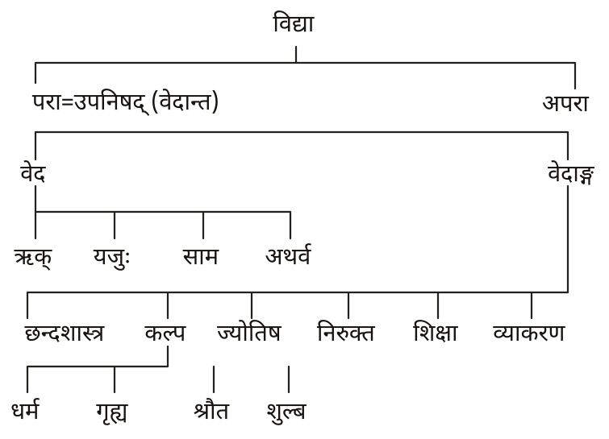
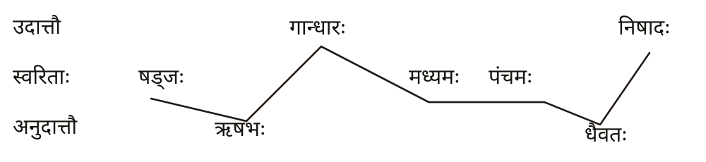
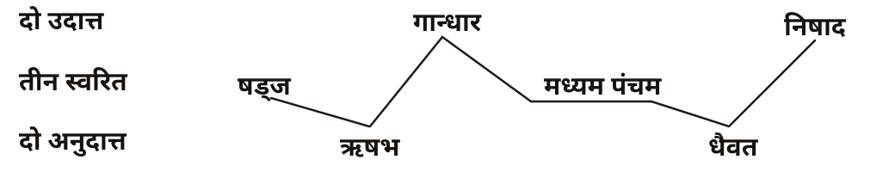

पाणिनीयशिक्षा
त्रिनयनाख्येन संस्कृतभाष्येण
चिन्तामणिनाम्ना हिन्दीभाषान्तरेण च विभूषिता
अवतरणिकया परिशिष्टपञ्चकेनोपसंहारेण च समन्विता
भाष्यकृत्
अवस्थी बच्चूलालो ज्ञानोपाह्वः
भाष्य-भाषान्तरकारः सम्पादकश्च
बालकृष्णः शर्मा
सहसम्पादकः
सन्तोषः पण्ड्या
प्रकाशकः
श्रीनिवासरथः
उज्जयिनीस्थ-कालिदास-अकादेमी-निदेशकः
विक्रमसंवत् २०५०
समर्पणम्
अनेन पाणिनीयशिक्षायास्त्रिनयनभाष्येण
श्रीवेदनाथमिश्रः
यो मां पुत्रीकृत्य स्वयं छात्रवृत्तिदानेन लघुकौमुदीमपीपठत्
श्रीमहावीरझाः
यो मां दुर्ललित इति पदव्या विभूष्य सिद्धान्तकौमुदीमारभ्य
शेखरपर्यन्तं नव्यव्याकरणमध्यापिपत्
श्रीनृसिंहोपाह्वो नारायणदत्तस्त्रिपाठी
येन पाणिनीयशिक्षाविषये कश्चन प्रकाशः प्रादायि
तेऽमी मयि भावेन वर्तमाना अमुत्र सत्त्वशुद्धिं तृप्तिं च लभन्तां न मम।
— अवस्थी बच्चूलालो ज्ञानोपाह्वः
समर्पण
पाणिनीयशिक्षा के त्रिनयनभाष्य का
चिन्तामणि हिन्दी भाषान्तर
मेरे दीक्षागुरु
बदरीनाथ धाम के पूर्व प्रधान रावल
अनन्तश्रीविभूषित ब्रह्मलीन
आचार्य विष्णु केशवन् नम्बूदिरि
की पुण्यस्मृति को सविनय समर्पित है।
— बालकृष्ण शर्मा
उक्त्वोदाहरणं किञ्चिद् बहुग्रन्थधरो नरः।
आक्षिप्तः शैक्षिकेणेह तृणाग्निरिव शाम्यति ॥
सुबहुज्ञोऽपि यो भूत्वा शिक्षां चेन्नाधिगच्छति।
न राजति सभायां स शैक्षिकस्य समीपतः ॥
ब्राह्मणेषु समेतेषु विद्वत्सु च बहुष्वपि।
ब्रह्मोद्ये सम्प्रवृत्ते यः शैक्षिकः स विराजते ॥
(ऋग्वेदप्रातिशाख्यस्य १४ पटलभाष्यान्ते उवटः)
अशुद्धपठनाच्चैव नैव मोक्षं प्रपेदिरे।
तस्मात् सर्वप्रयत्नेन शुद्धपाठी भवेद् द्विजः ॥
(पाराशरी-शिक्षा, ११३)
एवं ज्ञात्वा पठेद् यस्तु स गच्छेद् वैष्णवं पदम्।
न मे प्रियो द्विजः कश्चिच्छुद्धपाठी त्वतिप्रियः ॥
(तत्रैव, १५६)
स्थानं च करणं मात्रा सम्यगुच्चारणं तथा।
यो न वेद स निर्लज्जः पठामीति कथं वदेत् ॥
(वर्णरत्नप्रदीपिका-शिक्षा, ६)
पुरस्क्रिया
वह समय सन् १९३३ ई. में वसन्तपञ्चमी का था जब १४-१५ वर्षदेशीय हो कर मैंने अभिजित् मुहूर्त में उर्दू शिक्षा को तिलाञ्जलि दे कर अमरकोश से संस्कृत विद्या का 'ॐ नमः सिद्धम्' किया। उसी दिन से लगने लगा कि संस्कृत भाषा के उच्चारण की पद्धति सामान्य से पृथक्, अनेक अर्थों में विशेष है। प्रथमा उत्तीर्ण करने के पश्चात् जब अनुस्वार का परम्परागत उच्चारण सहसा प्राप्त हुआ तो मेरे पैर पृथ्वी से ऊपर उठ गये थे। फिर तो उच्चारण-सम्बन्धी भ्रान्तियाँ दूर होने लगीं और मैंने अपने गुरुवर आचार्य महावीर झा के उच्चारण को अपने लिये आदर्श माना क्योंकि उनमें मिथिला और काशी की अभिजात उच्चारण-परम्परा अमर हो कर जीवित थी। वे समय-समय पर अवसर निकालकर बताया भी करते थे। सन् १९४१-४२ में कुछ मास के लिए मैं काशी में रहने लगा, तब पूज्य पण्डित नारायणदत्त त्रिपाठी 'नृसिंह' के चरणों में बैठकर प्रौढ-मनोरमा पढ़ने का सुयोग मिला। सन् १९४२ के फरवरी-मार्च में शास्त्री प्रथमखण्ड की परीक्षा समीप थी। मैंने गुरुवर नृसिंहजी से पाणिनीयशिक्षा के विषय में, कहीं मार्ग में चलते-चलते पूछा, तो उन्होंने भी मेरे प्रश्नों का समर्थन करते हुए उच्चारण की समस्या और वर्णमाला की सङ्घटना को दुरूह बताते हुए अपने अध्ययनकाल के संस्मरण सुनाये और कहा कि मैंने तभी पाणिनीयशिक्षा की 'प्रकाश' टीका लिखी थी। तुम उसका क्रय कर लो तो काम चल जायगा। उन की वह पुस्तिका मुझे कठिनाई से मिल सकी, जिसे पढ़ कर कुछ संशयों का निराकरण अवश्य हुआ।
शिक्षा-वेदाङ्ग के उच्चारण सम्बन्धी विषय पर कुछ भी समझने का अधिक अवसर नहीं मिला, क्योंकि आचार्य आदि के करने के पश्चात् मैं सन् १९४६ से समूचे कार्यकाल में हिन्दी का शिक्षक रहा। सन् १९७० के आसपास सागर विश्वविद्यालय के ग्रन्थागार से ले कर मैंने ऋग्वेद-प्रातिशाख्य तथा शुक्लयजुर्वेद-प्रातिशाख्य पढ़े। मुझे विस्मय हुआ कि हमारे पूर्वज ऋषियों ने उच्चारण को बड़ा महत्त्व दिया था। तैत्तिरीय-प्रातिशाख्य तथा अथर्व-प्रातिशाख्य पर 'व्हिटने' का अंग्रेजी भाष्य प्राप्त कर के मैं न केवल चकित रहा अपितु मेरा मन धिक्कार से भर गया कि मेरी अपेक्षा एक अमेरिकन विद्यार्थी अच्छा विद्यार्थी सिद्ध हो रहा था।
उन्हीं दिनों मेरे सखा डॉ. गङ्गाराम पाण्डेय सागर में मेरे साथ रह कर पीएच.डी. कार्य के लिए संस्कृत वर्णमाला पर अनुसन्धान करने आ पहुँचे। उनके साथ कुल मिला कर प्रायः एक वर्ष रहने और विचार करने का अवसर मिला। शिक्षा-वेदाङ्ग का विद्यार्थी होने की दृष्टि से डॉ. पाण्डेय के साथ बिताया हुआ समय मेरे लिए स्वर्णयुग था। हम दोनों ने मिलकर बहुत कुछ सीखा और सिखाया।
कहना न होगा कि प्रायः दो वर्ष पूर्व अपने प्रस्तुत ग्रन्थ के लिए जब कुछ सामग्री लेना हुआ तो मैं लखनऊ जाकर कई दिन डॉ. पाण्डेय के साथ रहा। उन्होंने अपना ग्रन्थ तथा अन्य सामग्री का समवधान कर दिया जिस का मैंने उपयोग कर के इस ग्रन्थ के परिशिष्ट लिखे।
आज जब पाणिनीयशिक्षा का त्रिनयन-भाष्य प्रकाश में आ रहा है तब मैं अपने भीतर एक प्रकार की स्निग्धता या आर्द्रता का अनुभव करता हूँ। श्री बालकृष्ण शर्मा ने बड़े श्रम से भाष्य का हिन्दी रूपान्तर किया जो दुरूह कार्य था क्योंकि शास्त्रीय संस्कृत को हिन्दी में लाना बड़े
ऊहापोह को निमन्त्रण देता है। न जाने कितना आवापोद्वाप कर के उन्होंने यह रूपान्तर तैयार किया है। पाण्डुलिपि करना ही दुष्कर था क्योंकि मैं जराग्रस्त हाथों से कम्पमान लेखनी ले कर जो कुछ लिखता हूँ वह मुद्रणालयों के विधाताओं को विधाता की मस्तकरेखा बाँचने जैसा लगता है। उलझन यह थी कि यह कार्य किसे सौंपा जाय ? श्री बालकृष्ण शर्मा के अतिरिक्त श्री सन्तोष पण्ड्या ने यह भार अपने ऊपर लिया। इन दोनों ने हमारा भ्रूभङ्ग सहते हुए अन्ततः पाण्डुलिपि तैयार कर ली। श्री पण्ड्या प्रायः एक वर्ष तक बीच-बीच में मेरे द्वारा बताये हुए जोड़-घटाव करते रहे, तब कहीं जाकर पाण्डुलिपि को पूर्णता मिली। मैं इन दोनों को शुभाशीर्वचनों से अभिषिक्त करने में गौरव अनुभव करता हूँ। दोनों ही इसके सम्पादक हैं, अतः यह कहा जा सकता है कि वह सब भी उनका कर्तव्य ही था।
आज से ६ वर्ष पूर्व उज्जैन रहने आने पर पण्डित केसरिलाल शर्मा से परिचय हुआ। वे मुझसे बराबर सम्पर्क बनाये रहे हैं। उच्चारण की समस्याओं को मेरे सामने लाने में उनका जैसा कोई सहायक नहीं मिलेगा। वर्णमाला विषय पर आर्यसमाजियों द्वारा लिखी हुई अनेक लघु पुस्तिकाएँ इन मित्र ने सामने रखीं और लगातार प्रेरणा देते रहे।
यहाँ मैं कालिदास-अकादेमी के सञ्चालक आचार्य श्रीनिवास रथ को अपने हृदय में उपस्थित पाता हूँ, बाहर तो वे सदा निकट हैं। उन्होंने इसके प्रकाशन की चिन्ता बराबर रखी और आज उसे प्रकाशित पा कर मुझसे अधिक पुलकित हैं, इसके लिये पुण्य मान कर ही नाम लिया है, कृतज्ञता जताना उनके और मेरे स्वरूप-सम्बन्ध से बाहर है।
'ऋषि ऑफसेट' अत्यन्त नया और अत्याधुनिक प्रतिष्ठान है। इस के प्रतिष्ठापक एवं सञ्चालक श्री पुष्कर बाहेती मेरी मङ्गलाशंसाओं के पात्र हैं कि अधिक समय लग जाने पर भी इस ग्रन्थ के मुद्रण को उन्होंने प्राथमिकता दी और अपनी आराधना का विषय बना लिया। कहना न होगा कि महत्त्वपूर्ण ग्रन्थ के नाम पर यह उनका प्रथम मुद्रणप्रयास है।
जिन आचार्यों के वचनों से इस ग्रन्थ के सङ्कलन में सहायता मिली है वे सब मेरे आराध्य हैं। इस ग्रन्थ के उपोद्घात में उच्चारण की उन समस्याओं को सामने लाया गया है जो विजातीय भाषाओं के सम्पर्क से संस्कृत में घुस आई हैं। यह ग्रन्थ यदि एक भी जिज्ञासु के मन से वैसी विकृतियों को दूर कर संस्कृत उच्चारण को यथावत्ता दे सका तो यही इसकी कृतार्थता होगी। बहुत सी कमियाँ रह गई होंगी, इसे मेरी अल्पज्ञता मान कर विद्वज्जन क्षमा कर देंगे।
पन्था दिगन्तमपि नेतुमलं तथापि
पान्थः स्वगम्यमिह किञ्चन निश्चिनोति।
शक्तेर्विलासविविधत्वमिदं समीक्ष्य
यावच्चरामि खलु तत्र बुधाः प्रमाणम् ॥
दीपावली २०५० वि.
विद्वानों का वशंवद
बच्चूलाल अवस्थी 'ज्ञान'
कालिदास अकादेमी, उज्जैन
अवतरणिका
यस्मै प्रददौ साक्षादीशानः शब्दशीलनीं विद्याम्।
तं शङ्करावतारं दाक्षीपुत्रं नमस्कुर्मः ॥
(१) शिक्षा का व्युत्पत्तिपरक अर्थ
व्याकरण सम्बन्धी व्युत्पत्ति से आने वाले अर्थ पर ही मुख्यार्थ की प्रतिष्ठा होती है क्योंकि 'शिक्षा' शब्द योगरूढ है। इसे तीन प्रकार से देखा जा सकता है—
१ 'शिक्ष अभ्यासे' धातु से 'गुरोश्च हलः' (पासू ३. ३. १०३) से 'अ' प्रत्यय करने पर 'शिक्षा' की स्त्रीलिङ्ग भाववाचक संज्ञा की निष्पत्ति होती है और 'अकर्तरि च कारके संज्ञायाम्' (पासू ३. ३. १९) से करणवाचक संज्ञा मानने पर उस शास्त्र का अर्थ बनता है जिससे शिक्षणीय पदार्थ का अभ्यास (पुनः पुनः अनुसन्धान) किया जाता हो। भाववाचक संज्ञा के रूप में पुनः पुनः अनुसन्धान का ही अर्थ आता है।
२ सन्प्रत्ययान्त 'शक्तृ शक्तौ' धातु से 'अ' प्रत्यय 'अ प्रत्ययात्' (पासू ३. ३. १०२) करने पर निष्पन्न 'शिक्षा' का अर्थ 'शक्ति की इच्छा' अथवा सकने की इच्छा होता है— 'शक्तुमिच्छा शिक्षा' (पासू ७. ४. ५४)।
३ 'शक मर्षणे' धातु एवं सन् प्रत्यय से निष्पन्न 'शिक्षा' का अर्थ 'सहने की इच्छा' होता है। यह भी प्रायः द्वितीय व्युत्पत्ति वाला ही अर्थ देता है— 'शकितुमिच्छा शिक्षा' (पासू ७. ४. ५४)।
शिक्षाशास्त्र में उक्त तीनों अर्थों का समावेश होने पर भी प्रथम की प्रधानता है और यौगिक अर्थ के साथ रूढ अर्थ लेने पर ही वेदाङ्गविशेष का मुख्यार्थ बन पाता है। ऐसा ही अर्थ उपनिषद् में सुलभ है—
ओ३म् शीक्षां व्याख्यास्यामः। वर्णः स्वरः। मात्रा बलम्। साम सन्तानः। इत्युक्तः शीक्षाध्यायः।
(तैत्तिरीय १. २)
अर्थात् शिक्षा (शीक्षा) की व्याख्या कहेंगे। वर्ण, स्वर, मात्रा, बल, साम और सन्तान— यही शीक्षाध्याय कहा गया है।
यहाँ 'वर्ण' से स्वर एवं व्यञ्जन, स्वर से उदात्तादि, मात्रा से ह्रस्व-दीर्घ-प्लुत, बल से प्रयत्न, साम से पूर्वोत्तर मात्राओं के अन्तराल में सन्धिसूचक मात्रा का अर्थ आता है (याऽसौ मात्रा पूर्वरूपोत्तररूपे अन्तरेण सन्धिविज्ञपनी साम तद् भवति— ऐतरेयारण्यक ३. १. ५. ६) और सन्तान से उच्चारण या पाठ्यक्रम का प्रवाह अभिप्रेत है। यही शिक्षावेदाङ्ग है जिसे अपरा विद्या के दस स्थानों (वेद ४ तथा वेदाङ्ग ६) में लिया गया है जो स्वाध्याय की अनादि परम्परा है। (मुण्डकोपनिषद् १. १. ५)।
(२) शिक्षक
शिक्षा की उक्त व्युत्पत्तियों के अनुसार कृदन्त 'शिक्षक' का अर्थ अभ्यास करने वाला (शिक्षते इति शिक्षकः), अभ्यास कराने वाला (शिक्षयतीति शिक्षकः), शक्ति चाहने वाला (शिक्षतीति शिक्षकः), शक्ति की इच्छा दूसरे में उत्पन्न करने वाला (शिक्षयतीति शिक्षकः) होगा। परन्तु शिक्षाशास्त्र का जानने वाला या उसका अध्ययन करने वाला विशेष रूप से 'शिक्षक' कहा गया है— शिक्षामधीते वेद वा शिक्षकः (क्रमादिभ्यो वुन्— पासू ४. ३. ६१)। इस से इस वेदाङ्ग की पुरातन अध्ययन परम्परा पर प्रकाश पड़ता है। आगे इसी वेदाङ्ग पर विशेष विचार अपेक्षित है।
(३) शिक्षा-वेदाङ्ग
शिक्षाशास्त्र छह वेदाङ्गों में अन्यतम है। वस्तुतः स्वाध्याय में षडङ्ग सहित वेद के अध्ययन की विधि है— ब्राह्मणेन निष्कारणं षडङ्गो वेदोऽध्येयो ज्ञेयश्च।
इस प्रकार उपनिषदों को लेकर एकादश विद्याएँ व्यवस्थित हैं—

एकादश (या अर्वाचीन परिगणन के अनुसार अष्टादश) विद्याएँ शब्दों में ही निबद्ध हैं और शब्दों की रचना वर्णसमाम्नाय (वर्णमाला) के अधीन है। विचारपूर्वक देखा जाय तो विश्व का समस्त पदार्थजाल शब्दाधीन हो कर ही बोध में यथावत् आ पाता है, अत एव भगवान् भर्तृहरि ने कहा है—
न सोऽस्ति प्रत्ययो लोके यः शब्दानुगमादृते।
अनुविद्धमिव ज्ञानं सर्वं शब्देन भासते ॥
सभी शब्द वर्णात्मक हैं और वर्ण उच्चारण से स्वरूप लेते हैं। उच्चारण की विद्या शिक्षाशास्त्र है जिसके बिना किसी विद्या या ज्ञान का व्यवहारतः स्वरूपलाभ असम्भव है। यही शिक्षा का मौलिक महत्त्व है।
(४) शिक्षा शब्द के व्युत्पत्तिपरक अर्थ पर पुनर्विचार
सामान्यतः 'शिक्ष अभ्यासे' धातु से शिक्षणं शिक्षा की व्युत्पत्ति से कुछ भी सीखना तथा अभ्यास करना शिक्षा है। दूसरी दृष्टि से 'शक्तृ शक्तौ' धातु के सन्नन्त 'शिक्ष' रूप से इस की निष्पत्ति है। तदनुसार 'शक्तुमिच्छा शिक्षा' है— अर्थात् सकने या शक्ति प्राप्त करने की इच्छा को 'शिक्षा' कहा जायगा। 'शक मर्षणे' धातु का सन्नन्त रूप भी 'शिक्ष' बनता है। तदनुसार 'शकितुमिच्छा शिक्षा' है— सहन करने या तितिक्षा की इच्छा को 'शिक्षा' मानना चाहिए। प्रथम व्युत्पत्ति में साक्षात् 'शिक्ष' धातु है परन्तु शेष दो में 'शक्' धातु से 'सन्' प्रत्यय के साथ 'शिक्ष' धातुरूप बनता है जिसके लिए पाणिनीय सूत्र है— 'सनि मीमाघुरभलभशकपतपदामच इस्' और 'अ प्रत्ययात्' सूत्र से 'अ' प्रत्यय होता है। अतः स्त्रीलिङ्ग भाववाचक संज्ञा 'शिक्षा' बनती है। प्रथम व्युत्पत्ति में 'गुरोश्च हलः' सूत्र से 'अ' प्रत्यय होता है।
वेदाङ्ग विद्या के अर्थ में 'शिक्षा' शब्द करणसाधन है, अतः 'शिक्षते यया सा शिक्षा' व्युत्पत्ति होगी जिस के द्वारा अभ्यास अपनाया जाए, शक्ति प्राप्त करने की इच्छा की जाए और उच्चारण के गुणों की सहिष्णुता की इच्छा की जाए वह विद्या 'शिक्षा' है। शुद्ध उच्चारण की शक्ति अर्जित करने से पाठ्यगुणों की तितिक्षा चाही जाती है और तभी अभ्यास सार्थक बनता है। सर्वथा उच्चारण के दोषों को निरस्त कर गुणों का सन्निवेश ही शिक्षाशास्त्र का परम प्रयोजन है। इस सन्दर्भ में अभ्यासादि करने वाले को तो 'शिक्षक' कहा ही जायगा, साथ ही 'शिक्षा' शास्त्र के अध्येता एवं ज्ञाता को भी शिक्षक कहा जाता है— शिक्षामधीते वेद वा शिक्षकः— क्रमादिभ्यो वुन्।
(५) पाणिनीयशिक्षा
'पाणिनीयं मतं यथा' इस उक्ति पर ही प्रथमतः अधुनातन मनीषी चौंकते और स्थापित करते हैं कि यह किसी अन्य की कृति है, अन्यथा स्वयं पाणिनि अपना नाम न देते। आधुनिक रचयिता अपने नाम से ग्रन्थ प्रकाशित करवाते हैं परन्तु अपने नाम को ग्रन्थघटक नहीं करते। इस के विपरीत यह भी कहा जा सकता है कि नाम को ग्रन्थ में लाना आचार्य की शैली है। आचार्य अपने मत को 'पाणिनीय' इसलिए बताता है कि शङ्कर से इस विद्या का अन्तर्दर्शन पाने के अनन्तर वही उसका प्रथम वक्ता है। 'मदीय' या 'अस्मदीय' कहने से कोई ज्ञान नहीं हो सकता कि यह किस का मत है, ऐसे शब्द सर्वनामात्मक हैं। अत एव यहाँ नामोल्लेख के पश्चात् 'पुनर्व्यक्तीकरिष्यामि' कह कर मुनि ने उत्तम पुरुष में अपना सङ्केत दिया है। अन्यत्र भी आचार्यों ने अपना नाम ग्रन्थघटक बनाया है।
१— अर्थशास्त्र में— 'नेति कौटल्यः।'
२— कामशास्त्र में— 'वात्स्यायनः।'
३— महाभाष्य में— 'गोनर्दीयस्त्वाह।'
इनके अतिरिक्त भी दृष्टान्त खोजे जा सकते हैं।
'दाक्षीपुत्रपाणिनिना' उल्लेख भी तदनुरूप ही है। इस व्याज से आचार्य ने अपनी जननी दाक्षी और पिता पाणिन का स्मरण किया है। अन्त के तीन श्लोकों में व्याकरण-प्रवर्तक के रूप में उन्होंने अपने को मानों अपने द्वारा ही प्रणम्य बताते हुए कहा है— 'तस्मै पाणिनये नमः'। यह और भी खटकने की बात मानी जाने लगी है। कोई अपना ही प्रणाम स्वयं कैसे कर सकता है? परन्तु यह निबन्धन शिष्यशिक्षार्थ होने से परम्परा के अनुरूप ही माना जाना चाहिए, अत एव कहा गया है—
शङ्करः शाङ्करीं प्रादाद् दाक्षीपुत्राय धीमते।
वाङ्मयेभ्यः समाहृत्य देवीं वाचमिति स्थितिः ॥
जब शङ्कर से यह विद्या पाणिनि को साक्षात् प्राप्त हुई तब निश्चय ही वह प्रणम्य हो जाता है और अपने लिये अपनी ही प्रणम्यता की व्याख्या स्वतः युक्त प्रतीत होती है। यद्यपि नमःपदार्थ परिभाषित किया गया है—
'स्वनिष्ठापकर्षनिरूपितपरनिष्ठोत्कर्षस्वीकारो नमःपदार्थः।'
अर्थात् अपने अपकर्ष की अपेक्षा अन्य के उत्कर्ष का स्वीकार ही नमस्कार है। यहाँ पाणिनि ने अपने अपकर्ष की अपेक्षा में अपना ही उत्कर्ष मान्य किया है जो असङ्गत लगता है। तथापि यह विचारणीय है कि विद्या के अवतरण से पूर्व तथा पश्चात् का पाणिनि नमस्कर्ता व्यक्तिरूप है और नमस्य पाणिनि केवल वह है जिसमें शङ्कर से व्याकरण-विद्या का अवतार हुआ है। दोनों अंशों को पृथक् लेने पर कोई अनुपपत्ति नहीं रह जाती।
मान भी लिया जाय कि किसी शिष्य ने प्रणामांश को प्रक्षिप्त कर दिया है अथवा सम्पूर्ण शिक्षाग्रन्थ ही शिष्यनिर्मित है तो भी अनादि-परम्परावादी के लिए कोई अन्तर नहीं आता। पाणिनीयशिक्षासूत्र और आपिशलशिक्षासूत्र प्रायः शब्दशः एकरूप हैं, अतः वहाँ 'पाणिनीय मत' का पृथक् पता नहीं चल पाता परन्तु पाणिनीयशिक्षा में हकार, अनुस्वार, रङ्ग एवं कम्प के उच्चारण पर सविशेष प्रकाश डाला गया है। उदात्तादि स्वरों के सङ्केतार्थ अङ्गुलिचालन एवं हस्तचालन की व्यवस्था दी गयी है। इस प्रकार के अनेक तथ्य शिक्षावेदाङ्ग की महत्त्वपूर्ण कड़ी का कार्य करते हैं, जिन में प्रातिशाख्यानुगत उच्चारणदोष भी सरल रीति से देखे जाते हैं।
(६) आधुनिक उच्चारणदोष
पहले तुर्कों के तत्पश्चात् अँगरेज़ों के प्रभाव से फ़ारसी तथा अँगरेज़ी के वर्णों का उच्चारण भारतीय वर्णमाला पर आक्रामक रूप ले बैठा है। इस का संक्षिप्त विवरण अपेक्षित है—
(१) अनुस्वार — अनुस्वार नासिक्य वर्ण है जो स्वर के अनन्तर और व्यञ्जन से पूर्व उच्चरित होता है। इस के उच्चारण में कण्ठ से चला हुआ वायु केवल नासिका से निकलता है। फ़ारसी तथा अँगरेज़ी की वर्णमाला में तदर्थ नकार या मकार लिखे जाते हैं जिसका परिणाम हुआ है कि उत्तर भारत में नकार और दक्षिण भारत में मकार ने अनुस्वार का स्थान ले लिया है। उदाहरणार्थ— 'अंश' को कहीं अन्श और कहीं अम्श कहा जाने लगा है। यहाँ शिक्षाशास्त्र के अनुसार सावधान हो कर भारतीय निधि की रक्षा में दत्तचित्त रहना चाहिए।
(२) फ - फ़ — भारतेतर देशों की भाषाओं में 'फ' आदि वर्गीय महाप्राण ध्वनियों का अभाव है। वहाँ 'फ़' ध्वनि अवश्य है जिस का उच्चारण 'व' के समान दन्त्योष्ठ्य होता है। इसके
विपरीत भारत का 'फ' ओष्ठ्य वर्ण है, अतः 'प' के समान बोला जाता है जिसमें पकार अल्पप्राण तथा फकार महाप्राण है। 'फ़' ध्वनि अपनी नहीं है। कुछ लोग फिर को फ़िर या फूल को फ़ूल कहने लगे हैं जो शिक्षा-शास्त्र की दृष्टि से असङ्गत है।
(३) हकारघटित संयुक्ताक्षर — ण-न-म-य-र-ल-व वर्णों के साथ संयुक्ताक्षर में ह आता है और वह सदैव पूर्वघटक ही रहता है— ह्ण, ह्न, ह्म, ह्य, ह्र, ह्ल, ह्व। इन में रेफघटित संयोग अपवाद है जिस में कहीं-कहीं रेफ पूर्वघटक होकर आता है जैसे— अर्हण, कहीं-कहीं रेफ को परघटक देखा जाता है— जैसे— हृद। परन्तु शेष छह में हकार ही पूर्वघटक रहता है— जैसे अपराह्ण, मध्याह्न, ब्रह्म, बाह्य, आह्लाद और आह्वान आदि। ऐसे स्थलों में हकार का ही पूर्वोच्चारण विहित है। विपरीत उच्चारण एवं लेखन असंस्कृत है।
(४) हकार एवं विसर्ग — अवधेय है कि पद के अन्त में कभी हकार का प्रयोग नहीं होता परन्तु विसर्ग का प्रयोग पदान्त में ही होता है। इस के अतिरिक्त हकार सघोष व्यञ्जन है किन्तु विसर्ग अघोष है। हकार का अनुप्रदान नाद है और विसर्ग का श्वास।
(५) शकार — आञ्चलिक प्रभावों से 'श्' का उच्चारण स् से भिन्न न रह जाए तो असाधु है। जिह्वा की नोक दाँतों का कुछ-कुछ स्पर्श करे तो सकार का उच्चारण होता है परन्तु तालु का स्पर्श होने पर शकार का उच्चारण किया जाता है, तदर्थ जिह्वा को उठाकर तालु की ओर ले जाना होता है। विदेशी प्रभाव से पश्चात् तथा पश्चिम आदि में 'श्च' का उच्चारण दन्तमूल से होने लगा है जो अनुचित है।
(६) षकार — इस का उच्चारण करने में जिह्वा को उलटकर तालु के पीछे मूर्धा के साथ लगाना पड़ता है, अन्यथा उच्चारण असम्भव रहता है। 'कष्ट' आदि के 'ष्ट' का उच्चारण विजातीय प्रभाववश दन्तमूलीय हो जाता है जिस से सावधान रहना चाहिए।
(७) ह्रस्व अकार — उच्चारणदोष ने ह्रस्व अकार को सर्वाधिक प्रभावित किया है। राम, जनता, बोधकता, कमल, कमला, चपल, चपला, चपलता, लोक आदि में असंयुक्त व्यञ्जन का परवर्ती 'अ' लुप्त करके राम्, जन्ता, बोधक्ता, कमल्, कम्ला, चपल्, चप्ला, चपल्ता, लोक् आदि बोला जाने लगा है। वर्णोच्चार को निर्दोष रखने के लिए धैर्य की अपेक्षा रहती है कि सभी वर्णों के साथ न्याय हो सके। यह धैर्य अभ्यासाधीन है और अभ्यास तभी होगा जब गुरुमुख से श्रवण कर दुहराया जाए। गुरु किसे माना या बनाया जाए यह प्रश्न विद्यार्थी को स्वयं सुलझाना होगा।
(८) क्ष — यह क् और ष् से घटित संयुक्ताक्षर है जिसका ककारांश स्पष्ट सुना जाता है, परन्तु षकारांश तालव्य जैसा हो जाता है। शुद्ध तालव्यांश होता तो छकार का श्रवण होता। शुद्ध मूर्धन्यांश 'ष' रहना चाहिये। प्राकृत में क्ष परिवर्तन कहीं 'छ' में होता है— मक्षिका > मच्छिआ, वक्षः > वच्छं आदि और कहीं 'ख' रूप में परिवर्तन मिलता है क्षण > खण, पक्ष > पक्ख, रूक्ष > रुक्ख, तीक्ष्ण > तिक्ख आदि। इस से प्रमाणित होता है कि इसका उच्चारण कठिन रहा है। सावधान होकर मूर्धन्य उच्चारण करना चाहिये।
(९) ज्ञ के उच्चारण की समस्या — चवर्ग के तृतीय-पञ्चम (जकार एवं ञकार) के संयोग से ज्ञ की निष्पत्ति है जिसे 'ज्+ञ' मानना चाहिए। जिस प्रकार 'याच्ञा' में संयोग है वैसा ही मानने पर लिपि का विशिष्ट स्वरूप क्यों है? जिस प्रकार 'क्ष' का विशिष्ट लिप्याकार तथा उच्चारण है उसी प्रकार 'ज्ञ' के विषय में जानना चाहिए। इस के चार उच्चारण प्रचलन में हैं—
१ उत्तरभारतीयों का उच्चारण 'ग्यँ' जैसा है और यही प्रचलन में रहा आया है। यहाँ दो अनुपपत्तियाँ हैं। एक तो यह कि जकार को गकार कर लिया गया है और दूसरे 'ञ' को 'यँ' बनाया गया है जो स्पृष्ट चवर्गीय उच्चारण के विपरीत ईषत्स्पृष्ट अन्तःस्थीय उच्चारण है। समर्थन में कहा जा सकता है— वर्गीय तृतीय एवं पञ्चम के मध्य में वर्गीय तृतीय के सदृश 'यम' जुड़ता है (यमों पर ग्रन्थ में द्रष्टव्य है)। यह यम 'ग्' जैसा होगा जो नासिक्य है। इस प्रकार 'ज् गँ ञ' जैसा स्वरूप बनता है।[१]
[१] अत एव (यमयोगादेव) यज्ञादौ गकारश्रुतिः।
— सोद्योत महाभाष्य १.१.८ पर दाधिमथ टिप्पणी।
उच्चारण की सरलता के कारण जकार का लोप होता है जिस से 'ग्यँ' जैसा उच्चारण हो चला है। इस में ञकार वस्तुतः तालव्य नकार ही है जिसको 'यँ' के समान उच्चारित किया जाने लगा है। गकारघटित उच्चारण अतीव प्राचीन रहा है अतः ग्रीक में ज्ञानपर्याय 'ग्नोसिस्' (gnosis) चलता है और अँगरेज़ी में इसके अतिरिक्त जो 'नालेज्' चलता है वह वर्तनी में 'क्नालेज्' (knowledge) है। इस प्रकार गकारसदृश उच्चारण की पुरातन परम्परा रही है। 'ञ' जैसा उच्चारण सम्मत है। ञकार की ईषत्स्पृष्टता चिन्त्य है परन्तु अब 'ग्यँ' जैसा उच्चारण अभ्यास में आ गया है।
२ शुक्लयजुर्वेदपाठी 'ज् ञ' या 'द् ञ' जैसा पाठ करते हैं। यहाँ ञकार ही नकारसदृश उच्चरित है क्योंकि तालव्य जकार के संयोग में दन्त्य नकार असङ्गत है, अतः ञकार का वही मूल उच्चारण मानना चाहिए। परन्तु वेदपाठ से बाहर प्रायः 'ग्यँ' जैसा उच्चारण ही प्रचलन में रहा आया है। 'जानाति' इत्यादि में व्यवधान आने पर नकार ही रहता है अतः स्पष्ट है कि चकार (याच्ञा) और जकार के पूर्वसंयोगी होने पर ही 'ञ' मूलतः उपलब्ध रहा है। 'सञ्चय' तथा 'सञ्जानीते' इत्यादि में विकल्प से परसवर्ण की अवस्था आती है और तब चकार एवं जकार का परसंयोग रहता है। अतः ञकार ऐसा व्यञ्जन है जो चवर्ग के संयोग में ही मिलता है। स्पष्ट ही उस अवस्था में तालव्य उच्चारण सम्भाव्य है। वाञ्छा, वञ्चना आदि में नित्य 'ञ' है।
३ महाराष्ट्र के लोग 'ज्ञ' को 'द्न्य' जैसा बोलते हैं। यह उच्चारण भी प्राचीन रहा है, अत एव फ़ारसी में ज्ञानार्थक धातु 'दानिश्तन्' है, ज्ञातपर्याय 'दानिस्त', ज्ञानपर्याय 'दानिश्' है तथा ज्ञानवान् के लिए 'दानिश्मन्द' तथा 'दाना' कहा जाता है।
४ इधर आर्यसमाज के प्रभाववश शुद्धीकरण हेतु 'ज् ञ' उच्चारण किया जाने लगा है परन्तु यहाँ भी ञकार का ईषत्स्पृष्टता दोष यथापूर्व है।
कुछ लोगों ने एक आन्दोलन चलाकर ञकार के स्पृष्ट उच्चारण का प्रस्ताव रखा है। यह 'ज़' जैसा ही है जिस में अनुनासिक वर्ण की दन्त्यता न हो कर तालव्यता है।
'ग्यँ' वाला उच्चारण अपनी परम्परा रखता है अत एव नागेश भट्ट ने कुछ ऐसा कहा है कि जकार-ञकार का संयोग है परन्तु उच्चारण में भिन्नता पायी जाती है। इसके अतिरिक्त गोस्वामी तुलसीदास 'मानस' में 'जग्य', 'ग्यान' आदि प्रयुक्त करते हैं जिस से भी परम्परा पुष्ट होती है।
(१०) ऋ - ऌ — इन में ऋकार मूर्धन्य है अतः जीभ पीछे की ओर मोड़कर किञ्चित् स्पर्श-सा करते हुए उच्चारण किया जाता है। ऌकार दन्त्य है, अतः जिह्वाग्र को दन्तस्पर्श-सा कराते हुए प्रयोग में लाया जाता है। ये दोनों वर्ण यद्यपि समानस्वर हैं तथापि स्वरांश के मध्य में क्रमशः
रेफ एवं लकार संश्लिष्ट रहते हैं, आसपास स्वरभक्तियाँ रहती हैं, फलतः व्यञ्जनांश का पृथक् श्रवण या उच्चारण नहीं होता—
ऋ-ऌवर्णे रेफलकारौ संश्लिष्टावश्रुतिधरावेकवर्णौ।
(शुक्लयजुर्वेदप्रातिशाख्य ४. १४६)
अर्थात् ऋकार में रेफ तथा ऌकार में लकार का इस प्रकार संश्लेष रहता है कि वे (रेफ-लकार) पृथक् श्रुतिधर नहीं होते, अतः समग्र वर्णस्वरूप में वे एकवर्णता प्राप्त करते हैं।
विधिवत् स्थान एवं करण से उच्चारण करने पर आसपास की स्वरभक्तियाँ (स्वरांश) अपने आप उच्चारण एवं श्रवण में आती हैं परन्तु वर्णस्वरूप में द्वयता नहीं रहती। इन्हें 'रु' तथा 'लृ' जैसे उच्चारण में लाना सदोष है जिस पर ऋग्वेदप्रातिशाख्य में प्रकाश डाला गया है।
(११) ङ — यह कण्ठनासिक्य वर्ण है जिस के उच्चारण में दोनों स्थानों का एक साथ उपयोग किया जाता है। यह 'गँ' नहीं है। शुद्ध उच्चारणार्थ गुरु की प्रतिपत्ति भी आवश्यक है।
(१२) ञ — यह तालुनासिक्य है जिस के उच्चारणार्थ तालुस्पर्श आवश्यक है अन्यथा 'यँ' हो जायगा। अञ्चल, उञ्छ, अञ्जन, झञ्झा आदि में संयुक्तपरवर्ती वर्ण के साथ ञकार का तालव्य उच्चारण हो ही जाता है, अतः तदर्थ पृथक् प्रयत्न अनपेक्षित है। 'ज्ञ' तथा 'याच्ञा' में यह परावयव हो कर आता है। 'ज्ञ' के विषय में विचार किया जा चुका है। 'याच्ञा' में सावधान रह कर उच्चारण करना चाहिए। उच्चारण ठीक न हो पाने से ही याचना हो गया है।
(१३) ण — कण्टक, कण्ठ, काण्ड इत्यादि में णकार का श्रवण नकारसदृश प्रतीत होता है, परन्तु परघटक टवर्गीय व्यञ्जन की मूर्धन्यता यथावत् रखी जाए तो पूर्वघटक भी मूर्धन्य ही रहता है। कुछ लोग ऐसे स्थलों में सायास उच्चारण कर मूर्धन्यता लाते हैं।
(१४) पदान्त अनुस्वार — इस के पर यदि वर्गीय वर्ण होता है तो परसवर्ण उच्चारण हो सकता है — ग्रामं गच्छति = ग्रामङ्गच्छति, धर्मं चरति = धर्मञ्चरति, ग्रन्थं टीकते = ग्रन्थण्टीकते, पापं तरति = पापन्तरति, रामं भजति = रामम्भजति इत्यादि। ऐसे स्थलों में परसवर्ण घटित उच्चारण के लिए अत्यन्त सावधान रहना पड़ता है, अतः अनुस्वार का ही उच्चारण श्रेयस्कर है।
(१५) यँ - वँ - लँ — संयम, संवत्, संलाप के उच्चारण सय्यम, सव्वत एवं सल्लाप ही सरल हैं। प्रथम प्रकार ही लेखन में प्रायः आता है। उभयथा उच्चारण किया जा सकता है।
(१६) स्क इत्यादि — शब्द के आरम्भ में संयुक्ताक्षरघटक श-ष-स का दुरुच्चारण आबालवृद्ध व्याप्त है। इस उच्चारण में संयुक्ताक्षर के पूर्व प्रायः अकार या इकार को जोड़ लिया जाता है फलतः दो मात्राएँ बढ़ जाती हैं। हिन्दी में मात्राछन्द लिखने वाले लोगों में यह रोग बढ़ा-चढ़ा देखा जाता है जहाँ स्मृति-इस्मृति, स्मरण-अस्मरण आदि हो जाते हैं। लिखने में शुद्धता होने पर भी उच्चारण की अशुद्धता बड़ी भारी समस्या है। स्कन्द-अस्कन्द, स्कन्ध-अस्कन्ध, श्चोतन-अश्चोतन या इश्चोतन, स्तम्भ-अस्तम्भ, स्तुति-इस्तुति, स्तोत्र-अस्तोत्र या इस्तोत्र, स्थान-अस्थान, स्थिति-इस्थिति, स्पन्द-इस्पन्द या अस्पन्द, श्मशान-अश्मशान या शमशान आदि हो जाते हैं।
उक्त अशुद्ध उच्चारण के कारण पर विचार किया जाय तो स्पष्ट होगा कि उच्चारयिता स्थान एवं प्रयत्न का तालमेल बिगाड़ लेता है। श-ष-स के उच्चारण में ईषद्विवृत या विवृत प्रयत्न होता है और स्थान तालु, मूर्धा तथा दन्त रहते हैं। जिह्वाग्र को स्थान के पास उच्चारण से पूर्व इस प्रकार सटा लिया जाय कि जब वर्ण का उच्चारण हो तभी आभ्यन्तर-यत्न कार्यकारी हो। यदि ऐसा न किया जाय और विवृत प्रयत्न को पहले ही दाग दिया जाय तो स्वर का अनावश्यक उच्चारण अवश्यम्भावी हो जाता है। इस से सावधान रहना चाहिए।
(७) करणविचार
वर्णों का उच्चारण जिन अवयवों पर वायु के आघात से होता है उन्हें वर्णों का 'स्थान' कहा जाता है जिन का विवेचन शिक्षाग्रन्थ में किया गया है। स्थानों से पृथक् उन अवयवों की 'करण' संज्ञा है जो वाताघात में अनिवार्य सहायक रहते हैं। प्रातिशाख्यों तथा शिक्षाग्रन्थों में पुष्कल विवरण पाया जाता है —
१ दन्त्या जिह्वाग्रकरणाः। (शुक्लयजुर्वेदप्रातिशाख्य १.७६)
अर्थात् जो वर्ण दन्तस्थान से उच्चारित होते हैं उन का करण जिह्वा का अग्रभाग रहता है।
२ रश्च। (वही १.७७)
अर्थात् रेफ का भी करण जिह्वाग्र है।
३ मूर्धन्याः प्रतिवेष्ट्याग्रम्। (वही १.७८)
अर्थात् (रेफ को छोड़कर सभी) मूर्धन्यों का उच्चारण जिह्वाग्र को पीछे की ओर लपेट कर किया जाता है, अतः उन का करण प्रतिवेष्टित जिह्वाग्र है।
४ तालुस्थाना मध्येन। (वही १.७९)
अर्थात् जिन का स्थान तालु है उन के उच्चारण में जिह्वामध्य करण है।
५ समानस्थानकरणा नासिक्यौष्ठ्याः। (वही १.८०)
अर्थात् नासिक्य 'हूँ' तथा ओष्ठस्थानीय वर्णों का स्थान एवं करण एक ही रहता है।
६ वो दन्ताग्रैः। (वही १.८१)
अर्थात् वकार के करण दन्ताग्र होते हैं।
७ नासिकामूलेन यमाः। (वही १.८२)
अर्थात् यमों का करण नासिकामूल है।
८ जिह्वामूलीयानुस्वारा हनुमूलेन। (वही १.८३)
अर्थात् जिह्वामूलीय तथा अनुस्वार का करण हनुमूल है जिसे पाणिनीयशिक्षा में 'दन्तमूल' मानते हुए अनुस्वार को दन्तमूल्य कहा गया है।
९ कण्ठ्या मध्येन। (वही १.८४)
अर्थात् कण्ठस्थानीयों का करण हनुमध्य है— दन्तमूल तथा दन्ताग्र के मध्यभाग से उन का उच्चारण होता है।
सामान्यतः 'हनु' चिबुक या ठुड्डी का अर्थ देता है परन्तु यहाँ मुख के अन्तर्वर्ती भाग को लेना चाहिए। निचली दन्तपङ्क्ति का अधोभाग 'हनु' कहा गया है।
(८) संयुक्ताक्षरविवेचन
स्वर से परवर्ती संयुक्ताक्षर के उच्चारण की प्रक्रिया बहुल है। उस के सूत्र इस प्रकार हैं —
१ स्वरात् संयोगादिर्द्धिरुच्यते सर्वत्र। (वही ४.१००)
अर्थात् स्वर से परे संयुक्ताक्षर के आदिम घटक का सर्वत्र द्वित्व होता है, यह सामान्य विधि है। जैसे, शक्य = शक्क्य, चक्र = चक्क्र, वाक्य = वाक्य, वज्र = वज्ज्र, पाठ्य = पाट्ठ्य, जाड्य = जाड्ड्य, सत्य = सत्त्य, रथ्या = रत्थ्या, पद्य = पद्द्य, भद्र = भद्द्र, विद्या = विद्द्या, साध्य = साद्ध्य, गण्य = गण्ण्य, कन्या = कन्न्या, क्षिप्र = क्षिप्प्र, सभ्य = सब्भ्य, रम्य = रम्म्य, काम्य = काम्प्य इत्यादि। इस नियम के कुछ अपवाद हैं —
२ परं तु रेफ-हकाराभ्याम्। (वही ४.१०१)
अर्थात् यदि संयोग में पूर्ववर्ती रेफ या हकार हो तो उन का द्वित्व नहीं होता प्रत्युत परवर्ती व्यञ्जन का द्वित्व होता है। जैसे कर्म = कर्म्म, कार्य = कार्य्य, अर्क = अर्क्क, सह्य = सहय्य, ब्रह्म = ब्रह्मम इत्यादि। रेफ तथा हकार का किसी अवस्था में द्वित्व नहीं होता क्योंकि दो रेफ एक साथ (संस्कृत में) नहीं रहते — एक का 'रोरि' सूत्र से लोप हो जाता है और यर् प्रत्याहार के वर्ण ही द्वित्वभागी हैं, अतः हकार का द्वित्व नहीं होता अर्ह, गर्हा इत्यादि उदाहरण हैं।
३ ऊष्मान्तस्थाभ्यश्च स्पर्शः। (वही ४.१०२)
अर्थात् ऊष्म (शषस) और अन्तःस्थ (यरलव) से परे स्पर्श का द्वित्व नहीं होता, इन में य-व संयोग में पूर्वस्थ नहीं होते और रेफ का द्वित्व नहीं होता (जैसा कि देखा जा चुका है) अतः लकार को ही उदाहरण में लिया गया है — कल्प, शाल्मली इत्यादि उदाहरण हैं। ऊष्मों के उदाहरण द्रष्टव्य हैं— अश्व, शुष्क, वस्तु इत्यादि।
४ जिह्वामूलीयोपध्मानीयाभ्यां च। (वही ४.१०३)
अर्थात् जिह्वामूलीय तथा उपध्मानीय से परे स्पर्शव्यञ्जन का द्वित्व होता है — कःक्करोति, कःक्खनति, वृक्षःप्पतति, वृक्षःप्फलति इत्यादि।
५ यैस्तु परं तैर्न पूर्वम्। (वही ४.१०४)
अर्थात् जिनके साथ परवर्ती का द्वित्व होता है उन के साथ पूर्व का नहीं होता — दो में एक की ही द्विरुक्ति विहित है।
६ नास्वरपूर्वा ऊष्मान्तस्थाः। (वही ४.१०५)
अर्थात् जिन के पूर्व में स्वर न हो ऐसे ऊष्म तथा अन्तस्थ द्वित्वभागी नहीं होते — व्रत, श्री, स्रुव आदि में पूर्व वर्ण का द्वित्व नहीं हुआ है। श्चोतन, स्तुति आदि में परवर्ती का द्वित्व नहीं होता।
भगवान् पाणिनि ने दो सूत्रों द्वारा द्वित्व की वैकल्पिक व्यवस्था दी है — अचो रहाभ्यां द्वे और अनचि च। परन्तु प्रायोगिक दृष्टि से प्रातिशाख्य की व्यवस्था ही योग्य है।
७ प्रथमैर्द्वितीयास्तृतीयैश्चतुर्थाः। (वही ४. १०८)
अर्थात् वर्गीय व्यञ्जनों के द्विर्वचन में दो तथ्यों का ध्यान रखना चाहिए— द्वितीय व्यञ्जनों का द्विर्वचन वर्गीय प्रथम व्यञ्जनों (के अनुसरण) से होता है। उदाहरणार्थ— सक्ख्य (सख्य), व्याग्घ्र (व्याघ्र), अर्घ (अर्घ), शाठ्य (शाठ्य), आढ्य (आढ्य), अर्थ (अर्थ), रत्थ्या (रथ्या), मद्ध्य (मध्य), अर्द्ध (अर्ध), सब्भ्य (सभ्य), गर्भ (गर्भ) इत्यादि। पाणिनि ने एतदर्थ दो सूत्र बनाए हैं— खरि च, झलां जश् झशि।
ध्यान रहे कि पूर्ववर्ती पद के अन्त वाले स्वर के पश्चात् पदादि संयुक्ताक्षर में द्वित्व होता है — काव्यप्प्रकाश, घनश्श्याम। संयोगे गुरु पाणिनिसूत्र ऐसी ही व्यवस्था देता है।
(९) विशेष
लौकिक उच्चारण की दृष्टि से यहाँ ज्ञातव्य है कि भगवान् पाणिनि ने उक्त सूत्रों द्वारा द्वित्व को वैकल्पिक माना है परन्तु सर्वत्र विकल्प मानने पर सङ्गत उच्चारण नहीं हो सकता — द्वित्व न कर के 'दध्यानय' लिखा जा सकता है परन्तु उच्चारण में दद्ध्यानय ही रहेगा। 'विप्र' लिख कर भी 'विप्प्र' ही बोला जाता है। 'कुरुक्षेत्र' का उच्चारण 'कुरुक्क्षेत्र' ही होगा। कतिपय स्थलों में ही विकल्प देखा जाता है —
१ स्पर्श व्यञ्जनों के परस्पर संयोग में द्विरुक्त उच्चारण प्रायः नहीं पाया जाता— उत्कट, शुक्ति, मग्न, तप्त, षट्कोण, उद्धव इत्यादि।
२ रेफ तथा हकार के पश्चात् द्वित्व का विकल्प ही रहता है— कर्म = कर्म्म, कार्य = कार्य्य, कर्षण = कर्षण इत्यादि। हकार के पश्चात् कदाचित् ही लोक में द्वित्वात्मकता रहती है — ब्रह्म, चिह्न, पूर्वाह्ण, सह्य, आह्लाद, आह्वान आदि में म, न, ण, य, ल, व को द्वित्वात्मक भी उच्चारित कर सकते हैं परन्तु प्रायः वैसा पाया नहीं जाता।
३ दो पदों को एक साथ लेने पर यदि पहला पद हलन्त तथा परवर्ती हलादि होता है तो प्रायः द्वित्वात्मकता नहीं पायी जाती है— ग्रामाद् गच्छति, चतुष्पाद् रौति इत्यादि। यहाँ अर्थ की स्पष्टता की दृष्टि से दोनों पद पृथक् बोले जाते हैं अन्यथा उच्चारण में द्वित्व हो सकता है।
४ संयुक्ताक्षर का पूर्वघटक स्पर्श तथा परघटक य-र-ल-व में से कोई होता है तो पूर्वघटक की द्वित्वात्मकता ही पायी जाती है— विद्या, साध्य, चक्र, नम्र, शुक्ल, विप्लव, पक्व, विद्वान् को क्रमशः विद्द्या, साद्ध्य, चक्क्र, नम्म्र, शुक्क्ल, विप्प्लव, पक्कव, विव्वान् ही बोला जाता है परन्तु कुछ माध्यन्दिन वेदपाठी 'चक्रे' को 'चक्रे' उच्चारित करते हैं। इस दृष्टि से शुक्ल भी बोला जा सकता है।
५ यदि तीन वर्णों का संयोग होता है तो द्वित्वात्मक उच्चारण लोक में नहीं पाया जाता क्योंकि उस दशा में व्यर्थ आयास करना पड़ता है — ओष्ठ्य, दन्त्य, कृत्स्न इत्यादि। परन्तु 'सामग्र्य' इत्यादि का 'सामग्ग्र्य' ही उच्चारित होता है।
प्रस्तुत ग्रन्थ को पूर्णता देने के लिए मैंने अन्त में पाँच परिशिष्ट जोड़ दिए हैं, जिस से समग्र शिक्षा-वेदाङ्ग के मध्य में पाणिनीयशिक्षा का स्वरूप उदय पा सके।
अन्त में यही कथ्य शेष रहता है कि जो आचार्य शिक्षाविद् होते हुए तदनुरूप उच्चारण का अभ्यासी हो उसे विश्वास दे कर वर्णों का अभ्यास करना चाहिए। पाया जाता है कि बड़े-बड़े लोग भी यथावत् वर्णप्रयोग नहीं कर पाते। इस का कारण शिक्षाशास्त्र के प्रति भीषण उपेक्षा है। आज सावधानता की अपेक्षा है। कहना न होगा कि वर्णमाला का विधिवत् पुनरध्ययन करना ही चाहिए। विद्यार्थियों से विशेष निवेदन है —
रामनवमी
विक्रमाब्द २०५०
शिक्षा पथ्या रथ्या नेष्यन्ती शास्त्रराजमार्गाय।
एतस्या अनुभावाद् वर्णा मन्त्रत्वमृच्छन्ति ॥१॥
प्रतिवर्णं मन्त्रत्वं प्रतिशब्दं ब्रह्मतां ददात्येव।
स बुधो यस्तज्ज्ञः सन् विबुधानां स्पर्धनीयः स्यात् ॥२॥
बच्चूलालोऽवस्थी ज्ञानोपाह्वो वशंवदो विदुषाम्।
अभ्यर्थयते साञ्जलि शिक्षां रक्षेत राष्ट्राय ॥३॥
बच्चूलाल अवस्थी 'ज्ञान'
आचार्यकुल
कालिदास अकादेमी
उज्जयिनी
अथ पाणिनीयशिक्षा
या पादेन लयोदयव्यसनिनी व्याप्य त्रिलोकीं स्थिता
निःस्पन्दा व्यवतिष्ठते सविभवा मूलाश्रये प्राणिनः।
सस्पन्दा हृदयं गलास्यविवरं च व्यश्नुते नादिनी
या श्रौतीमयते वचोऽर्थकलनां तां देवतामाश्रये ॥
आचार्य-सम्प्रदायं परम्परीणं प्रणम्य शिक्षायाः।
त्रिनयनभाष्यं तनुते बच्चूलो मुदे सुधियाम् ॥
पाणिनीयशिक्षा ऋक्प्रातिशाख्यमनुसरति। त्रैस्वर्यविषयकं हस्तप्रयोगमधिकृत्य सामगानरीतिमपि विनियुङ्क्ते। तस्या आदिमः श्लोकः —
पाणिनीयशिक्षा ऋग्वेदप्रातिशाख्य का अनुगामी ग्रन्थ है। वर्णों के त्रैस्वर्य से सम्बन्धित हस्तप्रयोगों को ले कर सामगान की रीति का विनियोग भी इस में मिलता है। पाणिनीयशिक्षा का यह प्रथम श्लोक है —
१। अथ शिक्षां प्रवक्ष्यामि पाणिनीयं मतं यथा।
शास्त्रानुपूर्वं तद् विद्याद् यथोक्तं लोकवेदयोः ॥ १॥
अथेत्यानन्तर्ये माङ्गल्ये च। शिष्यजिज्ञासानन्तरं यथा पाणिनीयं मतं (तथा) शिक्षां नाम वेदाङ्गशास्त्रं प्रवक्ष्यामि प्रवचनेन विशदीकरिष्यामि। तच्च पाणिनीयं मतं यथा लोके वेदे चोक्तं तथा शास्त्रानुपूर्वं पूर्वाचार्यपरम्परागतानुशासनपूर्वकं विद्याद् विजानीयात्। नहि लोकेऽपि साधुशब्दोच्चारणमपशब्दनिरसनं च परम्परानुगतशास्त्रादृते सम्भवतीत्याशयः।
अत्र साधुशब्दोच्चारणजिज्ञासुरधिकारी। शब्दज्ञानमुच्चारणमुखेन प्रयोजनम्। तत्प्रतिपादनं शास्त्रेणानेन क्रियत इति साधुशब्दो विषयः।
तत्प्रतिपादकं चेदं शास्त्रमिति प्रतिपाद्यप्रतिपादकभावः सम्बन्धः। तथा च प्रातिशाख्यम् —
पदक्रमविभागज्ञो वर्णक्रमविचक्षणः।
स्वरमात्राविशेषज्ञो गच्छेदाचार्यसम्पदम् ॥ (ऋग्वेदप्रातिशाख्यम् १-८)
शिक्षाविदामेवाचार्यत्वसम्पत्तिरिति तात्पर्यम् ॥१॥
इस श्लोक में अथ शब्द दो अर्थों — अनन्तरता तथा मङ्गलाचरण में प्रयुक्त है। शब्दार्थ के विषय में जानने की इच्छा रखने वाले शिष्य की जिज्ञासा के अनन्तर ग्रन्थकार शिक्षा नामक वेदाङ्गशास्त्र की पाणिनीय मत के अनुसार व्याख्या देंगे। उस पाणिनीय सिद्धान्त को, जैसा लोक और वेद में कहा गया है, पूर्वाचार्यों की परम्परा के अनुशासन के साथ जानना चाहिए। आशय यह है कि लोक में भी परम्परा से प्राप्त शास्त्र का आधार लिये बिना साधु शब्दों का उच्चारण तथा अपशब्दों का निराकरण सम्भव नहीं है।
साधु शब्द (व्याकरण की दृष्टि से शुद्ध शब्द) के उच्चारण का जिज्ञासु इस शास्त्र को पढ़ने का अधिकारी है। उच्चारण के द्वारा शब्द का ज्ञान प्रयोजन है। इस प्रयोजन का प्रतिपादन शिक्षाशास्त्र करता है इसलिए साधु शब्द विषय है। शिक्षाशास्त्र और शब्दज्ञान में प्रतिपाद्य-प्रतिपादक-भाव सम्बन्ध है। जैसा कि ऋग्वेदप्रातिशाख्य (१.८) में कहा गया है —
पदों के क्रम और विभाग को जानने वाला, वर्णों के क्रम तथा स्वर की मात्रा का विवेक करने वाला पुरुष (शिक्षाशास्त्र का ज्ञाता) ही आचार्य-सम्पदा को प्राप्त कर सकता है। ॥ १ ॥
ननु लोके लौकिकैर्वेदे च वैदिकैराप्तैर्यथा शब्द उच्चार्यते तथा शिष्या अप्युच्चारयेयुः। शिक्षाप्रवचनस्य प्रयोजनं नैव लक्ष्यत इति प्रश्नं मनसिकृत्याह —
प्रश्न उपस्थित होता है कि लोक में लौकिक तथा वेद में वैदिक आप्त (विश्वस्त) लोग जैसा उच्चारण करते हों, वैसा ही शिष्यों द्वारा भी कर लिया जाए, शिक्षा के प्रवचन का तो कोई प्रयोजन नहीं दिखाई देता, इसी शङ्का को ध्यान में रख कर कहते हैं—
प्रसिद्धमपि शब्दार्थमविज्ञातमबुद्धिभिः।
पुनर्व्यक्तीकरिष्यामि वाच उच्चारणे विधिम् ॥ २ ॥
शब्दः (अपशब्दं विहाय) साधुः शब्दोऽर्थः प्रयोजनं यस्य स शब्दार्थस्तं शब्दार्थं शब्दप्रयोजनकम्, प्रसिद्धमपि लोकप्रमाणसिद्धमपि अबुद्धिभिरनुशासनं विना साधूच्चारणबोधरहितैरविज्ञातं शब्दापशब्दविवेक-
पूर्वकज्ञानागोचरम्, वाचः साधुशब्दस्योच्चारणे समुच्चारणविषयकं विधिं शास्त्रं पुनः, अव्यक्तं व्यक्तं करिष्यामीति व्यक्तीकरिष्यामि। सिद्धस्यापि पुनर्व्यक्तीकरणे हेतुश्च बोधरहितैरविज्ञातत्वम् ॥२॥
अपशब्द को छोड़ कर साधु शब्द जिस का प्रयोजन है, जो प्रसिद्ध (लोकप्रमाण से सिद्ध) है, परन्तु मन्दबुद्धि लोगों द्वारा जो नहीं जाना गया है, ऐसे साधु शब्द के उच्चारण को बतलाने वाले शिक्षाशास्त्र को मैं (पाणिनि) पुनः व्यक्त करूँगा।
साधु शब्द के उच्चारण को न जानने वाले जन अबुद्धि कहे गये हैं। वे शब्द और अपशब्द का विवेक करने में असमर्थ हैं। वस्तुतः शिक्षाशास्त्र तो सिद्ध है, किन्तु बोधहीन जन उसे नहीं जानते, अत एव वह शास्त्र उन के लिए अव्यक्त ही है। इसीलिए यह कहा गया है कि मैं विधि (शास्त्र) को पुनः व्यक्त करूँगा ॥२॥
त्रिषष्टिश्चतुष्षष्टिर्वा वर्णाः शम्भुमते मताः।
प्राकृते संस्कृते चापि स्वयं प्रोक्ताः स्वयंभुवा ॥३॥
कतिसंख्या वर्णाः सन्तीत्याह त्रिषष्टिश्चतुःषष्टिर्वेति। तेषां वर्णानां परम्पराया अनादित्वं ब्रुवाण आह— ते वर्णाः शम्भुमते मता इति। कुत्र ते वर्णाः प्रयुज्यन्त इत्याह— प्राकृते संस्कृते चापीति। प्राकृतमिह खलु वैदिकं वचः, तत्र हि व्याकरणशास्त्रीयाः संस्कारा न प्रभवन्तीति कृत्वा प्रकृत्यैव निष्पन्नम्। यमाः संस्कृते न प्रयुज्यन्त इति मनसिकृत्य चापीत्युक्तम्। कल्पादौ स्वयम्भुवा ब्रह्मणा स्वयमेव प्रोक्ता इमे वर्णा इत्याचार्य-परम्परा सूचिता। चतुःषष्टिः संख्या प्लुतं लृकारमपि गृहीत्वा भवति। ननु दीर्घमपि लृकारं नाट्यशास्त्रीयाः पठन्ति, तत् पञ्चषष्ट्या वर्णैर्भाव्यमिति चेद्, भगवान् पाणिनिरप्याह —
यदृच्छाशब्देऽशक्तिजानुकरणे वा यदा दीर्घाः स्युस्तदाष्टादशप्रभेदं ब्रुवते क्लृप्तक इति। (पाणिनीयशिक्षासूत्रम्, वृद्धपाठः ६. ६)
क्वचित् स्वैरं नाम कुर्वन्ति, क्वचिच्च शास्त्रोक्तोच्चारणशक्तिरहिता असाधूच्चारयन्ति, तत्र दीर्घोऽपि लृकारः सम्भवति किन्तु वेदे संस्कृते च नैव तदुपयोग इति।
अत्र दुःस्पृष्ट एक एव गणितः। स च स्वरयोर्मध्ये डकारस्थाने ळ इति, ढकारस्थाने च ळ्ह इति। यथा ईडे ईळे, मीढुषे मीळ्हुषे इति। तथा च प्रातिशाख्यम् —
द्वयोश्चास्य स्वरयोर्मध्यमेत्य सम्पद्यते स डकारो ळकारः।
ळ्हकारतामेति स एव चास्य ढकारः सन्नूष्मणा सम्प्रयुक्तः ॥
(ऋग्वेदप्रातिशाख्यम् १. ५२)
अत्र ळकार एवोष्मणा हकारेण संयुक्तः सन् ळ्हकारो भवतीति न वर्णद्वयं गण्यते ॥ ३॥
वर्णों की संख्या के विषय में कहा गया है ६३ अथवा ६४ वर्ण हैं। उन वर्णों को परम्परा अनादि मानती है, यह बतलाते हुए ग्रन्थकार कहते हैं वे वर्ण शिव-मत में माने गये हैं। उन वर्णों का प्रयोग कहाँ होता है ? प्राकृत में और संस्कृत में भी। यहाँ प्राकृत से अभिप्राय वैदिक भाषा से है। वैदिक शब्दों में व्याकरणशास्त्र के संस्कारों अथवा नियमों का अधिकार प्राप्त नहीं होता, अतः वे प्रकृति-निष्पन्न माने गये हैं। यम (कुँ, खूँ, गुँ, घुँ) लौकिक संस्कृत में प्रयुक्त नहीं होते, इसीलिए चापि का ग्रहण किया गया है। सृष्टि के प्रारम्भ में स्वयम्भू ब्रह्मा ने स्वयं इन वर्णों का उच्चारण किया था, इस से आचार्यपरम्परा सूचित होती है। प्लुत लृकार का भी ग्रहण करने पर ६४ संख्या हो जाती है। यदि यह कहा जाए कि नाट्यशास्त्र के अध्येता तो दीर्घ लृकार का भी उच्चारण करते हैं, तब क्या ६५ वर्ण होने चाहिएँ ? भगवान् पाणिनि ने भी कहा है— कभी कुछ लोग स्वेच्छा से स्वच्छन्दतापूर्वक लृकार का दीर्घ उच्चारण करते हैं और कभी शास्त्रोक्त रीति से उच्चारण करने में असमर्थ लोग अशुद्ध उच्चारण करते हुए दीर्घ लृकार का प्रयोग कर देते हैं। वैसे अशुद्ध उच्चारणों का अनुकरण किया जाए तो दीर्घ लृकार भी हो सकता है किन्तु वेद या संस्कृत में उस (दीर्घ लृकार) का भाषागत उपयोग नहीं है। यहाँ दुःस्पृष्ट एक ही गिना गया है। वह है — दो स्वरों के बीच आने वाले डकार के स्थान पर ळ और ढकार के स्थान पर ळ्ह। उदाहरणार्थ, ईडे ईळे, मीढुषे मीळ्हुषे। प्रातिशाख्य में इसी बात को इस प्रकार कहा गया है—
'दो स्वरों के मध्य आ कर डकार, ळकार तथा ऊष्म वर्णों के साथ दो स्वरों के मध्य आने वाला ढकार ळ्हकार हो जाता है।' (ऋग्वेदप्रातिशाख्य १.५२)
यहाँ ळकार ही ऊष्म वर्ण हकार के साथ जुड़ कर ळ्हकार हो जाता है, अतः दो वर्णों की गणना नहीं की गयी है ॥ ३॥
तत्र वर्णानां गणना —
स्वरा विंशतिरेकश्च स्पर्शानां पञ्चविंशतिः।
यादयश्च स्मृता ह्यष्टौ चत्वारश्च यमाः स्मृताः ॥४॥
अनुस्वारो विसर्गश्च ≍क ≍पौ चापि पराश्रितौ।
दुःस्पृष्टश्चेति विज्ञेयो लृकारः प्लुत एव च ॥५॥
(क) एकविंशतिः स्वरा यथा—
(१) अ, इ, उ, ऋ इत्येते ह्रस्वदीर्घप्लुतभेदेन द्वादश।
(२) लृकारो ह्रस्व एवैकः।
(३) ए, ऐ, ओ, औ इत्येते दीर्घप्लुतभेदेनाष्टौ।
= २१
(ऋग्वेदप्रातिशाख्यम् १-६ अनुसन्धेयम्)
(ख) पञ्चविंशतिः स्पर्शा यथा —
कखौ गघौ ङ। चछौ जझौ ञ। टठौ डढौ ण। तथौ दधौ न। पफौ बभौ म।
(ऋग्वेदप्रातिशाख्यम् १-१०) = ४६
(ग) अष्टौ यादयो यथा —
यरलवाः। हशषसाः। (तत्रैव) = ५४
(घ) चत्वारो यमाः —
अत्र यमोपदेशः। (ऋग्वेदप्रातिशाख्यम् १.५०)
नासिक्येषु यमानामुपदेश इत्यर्थः। अपि चात्रैवाह उवटः —
(१) पलिक्कँनीः इत्यत्र ककारसरूपो यमः।
(२) चख्खूँनतुः इत्यत्र खकारसरूपो यमः।
(३) जग्ग्मतुः इत्यत्र गकारसरूपो यमः।
(४) जघ्घूँनतुः इत्यत्र घकारसरूपो यमः। इति।
अतश्च प्रातिशाख्यम् —
यमः प्रकृत्यैव सदृक्। (ऋग्वेदप्रातिशाख्यम् ६.३२)
तथा च सिद्धान्तकौमुदी - संज्ञाप्रकरणे —
'वर्गेष्वाद्यानां चतुर्णां पञ्चमे परे यमो नाम पूर्वसदृशो वर्णः प्रातिशाख्ये प्रसिद्ध इति।' = ५८
(ङ) अनुस्वारो विसर्गश्च ≍क इति जिह्वामूलीयः ≍प इत्युपध्मानीयः।
≍क ≍पौ च पराश्रितौ भवतः। परवर्तिकवर्गाश्रितो जिह्वामूलीयः। परवर्तिपवर्गाश्रितश्चोपध्मानीय इति।
(च) उक्तरूपो दुःस्पृष्टश्च ळकारः = ६३
(छ) लृकारः प्लुत एव चेति चतुःषष्टिरपि वर्णा गण्यन्ते। = ६२ [से ६४]
इति वर्णराशिः क्रमश्च। (ऋग्वेदप्रातिशाख्यम् १.१०)
अः ≍क ≍प अं। (ऋग्वेदप्रातिशाख्यम् १.१०)
(ज) अनुकरणे दीर्घस्य 'लृकारस्य' ग्रहणात् तु पञ्चषष्टिः। ॥४-५॥
वर्णों की गणना :-
(क) २१ स्वरः
(१) अ इ उ ऋ के ह्रस्व, दीर्घ तथा प्लुत भेद = १२
(२) लृ (केवल ह्रस्व) = १
(३) ए ऐ ओ औ के दीर्घ तथा प्लुत भेद = ८
कुल = २१ (द्रष्टव्य, ऋग्वेदप्रातिशाख्य १.६)
(ख) २५ स्पर्श = ४६
क ख ग घ ङ। च छ ज झ ञ। ट ठ ड ढ ण। त थ द ध न। प फ ब भ म। (ऋग्वेदप्रातिशाख्य १.१०)
(ग) ८ यादि = ५४
य र ल व। ह श ष स। (ऋग्वेदप्रातिशाख्य १.१०)
(घ) ४ यम = ५८
ऋग्वेदप्रातिशाख्य (१.५०) तथा उस पर उवट के भाष्य से यमों का स्वरूप इस प्रकार स्पष्ट होता है —
(१) पलिक्कँनी — यहाँ ककार का सरूप यम।
(२) चख्खनतुः — यहाँ खकार का सरूप यम।
(३) जग्ग्मतुः — यहाँ गकार का सरूप यम।
(४) जघ्नतुः — यहाँ घकार का सरूप यम।
ऋग्वेदप्रातिशाख्य (६.३२) के अनुसार यम स्वभावतः सदृश वर्ण है। सिद्धान्तकौमुदी के संज्ञाप्रकरण में भी कहा गया है कि 'वर्गों के प्रथम चार वर्णों के बाद यदि पाँचवाँ वर्ण हो तो वहाँ यम नामक पूर्वसदृश वर्ण प्रातिशाख्य में प्रसिद्ध है।'
(ङ) ४ अनुस्वार आदि = ६२
अनुस्वार, विसर्ग, ≍क = जिह्वामूलीय तथा ≍प = उपध्मानीय। ≍क तथा ≍प पराश्रित होते हैं। परवर्ती कवर्गाश्रित जिह्वामूलीय तथा परवर्ती पवर्गाश्रित उपध्मानीय कहलाता है। ऋग्वेदप्रातिशाख्य (१.१०) में इनका स्वरूप दिया गया है। : ≍क ≍प अं (क्रमशः विसर्ग, जिह्वामूलीय, उपध्मानीय तथा अनुस्वार)
(च) दुःस्पृष्ट ळकार = ६३
(छ) प्लुत लृकार को मिला देने पर वर्णों की संख्या ६४ हो जाती है = ६४।
(ज) अनुकरण की दशा में दीर्घ लृकार का भी ग्रहण करने की स्थिति में ६५ वर्ण गिने जा सकते हैं ॥ ४-५॥
अथ वर्णोच्चारण-प्रक्रियामाह —
(२) आत्मा बुद्ध्या समेत्यर्थान् मनो युङ्क्ते विवक्षया।
मनः कायाग्निमाहन्ति स प्रेरयति मारुतम् ॥६॥
मारुतस्तूरसि चरन् मन्द्रं जनयति स्वरम्।
प्रातःसवनयोगं तं छन्दो गायत्रमाश्रितम् ॥७॥
कण्ठे माध्यन्दिनयुगं मध्यमं त्रैष्टुभानुगम्।
तारं तार्तीयसवनं शीर्षण्यं जागतानुगम् ॥८॥[२]
[२] शारीरं मन्द्रसंभूतं छन्दो गायत्रसंज्ञितम्।
कण्ठे माध्यन्दिनं प्रोक्तं त्रैष्टुभं परिकीर्त्यते॥
तृतीयसवनं चापि शीर्षण्यं जागतं हि यत्॥ (नाट्यशास्त्रम् १४.१०२–३)
सोदीर्णो मूर्धन्यभिहतो वक्त्रमापद्य मारुतः।
वर्णाञ्जनयते ——— ॥९॥
आत्मा कर्ता बुद्ध्या करणेन वाच्यानर्थान् समेत्य समूहरूपेणैक्यं नीत्वा विवक्षया वक्तुमिच्छया बुद्धिस्थानर्थाञ्छब्दवाच्यतां नेतुं कामनया मनोवृत्तिं युङ्क्ते नियुनक्ति। नियुक्तं सन्मनः कायाग्निं जाठरानलमाहन्ति। स कायाग्निर्मारुतं प्राणवायुं प्रेरयति। प्रेरितो वायुः पुनरुरसि विचरन् प्रातःसवनयोगं गायत्रं छन्द आश्रितं तं मन्द्रं मन्द्रनादोपेतं स्वरं जनयति। हृदयान्मूर्धपर्यन्तं यद् विवरं तत् त्रिधा विभज्यते। उरः कण्ठः शिरश्चेति। उरोभागेन मन्द्रस्वरनिष्पत्तिः। उरसि विचरन् वायुर्यं मन्द्रं स्वरं जनयति स प्रातःसवनयोगो भवति— प्रातःकाले यत् सवनकर्म तस्मिन् युज्यत इति प्रातःसवनयोगस्तं तादृशम्। स च स्वरः पुनर्गायत्रं छन्द आश्रितं स्यात् — यथा प्रभाते गायत्री छन्दः पठ्यते तथा तदुच्चारणमिति भावः। स एव मारुतः कण्ठे चरन् मध्यमं (मन्द्रतारयोर्मध्यवर्तिनं) स्वरं जनयति, यो माध्यन्दिनयुग् भवति— मध्याह्नकालिकसवनकर्मणि युज्यते, अपि चासौ स्वरस्त्रैष्टुभानुगं स्यात्— यथा त्रिष्टुप् छन्दो गीयते तथानुगीयत इति। पुनः स वायुः मूर्धविवरमनुप्रविष्टः शीर्षण्यं शिरोजन्यं
जागतानुगं तार्तीयसवनं तारं स्वरं जनयति— जगती छन्दो यथा गीयते तथानुगीयते, जगत्या इदं जागतम्।
स त्रिधा विभक्त उदीर्ण ऊर्ध्वं प्रेरितो वायुर्मूर्ध्नि शिरस्यभिहतोऽभिघातं लब्ध्वा वक्त्रमापद्य मुखं प्राप्य सन् वर्णाञ्जनयति। वर्णानां जननात् पूर्वं त्रिधा मन्द्रमध्यतारस्वरविभागः। भरतमुनिरप्याह —
सर्वेषामप्येषां मन्द्रमध्यतारकृतः प्रयोगस्त्रिस्थानगतः। तत्र दूरस्थाऽभाषणे तारं शिरसा नातिदूरे मध्यं कण्ठेन, पार्श्वतो मन्द्रमुरसा प्रयोजयेत् पाठ्यमिति। (नाट्यशास्त्रम् १७.१३०)
नारदीयशिक्षा जगौ —
उरः कण्ठः शिरश्चैव स्थानानि त्रीणि वाङ्मये।
सवनान्याहुरेतानि ——— ॥ इति ॥
तत्रोरःस्थानं प्रातःसवनम्, कण्ठस्थानं मध्याह्नसवनम्, शिरःस्थानं च तृतीयं (तार्तीयं) सायंसवनमिति। वर्णविषये शिक्षासूत्रमपि—
नाभिप्रदेशात् प्रयत्नप्रेरितः प्राणो नाम वायुरुर्ध्वमाक्रामन्नुरः प्रभृतीनां स्थानानामन्यतमस्मिन् स्थाने प्रयत्नेन विधार्यते। स विधार्यमाणो वायुः स्थानमभिहन्ति। तस्मात् स्थानाभिघाताद् ध्वनिरुत्पद्यत आकाशे। सा वर्णश्रुतिः स वर्णस्यात्मलाभः। (आपिशलशिक्षासूत्रम् ८.१)
अथ चेमं प्राणमुदानवायुरूपमाहुः, नाभितलादूर्ध्वमुख-गमनात्। अत उज्जहारोवटः —
उपरिष्टान्मुखादग्र ऊर्ध्वं यो वर्ततेऽनिलः।
ऊर्ध्वकर्मक्रियाः सर्वाः प्राणिनां सम्प्रवर्तयन् ॥
नाभ्युरोऽथ शिरोभागं गच्छन् करणसंयुतः।
कण्ठताल्वोष्ठदन्तानां सप्रयत्नः समीरितः।
ह्रस्वदीर्घप्लुतान् वर्णान् स्निग्धान् रूक्षांश्च नैकधा।
उदात्ताननुदात्तांश्च स्वरितान् कम्पितानपि ॥
समान् विकीर्णांश्च तथा संवृतान् विवृतानपि।
देहिनामवबोधार्थं तेनोदानः स उच्यते ॥ (ऋग्वेदप्रातिशाख्य उवटभाष्यम् १३.१)
त्रिधा सवनमित्येतस्मिन् विषये पाणिनीयशिक्षायाः ३६-३७ श्लोकयोः पुनर्विचारः करिष्यते ॥ ६-९ ॥
आत्मा, बुद्धि के साथ वाच्य अर्थों को समूह रूप में एकत्र कर विवक्षा (बुद्धिस्थ वर्णों को शब्दों द्वारा व्यक्त करने की इच्छा) से मनोवृत्ति को नियुक्त करता है। मन नियुक्त हो कर जठराग्नि को उद्वेलित करता है और जठराग्नि प्राणवायु को प्रेरित करता है। प्रेरित वायु
पुनः उरःस्थल में विचरण करता हुआ, प्रातःकालीन यज्ञ से संबद्ध गायत्री छन्द का आश्रय ले कर मन्द्र नाद से युक्त स्वर को जन्म देता है।
हृदय से ले कर मूर्धा तक के विवर को तीन भागों में बाँटा गया है — उरस्, कण्ठ और शिर। मन्द्र स्वर की निष्पत्ति उरोभाग से होती है। उरःप्रदेश में विचरण करता हुआ वायु जिस मन्द्र स्वर को जन्म देता है, वह प्रातःकाल के सवन-कर्म के उपयुक्त होता है। जिस प्रकार प्रातःकाल में गायत्री छन्द का पाठ किया जाता है, वैसा ही उच्चारण मन्द्र स्वर का भी है।
वही वायु कण्ठप्रदेश में विचरण करता हुआ, मन्द्र और तार के मध्यवर्ती मध्यम स्वर को जन्म देता है। यह मध्यम स्वर मध्याह्नकालीन सवन-कर्म के उपयुक्त होता है और इस का उच्चारण त्रिष्टुप् छन्द के गान जैसा होता है।
पुनः वही वायु मूर्धा-विवर में प्रविष्ट हो कर शिरोभाग से जन्म लेने वाले तार स्वर को जन्म देता है। यह तार स्वर सायंकालीन सवन-कर्म के उपयुक्त तथा जगती छन्द के समान उच्चारण वाला होता है।
इस प्रकार तीन भागों में विभक्त हो कर, ऊपर की ओर प्रेरित वायु मूर्धा से अभिघात प्राप्त कर वर्णों को जन्म देता है। वर्णों की उत्पत्ति से पूर्व ही मन्द्र, मध्यम और तार स्वरों का विभाग किया जाता है।
भरतमुनि ने नाट्यशास्त्र (१७. १३०) में दूर स्थित व्यक्ति से सम्भाषण करने में शिर द्वारा तार स्वर, निकटस्थ से कण्ठ द्वारा मध्य स्वर और पार्श्वस्थ से उरस् द्वारा मन्द्र स्वर से पाठ्य के उच्चारण का निर्देश किया है।
नारदीयशिक्षा के अनुसार वाङ्मय के तीन स्थान हैं— उरस्, कण्ठ और शिर। इन्हें ही क्रमशः प्रातःसवन, मध्याह्नसवन तथा सायंसवन कहा गया है।
आपिशलशिक्षासूत्र (८. १) में वर्णश्रुति की प्रक्रिया को स्पष्ट करते हुए कहा गया है कि प्राण नामक वायु प्रयत्नपूर्वक प्रेरित हो कर नाभिप्रदेश से ऊपर की ओर उठता है और उरस् आदि स्थानों में से किसी एक में ठहरता है। वह वायु स्थान पर अभिघात करता है जिस से आकाश में ध्वनि उत्पन्न होती है। यही वर्णश्रुति या वर्ण का अपना स्वरूप है।
नाभि से ऊपर की ओर जाने वाला होने के कारण इस प्राण को उदान वायु भी कहा जाता है। इसीलिए ऋग्वेदप्रातिशाख्य (१३. १) पर अपने भाष्य में आचार्य उवट ने स्पष्ट किया है कि जो वायु प्राणियों के मुख से ऊपर की ओर क्रियाओं को प्रवर्तित करता है, वह उदान कहा जाता है। यह वायु नाभि, उरस् और शिरोभाग की ओर जा कर कण्ठ, तालु, ओष्ठ, दन्त आदि के प्रयत्नवश वर्णों के ह्रस्व, दीर्घ, प्लुत, स्निग्ध, रूक्ष, उदात्त, अनुदात्त, स्वरित, कम्पित, सम, विकीर्ण, संवृत और विवृत अनेक रूपों का बोध कराता है।
त्रिधा सवन के विषय में पाणिनीयशिक्षा के श्लोक क्र. ३६-३७ पर पुनः विचार किया जाएगा ॥ ६-९ ॥
——— तेषां विभागः पञ्चधा स्मृतः ॥९॥
स्वरतः कालतः स्थानात् प्रयत्नानुप्रदानतः।
इति वर्णविदः प्राहुर्निपुणं तन्निबोधत ॥ १०॥
उक्तरीत्या मारुतेन जनितानां वर्णानां पञ्चधा विभागः स्मृतः शिक्षाशास्त्रेषूपवर्णितः। इतीमं वर्णविभागं वर्णविद आचार्याः प्रातिशाख्यादिषु प्राहुः। तं विभागं निपुणं यथा स्यात् तथा समाहितचेतसा निबोधत जानीत, हे शिष्या इति शेषः ॥९-१०॥
उक्त रीति द्वारा वायु से जन्म लेने वाले वर्णों को शिक्षाशास्त्रों में पाँच भागों में विभक्त किया गया है। प्रातिशाख्यादि ग्रन्थों में वर्णों के ज्ञाता आचार्यों ने इस वर्ण विभाग को (१) स्वर (२) काल (३) स्थान (४) प्रयत्न (आभ्यन्तर यत्न) और (५) अनुप्रदान (बाह्य यत्न) के भेद से पञ्चधा कहा है। हे शिष्यो ! इस वर्णविभाग को भलीभाँति जानो ॥ ९-१० ॥
(३) उदात्तश्चानुदात्तश्च स्वरितश्च स्वरास्त्रयः।
ह्रस्वो दीर्घः प्लुत इति कालतो नियमा अचि ॥११॥
अचि अज्विषयेऽकारादिषु त्रयः स्वरा ज्ञेयाः। के त इत्याह उदात्तश्चानुदात्तश्च स्वरितश्चेति। तथा कालतो ह्रस्वो दीर्घः प्लुत इति नियमाः। अचामिमे नियमाः क्रियन्ते ह्रस्वादयो यान् मात्राभेदान् वर्णयन्ति —
चाषस्तु वदते मात्रां द्विमात्रां वायसोऽब्रवीत्।
शिखी त्रिमात्रो विज्ञेय एष मात्रापरिग्रहः ॥ (ऋग्वेदप्रातिशाख्यम् १३.५०)
समग्रात् पाठ्यात् पृथगेव तद्गता ह्रस्वादयो मात्राभेदा इति स्पष्टयन्नाह भगवान् पाणिनिर्नियमा इति। अकारादिगता एवेमे मात्राभेदा वृत्तिभेदेभ्योऽतिरिच्यन्ते। समग्रपाठ्यविषया हि वृत्तयः। तथा हि —
तिस्रो वृत्तीरुपदिशन्ति वाचो विलम्बितां मध्यमां च द्रुतां च ॥ (तत्रैव १३.४६)
न वृत्तिरेव मात्रा, तयोर्व्याप्यव्यापकभावात्। तदाहुः —
मात्राविशेषः प्रतिवृत्त्युपैति। (तत्रैव १३.४८)
प्रत्येकं वृत्तिषु मात्रात्रयं भवति, तेन मात्रा वृत्तिभिर्व्याप्यन्ते। तत्र वृत्तिविषये विशेषः —
अभ्यासार्थे द्रुतां वृत्तिं प्रयोगार्थे तु मध्यमाम्।
शिष्याणामुपदेशार्थे कुर्याद् वृत्तिं विलम्बिताम् ॥ (तत्रैव १३.४६)
प्रतिवृत्ति ह्रस्वादयो भवन्तीति दिक् ॥ ११॥
अकारादि अचों (स्वरों) के विषय में तीन स्वर जानने चाहिएँ। ये हैं (१) उदात्त (२) अनुदात्त और (३) स्वरित। कालतः स्वरों के तीन नियम हैं— (१) ह्रस्व (२) दीर्घ तथा (३) प्लुत। स्वरों के ये ही ह्रस्वादि नियम मात्राभेद कहे जाते हैं। ऋग्वेदप्रातिशाख्य (१३. ५०) में कहा गया है कि नीलकण्ठ पक्षी एक मात्रा, कौआ दो मात्रा तथा मयूर तीन मात्राओं का उच्चारण करता है।
अकारादि स्वरों के ये मात्राभेद वृत्तिभेदों से भिन्न हैं। वृत्तियों का विषय समग्र पाठ्य होता है। ऋग्वेदप्रातिशाख्य (१३.४६) में स्पष्ट कहा गया है कि वाणी की तीन वृत्तियाँ हैं— (१) विलम्बित (२) मध्यम और (३) द्रुत। वृत्ति को ही मात्रा नहीं समझ लेना चाहिए, क्योंकि उन में व्याप्यव्यापकभाव सम्बन्ध होता है। ऋग्वेदप्रातिशाख्य (१३.४८) में पुनः कहा गया है कि प्रत्येक वृत्ति में तीनों मात्राएँ होती हैं। वृत्तियों के प्रयोग के विषय में वहीं (१३.४६) निर्देश है कि अभ्यास के लिए द्रुत, प्रयोग के लिए मध्यम और शिष्यों को उपदेश देने के लिए विलम्बित वृत्ति का प्रयोग करना चाहिए। इस से यह स्पष्ट हो जाता है कि प्रत्येक वृत्ति में ह्रस्वादि मात्राएँ होती हैं ॥११॥
उदात्ते निषादगान्धारावनुदात्त ऋषभधैवतौ।
स्वरितप्रभवा ह्येते षड्जमध्यमपञ्चमाः ॥१२॥
गान्धर्वविद्यायां प्रसिद्धाः सप्त स्वरा उदात्तादिषु त्रिष्वन्तर्भवन्ति। तथा हि स्वरितः प्रभवो जनको येषां त एते स्वरितप्रभवास्त्रयः स्वरा भवन्ति षड्जमध्यमपञ्चमनामानः। निषादगान्धारावुदात्ते, ऋषभधैवतौ चानुदात्तेऽन्तर्भवन्ति। इत्थं च —

तथा चोदात्तलक्षणम् —
यदा सर्वाङ्गानुसारी प्रयत्नस्तीव्रो भवति तदा गात्रस्य निग्रहः, कण्ठबिलस्य चाणुत्वं स्वरस्य च वायोस्तीव्रगतित्वाद् रौक्ष्यं भवति, तमुदात्तमाचक्षते। (आपिशलशिक्षासूत्रम् ८.२०)
अथानुदात्तलक्षणम् —
यदा तु मन्दः प्रयत्नो भवति तदा गात्रस्य संसनं, कण्ठबिलस्य महत्त्वं, स्वरस्य च वायोर्मन्दगतित्वात् स्निग्धता भवति, तमनुदात्तमाचक्षते। (तदेव ८.२१)
अथ स्वरितः —
उदात्तानुदात्तस्वरसन्निपातात् स्वरित इति। (तदेव ८.२२)
त्रैस्वर्यविषये प्रातिशाख्यम् —
उदात्तश्चानुदात्तश्च स्वरितश्च स्वरास्त्रयः।
आयामविश्रम्भाक्षेपैस्त उच्यन्तेऽक्षराश्रयाः ॥ (ऋग्वेदप्रातिशाख्यम् ३.१)
उवटो विववार —
आयामो नाम वायुनिमित्तमूर्ध्वगमनं गात्राणाम्, तेन य उच्यते स उदात्तः, आ ये। विश्रम्भो नामाधोगमनं गात्राणां वायुनिमित्तम् (तेन य उच्यते सोऽनुदात्तः) नः नौ। आक्षेपो नाम तिर्यग्गमनं गात्राणां वायुनिमित्तम् (तेन य उच्यते स स्वरितः) न्यक्। (भाष्यं तत्रैव)
नाट्यशास्त्रे कम्पितेन सह चत्वारः स्वरा उक्ताः —
उदात्तश्चानुदात्तश्च स्वरितः कम्पितस्तथा।
वर्णाश्चत्वार एव स्युः पाठ्ययोगे तपोधनाः ॥ (नाट्यशास्त्रम् १७.१०८)
उच्चता, नीचता, मध्यमता, उच्चनीचोभयडोलालम्बनमिति चत्वारः स्वरधर्माः। (अभिनवभारती)
तत्र कम्पस्वरमुपरिष्टाद् वक्ष्यति शिक्षाकार इति ॥ १२ ॥
गान्धर्वविद्या में प्रसिद्ध सात स्वरों का उदात्त, अनुदात्त और स्वरित — इन तीनों में अन्तर्भाव हो जाता है। षड्ज, मध्यम और पञ्चम इन तीन स्वरों का जन्म स्वरित से होता है। निषाद और गान्धार का उदात्त में तथा ऋषभ एवं धैवत का अनुदात्त में अन्तर्भाव हो जाता है। इस प्रकार —

आपिशलशिक्षासूत्र (८.२०-२२) में इन तीनों (उदात्तादि) के लक्षण इस प्रकार दिए गये हैं —
(१) उदात्त — जब सर्वाङ्गानुसारी तीव्र प्रयत्न हो, शरीर का निग्रह हो, कण्ठ-विवर थोड़ा खुले और वायु की तीव्र गति के कारण स्वर की रूक्षता हो, तो उदात्त स्वर होता है।
(२) अनुदात्त — जब मन्द प्रयत्न हो, शरीर का संसन (शैथिल्य) हो, कण्ठ-विवर अधिक खुले और वायु की मन्द गति के कारण स्वर की स्निग्धता हो, तब अनुदात्त स्वर कहा गया है।
(३) स्वरित — उदात्त और अनुदात्त स्वरों के सन्निपात (मेल) से स्वरित स्वर होता है।
त्रैस्वर्य के विषय में ऋग्वेदप्रातिशाख्य (३.१) का कथन है कि उदात्त, अनुदात्त और स्वरित — ये तीन स्वर आयाम, विश्रम्भ तथा आक्षेप से अक्षरों के आश्रय कहे जाते हैं। उवट ने इस पर अपने भाष्य में स्पष्ट किया है कि वायु के कारण होने वाला अङ्गों का ऊर्ध्वस्पन्दन आयाम है। उस से उच्चरित होने वाला उदात्त है — आ ये। वायु के कारण होने वाला अङ्गों का अधोगमन विश्रम्भ है। उस से उच्चरित होने वाला अनुदात्त है — नः नौ। वायु के कारण होने वाला अङ्गों का तिर्यक् गमन आक्षेप है। उस से उच्चरित होने वाला स्वरित है — न्यक्।
नाट्यशास्त्र (१७.१०८) में उदात्त, अनुदात्त और स्वरित के साथ कम्पित को मिला कर चार स्वर कहे गये हैं। अभिनवभारती में इनका स्वरूप क्रमशः उच्चता, नीचता, मध्यमता और उच्च-नीच उभयालम्बनता बताया गया है। कम्प स्वर के विषय में पाणिनीयशिक्षा में आगे कहा जाएगा ॥१२॥
अष्टौ स्थानानि वर्णानामुरः कण्ठः शिरस्तथा।
जिह्वामूलं च दन्ताश्च नासिकोष्ठौ च तालु च ॥ १३ ॥
आपिशलशिक्षासूत्रमपि (८.२४) तथैवामनति। अत्र स्थान-करणयोर्विवेकः कार्यः। तथा ह्युक्तम् —
यत्र स्थाने वर्णा उपलभ्यन्ते तत् स्थानम्। येन निर्वर्त्यन्ते तत् करणम्। (आपिशलशिक्षासूत्रे ७.३-४)
जिह्वामूलेन जिह्वायानाम्। जिह्वामध्येन तालव्यानाम्। जिह्वोपाग्रेण मूर्धन्यानाम्। जिह्वाग्राधःकरणं वा। जिह्वाग्रेण दन्त्यानाम्। शेषाः स्वस्थानकरणाः। (पाणिनीयशिक्षासूत्राणि २.३-८)
अनुस्वारस्य दन्तमूलं करणम्। तथा वक्ष्यति 'दन्तमूल्यः' इति। न हि नासिक्यस्य तत् स्थानं भवितुमर्हति ॥ १३॥
वर्णों के उच्चारण स्थान आठ हैं (१) उरस् (२) कण्ठ (३) शिर (४) जिह्वामूल (५) दन्त (६) नासिका (७) दोनों ओष्ठ और (८) तालु।
आपिशलशिक्षासूत्र (८.२४) भी इन्हीं स्थानों का निर्देश करता है। यहाँ 'स्थान' और 'करण' में अन्तर जान लेना चाहिए। आपिशलशिक्षासूत्र (७.३-४) के अनुसार जिस स्थान में वर्णों की उपलब्धि होती है, वह स्थान है और जिस के द्वारा वर्ण निर्वर्तित होते हैं, वह करण है।
पाणिनीयशिक्षासूत्र (२.३-८) निर्दिष्ट करते हैं कि जिह्वामूल से जिह्वामूल्यों का, जिह्वा के मध्यभाग से तालव्यों का, जिह्वा के उपाग्र से मूर्धन्यों का तथा जिह्वाग्र से दन्त्यों का उच्चारण किया जाना चाहिए। शेष वर्णों का करण वही है, जो उन का स्थान हो।
अनुस्वार का करण दन्तमूल है। नासिक्य का स्थान दन्तमूल नहीं हो सकता ॥१३॥
ओभावश्च विवृत्तिश्च शषसा रेफ एव च।
जिह्वामूलमुपध्मा च गतिरष्टविधोष्मणः ॥१४॥
ऊष्मण इति विसर्गस्याष्टविधा गतिर्भवति। नवमी च सा विसर्ग एवेति स्वरूपस्थत्वेन न गण्यते। कास्ता गतयः ? (१) ओभावो यथा शिवोऽर्च्यः, शिवो वन्द्यः। (२) विवृत्तिः स्वरद्वयस्य सहवर्तिता यथा राम आयाति, कृष्ण एति। (३) शकारो यथा रामश्चिनोति। (४) षकारो यथा धनुष्टङ्कारः। (५) सकारो यथा सन्तस्तरन्ति। (६) रेफो यथा हरिर्गच्छति। (७) जिह्वामूलीयो यथा रामः करोति। (८) उपध्मानीयो यथा वृक्षः फलतीति ॥ १४॥
ऊष्मा (विसर्ग) की गति आठ प्रकार की होती है। उस की नौवीं गति विसर्ग (:) ही है, जो उस की स्वरूपस्थिति होने के कारण गिनी नहीं जाती। वे आठ गतियाँ हैं— (१)
ओभाव। यथा — शिवोऽर्च्यः, शिवो वन्द्यः। (२) विवृत्ति = दो स्वरों के बीच विसर्ग आने पर उस का लोप। यथा — राम आयाति, कृष्ण एति। (३) 'श' हो जाना। यथा — रामश्चिनोति। (४) 'ष' हो जाना। यथा — धनुष्टङ्कारः। (५) 'स' हो जाना। यथा — सन्तस्तरन्ति। (६) 'र' हो जाना। यथा — हरिर्गच्छति। (७) जिह्वामूलीय हो जाना। यथा — राम ≍करोति। (८) उपध्मानीय हो जाना। यथा — वृक्ष ≍फलति ॥१४॥
ननु गङ्गोदकमित्यादिषु विसर्गप्रसङ्गं विनापि सन्धौ सत्योभावो दृश्यते। कथं ज्ञायेत यदयमोकारो विसर्गस्येति? तदाह —
यहाँ प्रश्न उपस्थित होता है कि गङ्गोदकम् आदि प्रयोगों में विसर्ग का प्रसङ्ग न होने पर भी सन्धि की दशा में ओभाव दिखाई देता है। यह कैसे जाना जायगा कि यह ओकार विसर्ग का है ? अतः कहते हैं —
यद्योभावप्रसन्धानमुकारादि परं पदम्।
स्वरान्तं तादृशं विद्याद् यदन्यद् व्यक्तमूष्मणः ॥ १५ ॥
यत्र पदे परं पदमुकारादि भवेत् तत्र यदि ओभावप्रसन्धानं स्यादोकारात्मकसन्धिपरिज्ञानं भवेत् तदा तादृशमोकारं स्वरान्तं स्वरस्थानीयं स्वरान्तपदेन सहैकादेशजन्यं विद्यात्। ततो यदन्यदोभावप्रसन्धानं स्यात् तद्व्यक्तं स्पष्टमेवोष्मण ओभावं विद्यादिति ॥ १५ ॥
जहाँ पद में बाद वाला (उत्तरवर्ती) पद उकारादि हो वहाँ ओकारात्मक सन्धि जानना चाहिए। वहाँ ओकार स्वर के अन्त में, स्वर के स्थान पर, स्वरान्त पद के साथ एकादेश से जन्म लेने वाला समझना चाहिए। इस से भिन्न स्थिति में जो ओभाव सन्धि है वह स्पष्ट ही विसर्ग का ओभाव है ॥१५॥
(४) हकारं पञ्चमैर्युक्तमन्तःस्थाभिश्च संयुतम्।
उरस्यं तं विजानीयात् कण्ठ्यमाहुरसंयुतम् ॥१६॥
ननु व्यवहारे कण्ठादारभ्यैव स्थानव्यवस्थानं लभ्यते। कथमुरो निवेश्य स्थानानामष्टकं परिगणितम् ? सूत्रमेकदेशीयमतेनैवाम्नातम् —
हविसर्जनीयावुरस्यावेकेषाम्। (आपिशलशिक्षासूत्रम् १.३)
इत्यत्रापि नैकमत्यम्। एतन्मनसि निधाय विविनक्ति — हकारमिति। संयुक्ताक्षरेषु सर्वत्र हकारस्य पूर्ववर्तितैव संस्कृते समुपलभ्यते— णनमा यरलवाश्च तत्र तत्र परघटका एव — ह्ण, ह्न, ह्म, ह्य, ह्र, ह्ल, ह्व इति। इत्थं च संयुक्तासंयुक्तत्वेन द्वैधं हकारस्य। असंयुक्तोऽसौ कण्ठ्य एव संयुक्तश्चोरस्य एवेति विवेकः पाणिनीयानाम्। पञ्चमैर्णनमैरन्तस्थाभिर्यरलवैश्च संयुतं हकारमुरस्यं विजानीयात्, असंयुतं च तं कण्ठ्यं विजानीयादित्यन्वितार्थः। तत्र पूर्वाह्न - चिह्न - ब्रह्म - बाह्य - हृद - ह्लाद - प्रह्व प्रभृतिषु हकारस्योरः स्थानम्, अन्यत्र विहारादिशब्दस्वरूपेषु कण्ठं स्थानमिति तत्त्वम् ॥ १६ ॥
प्रश्न उठता है कि व्यवहार में तो कण्ठ से आरम्भ हो कर स्थानों की व्यवस्था मिलती है। तब उरस् से आरम्भ कर आठ स्थानों की गणना क्यों की गयी है ?
आपिशलशिक्षासूत्र (१.३) में एकदेशीय मत का उल्लेख करते हुए कहा गया है कि — 'कुछ लोगों के मत में हकार और विसर्जनीय उरस्य हैं।'
यहाँ भी ऐकमत्य नहीं है। इसीलिए हकार की स्थिति स्पष्ट की गयी है। संस्कृत में संयुक्ताक्षरों में हकार की सर्वत्र पूर्ववर्तिता मिलती है। ण, न, म, य, र, ल, व, संयुक्ताक्षरों में परवर्ती घटक होते हैं— ह्ण, ह्न, ह्म, ह्य, ह्र, ह्ल, ह्व। इस प्रकार हकार के दो भेद हो जाते हैं — संयुक्त और असंयुक्त। पाणिनीय छात्रों के अनुसार असंयुक्त हकार कण्ठ्य तथा संयुक्त हकार उरस्य है। वर्गों के पञ्चम वर्णों (ण, न, म) और अन्तःस्थों (य, र, ल, व) से युक्त हकार को उरस्य जानना चाहिए और असंयुक्त को कण्ठ्य। निष्कर्ष यह है कि पूर्वाह्न, चिह्न, ब्रह्म, बाह्य, हृद, ह्लाद, प्रह्व आदि में हकार का उरःस्थान तथा इस से भिन्न विहार आदि शब्दस्वरूपों में कण्ठ-स्थान है ॥ १६ ॥
ऋकारष्टवर्गो रेफः षकारश्च मूर्धन्याः। लृकारस्तवर्गो लकारः सकारश्च दन्तोद्भवाः। कवर्गो जिह्वामूलस्थाने निष्पद्यते। वकारो दन्तोष्ठजः। एकारैकारौ कण्ठतालव्यौ। ओकारौकारौ कण्ठोष्ठजाविति।
(क) जिह्वामूलीयोपध्मानीययोरत्र स्थाननिर्देशो न कृतः '≍क ≍पौ चापि पराश्रितौ' इत्युक्तदिशा तयोः क्रमेण जिह्वामूलमोष्ठौ च स्थाने भवतः। कखयोः प्राग् जिह्वामूलीयस्य प्रयोगः, कखौ च जिह्वामूलोद्भवौ। पफयोः प्रागुपध्मानीयः प्रयुज्यत इति ओष्ठजत्वं तस्य स्पष्टम्।
(ख) कवर्गस्येह जिह्वामूलं स्थानमुपदिष्टम्। अत्र प्रातिशाख्यम् —
ऋकारलृकारावथ षष्ठ ऊष्मा जिह्वामूलीयाः प्रथमश्च वर्गः। (ऋग्वेदप्रातिशाख्यम् १.४१)
इह षष्ठ ऊष्मा विसर्गः। प्रथमो वर्गः कवर्गः। अनयोर्ऋकारलृकारयोश्च जिह्वामूलं स्थानमुपदिश्यते। शिक्षासूत्रमन्यथैव ब्रूते —
अकुहविसर्जनीयाः कण्ठ्याः। हविसर्जनीयावुरस्यावेकेषाम्। जिह्वामूलीयो जिह्व्यः। कवर्गावर्णानुस्वारजिह्वामूलीया जिह्व्या एकेषाम्। (पाणिनीयशिक्षासूत्राणि १.२-५)
अथापि नाट्यशास्त्रम् —
अकुहविसर्जनीयाः कण्ठ्याः। इचुयशास्तालव्याः। ऋटुरषा मूर्धन्याः। लृतुलसा दन्त्याः। उपूपध्मानीया ओष्ठ्याः। विसर्जनीय औरस्य इत्येके। (नाट्यशास्त्रम् १४.११)
इत्थं वैमत्ये सति कवर्गस्योभयमपि स्थानम्। कण्ठजिह्वामूलयोः प्राय एकत्र स्थितेः। जिह्वामूलीयस्य तु जिह्वामूलमेव स्थानम्। तस्य पराश्रितत्वेन ककारस्थानतुल्यतेति ॥ १७-१८॥
अकार तथा असंयुक्त हकार कण्ठ्य वर्ण हैं। इकार, चवर्ग (च, छ, ज, झ, ञ), यकार और शकार तालुस्थानीय हैं। उकार और पवर्ग (प, फ, ब, भ, म) ओष्ठ-स्थान से जन्म लेते हैं। ऋकार, टवर्ग (ट, ठ, ड, ढ, ण) रेफ (रकार) और षकार मूर्धन्य हैं। लृकार, तवर्ग (त, थ, द, ध, न) लकार और सकार दन्त्य हैं। कवर्ग (क, ख, ग, घ, ङ) जिह्वामूल-स्थान से निष्पन्न होता है। वकार दन्तोष्ठ से जन्म लेता है। एकार और ऐकार कण्ठ-तालव्य हैं। ओकार एवम् औकार कण्ठोष्ठज हैं।
(क) यहाँ जिह्वामूलीय और उपध्मानीय का स्थाननिर्देश नहीं किया गया है। ≍क तथा ≍प पराश्रित हैं इस आधार पर इन का स्थान क्रमशः जिह्वामूल एवं ओष्ठ है। क, ख के पूर्व
जिह्वामूलीय का प्रयोग होता है और क, ख जिह्वामूल से उत्पन्न हैं। प, फ के पहले उपध्मानीय का प्रयोग होने से उस का ओष्ठज होना स्पष्ट है।
(ख) यहाँ कवर्ग का स्थान जिह्वामूल बताया गया है। ऋग्वेदप्रातिशाख्य (१.४१) के अनुसार ऋकार, लृकार, विसर्ग तथा प्रथम वर्ग (क, ख, ग, घ, ङ) का स्थान जिह्वामूल है। पाणिनीयशिक्षासूत्र (१.२-५) का स्थान-निर्देश भिन्न प्रकार का है। तदनुसार — 'अ, कवर्ग और विसर्ग कण्ठ्य हैं। कुछ आचार्यों के मत में ह और विसर्ग उरस्य हैं। जिह्वामूलीय का उच्चारण-स्थान जिह्वा है। कुछ आचार्यों के मतानुसार कवर्ग, अनुस्वार और जिह्वामूलीय का उच्चारण जिह्वा से होता है।'
नाट्यशास्त्र (१४.११) में कहा गया है कि अ, कवर्ग, ह और विसर्ग कण्ठ्य हैं। इ, चवर्ग, य तथा श तालव्य हैं। ऋ, टवर्ग, र और ष मूर्धन्य हैं। लृ, तवर्ग, ल तथा स दन्त्य हैं। उ, पवर्ग और उपध्मानीय ओष्ठ्य हैं। कुछ आचार्यों का मत है कि विसर्ग औरस्य (उरस् से उत्पन्न) है।
इस मतभेद के होने पर भी कवर्ग का स्थान दोनों में है। इस का कारण यह है कि कण्ठ और जिह्वामूल की स्थिति प्रायः पास-पास ही है। जिह्वामूलीय का स्थान जिह्वामूल ही है। चूँकि वह पराश्रित होता है, इसीलिए उस का स्थान ककार के स्थान के तुल्य हो जाता है ॥१७-१८॥
अर्धमात्रा तु कण्ठ्यस्य एकारैकारयोर्भवेत्।
ओकारौकारयोर्मात्रा तयोर्विवृतसंवृतम् ॥१९॥
संवृतं मात्रिकं ज्ञेयं विवृतं तु द्विमात्रिकम्।
अत्रेकारोकारयोरैकारौकारयोरिति योजना। इमे चत्वारो वर्णाः सन्ध्यक्षराणीति तेषु प्रथमार्धमात्रा कण्ठ्यस्य मात्रा वा कण्ठ्यस्य भवति। परा च सार्धमात्रा मात्रा वा तालव्योष्ठ्ययोरिति विवेकः। परार्धप्राधान्यमादाय कण्ठ्यतालव्ययोः कण्ठ्ययोश्च सह निर्देशः कृत इति बोध्यम्। तत्र कण्ठ्यस्य (अकारस्य) अर्धमात्रा ए-ओ इत्यनयोः, शेषा सार्धमात्रा इ-उ इत्यनयोः। ऐ-औ इत्यत्र तु कण्ठ्यस्य मात्रैका इ-उ इत्यनयोश्च मात्रेति। तत्रापि ए-ओ-घटकीभूतयोरकारयोः संवृताकारस्यार्धमात्रा, ऐ-औ इत्यत्र तु विवृतस्याकारस्य (दीर्घस्यार्धभूता) मात्रा भवति। मात्रिकमकारस्वरूपं संवृतं द्विमात्रिकं च विवृतम्। तथा च ऐ-औ इत्यत्र विवृतम्, ए-ओ इत्यत्र च संवृतं भवति। अत्र विषये प्रातिशाख्यम् —
सन्ध्येष्वकारोऽर्धमिकार उत्तरं युजोरुकार इति शाकटायनः। (ऋग्वेदप्रातिशाख्यम् १३.३९)
ए ऐ ओ औ इति सन्ध्यक्षरक्रमः प्रातिशाख्ये। तत्र ए-ओ विषमौ किन्तु ऐ-औ युजौ = समौ। तत्राह उवटः —
सन्ध्येषु सन्ध्यक्षरेषु सत्सु अकारः पूर्वमर्धं भवति, इकारः परमर्धं प्रथमतृतीययोर्भवति। युजोः = द्वितीयचतुर्थयोरुकार उत्तरमर्धं भवति। ... अ+इ = ए। अ+उ = ओ। अ+ई = ऐ। अ+ऊ = औ। (तत्रैव भाष्यम्)
सन्दर्भेऽस्मिन् उवटस्य स्थापना संशोधनमपेक्षते। शिक्षासन्दृब्धाक्षरमनुसृत्य विचारे कृते 'अ' इति संवृतः, तस्यार्धमात्रा 'ए-ओ' इत्यनयोः स्यात्, परिशेषात् सार्धमात्रा 'इ-उ' इत्यनयोः। 'ऐ-औ' इत्यत्र तु 'आ' इति विवृतस्यार्धीकृतस्यैका मात्रा, परा चैका 'इ-उ' इत्यनयोः। इत्थं च 'अ ½ + इ १½ = ए', 'अ ½ + उ १½ = ओ', 'आ ½ + ई = ऐ', 'आ ½ + ऊ = औ' इति घटते। इदमेव महाभाष्ये (पाणिनीयसूत्रे १.१.४७, ८.२.१०६) प्रतिपादितम्। अत एव च 'एचोऽयवायावः' इति सूत्रेण 'ए-ओ' स्थाने संवृतघटितौ 'अय्-अव्' आदेशौ विधीयेते, 'ऐ-औ' इत्यनयोस्तु विवृतघटितौ 'आय्-आव्' इति। तत्र स्थानप्रयत्नकृतसादृश्यमादायादेशव्यवस्था। अत एव च 'ऐ-औ' इत्यनयोर्विवृततमत्वं वक्ष्यति ॥१९½॥
एकार, ओकार, ऐकार तथा औकार ये चार वर्ण सन्ध्यक्षर हैं, अतः इन में पहली आधी मात्रा या एकमात्रा कण्ठ्य की होती है। परवर्ती डेढ़ मात्रा या एक मात्रा तालव्य और ओष्ठ्य की होती है। परार्ध की प्रधानता का ग्रहण कर कण्ठ-तालव्यों (ए-ऐ) तथा कण्ठोष्ठ्यों (ओ-औ) का साथ निर्देश किया गया है यह जानना चाहिए। ए-ओ में कण्ठ्य अकार की आधी मात्रा और इ-उ की डेढ़ मात्रा है। ऐ-औ में कण्ठ्य अकार की एक मात्रा और इ-उ की एक मात्रा है। ए-ओ का घटक जो अकार है वह संवृत है इसलिए उस की आधी मात्रा है। ऐ-औ के घटक विवृत अकार की एक मात्रा है जो दीर्घ की आधी है।
अकार का एक मात्रा वाला स्वरूप संवृत और दो मात्राओं वाला स्वरूप विवृत कहा जाता है। ऐ-औ में विवृत अकार तथा ए-ओ में संवृत अकार है।
ऋग्वेदप्रातिशाख्य (१३.३९) में सन्ध्यक्षरों का क्रम ए ऐ ओ औ है। इन में ए ओ विषम किन्तु ऐ औ सम हैं। इस पर अपने भाष्य में उवट ने कहा है कि सन्ध्यक्षरों में अकार पूर्ववर्ती आधा भाग है। परवर्ती आधा भाग इकार है जो पहले और तीसरे (ए ऐ) में होता है। दूसरे और चौथे (ओ औ) में उत्तरवर्ती आधा भाग उकार होता है। अ+इ = ए। अ+उ = ओ। अ+ई = ऐ। अ+ऊ = औ।
इस सन्दर्भ में उवट की स्थापना संशोधन की अपेक्षा रखती है। पाणिनीयशिक्षा में बताये अक्षरों के अनुसार विचार करने पर अ संवृत है, उस की आधी मात्रा ए-ओ में होगी और शेष डेढ़ मात्रा इ-उ की। ऐ-औ में आ इस दो मात्राओं वाले विवृत अकार को आधा करने पर एक मात्रा, तथा परवर्ती एक मात्रा इ-उ की होगी। इस प्रकार अ ½ + इ १½ = ए, अ ½ + उ १½ = ओ, आ ½ + ई = ऐ, आ ½ + ऊ = औ — यह सिद्ध होता है। महाभाष्य (पाणिनीयसूत्र १.१.४७, ८.२.१०६) में भी यही प्रतिपादित किया गया है। इसीलिए 'एचोऽयवायावः' इस सूत्र के द्वारा ए-ओ के स्थान में संवृत-घटित अय्-अव् आदेशों तथा ऐ-औ के स्थान में विवृत-घटित आय्-आव् आदेशों का विधान किया गया है। यह आदेश-व्यवस्था स्थान और प्रयत्नकृत सादृश्य को आधार बना कर दी गयी है। इसीलिए 'ऐ-औ' इन का विवृततमत्व कहा जाएगा ॥१९½॥
घोषा वा संवृताः सर्वे अघोषा विवृताः स्मृताः ॥ २० ॥
अत्र बाह्ययत्नयोः प्रसङ्गेन निर्देशः कृतः। तथा हि घोषा वर्णा हश्-प्रत्याहारभाजो नादवन्तः सन्तः संवृताः संवारप्रयत्नकाः, तेषामुच्चारणकाले गलास्यविवरस्य सङ्कोचः क्रियते येन नादविशेषो जन्यते, ततश्च घोष उत्पद्यते। खर्-प्रत्याहारघटकाः सर्वे वर्णा अघोषाः, अतस्तेषामुच्चारणे गलास्यविवरं विवृतं क्रियते (ते विवारप्रयत्नेनोच्चार्यन्ते) येन श्वासविशेषो जन्यते, ततश्चाघोष इति। अत्र प्रातिशाख्यम् —
श्वासोऽघोषाणामितरेषां तु नादः
सोष्मोष्मणां घोषिणां श्वासनादौ ॥ (ऋग्वेदप्रातिशाख्यम् १३.४-६)
श्वासानुप्रदाना अघोषाः। हचतुर्था उभयानुप्रदानाः। अवशिष्टाः सर्वे नादानुप्रदानाः। (उवटः)
अत्रेदं तत्त्वम्। सोष्माणो घोषिणो वर्गचतुर्थाः, तेषां हकारघटितत्वेन सोष्मत्वात्। तेषां नादः प्रकृतिः। खछठथफा विसर्गघटितत्वेन श्वासप्रकृतयः। शषसहानां श्वासो नादश्चानुप्रदानम्। कचटतपा अपि श्वासानुप्रदाना अघोषाः। गजडदबा नादानुप्रदानाः। ङञणनमा अपि नादानुप्रदाना एवानुनासिकाश्च। अपि च —
वर्गाणां प्रथमद्वितीयाः शषस-विसर्जनीय-जिह्वामूलोपध्मानीया यमौ च प्रथमद्वितीयौ विवृतकण्ठाः श्वासानुप्रदाना अघोषाः। वर्गयमानां प्रथमा अल्पप्राणा इतरे सर्वे महाप्राणाः। वर्गाणां तृतीयचतुर्था अन्तःस्था हकारानुस्वारौ यमौ च तृतीयचतुर्थौ नासिक्याश्च संवृतकण्ठा नादानुप्रदाना घोषवन्तश्च। वर्गयमानां तृतीया अन्तस्थाश्चाल्पप्राणा इतरे सर्वे महाप्राणाः। यथा तृतीयास्तथा पञ्चमाः। आनुनासिक्यमेषामधिको गुणः। (पाणिनीयशिक्षासूत्राणि ४.२-७)
इति यथास्वमवधेयम् ॥ २० ॥
यहाँ प्रसङ्गवश बाह्य यत्नों का निर्देश किया गया है। हश् प्रत्याहार में आने वाले घोष वर्ण उच्चरित होने पर संवृत होते हैं, उन का प्रयत्न संवार है। इन वर्णों के उच्चारण काल में गलास्यविवर का संकोच किया जाता है, जिस से नादविशेष जन्म लेता है और तब घोष उत्पन्न होता है। खर् प्रत्याहार के घटक सारे वर्ण अघोष हैं, अतः उन के उच्चारण में गलास्यविवर को विवृत किया जाता है (उन का प्रयत्न विवार है)। इस से श्वासविशेष का जन्म होता है, तब अघोष का।
ऋग्वेदप्रातिशाख्य (१३. ४-६) के अनुसार वर्गों के चतुर्थ वर्ण (घ, झ, ढ, ध, भ) घोषी होने के साथ ही सोष्म भी हैं। इन में हकार का योग होने से ये सोष्म हैं। इन वर्णों की प्रकृति नाद है। ख, छ, ठ, थ, फ विसर्ग से युक्त होने के कारण श्वास प्रकृति वाले हैं। श, ष, स, ह का यत्न नाद है। क, च, ट, त, प भी श्वास अनुप्रदान वाले अघोष हैं। ग, ज, ड, द, ब नाद अनुप्रदान वाले हैं। ङ, ञ, ण, न, म नादानुप्रदान होने के साथ-साथ अनुनासिक भी हैं।
पाणिनीयशिक्षासूत्र (४. २-७) में स्पष्ट किया गया है —
(१) विवृतकण्ठ — श्वासानुप्रदान — अघोष : वर्गों के प्रथम द्वितीय, श, ष, स, विसर्जनीय, जिह्वामूलीय, उपध्मानीय।
(२) अल्पप्राण : वर्गों के यमों के प्रथम, तृतीय।
(३) महाप्राण : अन्य सभी।
(४) संवृतकण्ठ — नादानुप्रदान — घोष : वर्गों के तृतीय, चतुर्थ, अन्तःस्थ, हकार, अनुस्वार, वर्गों के तृतीय चतुर्थ यम, नासिक्य।
(५) वर्गों के पञ्चम वर्ण तृतीय वर्णों के समान ही हैं, इन में आनुनासिक्य अधिक गुण है ॥२०॥
(५) स्वराणामूष्मणां चैव विवृतं करणं स्मृतम्।
तेभ्योऽपि विवृतावेङौ ताभ्यामैचौ तथैव च ॥२१॥
अथेह स्वराणामकारादीनामूष्मणां शषसहानां च विवृतमेव करणम् = आभ्यन्तरयत्नरूपमनुप्रदानं स्मृतं शिक्षावेदाङ्गेन व्यवस्थापितम्। तेभ्योऽपि स्वरोष्मभ्य एङौ 'ए-ओ' इत्यक्षरे विवृतौ स्तः। एतौ विवृततरौ, सार्धमात्रिकविवृतसन्नियोगात्। ताभ्यामेङ्भ्यामैचौ 'ऐ-औ' इति तथैव विवृतौ। इमौ विवृततमाविति भावः, उभयोर्घटकयोर्विवृतत्वात्। एते स्वरा ऊष्माणश्च न स्थानेषु स्पर्शेन जन्यन्त इत्यस्पृष्टा अत एव विवृतमाभ्यन्तरं प्रयतनं भवति। तथा च प्रातिशाख्यम् —
स्वरानुस्वारोष्मणामस्पृष्टं स्थितम्। (ऋग्वेदप्रातिशाख्यम् १३. ११)
यत्र वर्णस्थानमाश्रित्य जिह्वावतिष्ठते तत् स्थितमित्युच्यते। (उवटः)
अथ शिक्षासूत्रम् —
ईषद्विवृतकरणा ऊष्माणः। विवृतकरणा वा। विवृतकरणाः स्वराः। तेभ्य ए ओ विवृततरौ। ताभ्यामै औ। ताभ्यामाकारः। संवृतस्त्वकारः। (पाणिनीयशिक्षासूत्राणि ३. ६-१२)
ऊष्मणां विवृतत्वमर्धमेवेति अष्टात्रिंशत्तमायां कारिकायां द्रष्टव्यम् ॥२१॥
अकारादि स्वरों और ऊष्म वर्णों (श, ष, स, ह) का करण विवृत ही है। शिक्षावेदाङ्ग ने इन का विवृत करण = आभ्यन्तर यत्न-रूप अनुप्रदान व्यवस्थित किया है। इन स्वरों और ऊष्म वर्णों में से भी एङ् (ए-ओ) वर्ण विवृत हैं। तात्पर्य यह कि ए-ओ विवृततर हैं क्योंकि इन में डेढ़ मात्रा वाले विवृत का योग है। एङ् से ऐच् (ऐ-औ) विवृत हैं अर्थात् विवृततम हैं, क्योंकि इन के घटक दोनों वर्ण विवृत हैं। ये स्वर और ऊष्म वर्ण स्थानों के स्पर्श से उच्चारित नहीं होते, अतः अस्पृष्ट कहलाते हैं। इसीलिए इन का आभ्यन्तर प्रयत्न विवृत होता है।
ऋग्वेदप्रातिशाख्य (१३. ११) तथा उस पर उवट का भाष्य प्रतिपादित करता है कि स्वरों, अनुस्वार और ऊष्म वर्णों का स्थित अस्पृष्ट है। जहाँ जिह्वा वर्णस्थान का आश्रय ले कर ठहरती है, वह स्थित कहा जाता है।
पाणिनीयशिक्षासूत्र (३. ६-१२) के अनुसार ऊष्मों का करण ईषद्विवृत अथवा विवृत है। स्वरों का करण विवृत है। स्वरों में ए, ओ विवृततर हैं। उन से ऐ औ विवृत हैं। आकार इन दोनों से विवृत है। अकार संवृत है।
ऊष्म वर्णों का विवृतत्व आधा ही है, यह अड़तीसवीं कारिका में देखा जायगा ॥ २१॥
अनुस्वारयमानां च नासिका स्थानमुच्यते।
अयोगवाहा विज्ञेया आश्रयस्थानभागिनः ॥ २२ ॥
युज्यन्त इति योगाः = वर्णसमाम्नाये पाठयोगं प्राप्नुवन्तः। न योगा अयोगाः = वर्णसमाम्नाये स्वाश्रयं विना पाठयोगमनश्नुवानाः। वाहयन्ति पाठव्यवहारकार्यं शब्दोच्चारणेषु निर्वाहयन्तीति वाहाः। अयोगाश्च ते वाहाश्चेत्ययोगवाहाः = अनुस्वार-विसर्ग-जिह्वामूलीयोपध्मानीय-यमाः। अयोगवाहा आश्रयभूतस्य स्वरस्य यत् स्थानं तद् भजन्ति तच्छीला भवन्तीति आश्रयस्थानभागिनो विज्ञेयाः। अनुस्वारो यमाश्च यद्यपि भवन्त्याश्रयस्थानभागिनः किन्तु तेषां स्थानं नासिका च भवतीत्युच्यते वर्णविद्भिः। इत्थं चैतेषां द्विस्थानकत्वं व्यवस्थितम्। तथा च प्रातिशाख्यम् —
अनन्तस्थं तमनुस्वारमाहुः।
व्याळिनासिक्यमनुनासिकं वा। (ऋग्वेदप्रातिशाख्यम् १३. ३६-३७)
अन्ते वर्णाभावरूपविरामे न तिष्ठतीत्यनन्तस्थस्तं तादृशमनुस्वारं शिक्षाविद आहुः। व्याडिराचार्यस्तमनुस्वारं नासिक्यमनुनासिकं वा प्राह। तत्रायं विवेकः न स्वरमनाश्रित्यानुस्वारस्तिष्ठति, तथा चाश्रयस्थानभागित्वेन तस्य मुखनासिकावचनत्वादनुनासिकत्वम्, शुद्धस्यानुस्वारस्य नासिकामात्रस्थानकत्वेन नासिक्यत्वं व्यवस्थितमिति।
शिक्षासूत्राण्यपि —
अनुस्वारयमा नासिक्याः। कण्ठ्यनासिक्यमनुस्वारमेके। यमाश्च नासिक्यजिह्वामूलीया एकेषाम्। (पाणिनीयशिक्षासूत्राणि १. १६-१८)
ननु इहैकीयमतेनानुस्वारस्य कण्ठ्यनासिक्यत्वमाह, त्रयोविंशकारिकायां पुनर्दन्तमूल्यत्वं वक्ष्यति। कथं स्थानविवेकः स्यादिति चेदुच्यते। कण्ठादेव निःसृतो यदि वायुर्मुखमप्रविश्य नासिकामेवाहन्ति तदानुस्वारस्य निष्पत्तिरिति कण्ठ्यनासिकत्वे का नाम विप्रतिपत्तिः। आश्रयस्थानेन क्वचित् त्रिस्थानकत्वमपि भवेद्, न क्षतिः। दन्तमूल्यत्वमग्रेऽनुपदमेव व्याख्यास्यते ॥२२॥
युज्यन्त इति योगाः — इस व्युत्पत्ति के अनुसार वर्णसमाम्नाय में पाठयोग को प्राप्त करने वाले वर्ण योग कहे जाते हैं। इस के विपरीत वर्णसमाम्नाय में अपने आश्रय के बिना न पढ़े जा सकने वाले अयोग कहलाएँगे। 'वाह' का अर्थ है शब्दों के उच्चारणों में पाठ-व्यवहार का कार्य करने वाले।
अनुस्वार, विसर्ग, जिह्वामूलीय, उपध्मानीय और यम अयोगवाह हैं। ये अयोगवाह अपने आश्रयभूत वर्ण का स्थान पा लेते हैं। तात्पर्य यह कि जो स्थान इन के आश्रयभूत वर्ण का हो, वही इन का भी हो जाता है। अनुस्वार और यम यद्यपि आश्रयस्थानभागी हैं, तथापि वर्णवेत्ता आचार्यों ने इन का स्थान नासिका भी बताया है। इस प्रकार इन के दो स्थान हो जाते हैं। ऋग्वेदप्रातिशाख्य (१३. ३६-३७) के अनुसार अनुस्वार वह है जो अनन्तस्थ हो अर्थात् वर्णों के अभाव रूप विराम (वर्णों के अन्त) में न आता हो।
आचार्य व्याडि ने उस अनुस्वार को नासिक्य अथवा अनुनासिक कहा है।
इस विषय में तथ्य यह है कि स्वर का आश्रय लिये बिना अनुस्वार नहीं रह सकता और वह आश्रयस्थानभागी है, इसलिए मुख-नासिका वचन से युक्त होने के कारण उस का अनुनासिक होना सिद्ध है। शुद्ध अनुस्वार का उच्चारण करने पर उस का स्थान नासिका-मात्र है, अतः शुद्ध अनुस्वार का नासिक्य होना व्यवस्थित होता है।
पाणिनीयशिक्षासूत्र (१. १६-१८) भी इसी बात को प्रतिपादित करते हैं —
अनुस्वार और यम नासिक्य हैं। कुछ आचार्यों के मतानुसार अनुस्वार कण्ठ-नासिक्य है। कुछ के मत में यम नासिक्य होने के साथ ही जिह्वामूलीय भी हैं।
इस पर प्रश्न आता है कि यहाँ कुछ आचार्यों के मत को आधार बना कर अनुस्वार को कण्ठ-नासिक्य कहा गया है और आगे तेईसवीं कारिका में उस का दन्तमूल्य होना कहा जाएगा। तब स्थानविवेक कैसे हो सकता है ? समाधान यह है कि यदि कण्ठ से ही निकला वायु मुख में प्रविष्ट हो कर नासिका का स्पर्श करे तब अनुस्वार को कण्ठनासिक्य मानने में क्या विप्रतिपत्ति है ? आश्रयस्थान के कारण कहीं अनुस्वार का त्रिस्थानकत्व भी हो सकता है, इस में कोई हानि नहीं। दन्तमूल्यत्व की व्याख्या आगे की जाएगी ॥ २२ ॥
अलाबुवीणानिर्घोषो दन्तमूल्यः स्वराननु।
अनुस्वारस्तु कर्त्तव्यो नित्यं ह्शषसेषु च ॥२३॥
तु किन्तु। अन्यत्र यत्र परसवर्णस्य व्यवस्था तत्रोत्तरव्यञ्जनस्य सवर्णत्वमप्यनुस्वारस्य भवेत् किन्तु हकार-रेफ-शकार-षकार-सकारेषु परेषु नित्यमनुस्वारः कर्त्तव्यः। न तत्र कश्चन विकल्प इति भावः। कथंभूतोऽनुस्वारस्तत्रोच्चारणीयः स्यादित्याह अलाबुवीणानिर्घोषः। यथालाबुका निर्मिता वीणा वाद्यते तादृशो निर्घोषो नादो रणनं वा यस्य
तथाभूतः। पुनः कथंभूतः ? दन्तमूल्यः— दन्तमूले भवः। अयं चानुस्वारः सर्वत्र स्वराननु सरतीति आश्रयस्थानभागित्वं सूच्यते। दन्तमूल्यत्वेन जिह्वाया दन्तमूले स्पर्शः स्यादिति नाभिप्रेतं किन्तु सा तत्र स्तिमिता भवति। तथैव च प्रातिशाख्यम् —
स्वरानुस्वारोष्मणामस्पृष्टं स्थितम्। (ऋग्वेदप्रातिशाख्यम् १३. ११)
यत्र वर्णस्थानमाश्रित्य जिह्वावतिष्ठते तत् स्थितम्। (उवटः)
एवं च विवृतत्वमनुस्वारस्योक्तं भवति नासिक्यत्वं चेति। संहतिः, संरम्भः, वंशः, धनूंषि, कंसः इत्युदाहरणानि ॥ २३ ॥
अन्य स्थानों पर जहाँ परसवर्ण की व्यवस्था है, वहाँ अनुस्वार के परवर्ती व्यञ्जन का सवर्णत्व हो सकता है किन्तु हकार, रेफ, शकार, षकार और सकार के परे रहते अनुस्वार की नित्यता विहित है। वहाँ कोई विकल्प नहीं है। तब ऐसे स्थान पर अनुस्वार का उच्चारण किस प्रकार का होगा ? अतः कहा गया कि अलाबु (तुमड़ी) से निर्मित वीणा के स्वर के समान, दन्तमूल से उत्पन्न होने वाले अनुस्वार का उच्चारण किया जाना चाहिए। यह अनुस्वार सर्वत्र स्वरों का अनुसरण करता है अतः उस का आश्रयस्थानभागी होना सूचित होता है। दन्तमूल्य होने का आशय यह नहीं है कि जिह्वा का दन्तमूल से स्पर्श हो, अपितु यह है कि जिह्वा वहाँ (दन्तमूल में) निश्चल हो जाती है। ऋग्वेदप्रातिशाख्य (१३. ११) में भी यही कहा गया है।
इस प्रकार अनुस्वार का विवृतत्व और नासिक्यत्व है। संहतिः, संरम्भः, वंशः, धनूंषि, कंसः, आदि उदाहरण हैं ॥ २३॥
अनुस्वारे विवृत्त्यां तु विरामे चाक्षरद्वये।
द्विरोष्ठ्यौ तु विगृह्णीयाद् यत्रौकारवकारयोः ॥ २४॥
अत्रेदमवधेयम्। ओष्ठ्याविति स्वार्थे यप्रत्ययः। ओष्ठावित्यर्थः। ओष्ठौ द्विः = द्विवारं विगृह्णीयाद् विभजेत्। किंवा ओष्ठभवौ तदवयवावित्यर्थः। तौ च द्विर्विभज्य समुच्चारयेदित्याशयः। कदा ? स्थितिविशेषेषु स्वरोच्चारणकाले। केषु स्थितिविशेषेषु ?
(१) यत्र 'औ' इत्युच्चार्यते वकारो वा तत्र तथा विगृह्णन्त्येव, विनौष्ठयोर्द्विर्विभाजनेन तयोरुच्चारणं साधु न स्यादिति। तथैवानुस्वारादिषु परेषु स्वराणामुच्चारणे द्विरोष्ठौ विगृह्णीयात्।
(२) अंहः, सिंहः, हंसः इत्यादावनुस्वारे परतः पूर्वस्वरस्य तथोच्चारणं कार्यं यथौष्ठौ पृथक्कृतौ भवेयुः।
(३) विवृत्त्यामिति स्वरद्वयस्य सहावस्थितौ। सा च विवृत्तिश्चतुर्धा नारदेन गीता —
विवृत्तयश्चतस्रो वै विज्ञेया इति मे मतम्।
अक्षराणां नियोगेन तासां नामानि मे शृणु ॥
ह्रस्वादिर्वत्सानुसृता वत्सानुसारिणी चाग्रे।
पाकवत्युभयोर्ह्रस्वा दीर्घवृत्ता पिपीलिका ॥ (नारदीयशिक्षा)
वत्सानुसृता नाम विवृत्तिर्ह्रस्वादिर्भवति। यथा राम आगच्छति। ह्रस्वोत्तरा विवृत्तिर्वत्सानुसारिणी नाम। यथा देवा इह। उभयत्र स्वरौ ह्रस्वौ चेत् तदा पाकवती नाम विवृत्तिः। यथा देव इह। उभयत्र दीर्घौ चेत् पिपीलिका नाम विवृत्तिः। यथा देवा आयान्तु। एवंविधासु स्थितिषु द्विरोष्ठौ विगृह्णीयाद् येन स्वरयोः स्पष्टमुच्चारणं श्रवणं च भवेत्।
(४) विरामे खल्वपि द्विरोष्ठौ विगृहीतव्यौ येन पदान्तवर्तिनो वर्णस्य साधूच्चारणं श्रवणं च स्यात्।
(५) अक्षरद्वये = संयुक्ताक्षरे परे पूर्वस्वरस्योच्चारणप्रसङ्गे तथा विगृह्णीयादिति ॥ २४॥
ओष्ठ्यौ पद में स्वार्थिक य प्रत्यय है, अतः ओष्ठ्यौ का अर्थ ओष्ठौ है। कुछ विशिष्ट स्थितियों में स्वर का उच्चारण करते समय दोनों ओष्ठों को अलग-अलग रखना चाहिए। वे स्थितियाँ कौन-सी हैं?
(१) जहाँ 'औ' अथवा 'व' का उच्चारण करना हो, वहाँ दोनों ओठों को पृथक् करना आवश्यक है, अन्यथा इन वर्णों का ठीक उच्चारण नहीं हो सकेगा। इसी प्रकार अनुस्वार आदि के परे रहते स्वरों का उच्चारण करते समय भी दोनों ओठों को अलग रखना चाहिए।
(२) अंहः, सिंहः, हंसः इत्यादि शब्दों में अनुस्वार के परे रहते पूर्ववर्ती स्वर का इस प्रकार उच्चारण किया जाय, जिस से कि ओठ अलग रहें।
(३) दो स्वरों की एक साथ स्थिति विवृत्ति कहलाती है। विवृत्ति में भी ओठों को पृथक् रखना चाहिए।
नारदीयशिक्षा में यह विवृत्ति चार प्रकार की बतलायी गयी है —
वत्सानुसृता — जिस विवृत्ति में आदि स्वर ह्रस्व हो वह वत्सानुसृता है। जैसे — राम आगच्छति।
वत्सानुसारिणी — जिस विवृत्ति में उत्तरवर्ती स्वर ह्रस्व हो वह वत्सानुसारिणी है। यथा— देवा इह।
पाकवती — जहाँ दोनों ओर ह्रस्व स्वर हो वहाँ पाकवती विवृत्ति होती है। जैसे— देव इह।
पिपीलिका — दोनों ओर दीर्घ स्वर होने पर पिपीलिका नामक विवृत्ति कही जाती है। उदाहरणार्थ — देवा आयान्तु।
इस प्रकार की स्थितियों में दोनों ओठ पृथक् रखना चाहिए जिससे कि दोनों स्वरों का स्पष्ट उच्चारण और श्रवण हो सके।
(४) विराम में भी दोनों ओठ पृथक् रखना चाहिए, जिस से कि पद के अन्त में आने वाले वर्ण का ठीक उच्चारण और श्रवण हो सके।
(५) अक्षरद्वय अर्थात् संयुक्ताक्षर के परे रहते भी पूर्ववर्ती स्वर के उच्चारण-प्रसङ्ग में उसी प्रकार ओठ पृथक् रखना चाहिए ॥ २४॥
व्याघ्री यथा हरेत् पुत्रान् दंष्ट्राभ्यां न च पीडयेत्।
भीता पतनभेदाभ्यां तद्वद् वर्णान् प्रयोजयेत् ॥ २५ ॥
पतनभेदाभ्यां भीता व्याघ्री यथा दंष्ट्राभ्यां पुत्रान् हरेत्, न च पीडयेत्, तद्वद् वर्णान् प्रयोजयेदित्यन्वयः।
व्याघ्री (मार्जारी वा) तीक्ष्णाभ्यामपि दंष्ट्राभ्यां स्वशावकान् हरन्ती तथावहिता भवति यथा शिशोः पीडा न भवेत्, न च पतेत्, न वा भिद्येत। तथैव वर्णान् प्रयुञ्जानो वर्णान् न पीडयेत्, न पातयेत्, न वा भिन्द्यात्। वर्णानामस्पष्टतैव पातः, विकृतोच्चारणं च भेदः। ताभ्यां भीतभीतेनोच्चारयित्रा सावधानेन भवितव्यमिति भावः। पीडनं दोषः, स च वक्ष्यते ॥ २५ ॥
जिस प्रकार बाघिन (अथवा बिल्ली) तीखे दाँतों से पकड़ कर अपने बच्चों को ले जाने में इतनी सावधानी रखती है कि शिशु को कष्ट न हो, न वह गिरे और न ही उसे क्षत लगे, उसी प्रकार वर्णों का प्रयोग (उच्चारण) करते समय उच्चारणकर्ता के लिए भी यह आवश्यक है कि वह न तो वर्णों को पीड़ित करे, न गिराये और न ही तोड़ दे। वर्णों की अस्पष्टता उनका पात है और विकृत उच्चारण ही भेद है। उच्चारणकर्ता को इन पतन और भेद से भयभीत रहते हुए सावधान होना चाहिए। पीडन दोष आगे कहा जाएगा ॥ २५ ॥
(६) यथा सौराष्ट्रिका नारी तक्रँ इत्यभिभाषते।
एवं रङ्गाः प्रयोक्तव्याः खे अराँ इव खेदया ॥२६॥
सौराष्ट्रिका सुराष्ट्रवास्तव्या नारी यथा तक्रमिति वक्तव्ये 'तक्रँ' इत्यभिभाषते, एवं रङ्गा रङ्गवर्णाः प्रयोक्तव्याः स्युः। तदुदाहरणं च 'खे अराँ इव खेदया' इति।
कोऽयं रङ्गः ? तथा हि नारदीयशिक्षायाम् —
नकारः स्वरसंयुक्तश्चतुर्युक्तो विधीयते।
रेफो रङ्गश्च लोपश्च अनुस्वारोऽपि च क्वचित् ॥
अर्थात् स्वरपूर्वो नकारश्चतुर्धा योगं गच्छति। तत्र नकारस्य रेफो यथा 'अहरहः' इत्यत्र। नकारस्य क्वचिल्लोपो यथा 'मति' शब्दे मन्धातोर्नकारस्य लोपः। क्वचिदनुस्वारो यथा 'अमंस्त' इति। चतुर्थ इह रङ्गो वेदे प्रयुज्यते यो नाम स्वयुक्तपूर्वस्वरमनुनासिकं विधत्ते। यथा 'लोकाँ अकल्पयन्' इत्यत्र रङ्गः स्वरं रञ्जयित्वा रक्तं करोति। स च द्विधा स्वरपरो व्यञ्जनपरश्च (लोमशशिक्षा ७)। तथा च भगवान् पाणिनिः —
दीर्घादटि समानपादे। (पाणिनीयशिक्षासूत्रम् ८.३.९)
अर्थात् एकपादे दीर्घात् परो नकारो रुत्वमाप्नोति अटि परे।
आतोऽटि नित्यम्। (पाणिनीयशिक्षासूत्रम् ८.३.३)
इति पूर्वस्वरस्य नित्यमनुनासिकत्वम्। यथा 'महान् + इन्द्रः' इत्यस्य वेदे 'महाँ इन्द्रः' इति प्रयुज्यते। तत्र —
रक्तसंज्ञोऽनुनासिकः। (ऋग्वेदप्रातिशाख्यम् १.३६)
इत्यनेन सर्वत्रानुनासिकस्य रक्तसंज्ञा विधीयते। यथा 'माँस्पचन्याः' (ऋग्वेदे १.१६२.१३) इत्यत्रापि 'आँ' इति रक्तो वर्णः। अपि च —
दस्यूँरेको बूँरभि च। (ऋग्वेदप्रातिशाख्यम् ४.७१)
इत्यत्र रेफात् पूर्वत्र रक्तः। तत्र रक्तो ह्रस्वश्चेत् तर्हि तस्य दीर्घोच्चारणं दोषः —
रक्तं ह्रस्वं द्राघयन्त्युग्रँ ओकः। (ऋग्वेदप्रातिशाख्यम् १४.२१)
रक्तं ह्रस्वं दीर्धीकुर्वन्ति स दोषः। 'उग्रँ ओकः' इति यथा। (ऋग्वेदे ७.२५.४) अत्र हि अनुनासिकं स्वरमेव रक्तसंज्ञया जगुः ॥ २६॥
जिस प्रकार सौराष्ट्र में रहने वाली स्त्री तक्रम् कहे जाने की स्थिति में तक्रँ उच्चारण करती है, उसी प्रकार रङ्गवर्णों का प्रयोग किया जाना चाहिए। उस का उदाहरण है — खे अराँ इव खेदया।
यह 'रङ्ग' क्या है ? नारदीयशिक्षा में कहा गया है —
स्वर के पूर्व में आने वाले नकार की चार स्थितियाँ बनती हैं। (१) नकार का रेफ हो जाता है। जैसे- 'अहरहः' में अहन् के नकार का। (२) कहीं नकार का लोप हो जाता है। जैसे — मति शब्द में मन् धातु के नकार का लोप हो गया है। (३) कहीं नकार का अनुस्वार हो जाता है। जैसे अमंस्त। (४) नकार की चौथी स्थिति रङ्ग है। इस का प्रयोग वेद में होता है जो अपने से जुड़े पूर्ववर्ती स्वर को अनुनासिक बना देता है। जैसे — 'लोकाँ अकल्पयन्'। यह रङ्ग स्वर को रञ्जित कर रक्त बना देता है। रङ्ग दो प्रकार का होता है — स्वर के बाद आने वाला और व्यञ्जन के बाद आने वाला।
भगवान् पाणिनि का सूत्र है —
दीर्घादटि समानपादे (पासू ८.३.९)। अर्थात् अट् परे रहते एक (समान) पाद दीर्घ के परवर्ती नकार को रुत्व हो जाता है।
आतोऽटि नित्यम् (पासू ८.३.३)। इस सूत्र के अनुसार पूर्व स्वर का अनुनासिकत्व नित्य है। यथा — महान् + इन्द्रः के स्थान पर वेद में 'महाँ इन्द्रः' का प्रयोग किया जाता है।
रक्तसंज्ञोऽनुनासिकः (ऋग्वेदप्रातिशाख्य १.३६) के अनुसार सर्वत्र अनुनासिक की रक्तसंज्ञा बतायी गयी है। जैसे माँस्पचन्याः (ऋग्वेद १.१६२.१३) में भी आँ रक्त वर्ण है।
दस्यूँरेको बूँरभि च (ऋग्वेदप्रातिशाख्य ४.७१)। यहाँ रेफ से पूर्व रक्त वर्ण है। यदि रक्त ह्रस्व हो तो उस का दीर्घ उच्चारण दोष है। जैसे उग्रँ ओकः (ऋग्वेद ७.२५.४)। यहाँ अनुनासिक स्वर को ही रक्तसंज्ञा से कहा गया है ॥ २६ ॥
रङ्गवर्णं प्रयुञ्जीरन् नो ग्रसेत् पूर्वमक्षरम्।
दीर्घस्वरं प्रयुञ्जीयात् पश्चान्नासिक्यमाचरेत् ॥ २७॥
रक्तस्वरस्य नासिक्यो भाग एव रङ्गः। स चेह दीर्घस्वरात् प्रागेव सन् गृहीतः यथा चोक्तपूर्वे पाणिनीये सूत्रे। तादृशं रङ्गवर्णं प्रयुञ्जीरन् = प्रयुञ्जानो वक्ता तत्पूर्वमक्षरं स्वररूपं नो ग्रसेत् = न ग्रस्तं कुर्यात्, ग्रासदोषं वर्जयेत्। 'देवाँ२ आसादयादिह' इत्यादौ प्रथमं दीर्घस्वरं प्रयुञ्जीयात्, तत्पश्चाच्च
रङ्गरूपं नासिक्यमाचरेदुच्चारयेत्। स च रङ्गो यथा द्विमात्रिकस्तथा वक्ष्यते किन्तु पूर्वस्वरात् पृथगेवेयं द्विमात्रिकता। याज्ञवल्क्यशिक्षायामपि (१२८) ईषदन्तरेण पठ्यते —
रङ्गे चैव समुत्पन्ने न ग्राह्यं पूर्वमक्षरम्।
स्वरं दीर्घं प्रयुञ्जीत पश्चान्नासिक्यमाचरेत् ॥
अत्र दीर्घस्वरस्यैवानुनासिकत्वे रङ्गत्वव्यवहारः ॥ २७॥
रक्तस्वर का नासिक्य भाग ही रङ्ग है। उसे यहाँ दीर्घ स्वर से पहले ही ग्रहण किया गया है, जैसे कि पूर्वोक्त पाणिनीय सूत्र में। उस प्रकार के रङ्गवर्ण का प्रयोग करने वाला वक्ता उस रङ्ग के पूर्ववर्ती स्वर को ग्रस्त न करे। 'देवाँ२ आसादयादिह' इत्यादि में पहले दीर्घ स्वर का प्रयोग करे और तत्पश्चात् रङ्गरूप नासिक्य का उच्चारण करे। वह रङ्ग जिस प्रकार द्विमात्रिक हो जाता है यह आगे बताया जाएगा, किन्तु यह द्विमात्रिकता पूर्वस्वर से पृथक् ही होती है।
याज्ञवल्क्यशिक्षा (१२८) में भी कुछ भिन्नता से यही बात बतायी गयी है —
'रङ्ग के उत्पन्न होने पर पूर्ववर्ती अक्षर का ग्रहण नहीं किया जाना चाहिए। दीर्घ स्वर का प्रयोग करने के अनन्तर नासिक्य का उच्चारण करना चाहिए।'
यहाँ दीर्घ स्वर के अनुनासिक उच्चारण को ही रङ्ग कहा गया है ॥ २७॥
हृदये चैकमात्रस्तु अर्धमात्रस्तु मूर्धनि।
नासिकायां तथार्थं च रङ्गस्यैवं द्विमात्रता ॥ २८ ॥
हृदयात् प्रभृति नासिकामभिव्याप्य समुच्चार्यमाणस्य रङ्गस्य द्विमात्रता भवति। सा चैवं यथा हृदयेऽसावेकमात्र उच्चार्यते, मूर्धनि तु अर्धमात्रस्तथा नासिकायां मात्राया अर्धमुच्चार्यत इति। उदाहरणेनानुपदमेव स्पष्टीभविष्यति ॥ २८ ॥
हृदय से ले कर नासिका तक के स्थान को व्याप्त करने वाले रङ्ग की द्विमात्रता होती है। इस रङ्ग की एक मात्रा का हृदय प्रदेश में, आधी मात्रा का मूर्धा में तथा आधी मात्रा का उच्चारण नासिका में होता है। यह तथ्य आगे उदाहरणों द्वारा स्पष्ट हो जाएगा ॥ २८ ॥
हृदयादुत्करे तिष्ठन् कांस्येन समनुस्वरन्।
मार्दवं द्विमात्रं च जघन्वाँ उ निदर्शनम् ॥२९॥
पाणिनीयशिक्षा ४१
हृदयादारभ्योत्करे मूर्धनामन्यूर्ध्वदेशे तिष्ठन् कांस्येन पात्रेण समनुस्वरन् सदृशमनुरणन् रङ्गो नासिकाया उच्चार्यते। तत्र मार्दवं सुकुमारत्वं द्विमात्रत्वं च रङ्गस्य भवति। 'जघन्वाँ२ उ' (ऋग्वेदे १.५२.८) इति निदर्शनमुदाहरणम्। इह 'जघन्वान्' इत्यस्य 'जघन्वाँ' इति रक्ताकारेण वैदिकं रूपम्। एवमेव 'मधुमानस्तु सूर्यः' इत्यस्य 'मधुमाँ अस्तु सूर्यः' इति द्रष्टव्यम् ॥२९॥
हृदय से आरम्भ हो कर उत्कर अर्थात् मूर्धा नामक ऊर्ध्वदेश में ठहरता हुआ, काँसे के पात्र के समान अनुरणन करता हुआ रङ्ग नासिका द्वारा उच्चारित किया जाता है। वहाँ रङ्ग का स्वरूप मृदु, सुकुमार तथा द्विमात्र होता है। 'जघन्वाँ२ उ' (ऋग्वेद, १.५२.८) इस का उदाहरण है। यहाँ जघन्वान् का वैदिक रूप रक्ताकार हो कर जघन्वाँ२ हो गया है। इसी प्रकार मधुमानस्तु सूर्यः का रूप 'मधुमाँ२ अस्तु सूर्यः' द्रष्टव्य है ॥२९॥
मध्ये तु कम्पयेत् कम्पमुभौ पार्श्वौ समौ भवेत्।
सरङ्गं कम्पयेत् कम्पं रथीवेति निदर्शनम् ॥ ३० ॥
स्वरितस्वरं त्रिधा विभज्य मध्ये कम्पं नाम स्वरभक्तिं कम्पयेत् कम्पमानमिवोच्चारयेत्, एतदेव कम्पस्य कम्पत्वम्। उभौ पार्श्वे कम्पस्वरस्य प्राक्पश्चाद्वर्तिनौ स्वरभागौ निष्कम्पौ समौ भवेत् = भावयेत् [अन्तर्भावितणिजर्थो भवतिः]। [यदि कम्पस्वरो रक्तो भवेत् तदा] सरङ्गं कम्पं कम्पयेत्। 'रथीव' इति निदर्शनम्, यत्रेकारः स्वरितः, तं त्रिधा विभज्य मध्ये स्वरं कम्पमानमुच्चारयेत्। कम्पविषये प्रातिशाख्यम् —
जात्योऽभिनिहितश्चैव क्षैप्रः प्रश्लिष्ट एव च।
एते स्वाराः प्रकम्पन्ते यत्रोच्चस्वरितोदयाः ॥ (ऋग्वेदप्रातिशाख्यम् ३.३४)
उच्चोदयाः = उदात्तपराः स्वरितोदयाः = स्वरितपराश्च सन्तश्चत्वारः स्वाराः = स्वराः प्रकम्पन्ते = कम्पं भजन्ते। के ते चत्वारः ? जात्यः, अभिनिहितः, क्षैप्रः, प्रश्लिष्टश्चेति। तथा हि —
(क) अतोऽन्यत् स्वरितं स्वारं जात्यमाचक्षते पदे। (तत्रैव ३.८)
उदात्तपूर्वात् स्वरितादन्यत् स्वरितं जात्यं वदन्ति।
(ख) अथाभिनिहितः सन्धिरेतैः प्राकृतवैकृतैः।
एकीभवति पादादिरकारस्तेऽत्र सन्धिजाः ॥ (तत्रैव २.३४)
एकारौकारैर्यदा पादादिरकार एकीभवति तदा सन्धिजाः स्वरिता भवन्ति। एष सन्धिः 'अभिनिहितः' इत्युच्यते। तत्र क्वचित् प्राकृतावेकारौकारौ, यथा हरेऽव विष्णोऽव। क्वचिच्च वैकृतौ यत्र कृतेन सन्धिना 'ए-ओ' निष्पद्येते।
(ग) समानाक्षरमन्तस्थां स्वामकण्ठ्यं स्वरोदयम्। न समानाक्षरे स्वे स्वे।
ते क्षैप्राः प्राकृतोदयाः। (तत्रैव २.२१-२३)
अकारस्वरं विहायेकारादिकमिह समानाक्षरम्। स्वरोदयम् = स्वरे परतः। पूर्वपरयोः समानाक्षरता न स्यात्। अस्यामवस्थायां क्षैप्रा नाम सन्धयो भवन्ति यथा यण्सन्धिः।
(घ) पदं पदान्तादिवदेकवर्णं प्रश्लिष्टमपि। (तत्रैव २.६)
एकं पदं पूर्वम्। तत्रैकवर्णतारूपः सन्धिः। तत्रापि पदस्यादिवत्त्वमन्तवत्त्वं स्यात्। अस्यामवस्थायां प्रश्लिष्टं पदं निगद्यते। यथा आ + इहि = एहि। 'रथी + इव = रथीव' इत्यत्रापि प्रश्लेष एव बोध्यः ॥ ३० ॥
स्वरित स्वर को तीन भागों में विभक्त कर मध्य में काँपता हुआ-सा उच्चारित करे। यही कम्प का कम्पत्व है। कम्प स्वर के दोनों पार्श्व अर्थात् पूर्ववर्ती और पश्चाद्वर्ती स्वरभाग निष्कम्प (सम) होने चाहिएँ। (यदि कम्पस्वर रक्त हो, तो) रङ्ग सहित कम्प को काँपता हुआ-सा उच्चारित करे। रथीव इस का उदाहरण है जहाँ इकार स्वरित है। उस इकार को तीन भागों में विभक्त कर मध्य में काँपते हुए स्वर का उच्चारण करे।
कम्प के विषय में ऋग्वेदप्रातिशाख्य (३.३४) का कथन है कि चार स्वर, उदात्तपर और स्वरितपर हो कर कम्प को प्राप्त करते हैं। वे चार स्वर हैं जात्य, अभिनिहित, क्षैप्र तथा प्रश्लिष्ट।
(क) जिसके पूर्व में उदात्त हो, उस स्वरित से भिन्न स्वरित जात्य कहा गया है।
(ख) जब पादादि अकार, एकार और ओकार से एकीभूत हो जाय, तब सन्धि से जन्म लेने वाले स्वरित होते हैं। यह सन्धि अभिनिहित कहलाती है। ये एकार ओकार कहीं प्राकृत होते हैं जैसे — हरेऽव, विष्णोऽव। कहीं वैकृत होते हैं जहाँ सन्धि करने पर ए-ओ निष्पन्न होते हैं।
(ग) स्वर परे रहते पूर्व-पर स्वरों की समानाक्षरता नहीं होती। यहाँ अकार स्वर को छोड़कर इकारादि समानाक्षर हैं। इस अवस्था में क्षैप्र नामक सन्धि होती है। जैसे— यण्सन्धि।
(घ) जहाँ पूर्व में एक पद हो वहाँ एकवर्णतारूप वाली सन्धि होती है, वहाँ भी पद का आदिवत्त्व अन्तवत्त्व हो जाता है। इस अवस्था में पद प्रश्लिष्ट कहा जाता है। जैसे— आ+इहि = एहि। रथी+इव = रथीव में भी प्रश्लेष ही जानना चाहिए ॥ ३० ॥
एवं वर्णाः प्रयोक्तव्या नाव्यक्ता न च पीडिताः ॥
सम्यग् वर्णप्रयोगेण ब्रह्मलोके महीयते ॥ ३१ ॥
यथोक्तरीत्या वर्णाः प्रयोक्तव्याः। ते चोच्चारणकाले नाव्यक्ताः स्युः, तथा सति सम्यक्श्रवणस्यैवाभावः प्रसज्यते। न वा ते पीडिता घृष्टाः स्युः, तथात्वे वैरस्यापत्तेः। पीडनं चाग्रे वक्ष्यते। इत्थं सम्यग् वर्णानां प्रयोगेण प्रयोक्ता ब्रह्मलोके महीयते पूज्यते। ब्रह्मलोके महीयत इति। कार्यब्रह्मणो लोके पूज्यत इत्यर्थः। निर्गुणस्य ब्रह्मणो लोकेन सह तु विरोध इति कार्यब्रह्मणो ग्रहणम्। स एव 'ब्रह्मा' इत्युच्यते। तस्यैव शक्तिः सरस्वती। यावद् ब्रह्माऽवतिष्ठते तावत्तल्लोके महीयत इति भावः। ब्रह्मणो द्विपरार्धावसाने तेनैव सह मुच्यत इति परमार्थः। क्रममुक्तेरयं पन्थाः। सम्यग्वर्णप्रयोग एव शब्दब्रह्मण उपासना। 'शब्दब्रह्मणि निष्णातः परं ब्रह्माधिगच्छति' इति श्रुतेः। फलश्रुतिः पुरुषार्थं परमप्रयोजनरूपं व्यनक्ति। याज्ञवल्क्यशिक्षायामप्युक्तम् —
मधुरं चापि नाव्यक्तं सुव्यक्तं न च पीडितम् ॥
इत्थं च सुव्यक्तत्वं पीडनाभावश्च वर्णोच्चारणगुणौ ॥ ३१॥
वर्णों का प्रयोग यथोक्त रीति से ही किया जाना चाहिए। वे वर्ण उच्चारणकाल में अव्यक्त न हों, क्योंकि तब उन का श्रवण ही ठीक से न हो सकेगा। न ही वे पीडित हों, क्योंकि तब उन में वैरस्य आ जाएगा। पीडन को आगे स्पष्ट किया जाएगा। इस प्रकार वर्णों के सम्यक् प्रयोग से प्रयोक्ता ब्रह्मलोक में पूजित होता है। ब्रह्मलोक से आशय कार्यब्रह्म के लोक से है। निर्गुण ब्रह्म अर्थ लेने पर लोक की संगति नहीं बनती, अतः कार्यब्रह्म का लोक ग्राह्य है। कार्यब्रह्म को ही ब्रह्मा कहा गया है और उसी की शक्ति का नाम सरस्वती है। तात्पर्य यह है कि वर्ण का सम्यक् प्रयोगकर्ता तब तक ब्रह्मलोक में पूजित होता है जब तक कि एक ब्रह्मा का कार्यकाल रहता है। परमार्थ यह कि ब्रह्मा के दो परार्ध बीत जाने पर वर्णप्रयोक्ता भी ब्रह्मा के साथ ही मुक्त हो जाता है। यही क्रममुक्ति का मार्ग है। वर्णों का सम्यक् प्रयोग ही शब्दब्रह्म
की उपासना है। श्रुति भी कहती है— शब्दब्रह्म में निष्णात व्यक्ति परब्रह्म को प्राप्त करता है। यह फलश्रुति परमप्रयोजनरूप पुरुषार्थ (मोक्षप्राप्ति) को अभिव्यक्त करती है। याज्ञवल्क्यशिक्षा में भी कहा गया है कि वर्णों का उच्चारण मधुर और सुव्यक्त हो, अव्यक्त तथा पीडित न हो। इस प्रकार सुव्यक्त होना तथा पीडन का अभाव वर्णोच्चारण के गुण हैं ॥ ३१॥
(७) गीती शीघ्री शिरःकम्पी तथा[३] लिखितपाठकः।
[३] यथालिखितेति पाठः। अपि च नारदीयमहापुराणे —
पुस्तकप्रत्ययाधीतं नाधीतं गुरुसन्निधौ।
राजते न सभामध्ये जारगर्भेव कामिनी॥ (१.५०.२२६)
अनर्थज्ञोऽल्पकण्ठश्च षडेते पाठकाधमाः ॥ ३२ ॥
यो गायन् पठति स गीती, यथावत् पाठ्यं कर्तुमप्रभवन् गानेन क्षतिं पूरयितुमीहते तादृशः। शीघ्रपाठशीलः शीघ्री, यश्चर्वन्निव वर्णान् पठति त्वरयाऽनुद्रुत इव। शिरः कम्पयति तच्छीलः शिरःकम्पी, अथवा शिरसः कम्पः शिरःकम्पोऽस्ति यस्य सः, शिरो धुन्वन् पठति। तथा लिखितपाठकः, पठितुं न जानानोऽपि लिखितमेव कथञ्चित् पठितुं यतते, तावतैव कृतकृत्यम्मन्यः। अर्थं जानातीति अर्थज्ञः, नार्थज्ञ इत्यनर्थज्ञः, यो नाम पठन्नपि नार्थं संक्रामयितुं प्रभवति, अस्थाने विरामं छेदं वा करोति। अल्पकण्ठश्च यस्य वाग्यन्त्रमेव तथा स्वल्पं भवति यथा श्रोतारं क्लिश्नाति कर्णयोः। एते षट् पाठकेषु अधमा भवन्ति। दोषाभावो गुणो भवति, तदतिरिक्तान् गुणाननुपदं वक्ष्यति माधुर्यमित्यादि ॥ ३२ ॥
जो गाते हुए पढ़ता है वह गीती है। ऐसा व्यक्ति यथावत् पाठ करने में समर्थ न होने पर गान से उस क्षति को पूरा करना चाहता है। शीघ्र पाठ करने वाला शीघ्री है, जो जल्दी में वर्णों को चबाता हुआ-सा पढ़ता है। शिर को हिला कर पाठ करने वाला शिरःकम्पी है। लिखितपाठक वह व्यक्ति है जो पाठ करना न जानने पर भी जो लिखा है, उसी को किसी प्रकार पढ़ने का प्रयत्न कर स्वयं को धन्य मानता है। अर्थ को न जानने वाला अनर्थज्ञ पाठ करते हुए भी अर्थ की संक्रान्ति नहीं कर पाता या वह अस्थान में विराम या पदच्छेद कर देता है। अल्पकण्ठ वह है जिस का वाग्यन्त्र ही इतना संकुचित होता है कि उससे निकले हुए वर्ण सुनने वाले के कानों को कष्ट पहुँचाते हैं। ये छह पाठकों में अधम माने गये हैं। इन दोषों का अभाव गुण होता है। अतिरिक्त माधुर्यादि गुणों को आगे कहा जाएगा ॥ ३२॥
माधुर्यमक्षरव्यक्तिः पदच्छेदस्तु सुस्वरः।
धैर्यं लयसमर्थं[४] च षडेते पाठका गुणाः[५] ॥ ३३॥
[४] लयसमत्वमिति पाठः।
[५] पाठके इति साधीयान् पाठः।
माधुर्यं सुश्रवता श्रुतिप्रियता च। अक्षराणां व्यक्तिः स्पष्टता, या च कर्णसुख एव न लीयेत। पदच्छेदः पदानां यथार्हयतिर्थानुसारी विरामश्च, येनार्थस्य विविक्तता स्यात्। सुस्वरोऽनुनादसौष्ठवयुक्तः शोभनः कण्ठस्वरः। धैर्यं येन त्वरा न प्रतीयेत, येन च वक्तुः पाठ्ये वस्तुनि स्वाधिकारो ज्ञायेत। लयसमर्थं च तद् धैर्यं स्यात्, धैर्येण लयसामर्थ्यं निरूप्यते। द्रुत-मध्य-विलम्बितेषु लयेषु यथायथमधिकारः खल्वपेक्ष्यते, तथा च यथापेक्षं लयाल्लयान्तरे गतिर्न विरुध्येत। इत्येते षट् पाठकाः = पाठकीया गुणाः ॥ ३३ ॥
वर्णों का भलीभाँति सुनाई देना और कानों के लिए सुखद होना माधुर्य है। अक्षरों की व्यक्ति का अर्थ उन की स्पष्टता है, जो कर्णसुख से पृथक् भी है। तात्पर्य यह कि वर्णों का श्रुतिसुखद होना ही पर्याप्त नहीं है, अपितु उन का स्पष्ट श्रवण भी आवश्यक है। पदच्छेद से आशय पदों के उच्चारण में उचित स्थान पर यति और अर्थ के अनुसार विराम से है, जिस से अर्थ स्पष्ट हो सके। सुस्वर वह कण्ठस्वर है जो अनुनाद (गूँज) के सौष्ठव से सम्पन्न हो। धैर्य से अभिप्रेत है कि पाठ ऐसा हो, जिस में पाठक की त्वरा प्रतीत न हो और पाठ्य-वस्तु में वक्ता का अधिकार मालूम हो सके। वह धैर्य लयसमर्थ होना चाहिए। धैर्य से लय-सामर्थ्य निरूपित होता है। द्रुत, मध्य और विलम्बित लयों में अधिकार की अपेक्षा होती है, साथ ही एक लय से दूसरे लय में पहुँच कर उच्चारण करने में गति अवरुद्ध नहीं होना चाहिए। ये छह पाठक के गुण हैं ॥ ३३॥
शङ्कितं भीतमुद्घुष्टमव्यक्तमनुनासिकम्।
काकस्वरं शिरसिगं[६] तथा स्थानविवर्जितम् ॥ ३४॥[७]
[६] मूर्ध्नि गतमिति पाठान्तरम्।
[७] शङ्कितं भीषणं भीतमुद्घुष्टमनुनासिकम्।
काकस्वरं मूर्धगतं तथा स्थानविवर्जितम्॥
विस्वरं विरसं चैव विश्लिष्टं विषमाहतम्।
व्याकुलं तालहीनञ्च गीतिदोषाश्चतुर्दश॥ (नारदीयमहापुराणम् १.५०.४४–४५)
उपांशु दष्टं त्वरितं निरस्तं
विलम्बितं गद्गदितं प्रगीतम्।
निष्पीडितं ग्रस्तपदाक्षरं च
वदेन्न दीनं न तु सानुनास्यम् ॥ ३५ ॥
पाठस्य विंशतिर्दोषाः। 'न वदेद्' इत्यस्य प्रत्येकं समन्वयः। तथा च —
(१) शङ्कितं न वदेत् — किमिदं शङ्कितत्वं नाम ? सन्दिग्धत्वमिति गृहाण। उच्चारयितोच्चारणे शङ्कित इव यदा भवति तदोच्चारणमपि शङ्कितं स्यादिति श्रोतारं शङ्काकुलीकरोति, अनेन कथमेवमुच्चारितमिति। यथा —
स्वरौ कुर्वन्त्योष्ठ्यनिभौ सरेफौ
तिस्रो मातृस्त्रीन् पितॄन् यन्नृभितॄन् ॥ (ऋग्वेदप्रातिशाख्यम् १४.३८)
'ऋ ॠ' इत्येतौ स्वरौ सरेफौ स्तः। तौ केचिदोष्ठ्यनिभौ = उकारसदृशौ कुर्वन्ति। यथा 'तिस्रो मातृस्त्रीन् पितॄन्' (ऋ १.१६४.१०) इत्युच्चारयितव्ये 'तिस्रो मात्रूस्त्रीन् पित्रून्' इति कुर्वन्ति। अपि च 'नृभीन्नॄन्' (ऋ ६.३५.२) इत्यस्य स्थाने 'नृभीन्नून्' इति पठन्ति। अथ च —
ऐयेरित्यैकारमकारमाहुर्वैयश्वेति क्रमयन्तो यकारम्।
तदेवान्येषु विपरीतमाहुस्तं रय्या वय्यं च हृदय्ययेति च ॥ (तत्रैव १४.४१-४२)
अर्थात् 'ऐयेः' (ऋ ५.२.८) इत्यत्र 'वैयश्वस्य' (ऋ ८.२६.११) इत्यत्र च 'ऐ' इत्युच्चारयितव्ये 'अ' इत्युच्चारयन्ति 'अय्येः', 'वय्यश्वस्य' इति। तदेव 'अ' इत्यक्षरमन्यत्र विपरीतम् 'ऐ' इति प्रयुञ्जते — 'रय्या' (ऋ १०.१६.७) 'वय्यम्' (ऋ ६.६८.८) 'हृदय्यया' (ऋ १०.१५१.४) इत्यत्र 'रैया, वैयम्, हृदैयया' इत्युच्चारयन्ति। एवमन्यदूह्यम्। अशङ्कितत्वं गुणः।
(२) भीतं न वदेत् — भयाक्रान्तं यथा स्यात् तथा नोच्चारयेत्। एतेन दोषेण सर्वे दोषाः संभवन्तीति। अभीतत्वं खलु गुणः।
(३) उद्घुष्टं न वदेत् — तारस्वरेणानावश्यकेन नोच्चारयेत्। अथवा सघोषव्यञ्जनानामुच्चारणेऽनुनाद उद्घोषः स्यादनादश्चाव्यक्तत्वम्। अव्यक्तत्वं वक्ष्यते। तथा च प्रातिशाख्यम् —
घोषवतामनुनादः पुरस्तादादिस्थानां क्रियते धारणं वा।
सोष्मोष्मणामनुनादोऽप्यनादो लोमश्यं च क्ष्वेळनमूष्मणां तु॥
वर्गेषु जिह्वाप्रथनं चतुर्षु। (ऋग्वेदप्रातिशाख्यम् १४.१८-२१)
उवटमनुसृत्य विविच्यते। अनुनादोऽतिरिक्तो ध्वनिः। धारणमनुपलब्धिः। अनादोऽनुच्चारणम्। लोमश्यमसौकुमार्यम्। क्ष्वेळनं नाम वर्णसरूपः सीत्कारादिध्वनिः। जिह्वाप्रथनं जिह्वाविस्तारः। तत्रानुनादः क्ष्वेळनं चेति द्वये खलूद्रिक्तो घोषो भवेच्चेत् तर्हि उद्घुष्टमिति। घोषोच्चारणे पदादावतिरिक्तो नादः क्रियते, स दोषो यथा 'द्यावा, द्वादश, श्चोतति, स्तौति' इत्यादौ केचनाधिकमकारमिकारं वोच्चारयन्ति पदादौ। अनादो धारणं जिह्वाप्रथनं चेत्येतैरव्यक्तता भवति वर्णस्योच्चारणीयस्य। उताहो लोमश्यरूपं पारुष्यमेवोद्घुष्टम्।
(४) अव्यक्तं न वदेत् — अस्पष्टं यथा स्यात् तथा नोच्चारणीयम्। उक्तेनानादेन धारणेन जिह्वाप्रथनेन चाव्यक्तता जायत इत्युक्तम्। तथा चाव्यक्तता दोषो व्यक्तता गुणः।
(५) अनुनासिकं न वदेत् —
नासिकयोस्त्वनुषङ्गेऽनुनासिकम्। (ऋग्वेदप्रातिशाख्यम् १४.६)
नासिकयोर्यदा वर्णोऽनुषज्यते तदानुनासिकत्वमुत्पद्यते। स दोषस्तं परिहरेत्। (उवटः)
अननुनासिकस्यानुनासिकीकरणं दोषः। तदभावो गुण इति यावत्।
(६) काकस्वरं न वदेत् — कर्कशं नोच्चारयेत्। लोमश्यं नाम पारुष्यमुक्तमेव। अपि च —
अतिस्पर्शी बर्बरता च रेफे। (ऋग्वेदप्रातिशाख्यम् १४.२६)
बर्बरताप्यसौकुमार्यमेव। (उवटः)
(७) शिरसिगं न वदेत् — अमूर्धन्यान् मूर्धस्थानेन नोच्चारयेत्। स दोषः स्यात्। तदभावो गुणः। यथा —
इकारस्य स्थाने ऋकारमाहुः। (ऋग्वेदप्रातिशाख्यम् १४.४५)
'निर्णिक्' इत्युच्चारयितव्ये 'बृणिक्' इति कुर्वन्ति।
(८) स्थानविवर्जितं न वदेत् — यस्य वर्णस्य यदुच्चारणस्थानं तेनैव तमुच्चारयेत्। भाषान्तरप्रभावेन चवर्गं टवर्गं च दन्तमूलीयमुच्चारयन्ति, श-ष-सानां चायथास्थानमुच्चारणं कुर्वन्ति। स दोषः। यथास्थानमुच्चारणं गुण इति।
(९) उपांशु न वदेत् — अश्रव्यमुच्चारणमुपांशु। केचिन्मध्ये मध्ये तथोच्चारयन्ति यथा सम्पूर्णं वाक्यं न श्रूयते। स दोषः। स्पष्टोच्चारणं गुणः। तदेवाम्बूकृतमुच्चारणम् —
ओष्ठाभ्यामम्बूकृतमाह नद्धं दुष्टम्। (ऋग्वेदप्रातिशाख्यम् १४.४)
ओष्ठाभ्यां नद्धं बद्धमित्यर्थः। यदाह वक्ता तद् दुष्टमम्बूकृतमित्युच्यते। (उवटः)
(१०) दष्टं न वदेत् —
सन्दष्टं तु व्रीळनम् आह हन्वोः। (ऋग्वेदप्रातिशाख्यम् १४.६)
व्रीळनं नाम हन्वोर्नीचैर्भावः। (उवटः)
सन्दंशो व्यासः। (ऋग्वेदप्रातिशाख्यम् १४.११)
अनुनासिकानां संदष्टता। (तत्रैव १४.१३)
अनुनासिकानामुच्चारणे हन्वोर्विस्तारश्चेत् स्यात् तर्हि संदंशो दंशो वा दोषः। तादृशमुच्चारणं दष्टं भवति। व्यासो विस्तार इत्यनर्थान्तरम्। तस्यामवस्थायां हन्वोर्नीचैर्भावोऽपि घटते, स दोषः। दोषाभावश्च गुणः।
(११) त्वरितं न वदेत् — त्वरितोच्चारणं दोषः। न हि त्वरया कृते उच्चारणे वर्णगुणाः प्रतीयेरन्। के ते गुणाः?
सोष्मा तु पूर्वेण सहोच्यते सकृत् स्वेन। (तत्रैव ६.२)
अर्थात् महाप्राणो वर्णः स्वेन पूर्वेण सह सकृदुच्यते — संयुक्ताः खठथफाः कटतपैः सह, घझढधभाश्च गजडदबैः सह पूर्वनिहितैरुच्चार्यन्ते। सख्यं सक्ख्यं, शाठ्यं शाट्ठ्यं, पथ्यं पत्थ्यं, रेफ्यं रेप्फ्यमिति, जिघ्रति जिग्घति, आढ्यः आड्यः, मध्यं मद्ध्यं, सभ्यः सब्भ्य इति। एवं शषसा अपि। यथा घनश्यामो घनश्श्यामः, निष्यन्दो निष्यन्दः, दीर्घस्वरो दीर्घस्स्वर इति समुच्चार्यन्ते। तत्र चवर्गद्वितीयविषये विशेषः —
असंयोगादिरपि च्छकारः। (तत्रैव ६.३)
छकारः संयोगादिरसंयोगादिर्वा चकारसहित उच्चार्यते — उपच्छायम्, तुच्छ्येनेति। अल्पप्राणानां तु स्वेनैव द्वित्वमुच्यते —
स्वरानुस्वारोपहितो द्विरुच्यते संयोगादिः। (तत्रैव ६.१)
यथा कृत्वा, पत्रम्, कट्या, विद्या, शम्या, कन्या, जप्यमित्यादयः कृत्त्वा, पत्त्रम्, कट्ट्या, विद्द्या, शम्म्या, कन्न्या, जप्यमिति समुच्चार्यन्ते। वेदे त्वनुस्वारात् परः संयोगोऽपि तथोच्चार्यते।
एवमन्यत्रापि सत्वरपाठी न सम्यगुच्चारयितुं प्रभवति। लिखितपाठिनोऽपि स एव दोषः स्यात्।
(१२) निरस्तं न वदेत् — कोऽयं निरासः? उच्यते —
निरस्तं स्थानकरणापकर्षे। (तत्रैव १४.२)
स्थानस्य करणस्य चापकर्षे यथावदुच्चारणपाटवाभावे निरासो नाम दोषो भवति, तदेव निरस्तमिति। यथावत्ता च स्थानकरणयोर्गुणः। न सार्वत्रिकोऽयं दोषः किन्तु —
सरेफयोर्मध्यमयोर्निरासः। (तत्रैव १४.२४)
दीर्घान्निरस्तं तु विसर्जनीयम्। (तत्रैव १४.३०)
यदा चवर्गटवर्गौ सरेफौ भवतस्तदा 'उच्छ्रयः', 'उष्ट्रः' इत्यादौ निरासो घटते। दीर्घात् स्वरात् परो विसर्गो निरस्तो भवति। अयं दोषो वर्जनीयः।
(१३) विलम्बितं न वदेत् — विलम्बेनोच्चारणे सन्निधिभङ्गः श्रोतुः कर्णपीडा तात्पर्यानवगमश्च भवन्ति। अतो भरतेनोक्तम् —
षण्णां कलानां परतो विलम्बो न विधीयते। (नाट्यशास्त्रम् १७.१४३)
कलाशब्दो मात्रापर्यायः। कर्तव्योऽपि विरामो नाधिकः स्यात् षड्भ्यो मात्राभ्यः। ह्रस्वोच्चारणकालो मात्राकालः।
(१४) गद्गदितं न वदेत् — गद्गदितं स्वरभङ्गेनोच्चारितम्। स दोषः। सुस्थकण्ठेनोच्चारणं गुणः।
(१५) प्रगीतं न वदेत् — तथा चाहुरभिनवगुप्तपादा अपि —
'रक्तिभागाभिनिवेशे तु गानयोगो न पाठ्ययोगः।' (अभिनवभारती १७.१०६)
रागबद्धगानाभिनिवेशे प्रगीतं स्यात्, पाठ्यं तु व्याहन्येतेति तदाशयः। तथा वदेद् यथा पाठ्यस्योच्चारणं व्याहतं न स्याद् रागकृतेन स्वरादिनेति यावत्।
(१६) निष्पीडितं न वदेत् —
लेशेन वा वचनं पीडनं वा। (ऋग्वेदप्रातिशाख्यम् १४.१७)
लेशेन प्रयत्नशैथिल्येन। पीडनमतिप्रयत्नः। तावुभौ दोषौ सर्वेषु वर्जयेत्। (उवटः)
(१७) ग्रस्तपदं न वदेत् — अक्षराणां ग्रासे पदस्यापि मध्ये ग्रासः सम्भवति। स दोषः। श्वासशक्तिमुल्लङ्घ्य पठन्तो बालाः प्रायेण पदं ग्रसन्ति। अत एवाह भरतमुनिः —
पदवर्णसमासे च द्रुते बह्वर्थसङ्कटे।
कार्यो विरामः पादान्ते तथा प्राणवशेन वा॥ (नाट्यशास्त्रम् १७.१३६)
यत्र पदानां समासः पादान्तरं धावति, यत्र वा वर्णानां संकटा रचना, यत्र द्रुतो लयः, यत्र वा बहूनामर्थानां समवायस्तत्र पादान्ते विरामं कृत्वैव पठेत्, अथवा स्वप्राणशक्तिं निष्ठाय यथाशक्ति समुच्चार्य यत्र शक्तिर्विरमति तत्र विरामं कृत्वैव पठेदित्यर्थः।
(१८) ग्रस्ताक्षरं न वदेत् —
जिह्वामूलनिग्रहे ग्रस्तमेतत्। (ऋग्वेदप्रातिशाख्यम् १४.८)
निग्रहो नाम स्तम्भनम्। (उवटः)
ग्रासः कण्ठ्ययोः। (१४.१२)
यः प्रागुक्तो ग्रासो नाम दोषः स कण्ठ्ययोरकाराऽऽकारयोरुत्पद्यते। स वर्जयितव्यः। (उवटः)
अद्यतनाः प्रायेण जिह्वाया मूलं निगृह्य तथोच्चारयन्ति यथा ह्रस्वाकारं निगीर्णं विदधति। 'राम' इत्युच्चारयितव्ये 'राम्' इति कुर्वन्तो ह्रस्वाकारं भक्षयन्ति। जिह्वामूलं हि तत्र करणम्, तन्निग्रहे वर्णस्य निग्रहोऽवश्यंभावी। व्यञ्जनोच्चारणाव्यवहितक्षणे खल्वकारश्रुतये जिह्वामूलं प्रेरयितव्यं येन तदुच्चारणं संभवेदिति।
(१९) दीनं न वदेत् — केषांचिद् वर्णोच्चारणे स्वाभाविकं दैन्यं जायते। स परिहर्तव्यो दोषः। अयमेव विक्लेशो दोषः —
विक्लेशः स्थाने सकले चतुर्थे (ऋग्वेदप्रातिशाख्यम् १४.२५)
चतुर्थे पवर्गे समुच्चार्ये सकले करणसहिते स्थाने विक्लेशो नाम दोषो भवति। अवैशद्यं विक्लेश इति उवटः।
(२०) सानुनास्यं न वदेत् —
रक्तात् तु नासिक्यमपीतरस्मात्। (ऋग्वेदप्रातिशाख्यम् १४.३२)
रक्तात् (अनुनासिकात्) कण्ठ्याद् दीर्घात् परं विसर्जनीयम् ऋकारात् (परं चापि) नासिक्यमाहुः। स दोषः। स्वतवाँ२ पायुः, नृपतिभ्यः। (उवटः)
एवमन्यत्रापि सानुनास्यदोष ऊह्यः। दोषाभावश्च प्रथमो गुणः। ॥ ३४-३५॥
पाठ के बीस दोष हैं। 'न वदेत्' (उच्चारण न करे) पद का प्रत्येक से समन्वय है। इस प्रकार —
(१) शङ्कितं न वदेत् — शङ्कित उच्चारण न करे। यह शङ्कितत्व क्या है? सन्दिग्धत्व अर्थात् सन्देहयुक्त होना ही शङ्कितत्व है। उच्चारणकर्ता जब उच्चारण करते समय शङ्कित-सा होता है, तब उस का उच्चारण भी शङ्कित हो कर श्रोता को शङ्काकुल कर देता है कि इस वक्ता ने कैसा उच्चारण किया?
ऋग्वेदप्रातिशाख्य (१४.३८) में इसे उदाहरण द्वारा स्पष्ट किया गया है। ऋ ॠ ये दो स्वर रेफयुक्त हैं। कुछ लोग इन्हें उकार जैसा पढ़ते हैं। जैसे 'तिस्रो मातृस्त्रीन् पितॄन्' (ऋग्वेद १.१६४.१०) यह उच्चारण करते समय 'तिस्रो मात्रूस्त्रीन् पित्रून्' कर देते हैं। 'नृभीन्नॄन्' (ऋग्वेद ६.३५.२) के स्थान पर 'नृभीन्नून्' पढ़ते हैं।
ऋग्वेदप्रातिशाख्य (१४.४१-४२) में ही आगे जा कर और उदाहरण दिये गये हैं। 'ऐयेः' (ऋग्वेद ५.२.८), 'वैयश्वस्य' (ऋग्वेद ८.२६.११) इन में 'ऐ' का उच्चारण प्रसङ्ग प्राप्त होने पर 'अ' का उच्चारण करते हैं — 'अय्येः', 'वय्यश्वस्य'। इस के विपरीत कहीं 'अ' को 'ऐ' जैसा उच्चारित करते हैं। 'रय्या' (ऋग्वेद १०.१६.७) 'वय्यम्' (ऋग्वेद ६.६८.८) 'हृदय्यया' (ऋग्वेद १०.१५१.४) के स्थान पर 'रैया, वैयम्, हृदैयया' पढ़ते हैं। इसी प्रकार अन्य उदाहरण भी जान लेने चाहिएँ। अशङ्कितत्व गुण है।
(२) भीतं न वदेत् — भय से आक्रान्त हो कर उच्चारण न करे। इस दोष से अन्य सारे दोष उत्पन्न हो जाते हैं। निर्भय उच्चारण गुण है।
(३) उद्घुष्टं न वदेत् — आवश्यक न होने पर ऊँचे स्वर से उच्चारण न करे। अथवा सघोष व्यञ्जनों के उच्चारण में अनुनाद उद्घोष है और अनाद अव्यक्तत्व कहलाता है। अव्यक्तत्व आगे कहा जाएगा। प्रातिशाख्य में आया है —
सघोष वर्णों का अनुनाद अथवा धारण कर दिया जाता है। सोष्म वर्णों का अनुनाद, अनाद और लोमश्य तथा ऊष्मों का क्ष्वेळन कर दिया जाता है। चारों वर्गों में जिह्वा का प्रथन हो जाता है। (ऋग्वेदप्रातिशाख्य १४.१८-२१)
उवट को आधार बनाकर इन का विवेचन इस प्रकार किया जा सकता है — अतिरिक्त ध्वनि 'अनुनाद' है। वर्ण की अनुपलब्धि को 'धारण' कहा गया है। उच्चारण न करना 'अनाद' है। वर्ण-उच्चारण में सुकुमारता का अभाव 'लोमश्य' है। वर्ण के समान रूप वाला सीत्कारादि ध्वनि 'क्ष्वेळन' है। जिह्वा का अनावश्यक विस्तार 'जिह्वाप्रथन' है। इन में से अनुनाद और क्ष्वेळन-पूर्वक घोष वर्ण का उच्चारण किया जाने पर वह 'उद्घुष्ट' कहलाता है। घोष वर्ण के उच्चारण में पदादि में अतिरिक्त नाद किया जाता है, वह दोष है। उदाहरणार्थ — 'द्यावा, द्वादश, श्चोतति, स्तौति' इत्यादि पदों के उच्चारण में कुछ लोग पदादि में अकार या इकार का अधिक उच्चारण करते हैं। अनाद, धारण और जिह्वाप्रथन से उच्चारणीय वर्ण की अव्यक्तता हो जाती है। अथवा लोमश्यरूपी कठोरता ही 'उद्घुष्ट' है।
(४) अव्यक्तं न वदेत् — अस्पष्ट उच्चारण न करे। अनाद, धारण और जिह्वाप्रथन से अव्यक्तता उत्पन्न होती है, यह बताया जा चुका है। अव्यक्तता दोष है और व्यक्तता गुण।
(५) अनुनासिकं न वदेत् — ऋग्वेदप्रातिशाख्य (१४.६) तथा उस पर उवट के भाष्य में स्पष्ट किया गया है कि जब वर्ण नासिका से मिल कर उच्चारित होता है तब अनुनासिकत्व उत्पन्न हो जाता है। यह दोष है, जिस से बचना चाहिए। अभिप्राय यह है कि अननुनासिक वर्ण का अनुनासिक रूप में उच्चारण करना दोष है और इस का अभाव गुण।
(६) काकस्वरं न वदेत् — कर्कश उच्चारण न करे। लोमश्य नामक परुषता बतायी जा चुकी है। ऋग्वेदप्रातिशाख्य (१४.२६) में भी वर्णों के अतिस्पर्श और रेफ के उच्चारण में बर्बरता को दोष कहा गया है। उवट ने बर्बरता से असुकुमारता का आशय लिया है।
(७) शिरसिगं न वदेत् — जो वर्ण मूर्धन्य नहीं हैं, उन का मूर्धा-स्थान से उच्चारण न करे। यह दोष है और इस का अभाव गुण। ऋग्वेदप्रातिशाख्य (१४.४५) में इस का उदाहरण दिया गया है — कुछ लोग इकार के स्थान पर ऋकार पढ़ते हैं। 'निर्णिक' का उच्चारण करते समय 'बृणिक' कर देते हैं।
(८) स्थानविवर्जितं न वदेत् — जिस वर्ण का जो नियत स्थान है, उसी से उस वर्ण का उच्चारण करे। भाषान्तर (संस्कृत से भिन्न भाषा) के प्रभाव से चवर्ग तथा टवर्ग का दन्तमूलीय उच्चारण किया जाता है। इसी प्रकार श-ष-स का उन के भिन्न स्थान से उच्चारण होता है। यह दोष है। यथास्थान उच्चारण गुण है।
(९) उपांशु न वदेत् — सुनाई न देने वाला उच्चारण उपांशु है। कुछ वक्ता बीच-बीच में इस प्रकार उच्चारण करते हैं कि पूरा वाक्य सुनाई नहीं देता। यह दोष है। स्पष्ट उच्चारण गुण है। ऋग्वेदप्रातिशाख्य (१४.४) में ओठों से बद्ध उच्चारण को अम्बूकृत कह कर उसे दोष माना गया है।
(१०) दष्टं न वदेत् — ऋग्वेदप्रातिशाख्य (१४.६, १४.११, १४.१३) में उल्लेख है कि अनुनासिक वर्णों के उच्चारण में हनुओं का विस्तार हो जाने पर सन्दंश अथवा दंश नामक दोष होता है। उस प्रकार का उच्चारण दष्ट हो जाता है। व्यास (विस्तार) का भी यही अर्थ है। उस स्थिति में हनु नीचे भी हो जाती हैं। यह दोष है और इस का अभाव गुण।
(११) त्वरितं न वदेत् — जल्दी में उच्चारण करना दोष है। शीघ्रता से उच्चारण किये जाने पर वर्णगुणों की प्रतीति नहीं होती। वे गुण कौन से हैं?
ऋग्वेदप्रातिशाख्य (६.२) के अनुसार महाप्राण वर्ण का अपने पूर्ववर्ती वर्ण के साथ एक बार उच्चारण किया जाता है — संयुक्त ख ठ थ फ, पूर्ववर्ती क ट त प के साथ और घ झ ढ ध भ अपने से पूर्वनिहित ग ज ड द ब के साथ उच्चारित होते हैं। सख्यं = सक्ख्यं, शाठ्यं = शाट्ठ्यं, पथ्यं = पत्थ्यं, रेफ्यं = रेप्फ्यं, जिघ्रति = जिग्घति, आढ्यः = आड्यः, मध्यं = मद्ध्यं, सभ्यः = सब्भ्यः।
इसी प्रकार श ष स भी हैं। जैसे — घनश्यामः = घनश्श्यामः, निष्यन्दः = निष्यन्दः, दीर्घस्वरः = दीर्घस्स्वरः उच्चरित किये जाते हैं।
ऋग्वेदप्रातिशाख्य (६.३) में ही चवर्ग के द्वितीय वर्ण के विषय में विशेष व्यवस्था है। छकार का उच्चारण चकार के साथ ही होता है, भले ही वह छकार संयोगादि हो या असंयोगादि — उपच्छायम्, तुच्छ्येनेति।
ऋग्वेदप्रातिशाख्य (६.१) के अनुसार अल्पप्राणों का द्वित्व स्वतः है। संयोगादि वर्ण स्वर या अनुस्वार से युक्त होने पर दो बार कहा जाता है। जैसे कृत्वा, पत्रम्, कट्या, विद्या, शम्या, कन्या, जप्यम् आदि को क्रमशः कृत्त्वा, पत्त्रम्, कट्ट्या, विद्द्या, शम्म्या, कन्न्या, जप्यम् कहा जाता है। वेद में अनुस्वार के परवर्ती संयोग का भी द्वित्व-उच्चारण किया जाता है।
इस प्रकार के स्थानों पर त्वरापूर्वक पाठ करने वाला ठीक उच्चारण करने में समर्थ नहीं होता। लिखितपाठी का भी यही दोष होता है।
(१२) निरस्तं न वदेत् — यह निरास क्या है? इस पर ऋग्वेदप्रातिशाख्य (१४.२) में कहा गया है कि स्थान और करण का अपकर्ष हो जाने पर यथावत् उच्चारणपटुता का
अभाव निरास नामक दोष है। यही निरस्त है। स्थान और करण की यथावत् स्थिति गुण है। यह दोष सार्वत्रिक नहीं है। ऋग्वेदप्रातिशाख्य (१४.२४, १४.३०) के अनुसार जहाँ चवर्ग और टवर्ग का रेफ सहित प्रयोग होता है, वहाँ 'उच्छ्रयः', 'उष्ट्रः' इत्यादि में निरास दोष आ जाता है। दीर्घ स्वर का परवर्ती विसर्ग निरस्त हो जाता है। इस दोष से बचना चाहिए।
(१३) विलम्बितं न वदेत् — विलम्ब से उच्चारण किये जाने पर सन्निधिभङ्ग, श्रोता को कर्णपीडा तथा तात्पर्य का अबोध होता है। इसीलिए नाट्यशास्त्र (१७.१४३) में भरत ने कहा है कि छह कलाओं (मात्राओं) से अधिक विलम्ब नहीं किया जाना चाहिए। ह्रस्व उच्चारण में लगने वाला समय एक मात्रा कहलाता है।
(१४) गद्गदितं न वदेत् — स्वरभङ्गपूर्वक उच्चारण न करे। यह दोष है। सधे कण्ठ से उच्चारण करना गुण है।
(१५) प्रगीतं न वदेत् — अभिनवभारती (१७.१०६) में आचार्य अभिनवगुप्त ने भी कहा है कि रागबद्ध गान किये जाने पर पाठ्य का हनन हो जाता है। उच्चारण इस प्रकार किया जाना चाहिए जिस से कि रागकृत स्वर आदि से पाठ्य का उच्चारण बाधित न हो।
(१६) निष्पीडितं न वदेत् — ऋग्वेदप्रातिशाख्य (१४.१७) और वहीं उवट के भाष्य में लेश और पीडन दोषों को परिभाषित किया गया है। प्रयत्न में शिथिलता होने पर लेश और प्रयत्न की अधिकता होने पर पीडन दोष होता है। दोनों ही दोषों से बचना चाहिए।
(१७) ग्रस्तपदं न वदेत् — अक्षरों को निगल लेने पर पद का भी बीच में ही ग्रास हो जाता है। यह दोष है। अपनी श्वासशक्ति का अतिक्रमण कर पढ़ते हुए बच्चे प्रायः पद का ग्रास कर लेते हैं। इसीलिए भरतमुनि ने नाट्यशास्त्र (१७.१३६) में कहा है कि जहाँ पदों का समास छन्द के अग्रिम पाद तक जाता हो, जहाँ वर्णों की रचना जटिल हो, जहाँ लय द्रुत हो अथवा जहाँ बहुत-से अर्थों का एकीभाव हो वहाँ पादान्त में विराम कर के ही पाठ करना चाहिए, या फिर अपनी प्राणशक्ति (श्वास) का निश्चय कर के यथाशक्ति उच्चारण कर, जहाँ शक्ति चुक जाय वहाँ विराम कर के ही पाठ करना चाहिए।
(१८) ग्रस्ताक्षरं न वदेत् — ऋग्वेदप्रातिशाख्य (१४.८) में कहा गया है कि जिह्वामूल का निग्रह किये जाने पर ग्रस्त दोष होता है। उवट ने निग्रह का अर्थ स्तम्भन किया है। आगे ऋग्वेदप्रातिशाख्य (१४.१२) में पुनः बताया गया है कि ग्रास नामक दोष कण्ठ्य अकार और आकार में उत्पन्न होता है। यह वर्जनीय है।
आजकल प्रायः जिह्वा के मूल का निग्रह कर कुछ ऐसा उच्चारण किया जाता है, जिस में ह्रस्व अकार का निगरण हो जाता है, उस का श्रवण नहीं होता। उदाहरणार्थ 'राम' का उच्चारण करते हुए 'राम्' कर देते हैं और ह्रस्व अकार का भक्षण कर जाते हैं। वहाँ जिह्वामूल करण है, जिस का निग्रह होने पर वर्ण का निग्रह भी अवश्यम्भावी है। व्यञ्जन के उच्चारण से ठीक बाद अकार की श्रुति हो सके, इस के लिए जिह्वामूल को प्रेरित करना चाहिए, जिस से अकार का उच्चारण सम्भव हो।
(१९) दीनं न वदेत् — कुछ वर्णों के उच्चारण में स्वाभाविक रूप से दीनता उत्पन्न हो जाती है। यह दोष दूर किया जाना चाहिए। इसी को ऋग्वेदप्रातिशाख्य (१४.२५) में 'विक्लेश' दोष कहा गया है।
(२०) सानुनास्यं न वदेत् — ऋग्वेदप्रातिशाख्य (१४.३२) और उस पर अपने भाष्य में उवट ने स्पष्ट किया है कि अनुनासिक कण्ठ्य दीर्घ और ऋकार के परवर्ती विसर्ग का नासिक्य उच्चारण दोष है। 'स्वतवाँ२ पायुः' और 'नृपतिभ्यः' इस के उदाहरण हैं। इसी प्रकार अन्य स्थानों पर भी सानुनास्य दोष जान लेना चाहिए। दोषाभाव होना ही प्रथम गुण है ॥ ३४-३५॥
प्रातः पठेन्नित्यमुरःस्थितेन
स्वरेण शार्दूलरुतोपमेन।
मध्यन्दिने कण्ठगतेन चैव
चक्राह्वसंकूजितसन्निभेन॥ ३६ ॥
तारं तु विद्यात् सवनं तृतीयं
शिरोगतं तच्च सदा प्रयोज्यम्।
मयूरहंसान्यभृतस्वराणां
तुल्येन नादेन शिरःस्थितेन॥ ३७ ॥
सवनं नाम सोमसन्धानं स्नानं यागश्च। 'सवनं स्नानयागयोः' इत्यनेकार्थसंग्रहः (३.४५६)। 'होमस्तु सवनम्' इति वैजयन्ती। तत् त्रिधा — प्रातःसवनं, मध्याह्नसवनं, सायंसवनं च। सवनशब्देन काल उपलक्ष्यते। वेदगानव्यवस्थापि त्रिधा श्रूयते —
गायत्रं प्रातःसवनम्। (छान्दोग्ये ३.१६.१)
त्रैष्टुभं माध्यन्दिनसवनम्। (तत्रैव ३.१६.३)
जागतं तृतीयसवनम्। (तत्रैव ३.१६.५)
मन्द्रं प्रातःसवनम्। (शौनकोपनिषत् २)
स्वरसप्तकं त्रिधा — मन्द्रं मध्यं तारं चेति। सवनेषु तेषां विभाग इत्याह — प्रातः पठेदिति।
(१) प्रातःसवने नित्यमुरःस्थितेन शार्दूलरुतोपमेन हुङ्कारसदृशेन स्वरेण पठेत्। अयं मन्द्रः स्वरः। अत्र भरतः —
मन्द्रो नामोरःस्थानगतः।
नीचो नामोरःस्थानगतो मन्द्रतरः। (नाट्यशास्त्रम् १७.११२)
(२) मध्यन्दिने मध्याह्नसवने चक्रवाककूजनसदृशेन कण्ठगतेनैव च स्वरेण पठेत्। इदं मध्यसप्तकम्। तथा चोक्तम् —
मध्यो भागस्तावदनावेशे सर्वत्र स्थित एव। (तत्रैव, अभिनवभारती)
आवेशो नाम भावविशेषावस्था। तत्र नीचावेशे मन्द्रः, उच्चावेशे च तारः स्वरः। अनावेशे तु स्वभावतो मध्य एव। शिक्षानुसारेण सूर्यगत्या स्वरपरिवर्त इति मध्यन्दिने कण्ठगतो मध्यः स्वरः। शार्दूलरुतापेक्षया नीचत्वं मयूरादिरुतापेक्षया चोच्चत्वमिति कृत्वा चक्राह्वकूजितं मध्यमाचख्युः।
(३) तृतीयं सवनं तारं विद्यात्। तच्च सदा शिरोगतं मयूर-हंस-कोकिलानां स्वरसदृशेन शिरःस्थितेन नादेन प्रयोगयोग्यं भवति। तथा च भरतः —
उच्चो नाम शिरःस्थानगतस्तारस्वरः।
दीप्तो नाम शिरःस्थानगतस्तारतरः। (नाट्यशास्त्रम् १७.११२)
पाणिनीयशिक्षायाः सप्तमाष्टमश्लोकयोरयमर्थो व्याख्यातपूर्व इति नेह प्रतन्यते ॥ ३६-३७॥
कोशग्रन्थों में 'सवन' शब्द के तीन अर्थ बताये गये हैं — सोमरस का निकालना, स्नान और यज्ञ। अनेकार्थसंग्रह (३.४५६) में सवन का अर्थ स्नान और यज्ञ लिया गया है। वैजयन्ती कोश सवन का होम अर्थ देता है। यह सवन तीन प्रकार का है — प्रातःसवन, मध्याह्नसवन और सायंसवन। सवन शब्द से समय का अर्थ उपलक्षित होता है। वेद की गान-व्यवस्था भी तीन प्रकार की कही गयी है। छान्दोग्य उपनिषद् (३.१६.१, ३, ५) में प्रातःसवन को गायत्री छन्द से, माध्यन्दिनसवन को त्रिष्टुभ् छन्द से तथा सायंसवन को जगती छन्द से सम्बद्ध बताया गया है। शौनकोपनिषत् (२) में प्रातःसवन को मन्द्र कहा गया है।
स्वरसप्तक तीन प्रकार का है — मन्द्र, मध्य और तार। सवनों में उन का विभाजन करने की दृष्टि से ही इस प्रकार की व्यवस्था दी गयी है —
(१) प्रातःसवन के समय सदैव वक्षःस्थल में स्थित, बाघ की ध्वनि के सदृश, हुँकार-जैसे स्वर से पाठ करे। यही मन्द्र स्वर है। भरत ने भी नाट्यशास्त्र (१७.११२) में स्पष्ट किया है कि उरःस्थान में रहने वाला स्वर मन्द्र कहलाता है। वही मन्द्रतर होने पर नीच स्वर हो जाता है।
(२) दिन के मध्य में किये जाने वाले मध्याह्नसवन के समय चकवे की कूक के तुल्य कण्ठगत स्वर से पाठ करे। यह मध्यसप्तक है। नाट्यशास्त्र (१७.११२) तथा अभिनवभारती में भी इसे स्पष्ट किया गया है। उस के अनुसार अनावेश की स्थिति में सर्वत्र मध्य स्वर का प्रयोग होना चाहिए।
आवेश भाव-विशेष की अवस्था है। नीचावेश में मन्द्र तथा उच्चावेश में तार स्वर का प्रयोग होता है। अनावेश की स्थिति में स्वाभाविक रूप से मध्य स्वर ही रहता है। शिक्षाग्रन्थ के अनुसार सूर्य की गति के कारण स्वर में परिवर्तन होता है, अतः मध्याह्न में कण्ठगत मध्य स्वर कहा गया है। शार्दूल-शब्द (मन्द्र) की अपेक्षा नीच होने तथा मयूरादि के शब्द (तार) की अपेक्षा उच्च होने के कारण चकवे के शब्द के तुल्य शब्द को मध्य कहा गया है।
(३) तृतीय सवन तार है। उस का प्रयोग सदैव शिरःस्थान से तथा मयूर, हंस, कोयल के स्वर के समान शब्द से प्रयोग के उपयुक्त होता है। भरत ने भी नाट्यशास्त्र (१७.११२) में कहा है कि शिरःस्थान में रहने वाला तार स्वर 'उच्च' है तथा वही तारतर होने पर 'दीप्त' कहलाता है।
पाणिनीयशिक्षा के सातवें और आठवें श्लोकों की व्याख्या में इस पर विस्तार से विचार किया जा चुका है ॥ ३६-३७॥
(८) अचोऽस्पृष्टा यणस्त्वीषन्नेमस्पृष्टाः शलः स्मृताः।
शेषाः स्पृष्टा हलः प्रोक्ता निबोधानुप्रदानतः॥ ३८ ॥
वर्णोच्चारणात् प्राक् तेन सहैव च प्रयत्ना विधीयन्ते। प्रयत्नैरेव तत्तत्स्थानेषु वायुर्विधार्यते येन वर्णोच्चारणं सम्भवति। ते च यत्ना द्विधा विभज्यन्ते — (१) उच्चारणात् प्राक् कृतो यत्न आभ्यन्तरयत्न आन्तरयत्नः प्रयत्नो वा निगद्यते, (२) उच्चारणेन सहैव कृतस्तु यत्नो बाह्यः, स एवानुप्रदानमित्युच्यते।
तत्र विशेषेण विवेचनीयत्वादाभ्यन्तरप्रयत्नांस्तावद् विवृणोति — अचोऽस्पृष्टा इति।
अत्रेदमवधेयम्। स्पृष्टविवृतभेदेन द्विधैवाभ्यन्तरो यत्नः। तत्र चतुर्धा व्यवस्था —
(१) अचः स्वरा अस्पृष्टा भवन्ति। तेषामुच्चारणे स्पृष्टः प्रयत्नो न क्रियते। परिशेषात् ते विवृतप्रयत्नजन्या एव। जिह्वया न क्वचिद् रोधः क्रियते न वा स्पृश्यत इति विवृतत्वं स्वराणाम्।
(२) यणो यरलवा ईषत्स्पृष्टाः। तेषामुच्चारणे जिह्वा मनागुच्चारणस्थानं स्पृशतीति ते शेषतो विवृता भवन्ति।
(३) शलः शषसहा नेमस्पृष्टा अर्धस्पृष्टा भवन्तीति कृत्वा तेऽविवृताः।
(४) शेषा हलो वर्गीयव्यञ्जनानि स्पृष्टप्रयत्नेनैवोच्चार्यन्त इति न ते विवृता लेशेनापि।
अत्र प्रातिशाख्यम् —
स्पृष्टमस्थितम्। दुःस्पृष्टं तु प्राग्घकाराच्चतुर्णाम्। स्वरानुस्वारोष्मणामस्पृष्टं स्थितम्। नैके कण्ठ्यस्य स्थितमाहुरूष्मणः। (ऋग्वेदप्रातिशाख्यम् १३.६-१२)
स्पृष्टं करणं (प्रयतनं) स्पर्शानाम्। तदस्थितं वेदितव्यम्। अस्थितमिति। यत्र वर्णस्थानमाश्रित्य मध्ये जिह्वा न संतिष्ठते तदस्थितम्।
दुःस्पृष्टमीषत्स्पृष्टमित्यर्थः। हकारात् प्राक् चतुर्णां वर्णानां यरलवानाम्।
स्वराणामनुस्वारस्योष्मणां चास्पृष्टं स्थितं वेदितव्यम्। यत्र वर्णस्थानमाश्रित्य जिह्वावतिष्ठते तत् स्थितम्। एक आचार्याः कण्ठ्यस्योष्मणो हकारस्य विसर्जनीयस्य च स्थितमस्पृष्टं करणं न मन्यन्ते। स्पृष्टं दुःस्पृष्टं वैवमेके। (उवटः)
अत्र शषसहानां विषये वैमत्यम्। शिक्षायां तु ते नेमस्पृष्टा मताः। अथ शिक्षासूत्राणि —
स्पृष्टकरणाः स्पर्शाः। ईषत्स्पृष्टकरणा अन्तस्थाः। ईषद्विवृतकरणा ऊष्माणः। विवृतकरणा वा। विवृतकरणाः स्वराः। (पाणिनीयशिक्षासूत्राणि ३.४-८)
अत्रापि शषसहानामूष्मणां विसर्गस्य चोष्मणो विषये वैमत्यं दृश्यते। उच्चारणे जिह्वा सर्वथा स्थिता न लभ्यते किन्तु अर्धस्पर्शं तनुत इति साधूक्तं प्रतीयते 'नेमस्पृष्टाः शलः' इति।
अथ बाह्ययत्नान् प्रस्तौति — निबोधानुप्रदानत इति। इतोऽग्रे यद् विवेचयिष्यते तदनुप्रदानतो ज्ञातव्यमित्यर्थः ॥ ३८ ॥
वर्णों के उच्चारण के पूर्व और उच्चारण के साथ प्रयत्न किए जाते हैं। इन प्रयत्नों द्वारा ही मुख के उन-उन स्थानों तक वायु को पहुँचाया जाता है जिस से वर्ण का उच्चारण हो पाता है। वे यत्न दो भागों में बाँटे गये हैं — (१) उच्चारण के पहले किया गया यत्न, जो आभ्यन्तर यत्न या प्रयत्न कहलाता है, और (२) उच्चारण के साथ ही किया गया यत्न बाह्य यत्न है, यही अनुप्रदान है। इन दोनों यत्नों में से आभ्यन्तर यत्न या प्रयत्न विशेष रूप से विवेचनीय हैं। इन्हीं की व्याख्या 'अचोऽस्पृष्टाः' इत्यादि द्वारा की गयी है।
यहाँ यह ध्यान देने योग्य है कि आभ्यन्तर यत्न के दो ही भेद होते हैं — स्पृष्ट और विवृत। इस विषय में चार प्रकार की व्यवस्था है —
(१) अच् प्रत्याहार के अन्तर्गत आने वाले वर्ण (स्वर) अस्पृष्ट होते हैं। उन के उच्चारण में स्पृष्ट प्रयत्न नहीं किया जाता। वे विवृत प्रयत्न से ही जन्म लेते हैं। स्वरों का विवृतत्व इसलिए है क्योंकि उन के उच्चारण में जिह्वा के द्वारा न तो कोई अवरोध किया जाता है और न ही किसी स्थान का स्पर्श किया जाता है।
(२) यण् (यरलव) ईषत्स्पृष्ट हैं। उन के उच्चारण में जिह्वा उच्चारण-स्थान को थोड़ा-सा छूती है। इसके अतिरिक्त वे विवृत ही रहते हैं।
(३) शल् (शषसह) अर्धस्पृष्ट होते हैं, इसलिए वे अर्धविवृत कहे गये हैं।
(४) शेष हल् वर्णों (वर्गीय व्यञ्जनों) का उच्चारण स्पृष्ट प्रयत्न द्वारा ही होता है, अतः वे लेशमात्र भी विवृत नहीं हैं।
इस विषय पर ऋग्वेदप्रातिशाख्य (१३.६-१२) में इस प्रकार विवेचन मिलता है —
'स्पृष्ट अस्थित है। हकार के पूर्ववर्ती चार दुःस्पृष्ट हैं। स्वर, अनुस्वार और ऊष्म वर्णों का अस्पृष्ट स्थित है। कुछ आचार्य विसर्ग और हकार का अस्पृष्ट करण नहीं कहते।'
उवट के भाष्य से इसे भली प्रकार समझा जा सकता है —
'स्पर्श वर्णों का करण (प्रयतन) स्पृष्ट है। उसे अस्थित जानना चाहिए। जहाँ जिह्वा वर्णस्थान का आश्रय ले कर बीच में नहीं ठहरती, वह अस्थित है। दुःस्पृष्ट का आशय ईषत्स्पृष्ट से है। हकार के पूर्ववर्ती चार वर्णों (यरलव) का करण दुःस्पृष्ट है। स्वरों, अनुस्वार और ऊष्म वर्णों (शषसह) का स्थित अस्पृष्ट है। जहाँ जिह्वा वर्णस्थान का आश्रय ले कर ठहर जाती है वह स्थित कहा गया है। कुछ आचार्य कण्ठ्य-ऊष्म अर्थात् हकार और विसर्ग का स्थित अस्पृष्ट करण नहीं मानते। कुछ अन्य आचार्यों के अनुसार इन का करण स्पृष्ट अथवा दुःस्पृष्ट है।'
यहाँ श ष स ह के विषय में मतभेद है। शिक्षा में ये नेमस्पृष्ट (अर्धस्पृष्ट) कहे गये हैं। परन्तु पाणिनीय शिक्षासूत्रों (३.४-८) में इन के करण इस प्रकार बताये गये हैं —
'स्पर्श वर्ण स्पृष्ट करण वाले हैं। अन्तःस्थ (यवरल) ईषत्स्पृष्ट, ऊष्म (शषसह) ईषद्विवृत अथवा विवृत और स्वर विवृत करण वाले हैं।'
यहाँ भी ऊष्म वर्णों (शषसह) तथा ऊष्म विसर्ग के विषय में वैमत्य दिखाई देता है। इन के उच्चारण में जिह्वा पूरी तरह स्थित नहीं होती, अपितु आधा स्पर्श करती है, अतः शल् को नेमस्पृष्ट कहा जाना उचित प्रतीत होता है।
इस के बाद बाह्य यत्नों का विवेचन किया जा रहा है। तात्पर्य यह है कि आगे जो स्थान बताया जाएगा, उसे अनुप्रदान से जानना चाहिए ॥ ३८ ॥
अमोऽनुनासिका न ह्रौ नादिनो हझषः स्मृताः।
ईषन्नादा यणो जश्च श्वासिनस्तु खफादयः ॥ ३९ ॥
ईषच्छ्वासांश्चरो विद्याद् ———
अमः = अ-इ-उ-ऋ-ऌ-ए-ओ-ऐ-औ-हयवरलञमङणन इत्येते वर्णाः हकारं रेफं च वर्जयित्वाऽनुनासिका भवन्ति। तत्रायं विवेकः — अमङगणना अनुनासिका एव, शेषाः सन्ति निरनुनासिकाः किन्तु कदाचित् सानुनासिका अपि भवन्ति। अत एव भरतेन नित्यानुनासिका एव परिगणिताः —
ङञणनमा नासिकोद्भवा ज्ञेयाः (नाट्यशास्त्रम् १४.१८) इति।
अथ श्वासनादविभागेन बाह्ययत्नो विभज्यते। तत्र हझषः = हझभघढध-वर्णा नादिनो नादानुप्रदानाः। खफादयः = खफछठथाः श्वासिनः श्वासानुप्रदानाः। यणः = यरलवाः, जश् = जबगडदशाः इत्येत ईषन्नादाः, परिशेषे श्वासिनोऽपि। चरः = चटतकपशषसान् ईषच्छ्वासान् विद्यात्, परिशेषभागे ते नादिनोऽपि। प्रातिशाख्ये तु —
वायुः प्राणः कोष्ठ्यमनुप्रदानं
कण्ठस्य खे विवृते संवृते वा।
आपद्यते श्वासतां नादतां वा
वक्त्रीहायामुभयं वान्तरोभौ॥
ता वर्णानां प्रकृतयो भवन्ति
श्वासोऽघोषाणामितरेषां तु नादः।
सोष्मोष्मणां घोषिणां श्वासनादौ
तेषां स्थानं प्रति नादात् तदुक्तम्॥ (ऋग्वेदप्रातिशाख्यम् १३.१-७)
उवटानुसारिणी विवृतिर्यथा — कण्ठस्य खे विवरे विपुले वा संवृते = सङ्कुचिते वा, प्राणो वायुः, कोष्ठ्यमनुप्रदानम् = औदर्यं बाह्यप्रयत्नम्, आपद्यते। स वायुर्वक्तुश्चेष्टायां कृतायां श्वासतां नादतां वाऽऽपद्यते। विवृते कण्ठविवरे श्वासो भवति प्राणः, संवृते च नाद इति विवेकः। इत्थं च विवारश्वासौ संवारनादौ वा प्रयत्नौ वर्णोच्चारणसहवर्तिनौ जायेते। अथवा अन्तरा = कण्ठविवरे समीकृते = विवारसंवारहिते सत्युभयं श्वासतां नादतां चापद्यते, तेनोभौ विवारसंवारौ सहैव भवत इति मध्यमा स्थितिः। ताः = श्वासता, नादता, तदुभयरूपा चेति तिस्रो वर्णानां प्रकृतयो भवन्ति। तत्राघोषाणाम् खफछठथचटतकपानां शषसानां च श्वासो भवतीति विवारश्वासाघोषत्वं प्रकृतिः। इतरेषाम् = यवरलानां ञमङणनानां यमानुस्वाराणां च नादः प्रकृतिरिति संवारनादघोषत्वं प्रकृतिः। ये सोष्माणो घोषिणः = झभघढधाः, ये चोष्माणः = हकार-विसर्ग-जिह्वामूलीयोपध्मानीयास्तेषां श्वासनादौ द्वयी प्रकृतिरिति विवेकः। एवं श्वासादीनि त्रीण्यनुप्रदानानि वर्णकालस्थानानि भवन्ति। नाधिकानि, न न्यूनस्थानानि। आभ्यन्तराः प्रयत्ना वर्णोच्चारणपूर्वस्थितयः किन्तु बाह्या वर्णोच्चारणसमकालस्थितयः। स्थानं स्थितिः।
श्वासनादोभयात्मकविषये पाणिनीयशिक्षा प्रातिशाख्याद् वैमत्यं बिभर्ति। शिक्षासूत्राणि विंशकारिकाव्याख्यायामुद्धृतानि खलु किञ्चित् पार्थक्यं वहन्ति। घोषाघोषविषये नास्ति विवादः —
गघङ जझञ डढण दधन बभम तथैव यरलवा मता घोषाः।
कख चछ टठ तथ पफ इति वर्गेष्वघोषाः स्युः॥ (नाट्यशास्त्रम् १४.१३)
अत्रापि हकारविसर्गौ घोषौ, शषसाश्चाघोषा इति योजनीयम्। अल्पप्राणमहाप्राणविषयको विचारो विंशकारिकाव्याख्यायां द्रष्टव्यः।
सिद्धान्तकौमुद्यां कुतश्चन शिक्षाग्रन्थात् कारिके उद्धृते —
खयां यमाः खयः ≍क ≍प विसर्गः शर एव च।
एते श्वासानुप्रदाना अघोषाश्च विवृण्वते॥
कण्ठमन्ये तु घोषाः स्युः संवृता नादभागिनः।
अयुग्मा वर्गयमगा यणश्चाल्पासवः स्मृताः॥
विवरणमपि तत्रैव कृतम् —
'वर्गाणां प्रथमद्वितीयाः खयस्तथा तेषामेव यमा जिह्वामूलीयोपध्मानीयौ विसर्गः शषसाश्चेत्येतेषां विवारः श्वासोऽघोषश्च, अन्येषां तु संवारो नादो घोषश्च। वर्गाणां प्रथमतृतीय-पञ्चमाः प्रथमतृतीययमौ यरलवाश्चाल्पप्राणाः, अन्ये महाप्राणाः।' (सिद्धान्तकौमुदी, संज्ञाप्रकरणम्)
लघुकौमुदीकारः सारल्यं वर्तयामास —
'खरो विवाराः श्वासा अघोषाश्च। हशः संवारा नादा घोषाश्च। वर्गाणां प्रथमतृतीयपञ्चमा यणश्चाल्पप्राणाः। वर्गाणां द्वितीयचतुर्थौ शलश्च महाप्राणाः।'
तत्र वेदमात्रोपयोगिनां यमानां गणना न कृता। शेषा अयोगवाहाः खर्षु पठिता इति विवारश्वासाघोषानुप्रदानत्वमेव, शर्षु तेषां पाठेन महाप्राणत्वमपीति दिक् ॥ ३९ ½ ॥
अम् (अ इ उ ऋ ऌ ए ओ ऐ औ ह य व र ल ञ म ङ ण न) वर्ण, हकार और रेफ को छोड़कर अनुनासिक होते हैं। ञ म ङ ण और न अनुनासिक ही हैं। शेष निरनुनासिक हैं किन्तु कभी इन का सानुनासिक उच्चारण भी होता है। इसीलिए भरत ने नाट्यशास्त्र (१४.१८) में ङ ञ ण न म को नासिक्य स्वीकार किया है जो नित्यानुनासिक हैं।
इस के पश्चात् बाह्ययत्न श्वास और नाद भागों में बाँटा गया है। हझष् (ह झ भ घ ढ ध) — ये वर्ण नादी अर्थात् नाद अनुप्रदान वाले हैं। खफादि (ख फ छ ठ थ) श्वासी कहे गये हैं, इन का अनुप्रदान श्वास है। यण् (य र ल व) जश् (ज ब ग ड द) — ये ईषन्नाद हैं अर्थात् शेष अंश में श्वासी भी हैं। चर् (च ट त क प श ष स) ईषत्-श्वासी हैं अर्थात् शेष भाग में वे नादी भी हैं।
ऋग्वेदप्रातिशाख्य (१३.१-७) तथा इस की उवटानुसारिणी व्याख्या इस विषय पर और विवेचन करती है —
कण्ठविवर के फैलने या संकुचित होने पर वायु बाह्य यत्न को प्राप्त करता है। वक्ता द्वारा उच्चारण करने की चेष्टा किये जाने पर वायु श्वासता या नादता को प्राप्त होता है। कण्ठविवर के विवृत होने पर वायु श्वास हो जाता है और संवृत होने पर नाद। इस प्रकार विवार और श्वास अथवा संवार और नाद प्रयत्न वर्णोच्चारण के साथ ही उत्पन्न होते हैं। इस के अतिरिक्त एक मध्यम स्थिति भी बनती है, जबकि कण्ठविवर विवार और संवार दोनों से रहित होता है। तब विवार और संवार दोनों एक साथ ही जन्म लेते हैं।
इस प्रकार वर्णों की तीन प्रकृतियाँ होती हैं — श्वासता, नादता और श्वासनादता। अघोष वर्णों (ख फ छ ठ थ च ट त क प) और श ष स की श्वासता है, अतः इन की प्रकृति विवार-श्वास-अघोषत्व है। य व र ल ञ म ङ ण न, यम और अनुस्वार की नादता है अतः इन की प्रकृति संवार-नाद-घोषत्व है। सोष्म घोषी वर्णों (झ भ घ ढ ध) तथा ऊष्मों (ह, विसर्ग, जिह्वामूलीय और उपध्मानीय) की द्वयी प्रकृति (श्वास नाद) है। इस प्रकार श्वास आदि तीन अनुप्रदान वर्ण के उच्चारण काल तक स्थित रहते हैं। उन की स्थिति न अधिक होती है, न कम। आभ्यन्तर प्रयत्नों की स्थिति वर्णों के उच्चारण से पूर्व रहती है, किन्तु बाह्य प्रयत्न वर्णोच्चारण के समकाल में होते हैं।
श्वास-नाद की उभयात्मक प्रकृति मानने के विषय में पाणिनीयशिक्षा का प्रातिशाख्य से मतभेद है। बीसवीं कारिका की व्याख्या में जो शिक्षासूत्र उद्धृत किये गये हैं, उन में भी कुछ अंशों में यह पार्थक्य देखा जा सकता है। घोष अघोष के विषय में कहीं कोई विवाद नहीं है। नाट्यशास्त्र (१४. १३) में भी इस विषय पर विचार करते हुए निर्देशित है कि — ग घ ङ, ज झ ञ, ड ढ ण, द ध न, ब भ म और य र ल व घोष हैं। क ख, च छ, ट ठ, त थ, प फ अघोष वर्ण हैं। यहाँ भी हकार और विसर्ग की घोष में तथा श ष स की अघोष में गणना जोड़ लेनी चाहिए। अल्पप्राण-महाप्राण विषयक विवेचन बीसवीं कारिका की व्याख्या में द्रष्टव्य है।
सिद्धान्तकौमुदी में किसी शिक्षाग्रन्थ से कारिकाएँ उद्धृत कर बताया गया है —
खय् प्रत्याहार के वर्णों के यम, खय् प्रत्याहार के व्यञ्जन, जिह्वामूलीय, उपध्मानीय, विसर्ग और शर् प्रत्याहार के वर्ण श्वासानुप्रदान तथा अघोष होते हुए कण्ठ को विवृत करते हैं। अर्थात् इनके विवार-श्वास-अघोष बाह्य यत्न (अनुप्रदान) हैं। इन से बचे हुए शेष व्यञ्जन हश् प्रत्याहार में आते हैं। उन के यम, हश् प्रत्याहार के वर्ण — घोष, संवृत तथा नादभागी होते हैं। इन के प्रयत्न संवार-नाद-घोष हैं। वर्गों तथा यमों में जो अयुग्म (प्रथम, तृतीय, पञ्चम) होते हैं, उन्हें तथा यण् प्रत्याहार के व्यञ्जनों को अल्पप्राण कहा गया है। परिशेषात् वर्गों और यमों के युग्म (वर्गीय द्वितीय-चतुर्थ) और शल् प्रत्याहार के व्यञ्जन महाप्राण होते हैं।
इस का विवरण भी वहीं दिया गया है — वर्गों के प्रथम द्वितीय खय्, उन्हीं के यम, जिह्वामूलीय, उपध्मानीय, विसर्ग और श ष स इन के बाह्य यत्न विवार-श्वास-अघोष हैं। इन से जो शेष रहें, उनके संवार-नाद-घोष प्रयत्न हैं। इन में वर्गों के तृतीय-चतुर्थ-पञ्चम, ह य व र ल तथा तृतीय-चतुर्थ-पञ्चम यम आते हैं। वर्गों के प्रथम-तृतीय-पञ्चम और प्रथम-तृतीय यम तथा य र ल व अल्पप्राण हैं। वर्गों के द्वितीय-चतुर्थ वर्ण, उन के यम तथा श ष स ह महाप्राण हैं।
लघुकौमुदीकार ने सरलता के लिए इस प्रकार कहा है —
खर् प्रत्याहार के वर्णों के विवार-श्वास-अघोष प्रयत्न हैं। हश् प्रत्याहार के व्यञ्जनों के संवार-नाद-घोष प्रयत्न होते हैं। वर्गों के प्रथम तृतीय पञ्चम तथा यण् प्रत्याहार के वर्ण अल्पप्राण हैं। वर्गों के द्वितीय-चतुर्थ तथा शल् प्रत्याहार के वर्ण महाप्राण हैं।
यहाँ वेदमात्र के लिए उपयोगी यमों की गणना नहीं की गयी है। शेष बचे अयोगवाह खर् प्रत्याहार के वर्णों के अन्तर्गत आ जाते हैं, इसलिए उन का अनुप्रदान विवार-श्वास-अघोष
है। इन अयोगवाहों (अनुस्वार, विसर्ग, जिह्वामूलीय, उपध्मानीय) का पाठ शर्-प्रत्याहार में किया गया है, इसलिए इन का महाप्राणत्व भी है यह जानना चाहिए ॥ ३९ ½ ॥
——— गोर्धामैतत् प्रचक्षते।
दाक्षीपुत्रपाणिनिना येनेदं व्यापितं भुवि॥ ४० ॥
एतत्-शिक्षाशास्त्रम्, आचार्याः, गोः = वाचः, धाम = पदस्थानं प्रकाशं वा प्रचक्षते = आमनन्ति, पश्यन्ति वा। येन हेतुना, विशेषतः दाक्षीपुत्रपाणिनिना भुवि = भूलोके, इदं शास्त्रं व्यापितम् = प्रसिद्धिं नीतम्। स्वपित्रोर्महिम्ना दक्षस्यापत्यं स्त्री दाक्षी यस्य माता, पणिनो गोत्रापत्यं पाणिनो यस्य पिता, सोऽसौ शिक्षाग्रन्थं भुवि प्रख्यापयाम्बभूवेति ग्रन्थमहिमानमुद्भावयामास ॥ ४० ॥
इस शिक्षाशास्त्र को आचार्यों ने वाणी का पदस्थान अथवा प्रकाश-स्वरूप स्वीकार किया है। इसी कारण विशेषतः दाक्षीपुत्र पाणिनि ने इस शास्त्र को प्रसिद्धि प्रदान की।
दक्ष की पुत्री दाक्षी जिस की माता है, पणि का गोत्रापत्य पाणिन जिस का पिता है, उस पाणिनि ने इस शिक्षाशास्त्र को भूमण्डल में प्रसिद्ध किया — यह कह कर ग्रन्थकार अपने माता-पिता की महिमा के कारण स्वप्रणीत ग्रन्थ की महिमा का सङ्केत करते हैं ॥ ४० ॥
छन्दः पादौ तु वेदस्य हस्तौ कल्पोऽथ पठ्यते।
ज्योतिषामयनं चक्षुर्निरुक्तं श्रोत्रमुच्यते॥ ४१ ॥
शिक्षा घ्राणं तु वेदस्य मुखं व्याकरणं स्मृतम्।
तस्मात् साङ्गमधीत्यैव ब्रह्मलोके महीयते॥ ४२ ॥
ननु शिक्षाशास्त्राध्ययनेन कः पुरुषार्थः सिध्येत्? अपुरुषार्थत्वे च शिक्षायाः, वेदं विहाय किंकृते तद्ग्रहणायोद्यमः? इति प्रत्यवतिष्ठमानं क्लिष्टवेदवादिनं प्रत्याचक्षाणः प्राह च्छन्द इति।
ब्राह्मणेन निष्कारणं षडङ्गो वेदोऽध्येयो ज्ञेयश्च।
इति श्रुतेर्दशतयी विद्यानामध्येतव्या भवति — चत्वारो वेदाः षट् च तदङ्गानि। तत्र वेदाङ्गेषु शिक्षान्यतमत्वं भजति। तथा हि, छन्दःशास्त्रं वेदस्य
पादौ, तस्मादृते न ऋचां गतिः साधुतां लभेत। धर्म-गृह्य-श्रौत-शुल्बसूत्रभेदेन कल्पो नाम वेदस्य हस्तौ पठ्यते आम्नायते, न हि पाणिं विना कर्म साधयितुं प्रभवेत्। ज्योतिषामयनम् = ग्रहनक्षत्रगतिज्ञापकं ज्योतिषं वेदस्य चक्षुः, तद् विहायान्ध इव वेदेषु भ्राम्येत्। निरुक्तं वेदस्य श्रोत्रं भवति, तद् विना श्रुतोऽपि वेदः खलु अश्रुत एव स्यात्, सार्थकवेदग्रहणाभावात्। शिक्षा वेदस्य घ्राणम्, तस्या अपुरस्कारेण वर्णनिष्पत्तिरूपो गन्धोऽपि न गृह्येत। व्याकरणं च वेदस्य मुखम्, तद् विना किं कथमुच्येत? तस्मात् साङ्गं वेदमधीत्यैव ब्रह्मलोके महीयते पूज्यते। निरङ्गस्य हि न स्वरूपलाभ इति ॥ ४१-४२ ॥
प्रश्न उपस्थित होता है कि शिक्षाशास्त्र के अध्ययन से कौन-सा पुरुषार्थ सिद्ध होगा? यदि शिक्षा का फल पुरुषार्थ-प्राप्ति नहीं है तो फिर वेद को छोड़ कर शिक्षाशास्त्र के अध्ययन का यत्न क्यों किया जाय? इस शङ्का को उपस्थित करने वाले क्लिष्ट-वेदवादी को उत्तर देते हुए ग्रन्थकार इन दो कारिकाओं को प्रस्तुत करते हैं।
'ब्राह्मण को बिना किसी प्रयोजन के छहों अङ्गों सहित वेद का अध्ययन करना और उसे जानना चाहिए' — इस श्रुति के अनुसार दस विद्याएँ अध्येय होती हैं — चार वेद और छह वेदाङ्ग। उन वेदाङ्गों में शिक्षा एक है। छन्दःशास्त्र वेद के चरण हैं, उन के बिना मन्त्रों की गति ठीक नहीं हो सकती। धर्म, गृह्य, श्रौत और शुल्ब सूत्रों के भेद वाले कल्प को वेद के दोनों हाथ माना गया है। हाथ के अभाव में कोई कर्म सिद्ध नहीं किया जा सकता। ग्रहों-नक्षत्रों की गति को बतलाने वाले ज्योतिष को वेद का नेत्र कहा गया है, क्योंकि उस के ज्ञान के बिना कोई भी व्यक्ति वेदों में एक अन्धे के समान भटक सकता है। निरुक्त वेद का कान है, उस के जाने बिना सुना गया वेद भी न सुने के तुल्य ही है, क्योंकि निरुक्त ही वेदमन्त्रों के अर्थज्ञान का आधार है। शिक्षा वेद की नासिका है। यदि वह न हो तो वर्णनिष्पत्तिरूप गन्ध का ग्रहण भी नहीं हो सकता। व्याकरण वेद का मुख है, जिस के बिना कुछ भी कैसे कहा जा सकता है? इसलिए साङ्ग वेद का अध्ययन कर के ही ब्रह्मलोक में पूजित होता है।[८] ॥ ४१-४२ ॥
[८] यहाँ कुछ लोग 'अधीत्येव' पाठ मान कर 'अधीती+एव' पदच्छेद करते हैं। तदनुसार साङ्ग वेद का अधीती ही पूजाभाजन होता है।
(९) उदात्तमाख्याति वृषोऽङ्गुलीनां
प्रदेशिनीमूलनिविष्टमूर्धा।
उपान्तमध्ये स्वरितं धृतं च
कनिष्ठिकायामनुदात्तमेव॥ ४३ ॥
उदात्तं प्रदेशिनीं विद्यात् प्रचयं मध्यतोऽङ्गुलिम्।
निहतं तु कनिष्ठिक्यां स्वरितोपकनिष्ठिकाम्॥ ४४॥
सामवेदे ऋचामुच्चारणेन साकमङ्गुष्ठः कार्यकारी भवति। तत् कथम्? श्रूयताम्। प्रदेशिन्यास्तर्जन्या मूले निविष्टः स्थापितो मूर्धाऽग्रभागो यस्य सोऽङ्गुलीनां वृषोऽङ्गुष्ठ उदात्तमाख्याति सूचयति। उपान्तेऽनामिकामूले निविष्टमूर्धाऽङ्गुष्ठः स्वरितमाख्याति तथा मध्ये मध्यमाङ्गुलिमूले निविष्टमूर्धासौ धृतम् = प्रचयम् = एकश्रुतिस्वरमाह। कनिष्ठिकायां तन्मूले निविष्टमूर्धा सोऽनुदात्तमेव सूचयति।
तदित्थम् — प्रदेशिनीमुदात्तं, मध्यतोऽङ्गुलिं प्रचयं, कनिष्ठिक्यां निहतं, स्वरितं तूपकनिष्ठिकां विद्यात्। उदात्तस्य तर्जनी, प्रचयस्य मध्यमा, अनुदात्तस्य कनिष्ठिका, स्वरितस्य च मध्यमेति अङ्गुष्ठमूर्ध्वा धृतेन सूचयन्ति। सूच्यसूचकयोरभेदोपचारेण मूले तथा प्रयोगः कृतः।
'अग्निमीळे' इत्युदाहरणम्। तत्र 'अ' इत्यनुदात्तस्योच्चारणक्षणे कनिष्ठामूलेऽङ्गुष्ठाग्रं निवेशनीयम्। 'इ' इत्युदात्तस्योच्चारणे तर्जनीमूले, 'ई' इति स्वरितोच्चारणे त्वनामिकाया मूले, 'ए' इति प्रचयस्योच्चारणे मध्यमाया मूलेऽङ्गुष्ठनिवेशः कार्यः। इयं सामगाने हस्तप्रयोगसरणिः॥ ४३-४४॥
सामवेद में ऋचाओं के उच्चारण के साथ ही अँगूठा कार्य करता है। वह कैसे? प्रदेशिनी अर्थात् तर्जनी अँगुली के मूल में अग्रभाग को स्थापित किये जाने पर अँगुलियों का वृष अर्थात् अङ्गुष्ठ उदात्त स्वर को सूचित करता है। अँगूठे का अग्रभाग अनामिका के मूल को स्पर्श करने पर स्वरित स्वर को बतलाता है। वह जब मध्यमा अँगुली के मूल पर स्थापित होता है तो प्रचय अर्थात् एकश्रुति-स्वर को सूचित करता है। कनिष्ठिका के मूल में स्थित होने पर अनुदात्त का बोध कराता है। इस प्रकार अँगूठे के अग्रभाग से युक्त हो कर तर्जनी उदात्त स्वर की, मध्यमा प्रचय या एकश्रुति की, कनिष्ठिका अनुदात्त की और अनामिका स्वरित की सूचक होती है। सूच्य-सूचक में उपचारवृत्ति से अभेद मान कर मूल कारिका में वैसा प्रयोग किया गया है।
उदाहरण है — अग्निमीळे। यहाँ 'अ' इस अनुदात्त स्वर के उच्चारणकाल में अङ्गुष्ठाग्र कनिष्ठा के मूल में रखना चाहिए। 'इ' इस उदात्त स्वर के उच्चारण में तर्जनी के मूल में, 'ई' इस स्वरित के उच्चारण में अनामिका के मूल में, 'ए' इस प्रचय के उच्चारणकाल में अङ्गुष्ठाग्र मध्यमा के मूल में रखना चाहिए। यही सामगान में हस्तप्रयोग की विधि है॥ ४३-४४॥
अन्तोदात्तमाद्युदात्त-
मुदात्तमनुदात्तं नीचस्वरितम्।
मध्योदात्तं स्वरितं
द्व्युदात्तं त्र्युदात्तमिति नव पदशय्या॥ ४५ ॥
त्रिभिः स्वरैरुदात्तानुदात्तस्वरितैः पदशय्या = पदस्य स्वरूपविशेषावस्था संवर्तते। सा च नव-नवविधा भवति। किञ्चित्पदमन्तोदात्तम्, किञ्चिदाद्युदात्तम्, किञ्चिदुदात्तम्, किञ्चिदनुदात्तम्, किञ्चिन्नीचस्वरितम् = अनुदात्तस्वरितम्, किञ्चिन्मध्योदात्तम्, किञ्चित् स्वरितम्, किञ्चिद् द्व्युदात्तम्, किञ्चित् पुनस्त्र्युदात्तमिति॥ ४५॥
उदात्त, अनुदात्त तथा स्वरित — इन तीन स्वरों से पद की स्वरूप विशिष्ट अवस्था हो जाती है। वह अवस्था नौ प्रकार की है — (१) अन्तोदात्त (२) आद्युदात्त (३) उदात्त (४) अनुदात्त (५) नीचस्वरित [अनुदात्तस्वरित] (६) मध्योदात्त (७) स्वरित (८) द्व्युदात्त (९) त्र्युदात्त॥ ४५ ॥
तेषामुदाहरणानि —
अ॒ग्निः सोम॑ः प्र वो वी॒र्यं॑ ह॒विषां॑
स्व॒र्बृह॒स्पति॑रिन्द्राबृह॒स्पती॑।
इन के उदाहरण हैं —
अ॒ग्निः सोम॑ः प्र वो वी॒र्यं॑ ह॒विषां॑ स्व॒र्बृह॒स्पति॑रिन्द्राबृह॒स्पती॑।
नवानामेतेषां स्वरविचितिर्यथा —
इन नौ भेदों का स्वर-विवेक इस प्रकार है —
अग्निरित्यन्तोदात्तं सोम इत्याद्युदात्तम्।
प्रेत्युदात्तं व इत्यनुदात्तं वीर्यं नीचस्वरितम्॥ ४६ ॥
हविषां मध्योदात्तं
स्वरिति स्वरितम्।
बृहस्पतिरिति द्व्युदात्त-
मिन्द्राबृहस्पती इति त्र्युदात्तम्॥ ४७॥
(१) 'अगि गतौ' धातोः 'अङ्गेर्नलोपश्च' इत्युणादिसूत्रेण 'नि' प्रत्यये कृते 'अग्नि' शब्दस्य निष्पत्तिः। तत्र व्युत्पत्तिपक्षे 'आद्युदात्तश्च (पाणिनीयशिक्षासूत्रम् ३.१.३)' सूत्रेण प्रत्ययस्वरस्येकारस्योदात्तत्वे 'अनुदात्तं पदमेकवर्जम् (तत्रैव ६.१.१५८)' इत्यकारस्यानुदात्तत्वे 'अग्निः' इत्यन्तोदात्तं पदं भवति। अव्युत्पत्तिपक्षे तु 'फिषोऽन्त उदात्तः (फिट्सूत्र १.१)' इत्यन्तोदात्तता।
(२) 'षुञ् अभिषवे' धातोः 'अर्तिस्तुसुहुसृधृक्षिक्षुयावापदियक्षीनिभ्यो मन्' इत्युणादिसूत्रेण 'मन्' प्रत्यये कृते 'सोम' शब्दस्य निष्पत्तिः। तत्र व्युत्पत्तिपक्षे प्रत्ययस्य नित्त्वात् 'नित्यादिर्नित्यम् (पाणिनीयशिक्षासूत्रम् ६.१.१९७)' इति सूत्रेणाद्युदात्तता। अव्युत्पत्तिपक्षे तु 'वृषादीनां च (तत्रैव ६.१.२०३)' इति आद्युदात्तत्वे, 'अनुदात्तं पदमेकवर्जम्' इति मकाराकारस्यानुदात्तत्वे 'उदात्तादनुदात्तस्य स्वरितः' इति स्वरितत्वे 'सोमः' इति भवति। इदं पदमाद्युदात्तम्।
(३) 'प्र' इति 'निपाता आद्युदात्ताः' इति फिट्सूत्रेणोदात्तः।
(४) 'वः' इति 'अनुदात्तं सर्वमपादादौ (तत्रैव ८.१.१८)' इति सूत्रेणानुदात्तता।
(५) 'वीर विक्रान्तौ' धातोः 'ण्यत्' प्रत्यये कृते 'वीर्य' शब्दस्य सिद्धिः। तत्र व्युत्पत्तिपक्षे 'तित्स्वरितम् (पाणिनीयशिक्षासूत्रम् ६.१.१८५)' इति सूत्रेण प्रत्ययस्वरः स्वरितः। ईकारस्य च 'अनुदात्तं पदमेकवर्जम्' इत्युक्तसूत्रेणानुदात्तता। अव्युत्पत्तिपक्षे वा 'बिल्वभक्ष्यवीर्याणि च्छन्दसि' इति फिट्सूत्रेणान्तस्वरितत्वम्। 'उदात्तस्वरितपरस्य सन्नतरः' (तत्रैव १.२.४०) इति ईकारः सन्नतरः = अनुदात्ततरः = नीचतरः। इहानुदात्तो
नीच इत्यनर्थान्तरम्। इत्थं च 'वीर्यम्' इति नीचस्वरितं पदम्।
(६) 'हु दानादनयोः' धातोः 'अर्चिशुचिहुसृपिच्छदिच्छर्दिभ्य इसिः' इत्यौणादिक 'इसि'-प्रत्यये 'हविष्' इत्यस्य निष्पत्तिः। तत्र च 'आद्युदात्तश्च' इति पाणिनीयसूत्रेण व्युत्पत्तिपक्षे प्रत्ययेकारस्योदात्तत्वम्। अव्युत्पत्तिपक्षे च 'फिषोऽन्त उदात्तः' इति फिट्सूत्रेणान्तोदात्तत्वेनेकार उदात्तः। ततः षष्ठीबहुवचने 'आम्' विभक्तौ 'हविषाम्' इति पदम्। तत्र 'अनुदात्तौ सुप्पितौ (तत्रैव ३.१.४)' इति विभक्तिस्वरस्यानुदात्तत्वम्। हकाराकारस्य चोक्तसूत्रेण 'अनुदात्तं पदमेकवर्जम्' इत्यनेनानुदात्तत्वे 'उदात्तस्वरितपरस्य सन्नतरः' इत्युक्तसूत्रेणानुदात्ततरत्वे विभक्तेराकारः 'उदात्तादनुदात्तस्य स्वरितः (तत्रैव ८.४.६६)' इत्यनेन स्वरितत्वम्। तथा च ह॒विषाम् इति मध्योदात्तं पदं निष्पद्यते।
(७) 'स्वर्' इत्यव्ययपदं 'न्यङ्स्वरौ स्वरितौ' इति फिट्सूत्रेण स्वरितम्।
(८) बृहस्पतिरिति द्व्युदात्तम्। 'उभे वनस्पत्यादिषु युगपत्' (६.२.१४०) इत्यनेन समासघटकं पदद्वयं प्रकृतिस्वरेण द्व्युदात्तं तिष्ठति। अनेनैव सूत्रेण बृहच्छब्द आद्युदात्तो निपात्यते। 'पत्यावैश्वर्ये' (६.२.१८) पाणिनिसूत्रेण पतिशब्द आद्युदात्तः। 'अनुदात्तं पदमेकवर्जम्' इति शेषयोरनुदात्तत्वम्, तत्र तकारेकारस्य 'उदात्तादनुदात्तस्य स्वरितः' इति स्वरितत्वम्, हकाराकारस्य 'उदात्तस्वरितपरस्य सन्नतरः' इत्यनुदात्ततरत्वम्। तथा च बृह॒स्पति॑ः इति द्व्युदात्तं पदम्।
(९) 'ऋजेन्द्राग्रवज्रविप्र०' इत्याद्यौणादिकेन इन्द्रशब्दो 'रन्'-प्रत्ययान्तः 'नित्यादिर्नित्यम्' इति पाणिनीयसूत्रेण व्युत्पत्तिपक्ष आद्युदात्तः। अव्युत्पत्तिपक्षे तु 'वृषादीनां च' इत्यनेनाद्युदात्तः। इन्द्रश्च बृहस्पतिश्चेति द्वन्द्वे कृते 'देवताद्वन्द्वे च' (पासू ६.२.१४१) इति उभयपदप्रकृतिस्वरेण 'इन्द्राबृहस्पती' इति त्र्युदात्तं पदम्। शेषं बृहस्पतिवत् ॥ ४६-४७ ॥
(१) 'अगि गतौ' धातु से 'अङ्गेर्नलोपश्च' इस उणादि सूत्र द्वारा 'नि' प्रत्यय किये जाने पर 'अग्नि' शब्द निष्पन्न होता है। यहाँ यदि व्युत्पत्तिपक्ष को आधार बनाया जाय तो 'आद्युदात्तश्च' (पासू ३.१.३) सूत्र द्वारा प्रत्यय स्वर इकार का उदात्तत्व होने पर, 'अनुदात्तं पदमेकवर्जम्' (पासू ६.१.१५८) सूत्र से इकार का अनुदात्तत्व होने पर 'अग्निः' पद अन्तोदात्त हो जाता है। अव्युत्पत्तिपक्ष में 'फिषोऽन्त उदात्तः' (फिट्सूत्र १.१) के आधार पर अन्तोदात्तता बनती है।
(२) 'षुञ् अभिषवे' धातु से 'अर्तिस्तुसुहुसृवृक्षिक्षुयावापदियक्षीनिभ्यो मन्' इस उणादि सूत्र से 'मन्' प्रत्यय करने पर 'सोम' शब्द की निष्पत्ति होती है। यहाँ व्युत्पत्तिपक्ष लें, तो प्रत्यय नित् है इसलिए 'नित्यादिर्नित्यम्' (पासू ६.१.१६७) सूत्र से आद्युदात्तता होगी। अव्युत्पत्तिपक्ष में 'वृषादीनां च' (पासू ६.१.२०३) सूत्र से आद्युदात्त होने पर, 'अनुदात्तं पदमेकवर्जम्' से मकार का अनुदात्तत्व होने पर, 'उदात्तादनुदात्तस्य स्वरितः' से स्वरितत्व होने पर 'सोमः' रूप बनता है। यह पद आद्युदात्त है।
(३) 'प्र' यह पद 'निपाता आद्युदात्ताः' इस फिट्सूत्र से उदात्त है।
(४) 'वः' पद की 'अनुदात्तं सर्वमपादादौ' (पासू ८.१.१८) के आधार पर अनुदात्तता है।
(५) 'वीर विक्रान्तौ' धातु से 'ण्यत्' प्रत्यय किये जाने पर 'वीर्य' शब्द सिद्ध होता है। यहाँ व्युत्पत्तिपक्ष में 'तित् स्वरितम्' (पासू ६.१.१८५) सूत्र से प्रत्ययस्वर स्वरित है। 'अनुदात्तं पदमेकवर्जम्' सूत्र से ईकार की अनुदात्तता है। अव्युत्पत्तिपक्ष में 'बिल्वभक्ष्यवीर्याणि च्छन्दसि' फिट्सूत्र से अन्तस्वरितत्व है। 'उदात्तस्वरितपरस्य सन्नतरः' (पासू १.२.४०) के आधार पर ईकार अनुदात्ततर अथवा नीचतर है। यहाँ अनुदात्त और नीच एक ही अर्थ रखते हैं। इस प्रकार 'वीर्यम्' यह नीचस्वरित पद है।
(६) 'हु दानादनयोः' धातु से 'अर्चिशुचिहुसृपिच्छदिच्छर्दिभ्य इसिः' सूत्र से उणादि प्रत्यय 'इसि' होने पर 'हविष्' रूप बनता है। व्युत्पत्तिपक्ष में 'आद्युदात्तश्च' इस पाणिनीय सूत्र से प्रत्यय के इकार की उदात्तता है। अव्युत्पत्तिपक्ष में 'फिषोऽन्त उदात्तः' इस फिट्सूत्र से अन्तोदात्त होने के कारण इकार उदात्त है। तब षष्ठी बहुवचन में 'आम्' विभक्ति होने पर 'हविषाम्' पद बनता है। इस पद में 'अनुदात्तौ सुप्पितौ' (पासू ३.१.४) से विभक्ति-स्वर का अनुदात्तत्व है। हकार के अकार का पूर्वोक्त सूत्र 'अनुदात्तं पदमेकवर्जम्' से अनुदात्तत्व होने पर, 'उदात्तस्वरितपरस्य सन्नतरः' सूत्र से अनुदात्ततरत्व होने पर, विभक्ति का आकार 'उदात्तादनुदात्तस्य स्वरितः' (पासू ८.४.६६) से स्वरित हो जाता है। इस प्रकार 'ह॒विषाम्' यह मध्योदात्त पद निष्पन्न होता है।
(७) 'स्वर्' यह अव्ययपद है जो 'न्यङ्स्वरौ स्वरितौ' इस फिट्सूत्र से स्वरित है।
(८) 'बृहस्पति' द्व्युदात्त पद है। 'उभे वनस्पत्यादिषु युगपत्' (पासू ६.२.१४०) सूत्र से समास के घटक दोनों पद प्रकृति-स्वर के कारण द्व्युदात्त हैं। इसी सूत्र से 'बृहत्' शब्द आद्युदात्त है। 'पत्यावैश्वर्ये' (पासू ६.२.१८) के आधार पर 'पति' शब्द आद्युदात्त है। 'अनुदात्तं पदमेकवर्जम्' से दोनों शेष पदों का अनुदात्तत्व है, उन में तकार का इकार 'उदात्तादनुदात्तस्य स्वरितः' से स्वरित है। हकार का अकार 'उदात्तस्वरितपरस्य सन्नतरः' से अनुदात्ततर है। इस प्रकार 'बृह॒स्पति॑ः' द्व्युदात्त पद है।
(९) 'इन्द्र' शब्द 'ऋजेन्द्राग्रवज्रविप्र०' इत्यादि उणादि सूत्र से 'रन्' प्रत्ययान्त है। व्युत्पत्तिपक्ष में यह पद 'नित्यादिर्नित्यम्' पाणिनीय सूत्र के आधार पर आद्युदात्त है। अव्युत्पत्तिपक्ष लेने पर 'वृषादीनां च' सूत्र से आद्युदात्त है। 'इन्द्रश्च बृहस्पतिश्च' ऐसा द्वन्द्व समास करने पर 'देवताद्वन्द्वे च' (पासू ६.२.१४१) के अनुसार उभयपद प्रकृति-स्वर से 'इन्द्राबृहस्पती' इस प्रकार त्र्युदात्त पद बनता है। शेष नियम 'बृहस्पति' के समान ही हैं ॥ ४६-४७ ॥
अनुदात्तो हृदि ज्ञेयो मूर्ध्क्युदात्त उदाहृतः।
स्वरितः कर्णमूलीयः सर्वास्ये प्रचयः स्मृतः॥ ४८ ॥
केचिद् व्याचक्षते — हृदि करं कृत्वानुदात्तः, मूर्धदेशे करं कृत्वोदात्तः, कर्णमूले करं कृत्वा स्वरितः, सर्वमुखसमीपदेशे करं कृत्वा प्रचयस्वर उच्चार्य इति।
हस्तचालनस्येयं माध्यन्दिनी रीतिः स्यात्। परन्तु सप्तमाष्टमकारिकयोर्यदुक्तं तेन समन्वयं कृत्वैवापरे व्याचक्षीरन्। सर्वास्ये कथं हस्तचालनं क्रियेत? अभिनवगुप्तपादाचार्येणोक्तम् —
'स्थानत्रयस्य प्रत्येकमूर्ध्वाधोमध्यकल्पनयोदात्तानुदात्तस्वरितकम्पितनिर्वाहात्।' (अभिनवभारती १७.११२)
ऊर्ध्वभागे निष्पन्नोऽजुदात्त इति मूर्धन्यत्वमुदात्तस्य, अधोभागे निष्पन्नत्वाद् हृदिस्थोऽनुदात्तः, कर्णमूलं तु तयोर्मध्यस्थः कण्ठविवरं तज्जन्य एव स्वरितः, प्रचयस्तु सर्वमास्यविवरं व्याप्नोतीति तात्पर्यम्।
तत्र प्रचयश्रवणविषये विशेषः —
स्वरितादनुदात्तानां परेषां प्रचयः स्वरः।
उदात्तश्रुतितां यान्ति एकं द्वे वा बहूनी वा॥ (ऋग्वेदप्रातिशाख्यम् ३.१९)
इत्युदात्तश्रुतय एव प्रचयाः। स्वरितात् परेषामनुदात्तानां प्रचयत्वमिति।
वस्तुतस्तूभयथा व्याख्या सम्भवति। पूर्वं व्याख्यानं शिक्षैव समर्थयति — 'हस्तेन वेदं योऽधीते' इत्यादि (५५)।
'सर्वास्ये प्रचयः' इत्यस्यायमर्थः स्यात् — समग्रं मुखाकारमभिलक्ष्य प्रचयोच्चारकाले हस्तं चालयेदिति ॥ ४८ ॥
कुछ लोग इस प्रकार व्याख्या करते हैं कि हृदय स्थान में हाथ कर के अनुदात्त का, मूर्धा-प्रदेश में हाथ कर के उदात्त का, कर्णमूल में हाथ कर के स्वरित का तथा सारे मुख के समीप हाथ कर के प्रचय स्वर का उच्चारण करना चाहिए।
शुक्ल-यजुर्वेद की माध्यन्दिनी शाखा के अनुसार हस्तचालन की यह रीति सम्भव है। परन्तु पाणिनीयशिक्षा की सातवीं और आठवीं कारिकाओं में जो कहा गया है, उस के आधार पर समन्वय करते हुए अन्य लोग व्याख्या करते हैं। सारे मुख में हस्तचालन कैसे हो सकता
है? नाट्यशास्त्र (१७.११२) पर अपनी व्याख्या अभिनवभारती में आचार्य अभिनवगुप्त कहते हैं —
'तीनों स्थानों (मूर्धा, हृदय और कर्णमूल) में प्रत्येक स्थान के ऊर्ध्व, अधः और मध्य भाग को कल्पित कर उदात्त, अनुदात्त, स्वरित एवं कम्पित की व्यवस्था जाननी चाहिए।'
तात्पर्य यह है कि ऊर्ध्वभाग से निष्पन्न स्वर उदात्त होने के कारण उदात्त का मूर्धन्यत्व तथा अधोभाग से निष्पन्न स्वर अनुदात्त होने के कारण अनुदात्त का हृदिस्थत्व स्पष्ट है। कर्णमूल इन दोनों (मूर्धा एवं हृदय) के बीच में स्थित कण्ठविवर है। स्वरित वहीं से जन्म लेता है। प्रचय स्वर सारे आस्यविवर को व्याप्त करता है। ऋग्वेदप्रातिशाख्य (३.१९) में प्रचय स्वर के श्रवण के विषय में विशेषतः बताया गया है कि स्वरित स्वरों के पश्चात् आने वाले अनुदात्तों का प्रचय स्वर हो जाता है। उन की श्रुति उदात्त हो जाती है; वे एक, दो या बहुत हो सकते हैं। इससे स्पष्ट है कि प्रचय की श्रुति उदात्त ही होती है। स्वरित के परवर्ती अनुदात्त प्रचय हो जाते हैं।
वस्तुतः इस कारिका की व्याख्या दोनों ही प्रकार से की जा सकती है। पहली व्याख्या का समर्थन आगे आने वाली कारिका 'हस्तेन वेदं योऽधीते' (५५) से हो जाता है। 'सर्वास्ये प्रचयः' का अभिप्राय यह हो सकता है कि प्रचय स्वर के उच्चारण काल में सारे मुखाकार को लक्षित कर हस्तचालन किया जाना चाहिए ॥ ४८ ॥
(१०) चाषस्तु वदते मात्रां द्विमात्रं त्वेव वायसः।
शिखी रौति त्रिमात्रं तु नकुलस्त्वर्धमात्रकम्॥ ४९ ॥
मात्राकालज्ञानाय प्रस्तौति — चाषस्त्विति। चतुर्णां तिरश्चां रुतानि सम्भूय मात्राकालं ज्ञापयितुं प्रभवन्तीति भावः। चाषो नीलकण्ठो मात्रां वदति। वायसः काको द्विमात्रं दीर्घं त्वेव वदति। शिखी मयूरस्त्रिमात्रं प्लुतं रौति। नकुलस्तु पुनरर्धमात्रकं व्यञ्जनकालमुच्चारयति। तदेवं मात्राज्ञानपूर्वकमेवोच्चारणीयमिति भावः ॥ ४९ ॥
मात्रा की कालगणना प्रदर्शित करने के लिए यह कारिका प्रस्तुत की गयी है। चार मानवेतर प्राणियों के शब्द मिल कर मात्रा के उच्चारणकाल को बता सकते हैं। नीलकण्ठ एक मात्रा का उच्चारण करता है। कौआ दो मात्राओं को बोलता है अर्थात् केवल दीर्घ उच्चारण ही करता है। मयूर के प्लुत स्वर में तीन मात्राएँ हैं। नेवला आधी मात्रा अर्थात् केवल व्यञ्जन के उच्चारण काल का शब्द करता है। तात्पर्य यह कि इस प्रकार मात्रा-ज्ञान करने के अनन्तर ही उच्चारण करना चाहिए ॥ ४९ ॥
कुतीर्थादागतं दग्धमपवर्णं च भक्षितम्।
न तस्य पाठे मोक्षोऽस्ति पापाहेरिव किल्बिषात्॥ ५० ॥
साधुपाठेन पापान्मुक्तिश्चित्तशुद्धिर्वा भवति नासाधुपाठेनेत्याह — कुतीर्थादिति। यत् कुतीर्थादागतं यद् दग्धं यदपवर्णं यच्च भक्षितं ब्रह्मेत्युत्तरादाकृष्यते, तस्य ब्रह्मणो वेदस्य शब्दस्य पाठे पठितुः किल्बिषात् पापाहेरिव मोक्षो नास्ति। यथा पापो दुष्टः सर्पो यदि कण्ठं गृह्णाति तदा मोक्षो न सम्भवी तथैव सदोषब्रह्मपाठिनः किल्बिषादपराधात् प्रत्यवायरूपकलुषाद् भ्रष्टोच्चारणजन्यमलाद् मुक्तिर्न सम्भवति। चतुर्धा ब्रह्मपठनं सदोषं भवति —
(१) कुतीर्थादाचारहीनोपाध्यायादागतं गृहीतम्, (२) दग्धं नीरसं निरवधानेनान्यमनस्केनोच्चारितम्, (३) अपवर्णं यथावद्वर्णस्वरूपरहितत्वेन सन्दिग्धम् (असन्दिग्धान् स्वरान् ब्रूयात् ऋग्वेदप्रातिशाख्यम् ३.२६), (४) भक्षितं मध्ये मध्ये ग्रस्तम्, यथा इउसन्धौ सन्ध्यवचनम् (तत्रैव १४.६०), यथा 'स इन्द्रः' इत्यादौ 'सैन्द्रः' इत्युच्चारणम्।
अथवा पापाहेर्गृहे निवसतो यथा मुक्तिर्न भवति, यदा कदा दृष्टिपथमवतरन्नसौ भयं तनोति, पुनश्च गूढमास्ते तथात्मनि कृतवसतेः किल्बिषान्न मुक्तिरिति योज्यम् ॥ ५० ॥
साधु पाठ करने पर ही पाप से मुक्ति अथवा चित्तशुद्धि सम्भव है, असाधु पाठ करने पर नहीं। कुतीर्थ से आये हुए, दग्ध, अपवर्ण और भक्षित वैदिक शब्द का पाठ करने पर पाठक का मोक्ष सम्भव नहीं है। जैसे दुष्ट सर्प यदि गला पकड़ ले तो उस से छुटकारा सम्भव नहीं होता, उसी प्रकार दोषयुक्त वेदपाठ करने वाले की मुक्ति, भ्रष्ट उच्चारण से उत्पन्न होने वाले अपराधरूपी प्रत्यवाय से नहीं हो सकती। वेदपाठ चार प्रकार से सदोष हो सकता है —
(१) कुतीर्थ अर्थात् आचारहीन उपाध्याय से ग्रहण किये जाने पर।
(२) दग्ध अर्थात् अन्यमनस्क स्थिति में लापरवाही से उच्चारण किये जाने पर।
(३) अपवर्ण अर्थात् किसी वर्ण के वास्तविक उच्चारण में सन्देहयुक्त होने पर। ऋग्वेदप्रातिशाख्य (३.२६) में आया है — 'असन्दिग्ध रूप से स्वरों का उच्चारण करे।'
(४) भक्षित अर्थात् बीच-बीच में निगल लिये जाने पर। ऋग्वेदप्रातिशाख्य (१४.६०) में इस का उदाहरण बताया गया है — 'स इन्द्रः' के स्थान पर 'सैन्द्रः' उच्चारण करने में सन्धि का कथन न करना भक्षित है।
इस कारिका की व्याख्या इस प्रकार भी की जा सकती है कि जिस प्रकार घर में रहने वाले दुष्ट सर्प से मुक्ति नहीं हो सकती, जब कभी दिखाई देने पर वह भय उत्पन्न करता है और फिर छिप जाता है, उसी प्रकार स्वयं में निवास करने वाले इन असाधु उच्चारणरूपी अपराधों से मुक्ति सम्भव नहीं है ॥ ५० ॥
सुतीर्थादागतं व्यक्तं स्वाम्नायं सुव्यवस्थितम्।
सुस्वरेण सुवक्त्रेण प्रयुक्तं ब्रह्म राजते॥ ५१ ॥
सुतीर्थात् = सदुपाध्यायादागतमध्ययनेनाधिगतम्, व्यक्तं स्पष्टं म्लेच्छनरहितम्, स्वाम्नायं सम्प्रदायानुगतं शास्त्रसम्मतम्, सुव्यवस्थितं प्रत्यक्षरं सुनिश्चितप्रयोगसम्पन्नम्, एवम्भूतं ब्रह्म = वेदो मन्त्रः शब्दो वा, सुस्वरेण वैस्वर्यरहितलयादिना, सुवक्त्रेण = अविकृतमुखेन प्रयुक्तं पठितं सद् राजते शोभते। इह लोके सभासु, अमुत्र च दिविषत्सु दीप्यते। न तादृशः पाठः क्वापि तिरस्कारं लभत उपेक्षां वा। अथ श्रूयते —
उत त्वः पश्यन् न ददर्श वाचमुत त्वः शृण्वन् न शृणोत्येनाम्।
उतो त्वस्मै तन्वं विसस्रे जायेव पत्य उशती सुवासाः॥ (ऋग्वेदे)
अपि चोवाच भारविः —
विविक्तवर्णाभरणा सुखश्रुतिः प्रसादयन्ती हृदयान्यपि द्विषाम्।
प्रवर्तते नाकृतपुण्यकर्मणां प्रसन्नगम्भीरपदा सरस्वती॥
कृतपुण्यता तावत् सैव यत् सौष्ठवेन वर्णोच्चारणं सम्पद्येतेति ॥ ५१ ॥
सुतीर्थ से आगत अर्थात् श्रेष्ठ गुरु से सीखा गया, स्पष्ट, परम्परानुसारी शास्त्र के अनुसार, सुव्यवस्थित अर्थात् प्रत्येक वर्ण के सुनिश्चित प्रयोग से सम्पन्न, मन्त्र या शब्द सुस्वर अर्थात् वैस्वर्य से रहित लय आदि पूर्वक तथा सुवक्त्र अर्थात् अविकृत मुख द्वारा प्रयुक्त होने पर (पढ़ा जाने पर) शोभित होता है। वह पाठ इस लोक में सभाओं में तथा परलोक में देवताओं के बीच प्रकाशित होता है। वैसा साधु पाठ कहीं तिरस्कार या उपेक्षा का भागी नहीं बनता। वेद में आया है —
'कोई इस वाणी को देखते हुए भी नहीं देखता और कोई इसे सुनते हुए भी नहीं सुनता। जब कि किसी के लिए यह वाणी स्वयं को उसी प्रकार प्रकाशित कर देती है, जिस प्रकार सुवासिनी पत्नी स्वयं को पति के सम्मुख उपस्थित कर देती है।'
भारवि ने भी कहा है —
'पृथक्-पृथक् चमकते वर्णों रूपी अलङ्कारों से सज्जित, कर्णप्रिय, शत्रुओं के भी हृदयों को निर्मल करती हुई, प्रसन्न और गम्भीर पदों वाली सरस्वती उन पर कृपा नहीं करती, जिन्होंने पुण्य कर्म न किये हों।'
पुण्यकर्मा जनों की कृतपुण्यता यही है कि वे भलीभाँति वर्णों का साधु उच्चारण करने में समर्थ होते हैं ॥ ५१ ॥
मन्त्रो हीनः स्वरतो वर्णतो वा
मिथ्याप्रयुक्तो न तमर्थमाह।
स वाग्वज्रो यजमानं हिनस्ति
यथेन्द्रशत्रुः स्वरतोऽपराधात्॥ ५२ ॥
वर्णोच्चारणे शब्दोच्चारणे वा दोष आयाति चेत् का तर्हि हानिः स्यादित्याह दृष्टान्तेन — मन्त्रो हीन इति। स्वरतो हीनः = त्रैस्वर्यसम्पत्तिरहितः, अथवा वर्णतो हीनः = साधूच्चारणविकलवर्णः, समुच्चारणे कृतानवधानो मन्त्रः किल मिथ्याप्रयुक्तो भवति। फलशून्यत्वादन्यथाफलप्रसवित्वाच्च मन्त्रस्य प्रयोगो मिथ्यात्वं वहति। कुतः? तमर्थं नाह = यस्मै प्रयोजनाय मन्त्रः प्रयुज्यते तत्प्रसूतये योऽर्थोऽभिप्रेतस्तमर्थं नाह न ब्रूते न प्रकाशयति। ननु प्रयोगो निरर्थक एव स्यात्, फलप्रसवो मा भूत्, का हानिरिति चेन्न। विपरीतफलस्य सम्भवात्। अतः स न मन्त्रो भवति प्रत्युत वाग्वज्रः स्यात्। वागेव वज्रो वाग्वज्रः किंवा वाग् वज्र इवेति वाग्वज्रः। तादृशो वाग्वज्रो यजमानं हिनस्ति। यथेन्द्रशत्रुशब्दः स्वरतः स्वरमात्रकृतादपराधात् वृत्रमेव जघान, नेन्द्रमिति।
अत्रेदमुपाख्यानम् — इन्द्रेण त्वष्टुः पुत्रो विश्वरूपो जघ्ने। क्रुद्धस्त्वष्टा पुरन्दरवधाय यागमाभिचारिकं वितेने। तत्र ऋत्विग्भिः 'इन्द्रशत्रुर्विवर्धस्व' इति मन्त्रेणाहुतिर्दत्ता। मन्त्रे तैराद्युदात्तता कृता येन बहुव्रीहिसमासे 'बहुव्रीहौ प्रकृत्या पूर्वपदम्' इति पूर्वपदप्रकृतिस्वरेण 'इन्द्र' शब्द आद्युदात्त आस्ते। तथा च 'इन्द्रः शत्रुः शातयिता (मारको) यस्य सः' इत्यर्थो भवति। अत एव यागाग्नेरुत्पन्नस्य वृत्रस्य घातक इन्द्रो बभूव। यदि 'इन्द्रस्य शत्रुः शातयिता' इति षष्ठीतत्पुरुषेण प्रयोगः कृतोऽभविष्यत् तर्हि वृत्र इन्द्रस्य शातयिताऽभविष्यत्। तत्पुरुषे हि 'समासस्य' इति सूत्रेणान्तोदात्तता भवेत्। सा नर्त्विग्भिः कृतेति स्वरदोषाद् विपरीतं फलमजनिष्टेति॥ ५२॥
वर्ण अथवा शब्द के उच्चारण में दोष आ जाने पर क्या हानि होती है ? इसे एक उदाहरण दे कर समझाया गया है। उदात्त, अनुदात्त और स्वरित स्वरों के प्रयोग से रहित अथवा सावधानी से उच्चारित न किया गया मन्त्र मिथ्याप्रयुक्त (व्यर्थ) हो जाता है। मन्त्र का मिथ्याप्रयुक्तत्व इस अर्थ में है कि जिस फल के लिए उस मन्त्र का प्रयोग हुआ है वह फल तो प्राप्त नहीं होता, उलटे विपरीत फल उत्पन्न हो जाता है। इसलिए वह मन्त्र नहीं अपितु वाग्वज्र बन जाता है। वह वाग्वज्र उसी प्रकार यजमान का नाश कर देता है, जैसे कि इन्द्रशत्रु ' शब्द ने स्वरमात्र के अनुचित प्रयोग के अपराध से इन्द्र के स्थान पर वृत्र का ही वध कर दिया था।
इस प्रसङ्ग की कथा इस प्रकार है -
इन्द्र ने त्वष्टा के पुत्र विश्वरूप का वध कर दिया। इस से क्रुद्ध हो कर त्वष्टा ने इन्द्र को मारने के लिए आभिचारिक यज्ञ का अनुष्ठान किया। उस यज्ञ में ऋत्विजों ने ' इन्द्रशत्रु- विवर्धस्व ' मन्त्र से आहुतियाँ दीं। पुरोहितों ने मन्त्र के उच्चारण को आद्युदात्त कर दिया। बहुव्रीहि समास में ' बहुव्रीहौ प्रकृत्या पूर्वपदम् ' के अनुसार पूर्वपद -प्रकृति स्वर के कारण ' इन्द्र ' शब्द आद्युदात्त होता है। तब अर्थ हो जाता है- ' इन्द्र जिस का शत्रु (मारक) है। ' यदि ' इन्द्र का शत्रु (मारक) ' ऐसा षष्ठी - तत्पुरुष का प्रयोग किया णया होता तो वृत्र इन्द्र
का मारक हो जाता। तत्पुरुष में 'समासस्य' सूत्र से अन्तोदात्तता होती। ऋत्विजों ने वैसा प्रयोग नहीं किया इसीलिए स्वरदोष से विपरीत फल उत्पन्न हो गया॥५२॥
अनक्षरमनायुष्यं विस्वरं व्याधिपीडितम्।
अक्षता शस्त्ररूपेण वज्रं पतति मस्तके॥५३॥
उक्तमेवार्थं द्रढयन्नाहानक्षरमिति। अनक्षरं वर्णविवर्जितं पठितं मन्त्रस्वरूपं पठितारमनायुष्यमल्पायुषं करोति। तदेव विस्वरं विरुद्धस्वरयुक्तं पठितं पठितारं व्याधिपीडितं करोति। अथवानक्षरमनायुष्यं भवति, आयुषे हितमायुष्यं, नायुष्यमनायुष्यम्। विस्वरं व्याधिपीडितं भवति, सा च पीडा पठितर्येव सम्भवतीति लाक्षणिकः प्रयोगः, पाठ्यपाठकभावसम्बन्धेन चेयं लक्षणा, यथायुर्घृतमिति। इत्थंभूतं च पाठ्यं मन्त्रस्वरूपं वज्रं वज्रतुल्यं भवति, किं च अक्षता=व्याप्नुवता पाठकं समग्रतया स्ववशे कुर्वता शस्त्ररूपेण, तद् वज्रं पाठकस्य मस्तके पतति। तं विनाशयतीत्यर्थः।
अक्षतेति। 'अक्षू व्याप्तौ' धातोः शतृरि तृतीयाया एकवचने रूपम्। अक्षति व्याप्नोतीत्यक्षत्, तेनाक्षता।
मस्तके पतितः खड्गो यथा सर्वाङ्गं व्याप्नुवन् खण्डशश्छिनत्ति तथा दुष्ठु पाठोऽपि। वज्रपातो यत्र क्वापि वृक्षादौ पतति तं समग्रतया परिव्याप्य दहति तथेति भावः॥५३॥
यदि प्रयोक्ता द्वारा किसी मन्त्र का प्रयोग करते समय कोई वर्ण छोड़ दिया जाय तो वह पाठक की आयु को क्षीण कर देता है। विरुद्ध स्वर से पढ़ने पर उच्चारणकर्ता रोग से पीड़ित होता है। अथवा अनक्षर (वर्णत्याग) आयुहीन तथा विस्वर (विरुद्ध स्वर) व्याधिपीडित होता है। यह पीड़ा पढ़ने वाले (उच्चारणकर्ता) में ही सम्भव है, अतः इसे लाक्षणिक प्रयोग जानना चाहिए। इस लक्षणा का आधार पाठ्यपाठकभाव-सम्बन्ध है। जैसे 'आयुर्घृतम्' में लक्षणा का आधार कार्यकारणभाव-सम्बन्ध है। इस प्रकार का अनक्षर तथा विस्वर मन्त्रस्वरूप वज्र के समान होता है जो पूरी तरह अपने वशीभूत करने वाले शस्त्र के तुल्य हो, पाठक के मस्तक पर गिर कर उस का विनाश कर देता है।
'अक्षू व्याप्तौ' धातु से शतृ प्रत्यय होने पर तृतीया विभक्ति के एकवचन में 'अक्षता' रूप बनेगा। जो व्याप्त करता है वह 'अक्षत्', उस के द्वारा 'अक्षता'।
जैसे मस्तक पर गिरने वाला खड्ग सारे अङ्ग को व्याप्त करता हुआ उस के टुकड़े-टुकड़े कर देता है, उसी प्रकार दोषयुक्त पाठ भी पाठक का विनाश कर देता है। जैसे वृक्षादि पर गिरने वाला वज्र (बिजली) उसे चारों ओर से घेर कर जला देता है उसी प्रकार अनक्षर एवं विस्वर मन्त्रप्रयोग उच्चारणकर्ता को नष्ट कर देता है॥५३॥
हस्तहीनं च योऽधीते स्वरवर्णविवर्जितम्। ऋग्यजुःसामभिर्दग्धो वियोनिमधिगच्छति॥ ५४॥
योऽध्येता हस्तहीनम्=वाजसनेयशाखाध्यायी सन् यथावत् पाणिचालनरहितम्, सामगः सन् वाऽङ्कुशाङ्कुलिसंयोगशून्यम्, तथा स्वरवर्णविवर्जितम्=त्रैस्वर्यविकलं वर्णानां यथावदुच्चारणरहितं चाधीते=पठति सोऽध्येता त्रिवेदीरूपायग्निना दग्धः सन् वियोनिम्=विकृतयोनिम्=तिर्यग्योनिं नारकयोनिं वाधिगच्छति प्राप्नोति। नासौ देवत्वं न वा मानुष्यकं लभत इति भावः।
साधुपाठ एव मनुष्यलक्षणम्। लक्षणहीनो नामासौ कथं साधीयसीं योनिं लभेतेति यावत्। भगवता भर्तृहरिणा यद् व्याकरणमहिमानमुद्दिश्य जगौ तच्छिक्षाशास्त्रविषयेऽपि जाघटीति -
इदमाद्यं पदस्थानं सिद्धिसोपानपर्वणाम्।
इयं सा मोक्षमाणानामजिह्मा राजपद्धतिः॥
इत्येवमसाधुपाठिनः का मोक्षस्य वार्ता, मानुष्यकमपि तस्य दुर्लभमिति॥५४॥।
जो वेद का अध्ययन करने वाला वाजसनेयिशाखाध्यायी होते हुए यथावत् स्वरानुसारी हस्तप्रयोग से रहित वेदपाठ करता है अथवा सामगानकर्ता होते हुए अङ्कुश और अङ्गुलि के यथावत् संयोग से रहित सामगान करता है तथा त्रैस्वर्य से शून्य एवं वर्णों का ठीक उच्चारण नहीं करता, वह अध्येता ऋग्-यजुः- साम इन तीनों वेदरूपी अग्नियों से जलाया जाता हुआ तिर्यक् योनि अथवा नारकीय योनि को प्राप्त होता है। तात्पर्य यह कि उसे देवत्व या मनुष्यत्व की प्राप्ति नहीं होती।
वर्णों का साधु पाठ करना ही मनुष्य का लक्षण है। लक्षणहीन होने पर वह उत्तम योनि को कैसे प्राप्त कर सकता है ? व्याकरण की महिमा बतलाते हुए भगवान् भर्तृहरि ने जो वचन कहा है, वह शिक्षाशास्त्र के विषय में भी पूर्णरूपेण घटित होता है -
` यह (व्याकरणशास्त्र ) सिद्धिरूपी नसेनी का पहला पदस्थान और मोक्ष का लक्ष्य प्राप्त करने की कामना रखने वालों के लिए सीधा राजमार्ग है। ' अतः स्पष्ट है कि असाधु उच्चारण करने वाले के लिए तो.पुनः मनुष्य का जन्म ही दुर्लभ है, तब उसके लिए मोक्षप्राप्ति का तो प्रश्न ही नहीं उठता॥ ५४॥
हस्तेन वेदं योऽधीते स्वरवर्णार्थसंयुतम्। ऋग्यजुःसामभिः पूतो ब्रह्मलोके महीयते॥ ५५॥
योऽध्येता स्वरवर्णार्थसंयुतं वेदं हस्तेनाधीते स ऋग्यजुःसामभिः पूतः सन् ब्रह्मलोके महीयते इत्यन्वयः।
स्वरा उदात्तानुदात्तस्वरितप्रचयकम्पितरूपाः। वर्णाः शिक्षोक्त- समुच्चारणयुतः। अर्थाः शब्दप्रतिपाद्याः। तैः संयुतं वेदम्। न विस्वरं न सम्यगुच्चारणरहितवर्णं न वार्थानुसन्धानरहितं न वा खलु हस्तसञ्चाररहितं वेदमधीयान एव पुरुषो वेदैः पूतो भवति, स एव चान्ते ब्रह्मलोके पूज्यत इति। स्वराणां वर्णानां विषये बहूक्तं शिक्षायामेव, तत्रापि स्वरविषये हस्तसञ्चारमङ्गुष्ठसञ्चारं वा प्रतिपादितवान्। अर्थानुसन्धानपूर्वक एव पाठः क्रियेतेति प्राह भगवान् यास्कः -
स्थाणुरयं भारहारः किलाभूदधीत्य वेदान् न विजानाति योऽर्थम्।
अर्थज्ञ इत् सकलं भद्रमश्नुते नाकमेति ज्ञानविधूतपाप्मा॥ इति।
अध्येता भारवाही वेदानां मा भूदिति शिक्षेतरवेदाङ्गैरर्थं निर्णीय तदनुसन्धानेन सहैव पाठः कर्त्तव्यः॥ ५५॥
जो वेदों का अध्ययनकर्ता उदात्त, अनुदात्त, स्वरित, प्रचय और कम्पित स्वरों, शिक्षाग्रन्थ के निर्देशानुसार उच्चारित किये गये वर्णों और शब्दों के प्रतिपाद्य अर्थों से युक्त वेद का हस्त -सञ्चारपूर्वक अध्ययन करता है, वह पुरुष वेदत्रयी द्वारा पवित्र हो जाता है और अन्त में ब्रह्मलोक में पूजित होता है।
स्वरों और वर्णों के विषय में पाणिनीयशिक्षा में बहुत-कुछ कहा जा चुका है। स्वरों के विषय में हस्तसञ्चार और अङ्गुष्ठसञ्चार की विधि का प्रतिपादन भी हुआ है। वेद का पाठ अर्थबोध के साथ ही होना चाहिए, इस का निर्देश भगवान् यास्क ने भी किया है -
' वेदों का अध्ययन करने पर भी जो अर्थ को नहीं जानता, वह बोझ ढोने वाला हूँठ ही है। अर्थ का ज्ञाता ही अपने पापों का नाश कर समस्त कल्याण की प्राप्ति करता है और अन्त में स्वर्ग जाता है। ' वेदाध्यायी व्यक्ति कहीं वेदों का भारवाही न बना रह जाय, इस के लिए उसे शिक्षा से भिन्न वेदाङ्गों के द्वारा अर्थ का ज्ञान कर अर्थानुसन्धान के साथ ही वेदपाठ करना चाहिए॥५५॥॥
(११) शङ्करः शाङ्करीं प्रादाद् दाक्षीपुत्राय धीमते। बाङयेभ्यः समाहृत्य देवीं वाचमिति स्थितिः॥ ५६॥।
शङ्कर ः=लोकमङ्गलकारी भगवान् महेश्वरः, शङ्करस्येयं शाङ्करी तां शाङ्कुरीं शाम्भवीमिमां वाचं वाक्स्वरूपां शिक्षाव्याकरणरूपां तथा वर्णसमाम्नायरूपां देवीम्, वाङ्मयेभ्यो वेदेभ्यः समाहृत्यैकत्र सञ्चित्य धीमते प्रज्ञानशालिने दाक्षीपुत्राय पाणिनये प्रादात्, इत्येषा स्थितिः सम्प्रदायव्यवस्था। नेयं मानवी कल्पना किन्तु स्वयं मुनेर्हृदि आविर्भूय भगवानेवानादिं विद्यामिमां ददाविति शङ्कररूपेणैव वेदाङ्गकारः पाणिनिस्तस्थौ। अतश्च पाणिनिं प्रति कृता नमस्क्रिया शङ्करं प्रीणयेदिति कृत्वा पाणिनिरेव पाणिनिं तुष्टाव, तच्चोपरिष्टात् प्रस्तोष्यते।
कथमात्मानं स्तुयादिति तु न शङ्क्यम्, सम्प्रदाये सम्प्रदानस्य महिम्नैव सम्प्रदातुर्महिमा स्यादिति। पाणिनिः किल शङ्कराद् विद्यामवाप्य ' गुरुः शङ्कररूपी ` संवृत्तः। स्तोता पाणिनिरर्वाचीनः स्यान्नाम किन्तु स्तुत्यरूपेण स स्वयमात्मानमनादिनिधनं ब्रह्मरूपं मनसिकृत्य स्तौति। तत्र को व्याघातः 11५६॥॥
संसार का मङ्गल करने वाले भगवान् महेश्वर शिव ने अपनी इस शाङ्करी वाक्स्वरूपा देवी को, जो शिक्षाव्याकरण तथा वर्णसमाम्नाय के स्वरूप वाली है, वेदों के वाङ्मय से सञ्चित कर ज्ञानसम्पन्न दाक्षीपुत्र पाणिनि को प्रदान किया था। यही स्थिति (इस शास्त्र की सम्प्रदाय - व्यवस्था ) है। यह कोई मानवी कल्पना नहीं है, अपितु स्वयं भगवान् शङ्कर ने ही पाणिनि मुनि के हृदय में आविर्भूत हो कर यह अनादि विद्या उन्हें प्रदान की, अतः वेदाङ्गकार पाणिनि शङ्कररूप ही हैं। इसीलिए पाणिनि के लिए की गयी नमनक्रिया शङ्कर को प्रसन्न करती है, यही मान कर पाणिनि ने स्वयं की स्तुति की है जिसे आगे प्रस्तुत किया जाएगा।
कोई व्यक्ति स्वयं की स्तुति कैसे कर सकता है, इस की शङ्का नहीं करनी चाहिए, क्योंकि सम्प्रदाय में सम्प्रदान की महिमा के कारण ही सम्प्रदाता को महत्ता मिलती है। शङ्कर से विद्या प्राप्त कर के पाणिनि स्वयं भी शङ्करस्वरूप गुरु ही हो गये। स्तुति करने वाले पाणिनि भले ही अर्वाचीन हों, किन्तु स्तुत्य के रूप में वे स्वयं को अनादिनिधन ब्रह्मस्वरूप मान कर ही स्तुति करते हैं। इस में क्या बाधा है?॥५६॥
येनाक्षरसमाम्नायमधिगम्य महेश्वरात्। कृत्स्नं व्याकरणं प्रोक्तं तस्मै पाणिनये नमः॥५७॥
सम्प्रदायानुरोधेन शम्भोरनुग्रहभाजनं पाणिनिमेव प्रणमन्नाह - येनेति। येन पाणिनिना महेश्वरादक्षरसमाम्नायं चतुर्दशसूत्रात्मकं वेदमूलवर्ण - पाठमधिगम्य लब्ध्वा शिष्यभावेनोपासनाफलरूपं प्राप्य कृत्स्नमन्यूनं समग्रं व्याकरणं न त्वन्यवदसमग्रं प्रोक्तं प्रवचनेन शिष्यान् ग्राहयामास, तस्मै पाणिनये नमः। स्तोता पाणिनिर्महेश्वराल्लब्धवरः स्वेनैव स्तुत्यो बभूवेति शालीभवन् स एव नमस्क्रियाया उद्देश्य इति भावः 1। ५७॥
सम्प्रदाय की महिमा के कारण, शिव की कृपा के पात्र पाणिनि को प्रणाम करते हुए ग्रन्थकार कहते हैं - जिस पाणिनि ने महेश्वर से चतुर्दशसूत्रात्मक वेद के मूल वर्णपाठ ( अक्षरसमाम्नाय ) को, शिष्यभाव से की गयी उपासना के फलस्वरूप प्राप्त कर समग्र व्याकरणशास्त्र का शिष्यों को उपदेश किया, उस पाणिनि के लिए नमस्कार है।
स्तुति करने वाले पाणिनि, महेश्वर से वर प्राप्न कर उन (शिव ) के तुल्य ही हो कर
स्तुत्य हो गये। स्वनिष्ठ अपकर्ष से निरूपित (स्वनिष्ठ ) उत्कर्ष से युक्त हो कर स्वयं पाणिनि ही नमस्क्रिया के उद्देश्य बन गये हैं। स्वयं के अपकर्ष के स्वीकारपूर्वक दूसरे का उत्कर्ष स्वीकार करना ही नमन-क्रिया है। यहाँ स्तोता - स्तुत्य का अभेद होने से ही पाणिनि ने स्वयं को नमन किया है॥ ५७॥
ननु स्तोतृस्तोतव्ययोरभेदः कथमिति चेत् वृक्षतच्छाखावदिति गृहाण। विद्यां साक्षात्कुर्वाणस्य तस्यैव व्युत्थितस्य च भेदोपपत्तेः। सम्प्रदायप्रवर्तकत्वेन स्तुत्यत्वमनुपदमेव ब्रूते -
येन धौता गिरः पुंसां विमलैः शब्दवारिभिः। तमश्चाज्ञानजं भिन्नं तस्मै पाणिनये नमः॥ ५८॥।
येन पाणिनिना विमलैः= क्लिष्टापशब्दरूपपङ्कसंसर्गरहितैः, शब्दा एव वारीणि तैः शब्दवारिभि8=अनपभ्रष्टसंस्कृतशब्दरूपसलिलधाराभिः, पुंसां
गिरो धौताः प्रक्षाल्य विशदीकृताः, अज्ञानजं च तमः कलुषं भिन्नम् =सूर्यादयेन रजनिजन्यतामिस्रमिव विदारितम्, तस्मै शिक्षाव्याकरणवेदाङ्गप्रकाशस्य सम्प्रदायस्य च प्रवर्तयित्रे पाणिनये नमः।
व्याकरणमसौ पूर्वं प्रवर्तयामास पश्चाच्च शिक्षावेदाङ्गमिति यत्किञ्चिदेतत्। सर्वथा सोऽपशब्दानपवर्णाश्च व्यपोह्य संस्कृतशब्दानां परिनिष्ठितोद्चारणस्य च परम्परां सम्प्रदायरूपां प्रतिष्ठापयाम्बभूवेति निर्विवादमेतत्। अविच्छिन्नश्चायं सम्प्रदायोऽद्यावधि न नास्मदाद्यैः सेव्यत इति पाणिनिं प्रति नमस्या भणवतः शङ्करस्यैव वरिवस्येत्युपनिषत्॥ ५८॥
जिस पाणिनि ने क्लिष्ट और अपशब्दरूपी कीचड़ के सम्पर्क से रहित, शुद्ध-परिष्कृत शब्दरूपी जल की धाराओं से मनुष्यों की वाणियों को धो कर निर्मल बना दिया तथा अज्ञान से उत्पन्न अन्धकार को वैसे ही दूर कर दिया जैसे सूर्योदय रात्रि के अन्धेरे को समाप्त कर देता है; उस शिक्षा व्याकरण वेदाङ्ग के प्रकाशक और सम्प्रदाय के प्रवर्तक पाणिनि के लिए नमस्कार है। यह निश्चित है कि पाणिनि ने पहले अपशब्दों और अपवर्णों का परिमार्जन किया और शब्दों के परिनिष्ठित उच्चारण की परम्परा को प्रतिष्ठित किया। यह सम्प्रदाय जो आज तक अविच्छिन्न परम्परा के रूप में विद्यमान है, उस के प्रवर्तक पाणिनि के प्रति प्रणत होना वस्तुतः भगवान् शङ्कर की ही शुश्रूषा है॥ ५८॥
अज्ञानान्धस्य लोकस्य ज्ञानाञ्जनशलाकया। चक्षुरुन्मीलितं येन तस्मै पाणिनये नमः॥ ५६॥
अपि च सर्वलोकस्यागदंकार इव पाणिनिरन्तर्दर्शनं विशदयामासेत्याह - येन च पाणिनिना अज्ञानान्धस्य=अविद्यातिमिरजन्यादर्शनस्य लोकस्य =परम्परानुसरणकृतपरिकरायाः समस्तजनताया ज्ञानाञ्जनशलाकया ज्ञानमेवाञ्जनं तस्य शलाकया शास्त्रोपदेशरूपया वर्तिकया चक्षुः=आभ्यन्तरं गीर्वाणवाणीप्रसंख्यानरूपम्, उन्मीलयामास =अन्तर्दर्शनाय सामर्थ्येन सम्पन्नं चकार, तस्मै पाणिनये नमः। तिमिरयेगाक्रान्तं चक्षुः खलु चिकित्सको दयया शनैरञ्जनशलाकयोद्घाटयति, अञ्जनेन दर्शनसामर्थ्यं च प्रतिपादयति यथा तथेति पाणिनिर्भगवानुपदेशेन हृदयतिमिरं निरस्य शब्दसाक्षात्कारयोग्यं लोकं विदधाविति भावः॥ ५६॥।
जिस पाणिनि ने अविद्यारूपी अन्धकार के कारण अन्धे, किन्तु परम्परा के अनुसरण के लिए कटिबद्ध जनसमुदाय के नेत्र को ज्ञानरूपी काजल की सलाई द्वारा खोल दिया, उस पाणिनि के लिए नमस्कार है।
देववाणी के तात्त्विक स्वरूप को जानना ही संसार का आभ्यन्तर नेत्र है। अज्ञानान्धकार का आवरण होने से लोक अन्धवत् है। पाणिनि ने शास्त्रोपदेशरूपी वर्तिका से परम्परा को अन्तर्दृष्टि से सम्पन्न कर दिया, अत एव वे नमनार्ह हैं। जिस प्रकार चिकित्सक अन्धत्व रोग से आक्रान्त नेत्र को अञ्जनशलाका द्वारा खोल कर उसे फिर से देखने की शक्ति प्रदान करता है, उसी प्रकार भगवान् पाणिनि ने शिक्षाशाख का उपदेश कर लोक के हृदयान्धकार को दूर करते हुए उसे शब्दों के साक्षात्कार में समर्थ बना दिया॥५६॥
त्रिनयनमभि मुखनिःसृतामिमां य इह पठेत् प्रयतश्च सदा द्विजः।
स भवति धनधान्य(पशुपुत्र)कीर्तिमा - नतुलं च सुखं समश्नुते दिवीति दिवीति॥ ६०॥
फलश्रुतिमुखेन ग्रन्थान्ते मङ्गलमुपनिबध्नाति - त्रिनयनमिति। त्रीणि नयनानि सूर्यचन्द्रकृशानुरूपाणि यस्य तं त्रिनयनं शङ्करम्, अभि इत्थम्भूताख्याताम् - इत्थंभूूताख्यानार्थे ' अभि ' इत्यस्य ' अभिरभागे ' इति सूत्रेण कर्मप्रवचनीयत्वम्, ततश्च ' कर्मप्रवचनीययुक्ते द्वितीया। त्रिनयनमभि=शङ्करेण दत्तस्वरूपाम्। मुखनिःसृताम्=गुरुशिष्यपरम्परया मुखेभ्यो लब्धोच्चारणाम्। इमां पाणिनीयशिक्षाम्। यो द्विजो द्विजन्मा, न तु वृषलः, प्रयतश्च=बाह्याभ्यन्तरशौचसमन्वितः सन्, सदा पठेत्। स इह लोके धनधान्यपशुपुत्रकीर्तिमान् भवति। शरीरत्यागानन्तरं च दिवि स्वर्गे, अतुलम्=अनुपममपरिमितं च सुखं समश्नुते सम्प्राप्नोति। ` इति ` ग्रन्थसमाप्तिः। दिवीति द्विरुक्तिः पुनरपि मङ्गल्यवचनेन समाप्तिमेव द्रढयति॥ ६०॥।
ग्रन्थ की परिसमाप्ति पर फलश्रुति के माध्यम से पुनः मङ्गल का उपनिबन्धन किया गया है। सूर्य, चन्द्र तथा अग्नि रूप तीन नेत्रों वाले भगवान् शङ्कर द्वारा जिसे स्वरूप प्रदान किया गया है, गुरु-शिष्य परम्परा द्वारा मुखों से जिसे उच्चारण मिला है, ऐसी इस पाणिनीयशिक्षा का जो द्विज बाहर और भीतर से पवित्र हो कर सदा पाठ करता है वह इस लोक में धन, 'धान्य, पशु, पुत्र तथा कीर्ति से सम्पन्न होता है। शरीरत्याग के पश्चात् वह स्वर्ग में अनुपम तथा असीम सुख प्राप्त करता है। ' इति ' से ग्रन्थसमाप्ति का सङ्केत है। ' दिवीति दिवीति ' यह द्विरुक्ति पुनः मङ्गलवचन द्वारा समाप्ति को पुष्ट करती है॥ ६०।
अथ शिक्षामात्मोदात्तश्च हकारं स्वराणां यथा। गीत्यचोऽस्पृष्टोदात्तं चाषस्तु शङ्कर एकादश॥
एकादशसु भागेषु विभक्तोऽयं ग्रन्थः - ( १) अथ शिक्षाम् ` इत्यारभ्य पञ्चानां प्रथमो भागः (२) ' आत्मा बुद्ध्या ' इत्यारभ्य पञ्चानां द्वितीयो भागः (३) ' उदात्तश्चानुदात्तश्च ` इत्यारभ्य पञ्चानां तृतीयो भागः ( ४) ` हकारं पञ्चमैर्युक्तम् ' इत्यारभ्य पञ्चानां चतुर्थो भागः (५) ' स्वराणामूष्मणां चैव ' इत्यारभ्य पञ्चानां पञ्चमो भागः (६) ' यथा सौराष्ट्रिका नारी ` इत्यारभ्य षण्णां षष्ठो भागः ( ७) ' गीती शीघ्री ' इत्यारभ्य षण्णां सप्तमो भागः ( ८) * अचोऽस्पृष्टाः ` इत्यारभ्य पञ्चानामष्टमो भागः (९) ' उदात्तमाख्याति ' इत्यारभ्य षण्णां नवमो भागः ( १०)' चाषस्तु वदते ' इत्यारभ्य सप्तानां दशमो भागः ( ११) ' शङ्करः शाङ्करीं प्रादात् ' इत्यारभ्य च पञ्चानामेवैकादशो भाग इति षष्टिः कारिकाणाम्।
इत्यवस्थिना बच्चूलालेन ज्ञानोपाह्वेन कृतं पाणिनीयशिक्षायां त्रिनयनभाष्यं सम्पूर्णम्।
या लोकानां विधातुर्विलसति वदने वेदमावेदयन्ती
या कामान् पूरयन्ती निवसति हृदये निश्चला कैटभारेः।
सौभाग्यस्याधिदेवी घटयति सदया या गिरीशार्द्धदेहं
शब्दज्ञानां त्रिवृत् सा त्रिभुवनजननी सर्वदा सर्वदा स्तात्॥
यह ग्रन्थ ग्यारह भागों में विभक्त है - (१)' अथ शिक्षाम्' से आरम्भ कर पाँच कारिकाओं का पहला भाग है। (२)' आत्मा बुद्ध्या ' से ले कर पाँच कारिकाओं का दूसरा। (३) ` उदात्तश्चानुदात्तश्च ' से पाँच कारिकाओं तक तीसरा। (४) ' हकारं पञ्चमैर्युक्तम् ' से पाँच कारिकाओं का चौथा। (५)' स्वराणामूष्मणां चैव ' से ले कर पाँच कारिकाओं का पाँचवाँ। (६) ' यथा सौराष्ट्रिका नारी ' से आरम्भ कर छह कारिकाओं तक छठा। (७) गीती शीघ्री से छह कारिकाओं तक सातवाँ। (८)' अचोऽस्पृष्टा ' से आरम्भ कर पाँच का आठवाँ (६) ` उदात्तमाख्याति ' से छह कारिकाओं का नवाँ। (१०)' चाषस्तु वदते से ले कर सात कारिकाओं तक दसवाँ तथा (११)' शङ्करः शाङ्करीं प्रादात्' से आरम्भ कर पाँच कारिकाओं तक ग्यारहवाँ भाग है। इस प्रकार साठ कारिकाएँ पूर्ण होती हैं॥
परिशिष्ट (क)
' याज्ञवल्क्यशिक्षा ' के कतिपय अंशों को ले कर उस सम्प्रदाय को सामने लाना अभिप्रेत है जिस में पाणिनीयशिक्षा अन्यतम है। प्रातिशाख्यों को छोड़कर ' शिक्षा ' नाम से जो ग्रन्थ मिलते हैं उन में शिक्षासूत्र प्राचीन माने जाते हैं परन्तु सभी सम्प्रदायों के शिक्षासूत्र सुलभ नहीं हैं।
' शिक्षा ' नाम से जो ग्रन्थ मिलते हैं वे कारिकाबद्ध हैं। याज्ञवल्क्यशिक्षा शुक्लयजुर्वेद के वेदाङ्ग के रूप में ज्ञातव्य है क्यों कि इस वेद के द्रष्ट ' याज्ञवल्क्य ' हैं। निश्चय ही इस शिक्षाग्रन्थ में भी ' याज्ञवल्क्य ' शब्द का प्रयोग हुआ है, अतः कहा जा सकता है कि किसी शिष्य ने इसे कारिकाबद्ध कर के सङ्कलित किया हो। यहाँ हम इस शिक्षा की कुछ कारिकाएँ ले कर पाणिनीयशिक्षा के सिद्धान्तों को समर्थित करना चाहते हैं -
(१) त्रैस्वर्य
गान्धर्ववेदे ये प्रोक्ताः सप्त षड्जादयः स्वराः। त एव वेदे विज्ञेयास्तत्र उच्चादयः स्वराः॥ ६॥
अर्थात् सङ्गीतशास्त्र में जो सात स्वर हैं, वे ही वेद में उदात्त आदि तीन स्वरों के रूप में ज्ञातव्य हैं -
उच्चौ निषादगान्धारौ नीचावृषभधैवतौ। शेषास्तु स्वरिता ज्ञेयाः षड्ज-मध्यम-पञ्चमाः॥ ७॥
अर्थात् गान्धर्ववेद के निषाद एवं गान्धार वेद में उदात्त स्वर हैं, ऋषभ एवं धैवत अनुदात्त हैं तथा शेष षड्ज, मध्यम एवं पञ्चम स्वरित हैं।
इन कारिकाओं का आशय पाणिनीयशिक्षा में यथावत् लिया गया है।
(२) मात्राविचार
निमेषो मात्राकालः स्याद्विद्युत्कालस्तथा परे। अक्षरात्तुल्ययोगाच्च मतिः स्यात्सोमशर्मणः॥ १०॥
एक मात्रा का काल. एक पलक गिरने के बराबर होता है। कुछ आचार्यों के अनुसार बिजली चमकने का काल मात्राकाल है। किसी भी उच्चारण करने वाले (सोमशर्मा ) की बुद्धि मात्राकाल की बननी चाहिए जो अक्षर के अनुसार बनती है (पलक गिरने या बिजली कौंधने से उसका सादृश्य-सम्बन्धमात्र होता है )। तात्पर्य यह कि मात्रा की कोई नापजोख नहीं हो सकती, सादृश्यमात्र से सङ्केत किया गया है, अतः मात्राकाल बुद्धि में ही बनता है जिसे सम्प्रदाय से तो जाना जाता है परन्तु केवल तुलना के आधार पर समझाने से पूरी बात नहीं बन सकती।
सूर्यरश्मिप्रतीकाशात् कणिका यत्र द्वृश्यते। अणुत्वस्य तु सा मात्रा मात्रा च चतुराणवा॥११॥
सूर्य की किरणों के प्रकाश से निष्पन्न जहाँ छोटा सा कण दिखाई पड़ता है वह अणुकाल की मात्रा है, अक्षर के उच्चारण में चार अणुकालों की एक मात्रा बनती है। अणुकाल को आणव ' 'कहते हैं।
प्रकाशकण के दिखने का जो क्षण होता है वही अणुमात्रा या आणव कहा गयां है। चार आणवों की एक मात्रा बनती है। मात्रा का यही उच्चारणकाल होता है।
मानसे चाणवं विद्यात्कण्ठे विद्याद् द्विराणवम्। त्रिराणवं तु जिह्वाग्रे निःसृतं मात्रिकं विदुः॥ १२॥
उच्चारण करते समय मन में एक आणव, कण्ठ में दो आणव तथा जिह्वाग्र में तीन आणव होते हैं। श्रव्य बनकर जब अक्षर बाहर निकलता है तब चार आणवों की पूरी मात्रा होती है। द्रष्टव्य है कि मात्राकाल से कम काल का उच्चारण नहीं हों सकता अतएव अर्द्ध मात्रा को अनुच्चार्य मानते हुए ' दुर्गासप्तशती ' में आया है - ' अर्धमात्रा स्थिता नित्या यानुच्चार्या विशेषतः। ' अवग्रहे तु कालः स्यादर्धमात्रात्मको हि सः। पदयोरन्तरे काल एकमात्रा विधीयते॥१३॥
जहाँ पर अवग्रह होता है बहाँ अर्द्धमात्राकाल का विराम किया जाता है और दो पदों के मध्य में विरामकाल की पूरी एक मात्रा विहित है।
एकमात्रो भवेद् ह्रस्वो द्विमात्रो दीर्घ उच्यते। त्रिमात्रस्तु प्लुतो ज्ञेयो व्यञ्जनं चार्धमात्रिकम्॥१६॥
एक मात्रा वाले स्वर को ह्रस्व, दो मात्रा वाले को दीर्घ तथा तीन मात्रा वाले को प्लुत जानना चाहिए, व्यञ्जन की आधी मात्रा होती है।
यहाँ द्रष्टव्य है कि ओंकार का जप करते समय जो बीच में आधी मात्रा का काल छूटता है वही परब्रह्म है जबकि उच्चारित ऑकार शब्दब्रह्म कहा गया है। यह तथ्य ` शङ्करांचार्य ने 'तञ्जपस्तदर्थभावनम् ` सूत्र पर ' योगभाष्यविवरण ' में स्पष्ट किया है।
(३) वक्ता के विषय में
कूर्मोङ्गानीव संहृत्य चेष्टां दृष्टिं दृढं मनः। स्वस्थः प्रशान्तो निर्भीको वर्णानुच्चारयेद् बुधः॥ २३॥
जिस प्रकार कच्छप अपने अङ्गों को भीतर समेट लेता है उसी प्रकार सारी चेष्टाओं तथा दृष्टि को एकाग्र कर के, मन को दृढ बनाकर और प्रकृतिस्थ, शान्त एवं निर्भय होकर वर्णों का उच्चारण करना चाहिए।
इस कारिका में जानकार उच्चारयिता के विषय में कहा गया है, अतएव ' बुध ' शब्द का प्रयोग हुआ है। उच्चारण करते समय शारीरिक, वाचिक एवं मानसिक चेष्टा को एकाग्र, दृष्टि को स्थिर और मन को दृढ होना चाहिए; अप्रकृत, अशान्त एवं भयग्रस्त वक्ता ठीक-ठीक उच्चारण नहीं कर सकता।
नाऽभ्याहन्यान्न निर्हन्यान्न गायेन्नैव कम्पयेत्। यथाऽऽदावुच्चरेद् वर्णास्तथैवैनान् समापयेत्॥ २४॥
वक्ता को चाहिए कि वर्णों का उच्चारण करते समय कहीं पर भी आघात न दे तथा बिजली की कड़क के समान निर्घात भी न दे। इसी प्रकार न गावे और न स्वर को कम्पित करे। जिस प्रकार आरम्भ में वर्णों का उच्चारण करे उसी प्रकार समाप्ति तक उनका निर्वाह करे।
कभी-कभी ऐसा देखा जातां है कि मन्त्र या पद्य पढ़ते समय व्यर्थ का बलाघात कर दिया जाता है, कहीं-कहीं गले से कड़कने की - सी आवाज निकलने लगती है, वक्ता को इन से सावधान रहना चाहिए। आरम्भ से अन्त तक पाठ्य का यथावत् निर्वाह अत्यन्त आवश्यक है। अत एव आगे वक्ता के दोष बताये गये हैं --
न करालो न लम्बोष्ठो नाऽव्यक्तो नाऽनुनासिकः॥ २६॥ गद्गदो बद्धजिह्वश्च न वर्णान् वक्तुमर्हति।
जिस का मुखाकार विकट हो, ओष्ठ लम्बे हों, उच्चारण में स्पष्टता न हो, नाक से बोलता हो, गला रुध जाता हो और जीभ बँध जाती हो वह वर्णों का उच्चारण नहीं कर सकता अथवा उसे ऐसा नहीं करना चाहिए।
प्रकृतिर्यस्य कल्याणी दन्तोष्ठौ यस्य शोभनौ॥ २७॥ प्रगल्भश्च विनीतश्च स वर्णान् वक्तुमर्हति।
अर्थात् जिस का स्वभाव मङ्गलमय हो, दाँतों और ओठों की रचना सुन्दर हो, जो उच्चारण में प्रगल्भ हो और साथ ही उच्चारण में विनीत ( अनुशासित ) हो वही वर्णों का उच्चारण कर सकता है।
पूर्व कारिका में वक्ता के दोष आये हैं। दोषों का अभाव सर्वोपरि गुण है, अत विकराल आकृति, लम्बे ओठ न होना, अस्पष्टता तथा अनुनासिकता का अभाव, कण्ठबिल की स्फीतता और जीभ का नुकीलापन वक्ता के गुण हैं।
४ ) पाठ - दोष ~
शङ्कितं भीतमुद्घृष्टमव्यक्तमनुनासिकम्॥ २८॥
` काकस्वरं मूर्ध्नि गतं तथा स्थानविवर्जितम्। विस्वरं विरसं चैव विश्लिष्टं विषमाहतम्॥ २६॥ व्याकुलं तालहीनं च पाठदोषाश्चतुर्दश।
चौदह पाठदोष इस प्रकार हैं -
ऐसा प्रतीत होना कि वक्ता शङ्कायुक्त है। उस की शङ्का कुछ इस प्रकार की हो सकती है कि मैं ठीक पाठ कर पा रहा हूँ कि नहीं।
कभी-कभी ऐसा प्रतीत होता है कि पाठ करने वाला डर रहा है।
बर्ण को अधिक घिसकर बोलना।
उच्चारण का स्पष्ट श्रव्य न होना।
उच्चारण करते समय नासिका इतनी सक्रिय रहे कि निरनुनासिक भी सानुनासिक बन जाए।
कौए का - सा स्वर निकालना।
ऐसा उच्चारण जो मूर्धा पर चढ़ जाए।
जिस वर्ण का जो स्थान है उस से रहित उच्चारण करना।
स्वर या बलाघात का यथावत् प्रयोग न करना।
शुष्क उच्चारण करना।
संश्लेष के विरुद्ध वर्णों या पदों को दूर-दूर कर देना।
अयोग्य स्थान पर बलाघात देना।
ऐसा उच्चारण करना जैसे वक्ता बहुत व्याकुल हो रहा है।
लय और ताल से रहित पढ़ना।
इन चौदह पाठदोषों को निकाल देने से चौदह गुण बनते हैं।
५) वेदपाठ पर विशेष -
ज्ञातव्यश्च तथैवार्थो वेदानां कर्मसिद्धये। पठन् मात्रापपाठात्तु पट्टे गौरिव सीदति॥ ४२॥
कर्म की सफलता के लिए वेदों के अर्थ को जानना आवश्यक होता है। मात्राओं के अपपाठ पढ़ने वाला दल-दल में फँसी गाय के समान निरुपाय हो जाता है।
अर्थज्ञान के लिए अपपाठ से बचना होगा। प्रत्येक मात्रा का समुचित उच्चारण अर्थज्ञान का न है। वेदपाठ में हस्तपाठ का विशेष महत्त्व बताते हुए कहा गया है -
यथा वाणी तथा पाणी रिक्तं तु परिवर्जयेत्॥ ४७॥ यत्र यत्र स्थिता वाणी पाणिस्तत्रैव तिष्ठति।
यथाः धनुष्याऽऽवितते शरे क्षिप्ते पुनर्गुणः॥ ४८॥ स्वस्थानं प्रतिपययेत तदद्धस्तगतः स्वरः।
अर्थात् उदात्तादि तीन स्वरों को व्यक्त करने वाली वाणी के समान ही हाथ -भी चलाया जाता है। जो त्रैस्वर्य से रिक्त स्थान होता है उसे छोड़ देना चाहिए। जहाँ-जहाँ वाणी ठहरती है वहीं हाथ भी रुक जाता है। जिस प्रकार तने हुए धनुष पर बाण होता है और बाण के छूटने पर प्रत्यञ्चा पुनः अपने स्थान पर आ जाती है उसी प्रकार हस्तगत स्वर जानना चाहिए। अर्थात् स्वर के समाप्त होते ही हाथ रुक जाना चाहिए। हस्तचालन के विषय में इस प्रकार निश्चित कर दिया गया है -
अङ्गुष्टस्योत्तरं पर्व तर्जन्युपरि यद् भवेत्॥ ५२॥ प्रदेशस्य तु सोद्देशस्तन्मात्रं चालयेत्करम्।
अँगूठे तथा तर्जनी के छोरों की नाप को प्रादेश कहते हैं। वेदपाठ में हस्तचालन प्रादेशमात्र का होता है।
कुछ लोग उदात्त के लिए बहुत ऊपर और अनुदात्त के लिए बहुत नीचे तक हस्तचालन करते हैं जो शिक्षाशास्त्र के अनुसार अनुचित है।
(६) वृत्ति विचार
सङ्गीत में जिसे लय कहते हैं यहाँ उसी को वृत्ति कहा गया है। द्रुत, मध्य और विलम्बित भेदों से तीन वृत्तियों या लयों की व्यवस्था है। पाठ के विषय में इन तीनों वृत्तियों को इस प्रकार व्यवस्थित किया गया है -
अभ्यासार्थे द्रुतां वृत्ति प्रयोगार्थे तु मध्यमाम्॥ ४६॥ शिष्याणामुपदेशार्थे कुर्याद् वृत्तिं विलम्बिताम्।
अभ्यास के प्रयोजन से द्रुतवृत्ति का, सामान्य प्रयोग के लिए मध्यमवृत्ति का और शिष्यों के उपदेश में विलम्बितवृत्ति का प्रयोग करना चाहिए। ` ये तीनों वृत्तियाँ सापेक्ष हैं। मध्यमवृत्ति ही सामान्य लय है जिसमें पाठ या उच्चारण का प्रयोग सामान्य होता है। उसी में शीघ्रता करने से द्रुतवृत्ति बनती है और विलम्ब से विलम्बितवृत्ति कही जाती है। वृत्तियों की यह व्यवस्था व्यवहार से ही जानी जा सकती है।
(७) प्रचय अथवा एकश्रुति[९] - सामान्यतया उदात्त से पर अनुदात्त स्वरित हो जाता है। अन्य नियमों से भी स्वरित हो सकते हैं। स्वरित के अनन्तर आने वाले सभी अनुदात्त प्रचय कहलाते हैं जिन्हें शब्दतत्त्व के विचारक एकश्रुति या एकस्वर भी कहते हैं। पाणिनि के दो सूत्र इस विषय में प्रसिद्ध हैं - १- एकश्रुतिदूरात् सम्बुद्धौ अर्थात् दूर से सम्बोधन करने में एकश्रुति का ही प्रयोग होता है। २- यज्ञकर्मण्यजपन्यूङ्खसामसु अर्थात् जप, न्यूङ्ख और सामपाठ को छोड़ कर सभी यज्ञकर्मों में एकश्रुति का ही प्रयोग विहित है। सामान्यतया लौकिक पाठ एकश्रुति में ही होते हैं जिन में त्रैस्वर्य स्पष्ट नहीं रहता, केवल कथ्य को स्पष्ट करने के लिए कहीं-कहीं उच्च स्वर से उच्चारण पाया जाता है जिसे सामान्यतया नाट्यशास्त्र में उदात्त कहा गया है। इस प्रकार एकश्रुतिक पाठ में कथ्य को बल देने के लिए किसी स्वर पर जो बलाघात आता है उसी को व्यवहार में उदात्त कहने की प्रथा बन गयी है। यह उदात्त वैदिक त्रैस्वर्य से पृथक् एकश्रुति के अन्तर्गत ही आता है। याज्ञवल्क्य की कारिका इस प्रकार है-
[९] उदात्तादीनां स्वराणामविभागेनावस्थानमेकश्रुतिः।
स्वरितादनुदात्ता ये प्रचयांस्तान् प्रचक्षते।। ५६।। एकस्वरानपि च तानाहुस्तत्त्वार्थचिन्तकाः।
(८) विसर्ग का उच्चारण
यथा बालस्य सर्पस्य निःश्वासो लघुचेतसः। एवमूष्मा प्रयोक्तव्या हकारपरिवर्जिता।। ७४।।
लघुचेता (अल्पशक्ति) सर्पशावक का जैसा निःश्वास होता है, विसर्ग का वैसा प्रयोग करना चाहिए। उस के उच्चारण में हकार वर्जित है। सर्पशिशु का निःश्वास अत्यन्त हल्का होता है वैसी हीं लघुता विसर्ग के उच्चारण में अपेक्षित है। इस प्रकार हकार से पृथक् विसर्ग को समझा जा सकता है।
(६) स्वरित में हस्तचालन
उच्चस्थानगते हस्ते स्वरितं नोपपद्यते। अधस्तात्तु यदा गच्छेत्स्वरितं न तथा भवेत्।। ६२।।
यदि हाथ उच्च स्थान पर चला जाए अथवा अधोगत हो जाए तो स्वरित नहीं हो सकता। तात्पर्य यह कि हृदय से मूर्धा तक के विवर में ऊर्ध्व-विवर से उदात्त, हृदय-विवर से अनुदात्त और कण्ठ-विवर से स्वरित का उच्चारण होता है। हस्तचालन में भी ध्यान रखना चाहिए कि स्वरित का सङ्केत करने के लिए हाथ ऊपर नीचे न जा कर बीच में बना रहे।
(१०) विवृत्तिविचार
द्वयोस्तु स्वरयोर्मध्ये सन्धिर्यत्र न दृश्यते। विवृत्तिस्तत्र विज्ञेया 'यऽईशे तु निदर्शनम्।। १०६ ॥ पिपीलिका पाकवती तथा वत्सानुसारिणी। वत्सानुसंसृता चैव चतस्रस्तु विवृत्तयः।।११० ॥ पिपीलिकाऽऽ द्यन्तदीर्घा नाभ्याऽऽ सीन्निदर्शनम्। पाकवत्युभयोर्हस्वा व्बिनऽ इन्द्रेति दर्शनम्।। १११ ॥ वत्सानुसारिणी चादौ दीर्घा ताऽअस्य दर्शनम्। अन्ते च वत्सानुसृता तानऽ आवोढमश्विना।। ११२ ॥
दो स्वरों के बीच में जहाँ सन्धि नहीं पाई जाती वहाँ विवृत्ति जाननी चाहिए। उदाहरणार्थ 'य ईशे' में विसर्ग का लोप होने से विवृत्ति घटित हुई है। ये विवृत्तियाँ चार प्रकार की होती हैं—पिपीलिका, पाकवती, वत्सानुसारिणी और वत्सानुसंसृता।
१ आदि तथा अन्त के दोनों स्वर दीर्घ हों तो पिपीलिका विवृत्ति होती है। जैसे, 'नाब्भ्या आसीत्'। २ दोनों ओर स्वर ह्रस्व हों तो विवृत्ति को पाकवती कहते है। जैसे, 'न इन्द्र'। यहाँ 'नः' के विसर्ग का लोप है। ३ आदि में दीर्घ और अन्त में ह्रस्व हो तो वत्सानुसारिणी विवृत्ति कही जाती है। जैसे, 'ता अस्य'। ४ वत्सानुसंसृता विवृत्ति वहाँ होती है जहाँ प्रथम स्वर ह्रस्व और द्वितीय स्वर दीर्घ पाया जाए। जैसे, 'तान आवोढमश्विना।
विवृत्ति की सूचना के लिए वैदिक पाठों में अवग्रह लगाया जाता है। लोक में सामान्यतः अवग्रह नहीं लगाते। परिशिष्ट क (२) में द्रष्टव्य है कि अवग्रह की स्थिति में आधी मात्रा का विराम देना चाहिए अन्यथा विवृत्ति का समुचित परिज्ञान असम्भव रहता है।
(११) ऋ तथा लृ
अर्धमात्रास्वरं किञ्चित्पृथन्यूनमिवोच्चरन्। ऋकारे च लकारे च हृत्कण्ठमनसापि च ॥११६॥
ऋकार तथा लकार में रेफ एवं लकार की आधी मात्रा मध्य में रहती है, आसपास स्वर रहता है जिसे 'स्वरभक्ति' कहते हैं। यह स्वरभक्ति अर्धमात्रा से कुछ कम होती है। ऋकार तथा लकार
को एकमात्रिक बनाने के लिए आवश्यक है कि उन का उच्चारण मूर्धा से किया जाए और स्वरभक्तियाँ हृदय, कण्ठ तथा मन से उच्चारित हों। तात्पर्य यह कि इन स्वरों के उच्चारण में विशेष मनःस्थिति बना कर हृदय और कण्ठ से होते हुए मूर्धा पर वायु का आघात करना होता है और जिह्वा को उलट कर दोनी के समान बना लिया जाए तभी समुचित उच्चारण हो सकता है। उच्चारण - स्थान मूर्धा है, हृदय और कण्ठ उस के करण हैं
लकारस्य तु दीर्घत्वं नास्ति वाजसनेयिनः।। १२३ ॥
अर्थात् वाजसनेयीसंहिता के शुक्लयजुर्वेदियों के अनुसार दीर्घ लकार नहीं होता। लकार के उच्चारण में दन्त स्थान है जिस से यह ऋकार की अपेक्षा पृथक् स्थिति रखता है।
(१२) स्वरों के विषय में
स्वर उच्चः स्वरो नीचः स्वरः स्वरित एव च। स्वरप्रधानं त्रैस्वर्यं व्यञ्जनं तेन सस्वरम्।। १२६॥ मणिवद् व्यञ्जनान्याहुः सूत्रवत् स्वर इष्यते। व्यञ्जनान्यनुवर्तन्ते यत्र तिष्ठति स स्वरः।। १३० ॥
व्यञ्जन की अपेक्षा स्वर की यह और विशेषता है कि वही उच्च या उदात्त, नीच या अनुदात्त तथा स्वरित होता है। त्रैस्वर्य में स्वर ही प्रधान है। स्वर के उदात्तादि भेदों से व्यञ्जन भी सस्वर हो जाता है। अर्थात् अकारादि स्वर उदात्तादि में से जैसा होगा व्यञ्जन भी वैसा ही उदात्त, अनुदात्त या स्वरित होगा। इस प्रकार व्यञ्जन भी प्रत्येक स्वर के प्रभाव से अपना स्वरूप बदल देता है। व्यञ्जन मनके के समान होते हैं और स्वरों को सूत्र के समान माना गया है। व्यञ्जन स्वरों का अनुसरण करते हैं। जहाँ स्वर रुकते हैं वहीं व्यञ्जन भी विराम लेते हैं। तात्पर्य यह कि आगे या पीछे कोई स्वर न हो तो व्यञ्जन का उच्चारण असम्भव होता है। हमारी भाषा के व्यञ्जन स्वरोच्चारण का ही अनुसरण करते हैं।
(१३) अनुस्वार के विषय में विशेष
वर्णे तु मात्रिके पूर्वे ह्यनुस्वारो द्विमात्रकः। द्विमात्रे मात्रिकः स स्यात् संयोगाद्यश्च यो भवेत् ॥१४२॥
अनुस्वार से पूर्व ह्रस्व स्वर होने पर अनुस्वार की दो मात्राएँ हो जाती हैं और यदि पूर्ववर्ती स्वर दीर्घ है अथवा उस के बाद में संयुक्ताक्षर है तो अनुस्वार एकमात्रिक रहेगा। उदाहरणार्थ, 'रामं भजति' में अनुस्वार की दो मात्राएँ मानी जाएँगी। उस के लिए पाणिनीयशिक्षा में रङ्ग के उच्चारण का नियम लागू होगा कि हृदय में एक मात्रा, कण्ठ में आधी मात्रा और नासिका में आधी मात्रा होती है। इस प्रकार अनुस्वार की आधी मात्रा ही श्रव्य बन पाती है। 'रमां भजति' में अनुस्वार का पूर्ववर्ती दीर्घ स्वर है अतः अनुस्वार की एक मात्रा रहती है।
यहाँ भी आधी मात्रा कण्ठ में और आधी मात्रा नासिका में जाननी चाहिए। 'रामं स्मरति' जैसे स्थलों में संयोग के आदि में अनुस्वार आया है, अतः उस की भी एक ही मात्रा होती है।
मकारान्ते पदे पूर्वे सवर्णे परतः स्थिते। मसवर्णं विजानीयादिमम्म इति दर्शनम्।। १४३ ॥
अर्थात् यदि पूर्व पद मकारान्त हो और परवर्ती पद का आदि वर्ण भी मकार हो तो वहाँ अनुस्वार का उच्चारण मकार का ही होता है। अर्थात् 'इमम्मे' जैसे स्थलों में अनुस्वार का उच्चारण नहीं होता। तात्पर्यतः अनुस्वार का परसवर्ण हो जाता है। इससे स्पष्ट है कि यदि मकारादि पद बाद में नहीं है तो पदान्तवर्ती अनुस्वार का परसवर्ण विकल्प से होता है। इसके अतिरिक्त जो लोग अनुस्वार का उच्चारण मकार से एकीकृत करते हैं, वे शिक्षाविरुद्ध हैं।
अनुस्वारो द्विमात्रः स्याट्टवर्णव्यञ्जनादिगः। ह्रस्वाद् वा यदि वा दीर्घात् देवानां हृदये यथा।। १४४॥
ऋकारान्त व्यञ्जन के पहले आने वाले अनुस्वार की दो मात्राएँ होती हैं। ऋकार चाहे दीर्घ हो या ह्रस्व, उभयथा द्विमात्रता विहित है। 'देवानां हृदये' इस का उदाहरण है। पूर्ववत् आधी मात्रा ही श्रव्य होगी परन्तु यहाँ उच्चारण की प्रक्रिया स्पष्ट की गई है।
(१४) विसर्ग के विविध रूप
ओभावश्च विवृत्तिश्च श-ष-सा रेफ एव च। जिह्वामूलमुपध्मा च गतिरष्टविधोष्मणः।। १४६।। यद्योभावप्रसन्धानमुकारादि परं पदम्। स्वरान्तं तादृशं विद्याद् यदन्यद् व्यक्तमूष्मणः।। १४७ ॥
ये कारिकाएँ पाणिनीयशिक्षा में यथावत् आयी हैं।
(१५) यकार तथा वकार के विषय में
पादादौ च पदादौ च संयोगावग्रहेषु च। ज शब्द इति विज्ञेयो योऽन्यः स य इति स्मृतः।।१५२॥
पाद तथा पद के आदि में और संयोग तथा अवग्रह में यकार का उच्चारण जकारवत् होता है। अन्यत्र आने वाला यकार अपने ईषत्स्पृष्ट रूप में उच्चारित होता है।
शुक्लयजुर्वेद में ऐसा हीं उच्चारण किया जाता है। जैसे 'यम' को जम (बम) कार्य को कार्ज (कार्ष) इत्यादि उच्चारण करते हैं। लौकिक उदाहरण केवल पदादि और संयोग के ही सुलभ हैं। पाद के आदि का पदादि में ही अन्तर्भाव हो जाता है।
वकारस्त्रिविधः प्रोक्तो गुरुर्लघुर्लघूत्तरः। आदौ गुरुर्लघुर्मध्ये पदान्ते च लघूत्तरः।।१५३ ॥[१०]
[१०] माध्यन्दिन वाजसनेयाह्निक पृ. १०० पर यह पाठ इस प्रकार है —
वकारस्त्रिविधो ज्ञेयो गुरुर्लघुर्लघूत्तरः।
आदिगुरुर्लघुर्मध्ये पदान्ते च लघुतरः॥ (माध्यन्दिनीशिक्षा)
वकार तीन प्रकार का कहा गया है गुरु, लघु तथा लघूत्तर। पदादि में गुरु, मध्य में लघु और पदान्त में लघूत्तर होता है। इन्हीं को गुरुच्चारण, लघुच्चारण और लघुच्चारणतर कहा गया है। यकार तथा वकार के उच्चारण को ले कर यह द्रष्टव्य है कि जब गुरु उच्चारण किया जाय तब 'व्वकार' के सदृश हो जाता है। लघु उच्चारण सामान्य स्वरूप हैं। लघुच्चारणतर में श्रुतिमात्र बचती है जिसके विषय में पाणिनि का सूत्र है-
व्योर्लघुप्रयत्नतरः शाकटायनस्य। (पा.सू. ८.३.१८)
पद के अन्त में आने वाले वकार और यकार के स्थान पर लघुप्रत्यनतर या लघुच्चारणतर वकार तथा यकार होते हैं। भट्टोजिदीक्षित ने इस सूत्र पर लघुच्चारण का अर्थ स्पष्ट किया है -
यस्योच्चारणे जिह्वाग्रोपाग्रमध्यमूलानां शैथिल्यं स लघुच्चारणः ॥
जिस यकार अथवा वकार के उच्चारण में जिह्वा के अग्र उपाग्र, मध्य और मूल शिथिल रहते हैं उसे लघूच्चारण कहा गया है। वेदों में जहाँ गुरूच्चारण होता है वहाँ दो वकार लिखे जाते हैं जैसे, 'मधुव्वाता ऋतायते'। इसी प्रकार यकार को प्रकारान्तर से 'ष' लिखा जाता है जैसे, 'यच्च भाव्यम्'।
लघुप्रयत्नतर का उच्चारण अल्पश्रव्य रहता है। पूर्णश्रव्यता गुरूच्चारण एवं लघुच्चारण में ही पायी जाती है। पदादि और संयोग में गुरूच्चारण ही हो पाता है, अतएव वहाँ प्रायः ज और ब बोला जाने लगता है। याज्ञवल्क्यशिक्षा में यकार के जकारोच्चारण को वैदिक-मान्यता दी गयी है परन्तु वकार को बकार-सदृश करने की व्यवस्था नहीं है। वहाँ घर्षी-दन्त्योष्ठ्य उच्चारण ही स्वीकृत है।
कात्यायन-परिशिष्टसूत्र में यकारविषयक उच्चारण पर कहा गया है -
अथान्तस्थानामाद्यस्य पदादिस्थस्यान्यहलसंयुक्तस्य संयुक्तस्यापि रेफोष्मान्त्याभ्यामृकारेण चाविशेषेणादिमध्यावसानेषूच्चारणे जकारोच्चारणं द्विर्भावप्येवम्। (माध्यन्दिनवाजसनेयाह्निकम्, पृ. ६६)
अर्थात् अन्तस्थों का प्रथम यकार है। वह पद के आदि में हो, असंयुक्त हो अथवा रेफ या हकार या ऋकार से संयुक्त हो तो समान रूप से आदि, मध्य तथा अन्त में जकारोच्चारण होता है। इसी प्रकार द्वित्व होने पर भी जानना चाहिए। (यमुना, आर्य, बाह्य, शय्या आदि उदाहरण हैं।)
वहीं पर वकार के उच्चारण की व्यवस्था दी गयी है -
अथान्त्यस्यान्तस्थानां पदादिमध्यान्तस्थस्य त्रिविधं गुरुमध्यमलघुवृत्तिभिरुच्चारणम्। (तत्रैव)
अर्थात् अन्तस्थों में अन्तिम वकार है जिसका त्रिविध उच्चारण होता है पद के आदि में गुरूच्चारण, मध्य में मध्यमोच्चारण और अन्त में लघुच्चारण।
(१६) रङ्ग
रङ्गे चैव समुत्पन्ने नो ग्रसेत् पूर्वमक्षरम्। स्वरं दीर्घ प्रयुञ्जीत पश्चान्नासिक्यमुच्चरेत्।। १६६ ॥ यथा सौराष्ट्रिका नारी आराँ २ऽ इत्यभिभाषते। एवं रङ्गः प्रवक्तव्यो ङकारपरिवर्जितः।। १७० ॥
कुछ अन्तर से ये कारिकाएँ पाणिनीयशिक्षा में आ चुकी हैं। यहाँ एक तथ्य विशेष कहा गया है कि रङ्ग का उच्चारण ङकार जैसा नहीं होना चाहिए।
(१७) उच्चारण के विषय में विशेष
यथा व्याघ्री हरेत्पुत्रान्दंष्ट्राभिर्न च पीडयेत्। भीता पतनभेदाभ्यां तद्वद् वर्णान् प्रयोजयेत्।। १७६ ॥
यह कारिका पाणिनीयशिक्षा में यथावत् है।
मधुरं च न चाव्यक्तं व्यक्तं चापि न पीडितम्। सनाथस्येव देशस्य न वर्णाः सङ्करं गताः।। १८० ॥
जिस प्रकार अच्छे राजा के देश में वर्णसङ्कर नहीं होता उसी प्रकार समुचित उच्चारण में वर्णसङ्कर नहीं पाया जाता। उच्चारण मधुर हो पर अस्पष्ट नहीं और स्पष्ट हो पर पीडित नहीं। यहाँ पीडित उसे कहा जाएगा जो अनावश्यक निर्घात के साथ बोला जाए।
यथा सुमत्तनागेन्द्रः पादात्पादं निधापयेत्। एवं पदं पदाद्यन्तं दर्शनीयं पृथक् पृथक्।। १८१ ॥
जिस प्रकार मतवाला हाथी एक पैर के पश्चात् दूसरा पैर रखता है, इसी प्रकार पदों का उच्चारण करना चाहिए जिस से पद के आदि और अन्त पृथक् पृथक् जाने जा सकें।
गीती शीघ्री शिरःकम्पी यथालिखित पाठकः। अनर्थज्ञोऽल्पकण्ठश्च षडेते पाठकाधमाः।। १८२ ॥
पाणिनीयशिक्षा मे 'तथालिखित' है और यहाँ 'यथालिखित' है जो अधिक स्पष्टता से अभिप्राय देता है कि जैसा लिखा है वैसा नहीं पढ़ा जाता अपितु सम्प्रदाय जान कर उच्चारण करना चाहिए।
माधुर्यमक्षरव्यक्तिः पदच्छेदस्तु सुस्वरः। धैर्यं लयसमत्वं च षडेते पाठके गुणाः।। १८३ ॥
कारिका पाणिनीयशिक्षा में द्रष्टव्य है। वहाँ 'पाठका गुणाः' पाठ है जिस से पाठक शब्द को 'पाठकीय' अर्थ देना पड़ता है। यहाँ पाठके गुणाः पाठ उचित प्रतीत होता है। दूसरे यह कि पाणिनीयशिक्षा में लयसमर्थम् पाठ आया है जब कि यहाँ 'लयसमत्वम्' पाठ है जिससे अर्थ आता है कि लय में व्याघात नहीं होना चाहिए। उसी आधार पर आगे कहा गया है -
आचार्याः सममिच्छन्ति पदच्छेदन्तु पण्डिताः। स्त्रियो मधुरमिच्छन्ति विक्रुष्टमितरे जनाः।। १८४ ॥
आचार्य लोग चाहते हैं कि जिस लय में पढ़ा जाए, आदि से अन्त तक उसी का निर्वाह हो। यही लयसमत्व है। पण्डितलोग पदच्छेद चाहते हैं अर्थात् अलग-अलग पदों की प्रतीति को आवश्यक मानते हैं। स्त्रियाँ उच्चारण में मधुरता चाहती हैं। इतरजन चिल्लाहट पसन्द करते हैं।
(१८) यम
चत्वारो यमाः कुँ, खुँ, गुँ, घुँ इति। रुकुकूँमेति प्रथमो ज्ञेयः सकुथ्यूँना इत्यपरो भवेत्। विद्यूँमाते तु तृतीयश्च जम्भे दध्धुमश्चतुर्थकः।। १६३॥ अपञ्चमैश्चैकपदे संयुक्तं पञ्चमाक्षरम्। उत्पद्यते यमस्तत्र सोऽङ्गं पूर्वाक्षरस्य हि।। १६४।।
यमों के विषय में पहले यह ज्ञातव्य है कि इन का उच्चारण कण्ठनलिका से ले कर नासिका तक सीमित है। मुँह बन्द रख कर नासिका से पाँच ध्वनियाँ निकलती हैं। उन में से हुँकार एक है जिस को प्रातिशाख्यों में नासिक्य माना गया है। अर्थात् शुद्ध नासिका से निकलने वाली वही ध्वनि है। शेष चार ध्वनियाँ कण्ठ और नासिका से बनती हैं जिन को कुँ, खुँ, गुँ, घुँ कहा जाता है। वेदों में इन का प्रयोग होता है। एक ही पद में संयुक्ताक्षर आता हो, जिस का प्रथम घटक पञ्चमाक्षर न हो और उत्तरघटक पञ्चमाक्षर हो तब यम की उत्पत्ति होती है और वह यम पूर्वघटक का अङ्ग बन जाता है। उदाहरणार्थ -
१ पूर्वघटक क, च, ट, त, प हो तो ककारसदृश यम होगा। जैसे, रुक्म। २ पूर्वघटक ख, छ, ठ, थ, फ हो तो खकारसदृश यम होता है। जैसे, सक्थ्खूँना। ३ पूर्वघटक ग, ज, ड, द, ब हो तो गकारसदृश यम होता है। जैसे विद्माते के लिए विङ्ग्माते। ४ घ, झ, ढ, ध, भ पूर्वघटक हो तो घकारसदृश यम होता है। जैसे दध्मः के लिए दध्यूँमः।
सभी वर्गों के यम नहीं होते वे केवल कवर्गीय चार वर्णों के समान होते हैं और उन का उच्चारण नासिका से किया जाता है।
★ ★ ★
अन्त में यही कहना है कि उच्चारण एवं पाठ की शुद्धता ही शिक्षाशास्त्र का प्रतिपाद्य है। अशुद्ध पाठ से कथ्य का अर्थ स्पष्ट नहीं होता, पाठ में अर्थ का अनुसन्धान न किया जाए और शुद्ध पढ़ा जाए तो भी उसे उत्तम माना गया है। पद्मपुराण में आया है -
उत्तमं सार्थपाठं च मध्यमं च निरर्थकम्। विनार्थं शुद्धपाठश्चेदुत्तमेन समं भवेत्।। (हरिवंशमाहात्म्य १.२१-२२)
अर्थात् सार्थक पाठ ही उत्तम है और निरर्थक या अर्थानुसन्धान के बिना किया हुआ पाठ मध्यम माना जाता है परन्तु अर्थ के बिना भी यदि शुद्धपाठ किया जाए तो उत्तम के समान ही होता है।
यहाँ ध्यान रखना चाहिए कि हमारी वर्णमाला वैदिक या छान्दस है, इसीलिए हमारी आन्तरिक संरचना को 'छान्दस' माना गया है। वर्णों के शुद्ध उच्चारण से छान्दस अन्तरात्मा शुद्ध रूप प्राप्त करता है और उस से अशुद्धियों का कलुष दूर हो जाता है। इसीलिए पाणिनीयशिक्षा में तीन बार आया है-
ब्रह्मलोके महीयते।।
परिशिष्ट (ख) (वर्णसमाम्नाय)
वर्णसमाम्नाय या अक्षरसमाम्नाय को ब्रह्मराशि कहा गया है। आजकल जो 'वर्णमाला' शब्द प्रचलित है वही अपने मूल स्वरूप में वर्णसमाम्नाय है और यही शब्दब्रह्म भी है। लघुशब्देन्दुशेखर (पृ. ६) में प्राचीन उद्धरण इस प्रकार आया है जिस से परम्परा सूचित होती है -
१ इदमक्षरच्छन्दो वर्णशः समनुक्रान्तम्। यथाचार्या ऊचुः ब्रह्मा बृहस्पतये प्रोवाच। बृहस्पतिरिन्द्राय। इन्द्रो भरद्वाजाय। भरद्वाज ऋषिभ्यः। ऋषयो ब्राह्मणेभ्यः। तं खल्विममक्षरसमाम्नायमित्याचक्षते। न भुक्त्वा न नक्तं प्रब्रूयाद् ब्रह्मराशिः।
यह अक्षरों का वेद वर्णराशि के रूप में प्रसार पाता है, अतः यह ब्रह्मराशि है। आचार्यों ने इस की परम्परा बतायी है कि ब्रह्मा ने बृहस्पति को, बृहस्पति ने इन्द्र को, इन्द्र ने भरद्वाज को, भरद्वाज ने ऋषियों को और ऋषियों ने ब्राह्मणों को दिया। इस को अक्षरसमाम्नाय कहते हैं। भोजन कर के अथवा रात में इस का पाठ नहीं करना चाहिए। महाभाष्य के द्वितीय आह्निक में इस ब्रह्मराशि के विषय में कहा गया है -
२ सोऽयमक्षरसमाम्नायो वाक्समाम्नायः पुष्पितः फलितश्चन्द्रतारकवत् प्रतिमण्डितो ब्रह्मराशिः। सर्ववेदपुण्यफलावाप्तिश्चास्य ज्ञाने भवति। मातापितरौ स्वर्गे लोके महीयेते।
यह अक्षरसमाम्नाय वाग्वेद है जो फूल और फल कर चन्द्रतारकवत् विस्तार ले कर ब्रह्मराशि बनता है। इस के जानने पर सभी वेदों के पाठ के पुण्यफल की प्राप्ति होती है और इसे जानने वाले के माता-पिता स्वर्गलोक में पूजा पाते हैं। वैयाकरण-लघु-मञ्जूषा (पृ. १५०) में नन्दिकेश्वर का उद्धरण आया है -
३ अकारः सर्ववर्णाग्र्यः प्रकाशः परमेश्वरः। आद्यमन्त्येन संयोगादहमित्येव जायते।।
सभी वर्णों में प्रथम अकार प्रकाशस्वरूप परमेश्वर कहा गया है। इस आदिम अकार का अन्तिम हकार से संयोग होने पर 'अहम्' की निष्पत्ति होती है। तात्पर्य यह कि अ से ह तक की वर्णमाला व्यक्तित्वों की निर्मात्री है जिस से अहन्ता का स्वरूप बनता है। यही आगम-वचन अन्यत्र इस प्रकार आया है -
४ अतोऽकारहकाराभ्यामहमित्यपृथक्तया। प्रपञ्चः शिवशक्तिभ्यां क्रोडीकृत्य प्रकाशते।। (शिवसूत्रवार्तिक २.४६)
इस प्रकार अकार और हकार से अपृथग्भाव ले कर जिस 'अहम्' की निष्पत्ति होती है उसमें समग्र प्रपञ्च समाविष्ट होता है और अकाररूप शिव तथा हकाररूप शक्ति के साथ प्रकाश में आता है।
५ इस वर्णमाला को अक्षमाला भी कहते हैं जिस में शिव से क्षितिपर्यन्त तत्त्वसमूह आता है-
अकारादिक्षकारान्त-पञ्चाशद्वर्णविग्रहः। शिवादिक्षितिपर्यन्त-तत्त्वग्राम उदाहृतः।। (शिवसूत्रवार्तिक १.२६-२७)
अर्थात् अकार से क्षकारपर्यन्त पचास वर्णों के स्वरूप वाला तत्त्वसमूह है जो शिव से ले कर क्षितिपर्यन्त आता है। इस वर्णमाला में सोलह स्वर आते हैं- अ, आ, इ, ई, उ, ऊ, ऋ, ॠ, ऌ, ॡ, ए, ऐ, ओ, औ, अं, अः। इन के अतिरिक्त पच्चीस वर्गीय व्यञ्जन, चार अन्तस्थ और चार ऊष्म मिला कर उनचास बनते हैं, इस में क्षकार और मिलाने से पचास हो जाते हैं (यही अक्षमाला है)।
६ समस्त प्रपञ्च इसी वर्णमाला से नाम प्राप्त करता है। ये पृथक् पृथक् वर्ण नादरूप होते हैं जो वायु के आघात से बनते हैं परन्तु अनाहतनाद इन सबसे ऊपर है -
एको नादात्मको वर्णः सर्वनादाविभागवान्। सोऽनस्तमितरूपत्वादनाहत इति स्मृतः।। (तन्त्रालोक)
सभी आहत नादों के विभाजन से रहित एक नादरूप वर्ण होता है जिसे अनाहत कहते हैं। उस का स्वरूप कभी अस्त नहीं होता। तात्पर्य यह है कि सभी आहत वर्ण उत्पत्ति और विनाश पाते हैं परन्तु अनाहतनाद ऐसा वर्ण है जो न उत्पन्न होता है और न अस्त होता है। यही तथ्य उपनिषद् में आया है -
एको वर्णो बहुधा शक्तियोगाद् वर्णाननेकान् निहितार्थो दधाति।। (श्वेताश्वतर ४.१)
अर्थात् एक (अनाहत) वर्ण होता है जो विभिन्न वाच्यवाचकशक्तियों के योग से अपने में अर्थ धारण करता हुआ अनेक वर्णों को अपने में निहित रखता है।
यहाँ जिस वर्णमाला का उल्लेख हुआ है उस में जिह्वामूलीय और उपध्मानीय को जोड़ लेना चाहिए जिनका समावेश विसर्ग में हो जाता है।
७ तैत्तिरीयप्रातिशाख्य (१.१. ७-१४) में इन में से व्यञ्जनों का विभाग किया गया है-
आद्याः पञ्चविंशतिः स्पर्शाः। पराश्चतस्रोऽन्तःस्थाः। परे षडूष्माणः (ᳵक ᳵख श ष स ह ᳶप ᳶफ)। स्पर्शानामानुपूर्येण पञ्च पञ्च वर्गाः। प्रथमद्वितीयतृतीयचतुर्थोत्तमाः। ऊष्मविसर्जनीयप्रथमद्वितीया अघोषाः। न हकारः। व्यञ्जनशेषो घोषवान्।
अर्थात् व्यञ्जनों में प्रथम पच्चीस स्पर्श कहे जाते हैं, तदनन्तर चार (य र ल व) अन्तःस्थ हैं, उस के बाद छह (ᳵक ᳵख श ष स ह ᳶप ᳶफ) ऊष्म हैं। पच्चीस स्पर्शों में क्रमशः पाँच - पाँच वर्णों के पाँच वर्ग (कवर्ग इत्यादि) होते हैं। ये वर्ण प्रथम, द्वितीय, तृतीय, चतुर्थ और उत्तम या अन्तिम कहे जाते हैं। ऊष्म, विसर्ग तथा वर्गों के प्रथम-द्वितीय अघोष होते हैं, हकार अघोष नहीं होता। इस प्रकार शेष व्यञ्जन सघोष होते हैं।
८ वर्ण-रत्नदीपिका में इक्कीस स्वर बताए गए हैं -
ऋपर्यन्ताः स्वरास्त्रेधा लकारो ह्रस्व एव च। सन्ध्यक्षराण्यह्रस्वानि ते चैवं त्वेकविंशतिः।। (वर्णरत्नदीपिका)
ह्रस्व, दीर्घ, प्लुत भेदों से अ इ उ ऋ के तीन तीन स्वरूप होते हैं, लकार ह्रस्व ही रहता है और सन्ध्यक्षर (ए-ऐ-ओ-औ) ह्रस्व न होकर दो-दो प्रकार के होते हैं। इस प्रकार स्वर इक्कीस हैं, यहाँ प्लुत लकार नहीं लिया गया है, उसे लेने पर बाईस संख्या होगी। ऊपर जिन पचास वर्णों की गणना की गयी है उन में प्लुतों का ग्रहण नहीं है परन्तु लकार को दीर्घ मान लिया गया है। पाणिनि ने जिन चौंसठ वर्णों की ब्रह्मराशि बताई है, उस में दुःस्पृष्ट और यम आते हैं।
६ दुःस्पृष्ट के स्थान पर द्विःस्पृष्ट भी कहा जाता है -
द्विःस्पृष्टता च विज्ञेया डढयोः स्वरमध्ययोः। पदकाले वियुज्यन्ते द्विःस्पृष्टो न भवेत् तदा।। (वर्णरत्नदीपिका)
अर्थात् स्वरों के मध्य आने वाले डकार और ढकार द्विःस्पृष्ट हो जाते हैं और जब पदपाठ में वे स्वरों से वियुक्त होते हैं तब द्विःस्पृष्ट नहीं होते। द्विःस्पृष्टता का कारण आश्वलायनप्रातिशाख्य से स्पष्ट होता है -
जिह्वामूलं तालु चाचार्य आह स्थानं डकारस्य तु वेदमित्रः। ळ्हकारतामेति स एव चास्य ढकारः सत्रूष्मणा सम्प्रयुक्तः।। द्वयोश्चास्य स्वरयोर्मध्यमेत्य सम्पद्यते स डकारो ळकारः। (माध्यन्दिनवाजसनेयाह्निकम् पृ. १०० पर उद्धृत)
अर्थात् आचार्य वेदमित्र के मत से डकार और ढकार जब दो स्वरों के मध्य आते हैं तो वे क्रमशः ळकार एवं ळ्हकार हो जाते हैं और उन का उच्चारण स्थान जिह्वामूल एवं तालु होता है। इस प्रकार दो स्थानों पर स्पर्श पाने से उन्हें द्विःस्पृष्ट कहा गया है। यहाँ ळ, ळ्ह और जुड़ जाते हैं। इन के अतिरिक्त चार यम होते हैं।
१० औदव्रजि के उल्लेख से पाणिनीयशिक्षा के पञ्जिकाभाष्य में आया है-
अनन्त्या अन्त्यसंयोगे मध्ये यमः पूर्वगुणः। इत्यौदव्रजिः।
औदव्रजि के अनुसार स्पर्शों के अन्त्य वर्ण के संयोग में यदि वर्गीय प्रथम, द्वितीय, तृतीय, चतुर्थ आए तो मध्य में पूर्व वर्ण के गुण वाला यम होता है। (इस विषय में परिशिष्ट 'क' द्रष्टव्य है) अन्य शिक्षाग्रन्थों का विवरण भी द्रष्टव्य है -
अनन्त्यश्च भवेत् पूर्वोऽन्त्यश्च परतो यदि। तत्र मध्ये यमस्तिष्ठेत् सवर्णः पूर्ववर्णयोः ॥ (नारदीयशिक्षा २.१.८)
वर्गीय अनन्त्य वर्ण पहले हो और परवर्ण वर्गीय अन्त्य हो तो मध्य में यम रहता है जो पूर्व वर्ण का सवर्ण होता है।
चतुर्णां पञ्चमैर्योगे उत्पद्यन्ते यमाश्च ये। कुँ- खूँ- गुँ- घुँ इति च ते चत्वारो नात्र पञ्चमः ॥ (वर्णरत्नप्रदीपिकाशिक्षा १७ )
अर्थात वर्गीय चार वर्णों का पञ्चम वर्ण से योग होने पर जो यम होते हैं वे कुँ, खँ, गुँ, घुँ इस रूप में चार ही होते हैं, पाँचवाँ नहीं।
वर्गान्ता यत्र दृश्यन्ते शषसैः सह संयुताः। यमास्तत्र निवर्तन्ते श्मशानादिव बान्धवाः।। (माण्डूकीशिक्षा ११८)
अर्थात् वर्गों के अन्तिम वर्ण यदि श ष स से संयुक्त हों तो वहाँ यम इस प्रकार निवृत्त हो जाते हैं जैसे श्मशान से सम्बन्धी लोग लौट आते हैं। तात्पर्य यह कि यमों के उच्चारण की व्यवस्था केवल वर्गीय व्यञ्जनों के संयोग से होती है।
११ यमों के उच्चारण के विषय में आता है -
यमानुस्वारनासिक्या नासामूलभवा मताः। (वर्णरत्नप्रदीपिकाशिक्षा ३४)
यम, अनुस्वार और नासिक्य (हुँ) का उच्चारण नासामूल से होता है।
परिशिष्ट (ग) (कतिपय वर्णों पर विशेष विचार)
सन्ध्यक्षरों, ऋ-ऌ, स्पर्श महाप्राणों तथा वर्गीय पञ्चम वर्णों की रचना दो वर्णश्रुतियों के योग से मानी गयी है। ए, ऐ, ओ, औ सन्ध्यक्षर कहे गये हैं। परन्तु ऋकार और ऌकार भी ऐसे स्वर हैं जिनके मध्य में व्यञ्जन का योग रहता है। इन वर्णों की संरचना पर प्रसङ्गवश विचार हो चुका है जिस का यहाँ पुनराकलन अपेक्षित है -
(१) ए-ऐ-ओ-औ ये चार सन्ध्यक्षर हैं जिन की रचना में अकार का योग होता है। पाणिनीयशिक्षा के सन्दर्भ में देखा जा चुका है कि एकार और ओकार का पूर्वघटक संवृत अकार और ऐकार तथा औकार का पूर्वघटक विवृत अकार माना गया है। इस विषय में तैत्तिरीयप्रातिशाख्य केवल ऐकार तथा औकार पर विचार प्रकट करता है -
अकारार्धमैकारौकारयोरादिः। (अकारस्यार्धकालसम ऐकारस्य औकारस्य च आदिर्भवति ) संवृतकरणतरमेकेषाम्। (अकारादर्थं संवृततरम् ) इकारोऽध्यर्धः पूर्वस्य शेषः। (इकारोऽध्यर्धकालसमः पूर्वस्य ऐकारस्य अर्धः अकारार्धशेषो भवति) उकारस्तूत्तरस्य। (उकारोऽध्यर्धकालसम उत्तरस्यौकारस्यार्धशेषो भवति ) (तै.प्रा. १.२.२६-२६)
अर्थात् ऐकार तथा औकार का आदि घटक अकारार्ध है। तात्पर्य यह कि अकार की आधी मात्रा ऐकार-औकार में होती है शेष डेढ़ मात्राएँ इकार उकार की रहती हैं। कुछ आचार्यों का मत है कि अकारार्ध संवृत रहता है। ऐकार में इकार की और औकार में उकार की डेढ़ मात्रा रहती है। एकार तथा ओकार के विषय में याज्ञवल्क्यशिक्षा का वचन है -
आद्या मात्रा तु कण्ठ्यस्य ह्येकारौकारयोर्भवेत्। तालव्यस्य तथौष्ठ्यस्य द्वितीया च यथाक्रमम् ॥
अर्थात् एकार तथा ओकार द्विमात्रिक सन्ध्यक्षर हैं जिनमें पहली मात्रा कण्ठ्य अकार की होती है तथा दूसरी मात्रा एकार में तालव्य इकार की और ओकार में ओष्ठ्य उकार की रहती है। यही तथ्य महाभाष्य (१.१.४७) में आया है -
एङोरर्धाद्या मात्राऽकारसदृशी कण्ठ्या, अवशिष्टा परा मात्रा च यथायथमिक्कारोकारसदृशी।
अर्थात् एकार ओकार की प्रथम आधी मात्रा अकारसदृश होती है जो कण्ठ्य है। शेष मात्रा एकार में इकारसदृश और ओकार में उकारसदृश रहती है। यहाँ तात्पर्य यह लेना चाहिए कि एकार तथा ओकार की जो मात्रा अकारसदृश होती है वह संवृत रहती है। फलतः ऐकार तथा औकार में विवृत अकार की योजना माननी चाहिए। यही आशय पाणिनीयशिक्षा की उन्नीसवीं कारिका का मानते हुए पञ्जिकाभाष्य में कहा गया है -
अर्धमात्रा तु कण्ठ्यस्य भवति। कयोः ? एकारस्यौकारस्य च। सवर्णग्राहकत्वादैकारश्चौकारश्च द्वावपि गृह्येते। अतश्चतुर्णामपि सन्ध्यक्षराणामर्धमात्रा कण्ठसम्बन्धिनी भवेत्। अध्यर्धास्ताल्वोष्ठस्थानाः ॥
अर्थात् एकार तथा ओकार की पूर्वघटक आधी मात्रा कण्ठ्य होती है। सवर्णग्राहक होने से ऐकार, औकार का भी ग्रहण हो जाता है, अतः इन चारों सन्ध्यक्षरों की आधी मात्रा कण्ठसम्बन्धिनी तथा डेढ़ मात्रा तालुस्थानीय तथा ओष्ठस्थानीय होती है। तात्पर्य यह कि एकार-ऐकार में तालव्य तथा ओकार-औकार में कण्ठ्य का योग जानना चाहिए। अतः एकार-ऐकार में इकारश्रुति तथा ओकार-औकार में उकारश्रुति पायी जाती है।
(२) ऋ तथा ऌ
ऋलॄर्मध्ये भवत्यर्धमात्रा रेफलकारयोः। तस्मादस्पृष्टता न स्यादृलकारनिरूपणे।। (याज्ञवल्क्यशिक्षा, २११)
अर्थात् ऋ तथा ऌ के मध्य में आधी आधी मात्रा क्रमशः रेफ तथा लकार की रहती है, अतः इन दोनों वर्णों के उच्चारण में अस्पृष्टता नहीं पायी जाती। तात्पर्य यह कि सभी स्वर स्पृष्ट न होकर विवृत होते हैं परन्तु ऋकार तथा लकार ईषत्स्पृष्ट पाये जाते हैं, अतः यह स्वर ईषद्विवृत तथा ईषत्स्पृष्ट रहते हैं। रेफ तथा लकार के आसपास की स्वरभक्तियों में विवृतत्व रहता है किन्तु व्यञ्जनांश में ईषत्स्पृष्टता पायी जाती है।
(३) अयोगवाह - इस शब्द की व्युत्पत्ति इस प्रकार की जाती है
नास्ति योगो वर्णसमाम्नाये येषां ते अयोगाः, वाहयन्ति भाषाकार्यं निर्वाहयन्तीति वाहाः। अयोगाश्च ते वाहाश्चेति अयोगवाहाः।
अर्थात् वर्णसमाम्नाय में जिन का स्पष्ट उल्लेख न हो उन्हें 'अयोग' कहते हैं परन्तु भाषा के कार्य का निर्वाहक होने से उन्हें वाह कहा जाता है, अतः अयोगवाह नाम दिया गया है। पाणिनीयशिक्षा की पञ्जिका में औदव्रजि का मत दिया गया है। तदनुसार अं, अः तथा नासिक्य हुँकार को अयोगवाह माना गया है। पञ्जिकाकार ने अन्यदीय मतों का उल्लेख करते हुए यमों का भी अयोगवाहों में ग्रहण किया है। इन में अः विसर्ग है, अं अनुस्वार की संज्ञा है, हुँ को नासिक्य माना गया है तथा यमों पर विचार किया जा चुका है। इन के उच्चारण के विषय में वर्णरत्नदीपिकाशिक्षा (३४) में कहा गया है कि यम, अनुस्वार तथा नासिक्य नासिकामूल से उत्पन्न होते हैं, फलतः अयोगवाहों में विसर्ग को छोड़कर छह नासामूलीय हैं। विसर्ग कण्ठ्य है जिस पर अगले परिशिष्ट में विचार किया जाएगा।
जिह्वामूलीय तथा उपध्मानीय को विसर्ग में अन्तर्भूत करने पर सात अयोगवाह होते हैं। उन दोनों को पृथक् लेने पर उन की संख्या नौ हो जाती है।
(४) स्पर्शमहाप्राण तथा अनुनासिक
(क) सोष्मतां च सोष्मणामूष्मणाहुः सस्थानेन। (ख) आहुर्घोषं घोषवतामेकेऽनुस्वारमनुनासिकानाम्। (अनुस्वारः स्वस्थानादागत्य घोषत्वं जनयति ङ, ञ, ण, न, म इति) (ग) घोषिणां घोषिणैव। (खकारस्य एक इत्यनेन उवटः) (घोषिणां सोष्मणां घोषिणैवोष्मणा, हकारेणेत्यर्थः, सोष्मतामाहुः, घ, झ, ढ, ध, भ इति) (ऋ.प्रा. १३.१५-१७) (घ) हकारो ह चतुर्थेषु। (तै.प्रा. २.६)
अर्थात् कुछ आचार्यों के मत से सघोष अनुनासिकों में घोषत्व लाने वाला अनुस्वार है। तात्पर्य यह कि ग-ज-ड-द-ब में अनुस्वारश्रुति जुड़ने से ङ-ञ-ण-न-म बनते हैं। जो वर्ण सोष्म (महाप्राण) अघोष (स्पर्शव्यञ्जन) हैं उन की सोष्मता उन्हीं के समान स्थान वाले ऊष्म व्यञ्जनों से होती है। तात्पर्यतः ख-छ-ठ-थ-फ की महाप्राणता के लिए क-च-ट-त-प के अनन्तर क-श-ष-स और प की श्रुतियों का योग उत्तरदायी है। इसी प्रकार जो घोष महाप्राण हैं उन की घोषता समान स्थान वाले सघोष ऊष्मा (हकार) के योग से जानना चाहिए। यही तथ्य तैत्तिरीयप्रातिशाख्य में भी स्पष्ट किया गया है, फलतः ग-ज-ड-द-ब के बाद हकारश्रुति जुड़ने पर घ-झ-ढ-ध-भ की निष्पत्ति होती है।
इस दृष्टि से विचार करें तो स्पर्श व्यञ्जनों के महाप्राण तथा अनुनासिक मिश्रवर्ण प्रतीत होते हैं। केवल ककारादि पाँच अघोष तथा गकारादि पाँच सघोष ही मूल स्पर्शव्यञ्जन हैं। इन के
साथ ऊष्मयोग होने पर एक ही उच्चारण में महाप्राणों तथा अनुनासिकों की दो-दो श्रुतियाँ बनती हैं। उस वर्णभक्ति को श्रुति कहते हैं जिस का स्वतन्त्र उच्चारण न हो सके। ऋकार और लकार में स्वरभक्तियाँ श्रुतिरूप में सन्निविष्ट हैं जिन का सम्मिश्र उच्चारण ही सम्भव है। सङ्गीत में भी श्रुति का यही अर्थ लिया जाता है। श्रुतिसमूह ही उच्चारित होकर स्वर बनता है ऐसा ही प्रस्तुत सन्दर्भ में ज्ञातव्य है और तालिका में द्रष्टव्य है-
| वर्ण | पूर्वघटक श्रुति | परघटक श्रुति |
|---|---|---|
| ख् | क् १/२ | क १/२ |
| छ् | च् १/२ | श् १/२ |
| ठ् | ट् १/२ | ष् १/२ |
| थ् | त् १/२ | स् १/२ |
| फ् | प् १/२ | प १/२ |
| घ् | ग् १/२ | ह् १/२ |
| झ् | ज् १/२ | ह् १/२ |
| ढ् | ड् १/२ | ह् १/२ |
| ध् | द् १/२ | ह् १/२ |
| भ् | ब् १/२ | ह् १/२ |
| ङ् | ग् १/२ | अनुस्वार १/२ |
| ञ् | ज् १/२ | अनुस्वार १/२ |
| ण् | ड् १/२ | अनुस्वार १/२ |
| न् | द् १/२ | अनुस्वार १/२ |
| म् | ब् १/२ | अनुस्वार १/२ |
व्यञ्जन की आधी मात्रा में चौथाई मात्राओं की दो-दो श्रुतियों से उक्त वर्णों की निष्पत्ति जाननी चाहिए। गँ-जँ-डँ-दँ-बँ में अनुनासिक अकार जुड़ा है, अतः डेढ़-डेढ़ मात्राएँ हैं। प्रस्तुत विषय में उस के विपरीत आधी मात्रा की ही आधी श्रुति (चौथाई मात्रा) अनुस्वार की बतायी गयी है।
परिशिष्ट (घ)
(उच्चारणविषयक विशेष)
अवतरणिका में उच्चारणसम्बन्धी कतिपय समस्याओं पर विचार करते हुए अन्त में द्वित्व का पर्यालोचन किया गया है। इसी प्रकार भाष्य मे संक्षिप्त रूप से स्थान और करण की चर्चा आयी है। विसर्ग के उच्चारण को ले कर परिशिष्ट 'क' में याज्ञवल्क्यशिक्षा के अनुसार संक्षिप्त प्रकाश डाला गया जिस पर पुनर्विचार यहाँ अपेक्षित है। इसी प्रकार अन्य परिशेष तथ्य आकलनीय होंगे।
(१) द्वित्व
सर्वेषां व्यञ्जनानां द्विर्भावो भवति द्वादशाक्षरवर्जम्। ते खछठथफा घझढधभा रहौ चेति।
(गौतमी शिक्षा, ३)
अर्थात् प्रातिशाख्यों एवं शिक्षाग्रन्थों में जहाँ द्वित्व का विधान किया गया है वहाँ यह विशेषतः द्रष्टव्य है कि बारह वर्णों का द्वित्व नहीं होता। वे वर्ण हैं ख, छ, ठ, थ, फ, घ, झ, ढ, ध, भ तथा रेफ एवं हकार।
ऐसा कोई नियम पाणिनीय व्याकरण में नहीं पाया जाता परन्तु इस शिक्षा के अनुसार अर्थ, अर्घ, अर्ध, गर्भ आदि में द्वित्व नहीं होना चाहिए। इसी प्रकार आख्यान, पाठ्य, पथ्य, आढ्य, सभ्य आदि में भी द्वित्व नहीं होगा। इस के विपरीत उच्चारण में द्वित्व पाया जाता है, केवल रेफ एवं हकार का ही द्वित्व नहीं होता। ऐसी स्थिति में आशय यह लेना चाहिए कि ख-छ-ठ-थ-फ द्विरुच्चरित नहीं हो सकते, अतः द्वित्व होने पर भी पूर्वघटक क-च-ट-त-प रहते हैं— सक्ख्य, आर्च्छत्, शाट्ठ्य, पत्थ्य, सार्थ आदि। इसी प्रकार घ-झ-ढ-ध-भ के द्वित्व की स्थिति में ग-ज-ड-द-ब पूर्वघटक होंगे— अर्ग्य, व्याग्घ्र, आड्य, अर्द्ध, साद्ध्य, गर्भ, सब्भ्य आदि।
(२) स्थान एवं करण
जहाँ वायु का आघात होता है उसे स्थान कहा गया है और उस आघात के असाधारण सव्यापार कारण को करण कहा जाता है। इस विषय में तैत्तिरीयप्रातिशाख्य और अथर्वप्रातिशाख्य में ऐकमत्य है -
स्वराणां यत्रोपसंहारस्तत् स्थानम्। यदुपसंहरति तत्करणम्।
अन्येषाम् तु यत्र स्पर्शनं तत् स्थानम्। येन स्पर्शयति तत्करणम्।
(तै.प्रा. १. २. ३१-३४, अथर्वप्रातिशाख्य २.३३)
अर्थात् स्वर विवृत वर्ण हैं, अत उन के उच्चारण में स्थान पर स्पर्श नहीं होता, फलतः स्वरों का उच्चारण जहाँ समाप्ति लेता है वही स्थान है और जो अवयव समापन करता है उसे करण माना जाता है। इस के विपरीत व्यञ्जनों के उच्चारण में स्पर्श होने के कारण जहाँ स्पर्श होता : है उसे स्थान और जिस अवयव से स्पर्श कराया जाता है उसे करण माना जाता है।
(३) हनुमूले जिह्वामूलेन कवर्गे स्पर्शयति। (तै.प्रा. १.२. ३५)
अर्थात् कवर्ग का उच्चारण करते समय जिह्वामूल से हनुमूल या दन्तमूल में स्पर्श होता है, अतः कवर्गोच्चारण का करण जिह्वामूल है। इस.के विपरीत अथर्वप्रातिशाख्य में आया है -
कण्ठ्यानामपरकण्ठः। (अथर्वप्रातिशाख्य १.१६)
अर्थात् कण्ठस्थानीय वर्णो का करण कण्ठ का अपर या ऊपरी भाग है और -
जिह्वामूलीयानां हनुमूलम्। ( अथर्वप्रातिशाख्य १.२०)
अर्थात् जिह्वामूलीयों का करण हनुमूल होता है। ठुड्ढी के भीतर दन्तमूल को हनु कहा जाता है।
(४) तालौ जिह्वामध्येन चवर्गे। (तै.प्रा. १. २,३६)
तालव्यानां मध्यजिह्वम्। ( अथर्वप्रातिशाख्य १.२ )
अर्थात् चवर्ग तथा अन्य तालव्य वर्णों का करण जिह्वामध्य होता है जिस से तालुस्थान पर स्पर्श किया जाता है।
(५) जिह्वाग्रेण प्रतिवेष्ट्य मूर्धनि टवर्गे। (तै.प्रा. १. २. ३७)
मूर्धन्यानां जिह्वाग्रं प्रतिवेष्टितम्। ( अथर्वप्रातिशाख्य १. २२ )
अर्थात् टवर्ग का उच्चारणस्थान मूर्धा है और उस का करण प्रतिवेष्टित ( लपेटा हुआ ) जिह्वाग्र होता है। तात्पर्य यह कि जिह्वा के अग्रभाग को उलट कर मूर्धास्थान पर स्पर्श करने से टवर्ग का उच्चारण होता है। अथर्वप्रातिशाख्य में षकार के विषय में विशेष व्यवस्था दी गयी है -
(६) षकारस्य द्रोणिका। (अथर्वप्रातिशाख्य १. २ ३)
अर्थात् षकार के उच्चारण में जिह्वा को दोनी जैसा बना दिया जाता है। इस प्रकार जिह्वा की द्रोणिका षकारोच्चारण में करण है। इस का उच्चारण वैदिक काल में भी कठिन रहा होगा। कदाचित् इसीलिए शुक्लयजुर्वेद में खकारोच्चारण की व्यवस्था दी गयी है -
(७) अथो मूर्धन्योष्मणोऽसंयुक्तस्य टुमृते संयुक्तस्य खकारोद्यारणमध्ययनादिकर्मसु,
अर्थवेलायां प्रकृत्या।
( शुक्लयजुर्वेदप्रातिशाख्य, प्रतिज्ञापरिशिष्ट २.७,माध्यन्दिन वाजसनेयाह्निक पृ. ६६ पर इसे कात्यायन-परिशिष्टसूत्र कहा गया है)
अर्थात् षकाररूप मूर्धन्य ऊष्मा यदि असंयुक्त हो अथवा टवर्गभिन्न से संयुक्त हो तो उस का खकारोच्चारण होता है, जैसे पाषाण = पाखाण, मनुष्य=मनुख्य, बाष्पन्बाख्य इत्यादि। टवर्ग से संयुक्त होने पर षकार का मूर्धन्य उच्चारण ही वाजसनेयों को मान्य है- जैसे कष्ट, स्पष्ट, मुष्टि इत्यादि। यह व्यवस्था केवल अध्ययनादि कर्मों में विहित है, अर्थ करते समय यथाप्रकृति (मूर्धन्य) उच्चारण होगा।
केशवीशिक्षा में स्पष्ट सङ्केत है कि ष के स्थान पर खकारोच्चारण केवल वेदपाठ में ही विहित है, लोक में मूर्धन्य षकार का ही उच्चारण होगा -
छन्दसीत्येव खोच्चारो लोके प्रकृतिरिष्यते। (केशवीशिक्षा१५)
माध्यन्दिनशिक्षा में टवर्ग के साथ कवर्ग के संयोग में भी मूर्धन्य उच्चारण की व्यवस्था दी गयी
पदस्याद्यन्तमध्ये स्यात् खकारोच्चारणं तथा। तृतीयवर्गयोगे तु ष एव स्यात् सदैव हि॥ -------- -टुकयोगे तु नो भवेत्॥
(माध्यन्दिनवाजसनेयाह्णिक पृ. १०० पर उद्धरण)
अर्थात् पद के आदि अन्त या मध्य में षकार का खकारोच्चारण विहित है परन्तु यह व्यवस्था टवर्ग एवं ककार के योग में नहीं होती। ` ककार का योग दो प्रकार से हो सकता है - क्षकार में ककार पूर्ववर्ती रहता है जहाँ षकार का मूर्धन्य उच्चारण ही विद्वद्वर्ग में प्रचलित है। वहाँ ' क्छ ' जैसा उच्चारण अशुद्ध है। षकार का विहित उच्चारण यहीं बताया जा चुका है जिस का क्षकारोच्चारण में पालन होना चाहिये। षकार के साथ ककार के संयोग की दूसरी स्थिति बह होती है जहाँ संयुक्ताक्षर में ककार परवर्ती रहता है। जैसे शुष्क, निष्क, मुष्क इत्यादि। ऐसे स्थलों में भी मूर्धन्य उच्चारण वाजसनेयी संहिता के वैदिकों में नहीं पाया जाता। वे ' निष्केवल्य ' (१८ « २०) को ' निख्केवल्य ' ही पढ़ते हैं। इस से स्पष्ट है कि पूर्ववर्ती ककार होने पर संयुक्ताक्षर का परवर्ती षकार ही मूर्धन्य उच्चारण का भागी होता है।
“दाचित् उत्तरभारत में शुक्लयजुर्वेद का इतना प्रचलन रहा है कि प्रस्तुत के लेखक की समग्र आचार्य-परम्परा उक्त रीति में खकारोच्चारण करती आई है। अवध के गाँवों में आज भी खकारोच्चारण प्रचलित है। यही तथ्य बुन्देली, ब्रजभाषा, मालवी एवं निमाड़ी आदि में भी पाया जांता है।
(८) जिह्वाग्रेण तवर्गे दन्तमूलेषु। (तै.प्रा. १. २. ३८)
दन्त्यानां जिह्वाग्रं प्रस्तीर्णम्। ( अथर्वप्रातिशाख्य १.२४)
अर्थात् तवर्ग का उच्चारण दन्तमूल पर जिह्वाग्र के स्पर्श से होता है। इस प्रकार सभी दन्त्यों का करण विस्तृत जिह्वाग्र है, दन्तमूल स्थान और जिह्वाग्र करण है।
(६) ओष्ठाभ्यां पवर्गे। (तै.प्रा. १. २. ३६ )
ओष्ठ्यानामधरोष्ठम्। ( अथर्वप्रातिशाख्य १ „ २५ )
अर्थात् पवर्ग का उच्चारण दोनों ओठों से होता है जिन में ऊपर का ओठ स्थान एवं नीचे का करण कहा जाता है।
(१०) तालौ जिह्वामध्यान्ताभ्यां यकारे। (तै प्रा १.२. ४० )
अर्थात् यकारोच्चारण में तालु पर जिह्वा के मध्य तथा अन्त से स्पर्श होता है, अतः तालु स्थान तथा जिह्वामध्यान्त करण है।
(११) रेफे जिद्वाग्रमध्येन प्रत्यग्दन्तमूलेभ्यः। (तै.प्रा. १.२.४१ )
रेफस्य दन्तमूलानि। (अथर्वप्रातिशाख्य १. २८)
इस सूत्र के अंग्रेजी भाष्य में ' व्हिटने ' द्वारा एक उद्धरण दिया गया है -
` हनुमूलेषु रेफस्य दन्तमूलेषु वा पुनः। प्रत्य् वा दन्तमूलेभ्यो मूर्धन्य इति वा परे॥'
अर्थात रेफ का स्थान कुछ के मत से हनुमूल अथवा दन्तमूल होता है, अन्यों के अनुसार दन्तमूल से पीछे का भाग उस का स्थान है तथा अन्य आचार्यों ने उसे मूर्धन्य माना है।
(१२) दन्तमूलेषु च लकारे (जिह्वाग्रमध्येन स्पर्शयति)। (तै.प्रा. १.२. ४२ )
अर्थात् लकारोच्चारण के लिए दन्तमूलों पर जिह्वाग्रमध्य से स्पर्श किया जाता है, अत उस का स्थान दन्तमूल और करण जिह्वाग्रमध्य है।
(१३) ओष्ठान्ताभ्यां दन्तैर्वकारे। ( तत्र दन्ताः स्थानम्, ओष्ठान्तौ करणम् )। (तै.प्रा. १.२.४३)
अर्थात् वकारोच्चारण में ओठों के छोरों से दाँतों के साथ स्पर्श किया जाता है। इस में दाँतों को स्थान और ओष्ठान्तों को करण माना गया है। इस प्रकार वकार दन्त्योष्ठ्य कहा जाता है।
(१४) स्पश्स्थानेषूष्माण आनुपूर्व्येण। (तै.प्रा. १,२.४४)
अर्थात् श-ष-स, जिह्वामूलीय तथा उपध्मानीय के क्रमशः वे ही स्थान होते हैं जो स्पर्श वर्णों के कहे गये हैं। जैसे, जिह्वामूलीय कवर्गस्थान, उपध्मानीय पवर्गस्थान, शकार चवर्गस्थान, षकार टवर्गस्थान और सकार तवर्गस्थान होता है। इन के करण भी स्पर्शवत्. ज्ञातव्य हैं।
(१५) कण्ठस्थानौ हकारविसर्जनीयौ। उदयस्वरादि सस्थानो हकार एकेषाम्।
पूर्वान्तसस्थानो विसर्जनीयः। (तै.प्रा. १. २. ४६-४८)
अर्थात् हकार तथा विसर्ग का स्थान कण्ठ होता है कुछ आचार्यो के मत से परवर्ती पद के परवर्ती शब्द के आदि में आने वाले वर्ण का स्थान ही हकार का स्थान होता है और पूर्ववर्ती अन्तिम वर्ण के समान स्थान को विसर्ग का स्थान मानते हैं।
विसर्ग के विषय में कुछ तथ्य ज्ञातव्य हैं -
अवर्णा्च ऋवर्णाच्च विसर्गः कण्ठ्य एव सः। इवर्णाच्च तथोवर्णात् तथा चैकारपूर्वकः॥ औकारपूर्वकश्चैव तालव्यो भवति ध्रुवम्। एकाराच्च कण्ठतालुर्विसर्गो भवति ध्रुवम्॥ कण्ठ्योष्ट्यस्तु तथौकाराद् विसर्गो भवति ध्रुवम्। देवो वः सविता चात्र हकारसदृशो भवेत्॥ देवीस्तिस्रो विसर्गस्तु हिकारसदृशो भवेत्। आहुस्ते पशुरित्यादौ हुकारसदृशो भवेत्॥ विसर्गश्चाग्नेरित्यादौ हेकारसदृशो भवेत्।
विसर्गो बाह्वोरित्यादौ होकारसदृशो भवेत्॥
अथ स्वैदुवैरित्यादौ हिकारसदृशो भवेत्। विसर्गो द्यौः स्थितेत्यादौ हुकारसदृशो भवेत्॥ हकारो नैव मन्तव्य इति शास्त्रव्यवस्थितिः। फणिनः श्वाससदृशो विसर्गो भवति ध्रुवम्॥
(लघु- माध्यन्दिनीशिक्षा १६-२२)
अर्थात् उच्चारण में विसर्ग की चार स्थितियाँ बनती हैं- १ अकार तथा ऋकार के पश्चात् आने वाला विसर्ग कण्ठ्य रहता है, २ इकार, उकार, ऐकार तथा औकार के पूर्व रहते हुए विसर्ग तालव्य हो जाता है, ३ एकार से परे विसर्ग कण्ठतालव्य और ४ औकार से परे कण्ठ्योषट्य रहता है। इस प्रकार, देवः, मातृः ' इत्यादि में हकारसदृश, ' हरिः, देवीः ' इत्यादि में हिकारसदृश, ' पशुः ' इत्यादि में हुकारसदृश, ' अग्नेः ' इत्यादि में हेकारसदृश, ' भुजयोः ' इत्यादि में होकारसदृश, 'रामै ' इत्यादि में हिकारसदृश और गौः इत्यादि में हुकारसदृश उच्चारण होता है। परन्तु शास्त्र की व्यवस्था यह है कि विसर्ग को हकार नहीं मानना चाहिए। यह निश्चित है कि विसर्ग का उच्चारण सर्प के श्वास के सदृश होता है।
यह माध्यन्दिनीय उच्चारण है जो शुक्लयजुर्वेद के पाठकों में पाया जाता है। उक़कार से परे विसर्ग का उच्चारण तालव्य मानते हुए हुकारसदृश कहा गया है, अतः वहाँ यत्किञ्चित् ओष्ठ्यता रहती ही है। अतएव औकारपूर्वक विसर्ग भी ओष्ठ्यांश लिये होगा क्यों कि औकार का परवर्ती घटक उकार है, ऐकार का परवर्ती घटक इकार होने से हिकारसदृश उच्चारण उचित ही है। अन्य प्रातिशाख्यों में ऐसी व्यवस्था नहीं दी गई है। देखा जा चुका है कि तैत्तिरीयप्रातिशाख्य(२ /४६-४८) में विसर्ग को हकार के समान ही कण्ठ्य मानते हुए पूर्ववर्ती स्वर का भी स्थान लिए हुए बताया गया है, अतः माध्यन्दिनीय-शिक्षा का समर्थन अवश्य हो जाता है। अथर्वबेदप्रातिशाख्य में आया
` विसर्जनीयोऽभिनिष्टानः। ' ( अथर्वप्रातिशाख्य १ ‰ ४२)
अर्थात् विसर्ग अभिनिष्टान होता है। अभिनिष्टान उत्पादविनाशी होने से सामान्यतः विसर्ग का नाम है। शब्द का अर्थ यह है कि उच्चारण के अनन्तर तत्क्षण विनाश लेने के कारण विसर्गध्वनि : को अभिनिष्टान कहा गया है। इस प्रकार विसर्ग के उच्चारण के पश्चात् तत्क्षण श्वास को रोक देना चाहिए, अतः याज्ञवल्क्यशिक्षा में सर्पशिशु के निःश्वास की समानता बतायी गयी है।
हकार और विसर्ग में यह तो अन्तर है ही कि हकार महाप्राण ऊष्म है किन्तु विसर्ग अल्पप्राण है। विसर्ग के समान ही जिह्वामूलीय और उपध्मानीय को जानना चाहिए जो अर्धविसर्गसदृश माने गये हैं। :
(१६) जिह्वामूलीय का स्थान जिह्वामूल है। करण के विषय में अथर्वप्रातिशाख्य का कथन है -
` जिङ्वामूलीयानां हनुमूलम्। '( अथर्वप्रातिशाख्य १,२०)
अर्थात् सभी जिह्वामूलीयों का करण हनुमूल होता है। हनु ठुड्ढी के भीतर का दन्तमूल है पाणिनीयशिक्षा के अनुसार कवर्ग का भी स्थान जिह्वामूल है, अत उस का भी करण हनुमूल होना चाहिए।
(१७) देखा जा चुका है कि यम, अनुस्वार और नासिक्य का स्थान नासामूल है। इस सन्दर्भ में नासिक्य शब्द उस हुंकार के लिए आता है जो मुख बन्द रखकर नासिका से निकाला जाता है। परन्तु तैत्तिरीयप्रातिशाख्य में यमों ( कुँ, खुँ, गुँ, घुँ ) को भी नासिक्य कहा गया है। इस विषय में तीन सूत्र हैं नासिकया नासिकास्थानाः। ज (नासिकया वर्णा यमा इत्यर्थः।) मुखनासिक्या वा। वर्गवच्चैषु।
( यच्चैषु नासिक्येषु स्थानकरणं तच्च वर्गवदेव भवति। कवर्गीयात्परस्य नासिक्यस्य हनुमूलम्, चवर्गीयात्यरस्य नासिक्यस्य तालु च द्वितीयं स्थानं भवति। एवं तत्तदर्गीयातं परस्य नासिक्यस्य तत्तद्वर्गस्थानं द्वितीयस्थानं भवतीति तात्पर्यम्। ) (तै.प्रा. १.२. ४६-११ )
अर्थात् यमरूप नासिक्यों का स्थान नासिका है। मतान्तर से मुखसहितनासिका को भी उन का स्थान माना गया है। यहाँ मुख से तात्पर्य यम से पूर्ववर्ती वर्ग के स्थान से है, अतः यमों का द्वितीय स्थान पूर्ववर्ती वर्ग का रहता है। जैसे कवर्गीय व्यञ्जन से परे यम का द्वितीय स्थान कण्ठ या जिह्वामूल होगा और हनुमूल करण रहेगा। चवर्गीय व्यञ्जन से परे नासिक्य का द्वितीय स्थान तालु होगा। इसी प्रकार टवर्गीय, तवर्गीय और पवर्गीय व्यञ्जन से परे यमों का द्वितीय . स्थान क्रमशः मूर्धा, दन्त तथा ओष्ठ होगा। मौलिक स्थान नासिका के रहते हुए भी एक स्थान आश्रयभूत वर्गीय व्यञ्जन का रहेगा। अतएव चार यमों के स्थान पर एकदेशीय मत से बीस यम बताए गए हैं। उदाहरण में यज्ञ शब्द को लें तो उस का स्वरूप ' यज्गन ' जैसा होगा। इसमें गुँकाररूपी यम नासिकास्थानीय होने के साथ-साथ तालुस्थानीय भी है। इसी प्रकार अन्यत्र भी यथापेक्ष यमों के स्थानों की व्यवस्था जाननी चाहिए।
(१८) नासिकाविवरणादनुनासिक्यः (तै.प्रा. १. २.५२ )
अर्थात् अन्य अनुनासिक ङ-ञ-ण-न-म का उच्चारण नासिका के विवरण से होता है। विवरण से यहाँ तात्पर्य खुला रखने से है। तात्पर्यतः वर्गीय स्थान पर स्पर्श होता है और नासिका से वायु को निकलने के लिए अवकाश दिया जाता है, तब अनुनासिकों का उच्चारण बनता है।
(१६) नारदीयशिक्षा में मकार के विषय में विशेष रूप से कहा गया है जिसे पाणिनीयशिक्षा के पञ्जिकाभाष्य में उद्धृत किया गया है
` आपद्यते मकारो रेफोष्मसु प्रत्ययेष्वनुस्वारम्। यवलेषु परसवर्णं स्पर्शस्य चोत्तमापत्तिम्॥ '
अर्थात् मकार की तीन स्थितियाँ बनती है। रेफ तथा श, ष, स, ह के परे रहते वह अनुस्वार का रूप लेता है। ( वेदों मे इस अनुस्वार का उच्चारण गुँकारसदृश होता है। ) दूसरी स्थिति यह होती है कि य, व, ल के परे रहते परसवर्ण होता है, फलतः य से पहले यूँकार, व से पहले वकार और ल से पहले लँकार होने से सय्यम, सब्वत् और सल्लाप आदि रूप निष्पन्न होते हैं। नारद के अनुसार यहाँ अनुस्वार का उच्चारण नहीं होता। परन्तु जहाँ पद अलग-अलग होते हैं वहाँ अनुस्वार भी उच्चारित होता है, जैसे ' हरिं वन्दे ' परन्तु दूसरा उच्चारण ' हरिव्वन्दे ' होगा। तीसरी स्थिति यह है कि स्पर्श व्यञ्जन से पूर्व आने वाले मकार ( या मकारस्थानीय अनुस्वार ) के स्थान पर वर्गीय पञ्चम का प्रयोग होता है, जैसे शङ्करः, सञ्चयः, सन्तापः, सम्भवः इत्यादि।
(२०) इस प्रकार वर्णों के स्थान एवं करण की विविधता के साथ उच्चारण की व्यवस्था है।
शिक्षावेदाङ्ग की महनीयता यही है कि उस ने युगों से आये हुए उच्चारण को आज तक यथावत् बनाए रखने के सङ्कुल्प को जातीय दायभाग के रूप में सम्प्रदाय बना कर प्रदान किया है जो हमारी सांस्कृतिक निधि एवं प्रत्यभिज्ञा है। वेद कहता है -
` विद्या ह वै ब्राह्मणमाजगाम गोपाय मा शेवधिष्टेऽहमस्मि। `
अर्थात् विद्या ब्राह्मण के पास आयी और बोली कि मेरी रक्षा करो मैं तुम्हारी निधि हूँ। प्रस्तुत सन्दर्भ में शिक्षावेदाङ्ग विद्या है और उस का भी यही परम्पराप्राप्त उद्घोष है।
परिशिष्ट (ङ)
(शिक्षा-प्रशस्ति)
शिक्षावेदाङ्ग की महिमा पुराकाल में कब से मान्य हुई, कह पाना असम्भव है, अतएव शास्त्रों को अनादि एवं सनातन कहा गया है। ग्रन्थों का आकलन करने से यह विदित होता है कि उच्चारण की समस्या भी सनातन रही होगी। समीचीन उच्चारण के लिए आनुवांशिकता अपेक्षित है, अतः सभी कोई बलात् यथावत् वर्णप्रयोग नहीं कर सकता। रामायण में हनुमान् के मुख से संस्कृत का उच्चारण सुनकर भगवान् राम ने कहा -
न मुखे नेत्रयोश्चापि ललाटे न भ्रुवोस्तथा।
अन्येष्वपि च सर्वेषु दोषः संविदितः क्वचित्॥ अविस्तरमसन्दिग्धमविलम्बितमव्यथम्।
उरःस्थं कण्ठगं वाक्यं वर्तते मध्यमस्वरम्॥ संस्कारक्रमसम्पन्नामद्रुतामविलम्बिताम्।
उच्चारयति कल्याणीं वाचं हृदयहारिणीम्॥
अनया चित्रया वाचा त्रिस्थानव्यञ्जनस्थया।
कस्य नाराध्यते चित्तमुद्यतासेररेरषि॥ (रामायण ४.३.३०-३३)
अर्थात् इस ( हनुमान् ) के मुख, नेत्र, ललाट, भ्रू तथा अन्य सभी अङ्गों में कहीं कोई दोष नहीं पाया गया। कथन में विस्तार, उच्चारण में सन्दिग्धता तथा विलम्बित गति और पीडन नहीं है। संस्कार एवं क्रम से सम्पन्न, द्रुत तथा विलम्बित दोषों से रहित ऐसी कल्याणमयी वाणी का यह उच्चारण करता है जो चित्त को वशीभूत कर लेती है। वाणी के व्यञ्जक तीन स्थान हैं- मूर्धा से उदात्त, हृदय से अनुदात्त, और कण्ठ से स्वरित का उच्चारण होता है। इस की वाणी इस दृष्टि से व्यवस्थित एवं विचित्र है। तलवार उठाये हुए शत्रु का भी चित्त इस से वशीभूत हो जाता है। यह शिक्षानुसार उच्चारण की महिमा है। कालिदास की उक्ति भी द्रष्टव्य है-
पुराणस्य कवेस्तस्य वर्णस्थानसमीरिता। बभूव कृतसंस्कारा चरितार्थेव भारती॥ ( रघुवंश १०.३६)
अर्थात् भगवान् विष्णु आदिकवि हैं। उन की वाणी वर्णस्थानों से उच्चरित और व्याकरण के संस्कारों से सम्पन्न हो कर चरितार्थ हो गयी।
तात्पर्य यह कि यथास्थान वर्णोच्चारण से सरस्वती ( वाग्देवी ) की कृतार्थता है। इस से यह भी स्पष्ट है कि ऐसा उच्चारण करने वाला पुण्यात्मा विष्णु के तुल्य होता है। भारवि ने शिक्षा-सम्मत उच्चारण को ध्यान में रख कर ही कहा है-
विविक्तवर्णाभरणा सुखश्रुतिः
प्रसादयन्ती हृदयान्यपि द्विषाम्।
प्रवर्तते नाकृत-पुण्यकर्मणां
प्रसन्नगम्भीरपदा सरस्वती॥ (किरातार्जुनीय १४.३)
अर्थात् जिन्होंने पुण्यकर्म नहीं किये हैं उन की सरस्वती ऐसी नहीं हो सकती जिस में वर्णरूप आभरण अलग-अलग स्पष्ट हों, जो शत्रुओं के भी हृदयों को प्रसन्न कर देती हो और जिस के पद प्रसादगुण एवं गम्भीर अर्थ से युक्त हों।
उपसंहार
दयानन्द सरस्वती द्वारा लिखित ' वर्णोच्चारणशिक्षा ' के कतिपय अंशों तथा महाभाष्यादि के अवतरणों पर विचार अपेक्षित है। सरस्वतीजी की कुछ मान्यताएँ सन्दिग्ध हैं, अत समीक्षा की जानी है और कुछ भाष्यादिनिरूपित तथ्यों का यहाँ समायोजन अपेक्षित है जो मूलग्रन्थ में प्रसङ्ग न मिलने से छूट गये हैं-
(१) वर्णगणना
दयानन्द सरस्वती ने ६३ वर्णों का परिगणन किया है जिन में २२ स्वर तथा ३३ व्यञ्जन यथावत् हैं। अयोगवाहों में विसर्जनीय, जिह्वामूलीय, उपध्मानीय तथा अनुस्वार भी पाणिनिसम्मत हैं। उन्हों ने चार यमों को इस प्रकार रखा है-
- ह्रस्व
- दीर्घ
- अनुनासिक चिह्न
- यह अक्षर
( इन को चार यम भी कहते हैं ) - वर्णोच्चारणशिक्षा, पृ. ११
यहाँ प्रथम, द्वितीय एवं चतुर्थ अनुस्वार के ही वैदिक प्रभेद हैं, जो रेफ तथा श, ष, स, ह के पूर्व उच्चरित होते हैं। इन्हें वर्णसंख्या में लेना तथा यम बताना असङ्गत है। अनुनासिक का चिह्न तो सूचकमात्र है, यदि उसे वर्णमाला में गिना जाय तो स्वरों के मात्राचिह्नों तथा अनुदात्त-स्वरितचिह्नों को भी पृथक् वर्ण मानना होगा। यमों पर अनेकत्र प्रातिशाख्यानुसारी विचार किया गया है। दयानन्द सरस्वती के समक्ष सम्भवतः प्रातिशाख्य नहीं थे।
कात्यायनपरिशिष्टप्रतिज्ञासूत्र के अनुसार वेद में अनुस्वार का गुंकारोच्चारण होता है-
अथानुस्वारस्य इत्यादेशः शषसहरेफेषु।
तस्य त्रैविध्यमाख्यातं ह्रस्व-दीर्घ-गुरुभेदैः।
दीर्घात् परो ह्रस्वो ( ) ह्रस्वात् परो दीर्घः
( ) गुरौ परे गुरुः ( )।
अर्थात् अनुस्वार के स्थान पर गुंकार का प्रयोग होता है, यदि परवर्ती व्यंजन श, ष, स, ह तथा रेफ हों। वह ह्रस्व-दीर्घ-गुरुभेदों से त्रिधा विभक्त है (ह्रस्व तथा गुरु का लिपिचिह्न एक ही रहता है)। ह्रस्व का चिह्न है और दीर्घ को लिखा जाता है। (उक्त उद्धरण शुक्लयजुर्वेदसंहिता के परिशिष्ट में आया है।)
कात्यायनपरिशिष्टसूत्र में शुक्लयजुर्वेदीय उच्चारण की व्यवस्था दी गयी है जिसमें गुंकारसदृश अनुस्वारोच्चारण मान्य है। यहाँ ध्यान रखना चाहिए कि रेफ तथा श, ष, स, ह के पूर्व अनुस्वार की स्पष्टता के लिए ऐसी व्यवस्था है। अनुस्वार का द्विमात्रिक उच्चारण अपेक्षित नहीं है। अर्द्धमात्रिक उच्चारण को ही कुछ अधिक कर देने से दीर्घ एवं गुरु उच्चारण बनते हैं। कण्ठनलिका से होते हुए जब अनुस्वार का नासिका से उच्चारण होता है तब जो ध्वनि निकलती है वही गुंकार जैसा रूप लेती है। ब्राह्मणों के गद्यभाग में तथा छन्दों में कोई अव्यवस्था नहीं आती क्योंकि वहाँ अक्षरसंख्या उतनी ही रहती है। वे ही छन्द जब गुरु-लघु की व्यवस्था में वृत्त का रूप लेते हैं तब पाठ विकृत होने लगता है। उदाहरणार्थ-
पदक्रमविशेषज्ञो वर्णक्रमविचक्षणः।
स्वरमात्राविभागज्ञो गच्छेदाचार्यस ँ् सदम्॥
(तैत्तिरीयप्रातिशाख्य, २४.६)
यहाँ यदि ' सग्वंसदम् ' पढ़ा जाय तो वृत्तभङ्ग अवश्यम्भावी है क्योंकि दो मात्राओं का एक पूरा अक्षर अधिक हो जावेगा। अतः कण्ठनासानलिका से ही उच्चारण की मुख्य व्यवस्था है जिसे वीणा की झङ्कृति के समान होना चाहिए। जहाँ तक संहितापाठ का सम्बन्ध है आचार्यपरम्परानुगत सम्प्रदाय का ही आदर करना चाहिए क्योंकि उच्चारण का कोई लिखित रूप नहीं हुआ करता, प्रत्युत वह गुरुमुख से ही ग्रहण किया जाता है।
(२) अक्षर एवं वर्ण
अक्षरं नक्षरं विद्यादश्नोतेर्वा सरोऽक्षरम्। वर्ण वाऽऽहु- - - - - - -॥ (महाभाष्य १.१.२आ)
अर्थात् ' न क्षरतीत्यक्षरम् ' व्युत्पत्ति से अखण्ड (ध्वनि) को अक्षर कहते हैं अथवा ' अशू व्याप्तौ ' धातु से औणादिक ' सर ' प्रत्यय कर के ' अक्षर ' शब्द की निष्पत्ति है अथवा वर्ण को ही अक्षर कहते हैं। यहाँ अक्षर एवं वर्ण शब्दों को पर्याय माना गया है, अतः वर्णसमाम्नाय को भगवान् पतञ्जलि ने अक्षरसमाम्नाय कहा है। परन्तु दोनों में अन्तर परम्परासम्मत है-
स्वरोऽक्षरम्। सहाद्यैर्व्यञ्जनैः। उत्तरैश्चावसितैः। (शुप्रा १.६६-१०१)
अर्थात् मुख्यतया स्वर ही अक्षर है परन्तु पूर्ववर्ती या पदान्तगत उत्तरवर्ती व्यञ्जनों के सहित स्वर को भी अक्षर कहते हैं। जैसे, अ इ आदि स्वररूप अक्षर हैं और क कि कु आदि, प्र प्री आदि भी अक्षर हैं। इसी प्रकार प्राक् आदि भी अक्षर हैं। इस प्रकार वर्णत्व पृथक् उपाधि है और अक्षरत्व की व्याप्ति में स्वर तथा एक साथ उच्चार्यमाण सव्यञ्जन स्वर आते हैं।
(३) स्वरोच्चारणदोष
ग्रस्तं निरस्तमविलम्बितं निर्हत-
मम्बूकृतं ध्मातमथो विकम्पितम्।
सन्दष्टमेणीकृतमर्धकं द्रुतं
विकीर्णमेताः स्वरदोषभावनाः॥ (महाभाष्य १.१.१आ)
अर्थात् स्वरों के उच्चारण में १२ दोषों से बचना चाहिए। ग्रस्त, निरस्त एवं सन्दष्ट दोष पाणिनीयशिक्षा (३४) में आये हैं, शेष ६ दोष इस प्रकार हैं- (१) ' अविलम्बित ' वह दोष है जिस में स्वरोच्चारण के लिए अपेक्षित समय नहीं दिया जाता, (२) धक्का या आघात-सा दे कर बोलना ` निर्हत ' दोष है, (३) ' अम्बूकृत ' दोष में मुँह पानी से या फेन से भरा सा जान पड़ता है, (४) ' ध्मात ' दोष वह है जिस में धौंकनी की सी आवाज़ आती है या फूँक सा दे कर बोला जाता है, (५) ' विकम्पित ' में कॅपकॅपी लिए हुए उच्चारण होता है, (६) ' एणीकृत ' दोष में स्वर हरिण के समान उछलता प्रतीत होता है, (७) उच्चारण में आधा समय देना ' अर्धक ' है, (८) ' द्रुत ' दोष त्वरित उच्चारण से होता है, (६) ' विकीर्ण ' दोष वह है जिस से मात्रा का बिखराव प्रतीत हो।
(४) वर्णोच्चारणशिक्षा (पृ. २८) में ठीक ही दिया गया है
| उदात्त | अनुदात्त | स्वरित | ||
|---|---|---|---|---|
| ह्रस्व | अ | अ॒ | अ॑ | निरनुनासिक |
| दीर्घ | आ | आ॒ | आ॑ | निरनुनासिक |
| प्लुत | अ३ | अ॒३ | अ॑३ | निरनुनासिक |
| ह्रस्व | अँ | अँ॒ | अँ॑ | सानुनासिक |
| दीर्घ | आँ | आँ॒ | आँ॑ | सानुनासिक |
| प्लुत | अँ३ | अँ॒३ | अँ॑३ | सानुनासिक |
इसी प्रकार अन्य वर्णों की सूची समझनी चाहिए।
(५) पाणिनिसम्मत वर्ण समाम्नाय
स्वर (२२) — अ आ अ३, इ ई इ३, उ ऊ उ३, ऋ ॠ ऋ३, लृ लृ३, ए ए३, ऐ ऐ३, ओ ओ३, औ औ३।
व्यञ्जन
(स्पर्श २५) —
क ख ग घ ङ
च छ ज झ ञ
ट ठ ड ढ ण
त थ द ध न
प फ ब भ म
(अन्तस्थ ४) — य र ल व
(सोष्म ४) — श ष स ह
(अयोगवाह ८) — अनुस्वार ं
विसर्ग ः
जिह्वामूलीय ᳵक
उपध्मानीय ᳶप
यम कुँ खुँ गुँ घुँ
६३
(दुःस्पृष्ट या द्विःस्पृष्ट १) ळ (स्वरद्वयमध्यग डकार)
६४
द्रष्टव्य है कि ढकार यदि स्वरद्वय के मध्य में आता है तो उसे 'ळ्ह' उच्चारित किया जाता है। इसे लेकर ६५ वर्णों की वर्णमाला होगी।
शब्दानुक्रमणी
(इस अनुक्रमणी में 'अ' से अवतरणिका, 'पा' से पाणिनीयशिक्षा, क-ख-ग-घ-ङ से परिशिष्टों और उ से उपसंहार को लेना चाहिए। शेष सङ्केत शब्दानुक्रमणी में ही द्रष्टव्य हैं।)
(१) अं — ग/३
(२) अः — ग/३
(३) अकार (ह्रस्व) — अ/६/७
(४) अकार — ख/४,५
(५) अक्षमाला — ख/५
(६) अक्षर — क/२,उ/२
(७) अक्षरसमाम्नाय — ख/१,२
(८) अघोष — पा/२०,ख/७,ग/४
(९) अणुकाल — क/२
(१०) अणुमात्रा — क/२
(११) अथर्वप्रातिशाख्य — घ/२-३,५-६,८,११
(१२) अधरोष्ठ — घ/६
(१३) अनाहतनाद — ख/६
(१४) अनुदात्त — पा/४३-४४,४६,क/१२,ङ
(१५) अनुनासिक — पा/३८,ग/४
(१६) अनुनासिक्य — घ/१८
(१७) अनुप्रदान — पा/३८
(१८) अनुस्वार — पा/५,२२,२४,अ/६/१,अ/७/८,क/१३,ख/११,ग/४,घ/१७
(१९) अनुस्वार (गुँकार) — घ/१६,उ/१
(२०) अनुस्वार (पदान्त) — अ/६/१४
(२१) अनुस्वारश्रुति — ग/४
(२२) अन्तःस्थ — ख/७,उ/५
(२३) अन्तोदात्त — पा/४६
(२४) अपरकण्ठ — घ/३
(२५) अप्रा — (अथर्ववेद-प्रातिशाख्य)
(२६) अभिनवभारती — पा/१२,३५-३६,४८
(२७) अभिनिधान — घ/१५
(२८) अयोगवाह — पा/२२,ग/३,उ/३/५
(२९) अर्द्धमात्राकाल — क/२
(३०) अल्पप्राण — पा/२०
(३१) अवग्रह — क/२,१०
(३२) अस्पृष्टता — ग/२
(३३) अहम् — ख/३-४
(३४) आणव — क/२
(३५) आद्युदात्त — पा/४६
(३६) आधुनिक उच्चारणदोष — अ/६
(३७) आपिशलशिक्षासूत्र — पा/६-९,१२-१३
(३८) आहतनाद — ख/६
(३९) इन्द्र — ख/१
(४०) ईषच्छ्वास — पा/४०
(४१) ईषत्स्पृष्ट — ग/२
(४२) ईषद्विवृत — ग/२
(४३) ईषन्नाद — पा/३८
(४४) उ — उपसंहार
(४५) उच्चस्वर — क/१२
(४६) उच्चारण के विषय में — क/१७
(४७) उदात्त — पा/४३-४४,४६,क/७,१२,ङ
(४८) उदात्तादि त्रैस्वर्य — पा/१२
(४९) उदात्तादि स्वर — पा/११
(५०) उपध्मानीय (ᳶप) — पा/५
(५१) उपध्मानीय — ख/६,ग/३,घ/१४-१५
(५२) उवट — पा/१२,२१,३४-३५
(५३) ऊर्ध्वविवर — क/६
(५४) ऊष्म — पा/२०,ख/७
(५५) ऊष्मा — घ/१४
(५६) ऊष्मा (विसर्ग) की स्थितियाँ — पा/१४
(५७) ऋ-लृ — अ/६/१०,ग,ग/२
(५८) ऋकार — क/११
(५९) ऋ तथा लृ — क/११
(६०) ऋग्वेद-प्रातिशाख्य — पा/१,३-५,६,११-१२,१८-२३,२६,३०,३४-३५,३८-३९,४८
(६१) ऋप्रा — ऋग्वेद-प्रातिशाख्य
(६२) लृकार — क/११,ख/८
(६३) ए-ऐ-ओ-औ — ग/१
(६४) एकमात्रिक अनुस्वार — क/१३
(६५) एकश्रुति — क/७
(६६) ओंकार — क/२
(६७) ओष्ठ — घ/६
(६८) ओष्ठान्त — घ/१३
(६९) ओष्ठ्य — घ/६
(७०) औदव्रजि — ख/१०,ग/३
(७१) कण्ठविवर — क/६
(७२) कम्प (स्वरविशेष) — पा/३०
(७३) करण — पा/१३,घ
(७४) करणविचार — अ/७
(७५) कवर्ग — घ/३
(७६) कात्यायनपरिशिष्ट प्रतिज्ञासूत्र — उ/१
(७७) कालिदास — ङ
(७८) कुँ-खुँ-गुँ-घुँ — ख/१०
(७९) क्ष — अ/६/८
(८०) क्षकार — ख/५,घ/७
(८१) ख-छ-ठ-थ-फ — ग/४
(८२) गुँकार (अनुस्वार) — घ/१६,उ/१
(८३) गान्धर्ववेद — क/१
(८४) गुरुउच्चारण — क/१५
(८५) गौतमीशिक्षा — घ/१
(८६) घ-झ-ढ-ध-भ — ग/४
(८७) घर्षी दन्त्योष्ठ्य — क/१५
(८८) घोष — पा/२०
(८९) घोषत्व — ग/४
(९०) घोषवान् — ख/७
(९१) ङ — अ/६/११
(९२) ङ-ञ-ण-न-म — ग/४,घ/१८
(९३) चवर्ग — घ/४
(९४) छान्दोग्य — पा/३६-३७
(९५) जिह्वा (की) द्रोणिका — घ/६
(९६) जिह्वाग्र — अ/७/१-३,घ/५,८
(९७) जिह्वाग्र (प्रतिवेष्टित) — अ/७/३
(९८) जिह्वाग्रमध्य — घ/११-१२
(९९) जिह्वामध्य — अ/७/४,घ/४
(१००) जिह्वामध्यान्त — घ/१०
(१०१) जिह्वामूल — घ/३,१६-१७
(१०२) जिह्वामूलीय (ᳵक) — पा/५
(१०३) जिह्वामूलीय — अ/७/८,पा/२२,ख/६,ग/३,घ/३,१४-१६
(१०४) ज्ञ के उच्चारण की समस्या — अ/६/९
(१०५) ञ — अ/६/१२
(१०६) टवर्ग — घ/५
(१०७) ळ — ख/६
(१०८) ळ्ह — ख/६
(१०९) ण — अ/६
(११०) तन्त्रालोक — ख/६
(१११) तालव्य — घ/४
(११२) तालु — घ/४,१०,१७
(११३) तैत्तिरीय-प्रातिशाख्य — ख/७,ग/१,४,घ/२,११,१५,१७
(११४) तैप्रा — तैत्तिरीय-प्रातिशाख्य
(११५) त्रिविधवकार — क/१५
(११६) त्रैस्वर्य — क/१,७
(११७) त्र्युदात्त — पा/४७
(११८) दन्त — घ/१३
(११९) दन्तमूल — अ/७/८,९,घ/३,८,११
(१२०) दन्ताग्र — अ/७/९
(१२१) दन्ताग्रमध्य — अ/७/९
(१२२) दन्त्योष्ठ्य — घ/१३
(१२३) दयानन्द सरस्वती — उ/१
(१२४) दाक्षीपुत्र — पा/४०
(१२५) दीर्घ — क/२
(१२६) दीर्घ लृकार — पा/३
(१२७) दुःस्पृष्ट — पा/५,३८
(१२८) द्रुत-मध्य-विलम्बित — क/६
(१२९) द्रुतवृत्ति — क/६
(१३०) द्विःस्पृष्ट — ख/६,उ/५
(१३१) द्वित्व — घ/१
(१३२) द्विमात्रिक अनुस्वार — क/१३
(१३३) द्व्युदात्त — पा/४७
(१३४) नन्दिकेश्वर — ख/२
(१३५) नाट्यशास्त्र — पा/६-९,१२,१८,३५-३७,३९
(१३६) नाद — पा/२०,३८,ख/६
(१३७) नारदीयशिक्षा — पा/२४,२६,ख/१०,घ/१६
(१३८) नासामूल — घ/१७
(१३९) नासामूलीय — ग/३
(१४०) नासिकामूल — अ/७/७,ग/३
(१४१) नासिकाविवरण — घ/१८
(१४२) नासिक्य — पा/२०,२२,ख/११,ग/३,घ/१७
(१४३) नासिक्य (हुँ) — अ/७/५
(१४४) नीचस्वर — क/१२
(१४५) नीचस्वरित — पा/४६
(१४६) पकार — घ/१३
(१४७) पञ्जिका — ग/३
(१४८) पञ्जिकाभाष्य — ख/१०,ग/१
(१४९) पदशय्या — पा/४५
(१५०) पदान्त अनुस्वार — अ/६/१४
(१५१) पद्मपुराण — क/१८
(१५२) प-फ — अ/६/२
(१५३) पाकवती विवृत्ति — क/१०
(१५४) पाठक के गुण — क/१७
(१५५) पाठक के दोष — क/१७
(१५६) पाठकीय गुण — पा/३३
(१५७) पाठकीय दोष — पा/३२
(१५८) पाठदोष — पा/३४-३५,क/४
(१५९) पाठरीति — पा/३६-३७
(१६०) पाणिनि — पा/५७-६९
(१६१) पाणिनिसम्मत वर्णसमाम्नाय — उ/५
(१६२) पाणिनीयव्याकरण — घ/१
(१६३) पाणिनीयशिक्षा — अ/५,क,क/१४,ग/३,घ/१६
(१६४) पाणिनीयशिक्षासूत्र — पा/३,१३,१८,२०-२२,२६,३८,४६-४७
(१६५) पाशि — पाणिनीयशिक्षा
(१६६) पिपीलिकाविवृत्ति — क/१०
(१६७) प्रचय — क/७
(१६८) प्रतिवेष्टित जिह्वाग्र — अ/७/३
(१६९) प्रत्यग्दन्तमूल — घ/११
(१७०) प्रस्तीर्ण — घ/८
(१७१) प्रातःसवन — पा/३६-३७
(१७२) प्रातिशाख्य — क,घ/१
(१७३) प्रादेश — क/५
(१७४) प्लुत — क/२
(१७५) प्लुतलृकार — पा/३,५
(१७६) बृहस्पति — ख/१
(१७७) ब्रह्मराशि — ख/१,२,८
(१७८) ब्रह्मा — ख/१
(१७९) भट्टोजिदीक्षित — क/१५
(१८०) भरत — पा/३६-३७
(१८१) भरतमुनि — पा/६-९
(१८२) भरद्वाज — ख/१
(१८३) भर्तृहरि — पा/५४
(१८४) भारवि — ङ
(१८५) मकार (परिवर्तन) — घ/१९
(१८६) मध्यजिह्व — घ/४
(१८७) मध्यमवृत्ति — क/६
(१८८) मध्याह्नसवन — पा/३६-३७
(१८९) मध्योदात्त — पा/४७
(१९०) महाप्राण — पा/२०,ग/४
(१९१) महाभाष्य — ख/२,ग/१
(१९२) माण्डूकीशिक्षा — ख/१०
(१९३) मात्राकाल — क/२
(१९४) मात्राभेद — पा/४९
(१९५) मात्राविचार — क/२
(१९६) मात्रिक — क/२
(१९७) माध्यन्दिनीय — घ/१५
(१९८) माध्यन्दिनीयशिक्षा — घ/१५
(१९९) मिश्रवर्ण — ग/४
(२००) मुखनासिक्य — घ/१७
(२०१) मूर्धन्य — घ/१५,११
(२०२) मूर्धा — घ/५
(२०३) यँ-वँ-लँ — अ/६/१५
(२०४) यकार — क/१५,घ/१०
(२०५) यकार का जकारोच्चारण — क/१५
(२०६) यत्नविभाग — पा/३८
(२०७) यम — अ/७/७,पा/४,२२,ख/१०-११,ग/३,घ/१७
(२०८) यम (कुँ खुँ गुँ घुँ) — क/१८
(२०९) यम (बीस) — घ/१७
(२१०) ष — क/१५
(२११) याज्ञवल्क्य — क,क/७
(२१२) याज्ञवल्क्यशिक्षा — पा/२७,३१,क,क/१५,ग/१,घ,घ/१५
(२१३) यास्क — पा/५५
(२१४) योगभाष्यविवरण — क/२
(२१५) रङ्ग — पा/२६-२९,क/१६
(२१६) रामायण — ङ
(२१७) रेफ — घ/११
(२१८) लकार — घ/१२
(२१९) लघुउच्चारण — क/१५
(२२०) लघुकौमुदी — पा/३९
(२२१) लघुप्रयत्नतर — क/१५
(२२२) लघुशब्देन्दुशेखर — ख
(२२३) लय — क/६
(२२४) लयसमत्व — क/१७
(२२५) लोमशशिक्षा — पा/२६
(२२६) लौकिकपाठ — क/७
(२२७) वकार — क/१५
(२२८) वक्ता के गुण — क/३
(२२९) वक्ता के दोष — क/३
(२३०) वक्ता के विषय में — क/३
(२३१) वत्सानुसृता विवृत्ति — क/१०
(२३२) वत्सानुसारिणी विवृत्ति — क/१०
(२३३) वर्ग — ख/७
(२३४) वर्गीयपञ्चम — ग
(२३५) वर्ण — उ/२
(२३६) वर्णप्रयोगरीति — पा/२५
(२३७) वर्णभक्ति — ग/४
(२३८) वर्णमाला — ख/१
(२३९) वर्णरत्नदीपिका — ख/८,९
(२४०) वर्णरत्नदीपिकाशिक्षा — ग/३
(२४१) वर्णरत्नप्रदीपिकाशिक्षा — ख/१०,११
(२४२) वर्णसंख्या — पा/३
(२४३) वर्णसमाम्नाय — ख/१
(२४४) वर्णस्थान — पा/१३,१७-१८
(२४५) वर्णोच्चारणप्रक्रिया — पा/६-९
(२४६) वर्णोच्चारणशिक्षा — उ/१,४
(२४७) वाक्य समाम्नाय — ख/२
(२४८) विरामकाल — क/२
(२४९) विलम्बितवृत्ति — क/६
(२५०) विवृत — पा/२१,ग/१
(२५१) विवृत्ति — पा/२४,क/१०
(२५२) विशेष (संयुक्ताक्षर) — अ/८
(२५३) विसर्ग — पा/५,घ
(२५४) विसर्ग ः (विविध स्थितियाँ एवं स्थान) — घ/१५
(२५५) विसर्ग का उच्चारण — क/८
(२५६) विसर्ग की स्थितियाँ — पा/१४
(२५७) विसर्ग के विविध रूप — क/१४
(२५८) विसर्जनीय — घ/१५
(२५९) वृत्ति — पा/११,क/६
(२६०) वृत्तिविचार — क/६
(२६१) वेदपाठ — क/५
(२६२) वेदाङ्ग — पा/४१-४२
(२६३) वैयाकरणलघुमञ्जूषा — ख/२
(२६४) व्यञ्जन — क/१२,उ/५
(२६५) व्याडि — पा/२२
(२६६) व्हिटने — घ/११
(२६७) शकार — अ/६/५,घ/१४
(२६८) शक्ति — ख/४
(२६९) शङ्कराचार्य — क/२
(२७०) शब्दब्रह्म — क/२,ख
(२७१) शिक्षक — अ/२
(२७२) शिक्षा — क
(२७३) शिक्षा का व्युत्पत्तिपरक अर्थ — अ/१,४
(२७४) शिक्षाग्रन्थ — घ/१
(२७५) शिक्षाप्रशस्ति — ङ
(२७६) शिक्षावेदाङ्ग — अ/३,घ/२०,ङ
(२७७) शिक्षासूत्र — क
(२७८) शिव — ख/४
(२७९) शिवसूत्रवार्तिक — ख/४,५
(२८०) शुक्लयजुर्वेद — क,घ/७,१५
(२८१) शुक्लयजुर्वेदप्रातिशाख्य — अ/७,घ/६-७
(२८२) शुप्रा — शुक्लयजुर्वेदप्रातिशाख्य
(२८३) शौनकोपनिषद् — पा/३६-३७
(२८४) श्रुति — ग/४
(२८५) श्वास — पा/२०,३९
(२८६) श्वेताश्वतर (उपनिषद्) — ख/६
(२८७) षकार — अ/६/६,घ/६-७,१४
(२८८) षकार का खकारोच्चारण — घ/६-७
(२८९) षड्ज आदि स्वर — क/१
(२९०) षड्ज आदि स्वरसमूह — पा/१२
(२९१) संयुक्ताक्षर विवेचन — अ/८
(२९२) संवृत — ग/१
(२९३) सकार — घ/१४
(२९४) सघोष — ख/७
(२९५) सङ्गीत — क/६
(२९६) सङ्गीतशास्त्र — क/१
(२९७) सन्ध्यक्षर — ग/१
(२९८) सन्ध्यक्षरविचार — पा/१९-२०
(२९९) सवन — पा/३६-३७
(३००) सायंसवन — पा/३६-३७
(३०१) सिद्धान्तकौमुदी — पा/३९
(३०२) सोष्म — पा/२०,ग/४,उ/५
(३०३) स्थान — घ
(३०४) स्पर्श — पा/४,ख/७,उ/५
(३०५) स्पर्शमहाप्राण — ग,ग/४
(३०६) स्वर — पा/४,क/१२,उ/५
(३०७) स्वरपाठरीति — पा/४८
(३०८) स्वरभक्ति — क/११
(३०९) स्वरित — पा/४३-४४,४७,ङ
(३१०) स्वरित में हस्तचालन — क/६
(३११) स्वरित स्वर — क/१२
(३१२) स्वरोच्चारणदोष — उ/३
(३१३) हकार — पा/१६,ख/४,घ/१५
(३१४) हकार एवं विसर्ग — अ/६/४
(३१५) हकारघटित संयुक्ताक्षर — अ/६/३
(३१६) हनु — अ/७/८,घ/३
(३१७) हनुमध्य — अ/७/९
(३१८) हनुमूल — अ/७/८,घ/३,११,१६-१७
(३१९) हस्तचालन — क/५
(३२०) हस्तपाठ — क/५
(३२१) हुँ — ख/११,ग/३
(३२२) हुँकार — ग/३,घ/१७
(३२३) हृदयविवर — क/६
(३२४) हुँ (नासिक्य) — अ/७/५
(३२५) ह्रस्व — क/२
(३२६) ह्रस्व अकार — अ/६/७
(३२७) ह्रस्वादि — पा/११